作者: 叶韵
出版社: 机械工业出版社
出品方: 华章IT
副标题: 算法原理、框架应用与代码实现
出版年: 2017-7-25
ISBN: 9787111573678
序言
深度学习是机器学习的一个重要分支，它以简化的方式模拟人脑复杂的神经系统，从而达到对数据的高级抽象。近些年，深度学习在语音识别、计算机视觉、自然语言处理、生成网络和无监督学习等领域都有着广泛的应用，从很多方面改变着人们的日常生活。
互联网巨头谷歌、Facebook、亚马逊、微软、百度、阿里巴巴和腾讯等公司都建立了相应的深度学习部门和平台。随着近几年深度学习的快速发展，相继出现了大量的开源软件平台，如Caffe、MXNet、TensorFlow和Torch等。这些平台多数都有相应的Python和C++接口，功能非常强大。但是对于初学者来说，还是有一定的门槛。
本书架起了一座初学者和开源深度学习软件之间的桥梁，致力于帮助初学者进入机器学习特别是深度学习在计算机视觉中的应用等领域。本书涵盖了基础的数学、机器学习和图像识别等内容，同时对两个主流的开源深度学习库Caffe和MXNet都有大量的实战例子描述分类和回归等问题。
本书作者在深度学习领域有着深入的研究，善于把复杂的问题用浅显易懂的语言描述出来，使得本书内容引人入胜。本书结构合理，内容涵盖了计算机视觉领域的一些主要问题。对于一个学习计算机视觉的新手来说，本书的数学推导浅显易懂，从一些简单例子开始，然后推广到抽象的矩阵描述方式，大大减轻了学习负担。读者可以通过前7章的学习，对神经网络、基础的数学和编程技巧有一个全面的了解。在此基础上可以根据具体的问题参考本书中具体的章节，例如图像识别、回归和目标检测等。在这些章节中，读者可以按照书中的步骤搭建自己的应用。
田疆
西门子高级研究员
前言
为什么要写这本书
当本书编辑找到我时，我才意识到，这两年火爆程度堪比一线城市房价的深度学习，在国内竟没有几本专门的中文书籍。目前市场上为数不多的有关深度学习的中文书，有大而全的名家之作，但其中关于深度学习的内容只有很少的一部分；有针对框架的工具书，但其偏重框架本身，缺少基础知识和理论，就好像介绍了一把剑，却没教剑法；有科普型的书，主要作用是提振读者自信，其实读者并不能从中学到任何动手能力。最重要的是，作为深度学习被应用最多，也是最有趣的领域——计算机视觉，却没有专门的书，这是笔者编写这本书的初衷。
我并非计算机科班出身，在转向深度学习的过程中遇到了很多问题，总结了许多经验。从写书的角度来讲，这没准是个优势。希望我在业界实际项目中的经验，加上自学时总结的教训，可以有效地帮助尚未进入深度学习和计算机视觉领域的读者。
本书面向有志于进入深度学习和计算机视觉领域的学生和技术研发人员，通过介绍深度学习及计算机视觉中最基础的知识，并结合最常见的应用场景和大量实例，带领读者进入丰富多彩的计算机视觉领域。作为一本“原理+实践”教程，本书用最基本的公式推导加上大量的配图和实例代码，给读者生动的内容，而不是枯燥的原理堆砌。
本书特色
·注重原理和上手实战。力求读者在阅读本书后，不仅能了解常见算法背后的思想，还能具备独立开发常见的基于深度学习的计算机视觉算法的能力。
·原理讲解通俗易懂。本书能通过文字定性讲解的就不用计算和公式，能用图表述的就不用文字。公式虽然不可避免，但尽量做到公式是讲解和图示的辅助，而不是需要细致理解的部分。
·大量原创代码和图示。本书结合作者在实际工作中的经验，将入门实战的例子和其他示例力求做到实用性和趣味性并存，并将代码分享到本书的github页面上供读者下载。本书的github页面地址为https://frombeijingwithlove.github.io/dlcv_for_beginners/ 。
本书内容
本书共13章，分为2篇。
第1篇 基础知识
第1章从历史讲起，介绍了深度学习和计算机视觉的基础概念和常见应用。
第2章介绍了最基础的数学知识，包括线性代数、概率、高维空间、卷积和数学优化。
第3章以神经网络为重点，讲解了机器学习和数据的基础知识。
第4章在第3章的基础上，介绍了卷积神经网络的概念、原理和一些常见结构。
第2篇 实例精讲
第5章介绍Python基础，并通过小例子介绍了NumPy和matplotlib的基本使用。
第6章介绍了基于Python的OpenCV使用，并动手实现了数据增加小工具和物体框标注小工具。
第7章分别通过MXNet和Caffe实现了最简单的神经网络，以及结果的可视化。
第8章从头开始一步步基于MNIST数据集，分别实现了基于MXNet和Caffe的卷积神经网络模型用于手写数字识别，并介绍了如何测试和评估模型。
第9章实现了一个基于Caffe的用卷积神经网络做回归的例子，并介绍了如何制作HDF5格式数据，如何用GPU批量对数据进行运算，以及如何实现可视化训练的模型。
第10章首先实现了一个图片爬虫用于搜集图片数据，并以美食图片分类为例子一步步讲解如何基于Caffe实现迁移学习。然后在此基础上进一步讲解了如何对数据进行预处理，如何使用混淆矩阵、P-R和ROC曲线，最后介绍了如何实现可视化卷积神经网络对输入图片的响应。
第11章针对R-CNN系和YOLO/SSD系这两类算法，简要介绍了基于深度学习的目标检测算法的发展史，并给出了基于MXNet的SSD检测算法实例，以及分析了结果的可视化。
第12章介绍了度量学习的基本概念，并从图片开始，一步步实现了基于Caffe的Siamese网络，还实现了基于τ-SNE的结果可视化。
第13章讲解了最基本的图像风格迁移算法，并给出了基于MXNet的图像风格迁移例子，读者可以用自己喜欢的图片做出算法生成的艺术作品。
适合阅读本书的读者
本书适合以下读者阅读：
·对人工智能、机器学习感兴趣的读者；
·对深度学习和计算机视觉感兴趣的读者；
·希望用深度学习完成设计的计算机或电子信息专业的学生；
·讲授机器学习和深度学习实践课的老师；
·希望进一步提升编程水平的开发者；
·机器学习与机器视觉研发人员和算法工程师；
·人工智能产品经理。
阅读本书的读者最好具备以下要求：
·至少具备高中以上的数学基础，本科以上最佳；
·具备基本的编程能力；
·了解Linux的基本使用；
·拥有一台NVIDIA显卡的计算机，最好是2GB以上的显存。
本书虽然定位为入门书，但并不能保证21天或者3个月包会。学习是一件没有捷径可走的事情，希望本书能帮助读者少走弯路，也希望每一位读者翻开书前，都是带着好奇和兴趣。
第1篇 基础知识
·第1章 引言
·第2章 深度学习和计算机视觉中的基础数学知识
·第3章 神经网络和机器学习基础
·第4章 深度卷积神经网络
第1章 引言
What magical trick makes us intelligent？The trick is that there is no trick.The power of intelligence stems from our vast diversity，not from any single，perfect principle（是什么魔法让我们拥有智能？其实并没有魔法。智能的力量来源于多样性，而非任何一个完美的原理）。
——Marvin Minsky
1.1 人工智能的新焦点——深度学习
深度学习并不是什么复杂神秘的新方法，本节将带领大家一起去了解深度学习的前世今生。
1.1.1 人工智能——神话传说到影视漫画
《荷马史诗》和希腊神话中曾记载，火神赫菲斯托斯（Hephaestus）是一名精通工匠技巧且很土豪的神。他用金子制造机器人作为助手和佣人，用金和银造出了不死猎犬保卫阿尔喀诺俄斯（Alcinous）的宫殿。他造的一套带黄金轮子的三脚桌可以在诸神开会的时候随叫随到，会议结束再自己跑回来。后来不知是不是超出了预算，他没再用黄金而是用铜造出了巨大的机器人塔洛斯（Talos）用来保卫克里特王国。
《列子·汤问》中记载过，西周时期，有一名顶级的工匠叫偃师，周穆王西巡返途中召见了他，他把自己制造的文艺机器人带上去见周穆王。这个机器人能歌善舞，以假乱真，甚至还会在表演中向围观的美女抛媚眼。周穆王大喜，说：“人之巧乃可与造化者同功乎！”然后把这个机器人没收了。
我们无从追溯人们到底是什么时候产生了制造机器模仿人类的想法。但是从古时候的传说就可以知道，几千年前人们已经开始思考这件事情，那时也许人们自己都没有一个明确的概念。斗转星移，到了20世纪，伴随着电子计算机的出现，曾只存在于传说中的拟人机器人似乎离现实近了一步。在大众眼中，人工智能也从神话、历史中走进了电影、小说和漫画中。有代表性的机器人如《星球大战》的R2-D2、《瓦力》和《超能查派》，互联网属性很强的《终结者》中的天网，《黑客帝国》的母体（Matrix）和《超验骇客》，还有源于动漫的《变形金刚》等。在这些文化的影响下有人甚至开始担心AlphaGo都战胜了李世石，那么下一步人工智能会不会威胁人类（如图1-1所示）？
图1-1 想象中拥有智能的巨大机器人（插画：翟少昂）
1.1.2 人工智能的诞生
前面所说的毕竟是传说和电影。我们来看看现实中的人工智能。人工智能的正式概念是在1956年被提出来的。那年秋天，4个重量级科学家齐聚在后来成为美国常春藤联盟之一的达特茅斯（Dartmouth）学院。他们分别是：达特茅斯学院数学系助理教授，后来的图灵奖得主约翰·麦卡锡（John McCarthy）；哈佛大学数学和神经科学研究员，同样是后来的图灵奖得主马文·明斯基（Marvin Minsky）；IBM第一台商用科学计算机的主设计师内森奈尔·罗彻斯特（Nathaniel Rochester）；还有当时就已经德高望重的贝尔实验室研究员，后来被称为信息论之父的克劳德·香农（Claude Shannon）。与会的还有其他几位顶尖的科学家和工程师。不过正式书面提出人工智能（Artificial Intelligence）这个词，是见于以约翰·麦卡锡为主，和另外三位作者联名发表的关于第二届达特茅斯会议的计划书《A Proposal for the Dartmouth Summer Research Project on Artificial Intelligence》。研讨会的计划书是1955年写的，也就是说那个时候人工智能这个词就已经被约翰·麦卡锡提出了。研讨会是1956年召开的，这一年，就成了人工智能元年。
人工智能的概念是从1956年开始。而在此之前早就进行了许多奠基性的工作，比如冯·诺依曼提出的冯·诺依曼体系，以及随后电子计算机的诞生，让工具计算的性能有了质的飞跃，计算理论的实践也蓬勃发展。到了1955前，已经出现了IBM 701这样的商用科学计算工具。1949年，诺伯特·维纳（Norbert Wiener）提出了著名的控制论。控制论的发展为后来人工神经网络的研究奠定了重要的理论基础。20世纪50年代，在电子计算机的辅助下，对基于符号系统进行推理和演算的研究也在迅速发展。艾伦·纽厄尔（Allen Newell）和赫伯特·西蒙（Herbert Simon）在当时是这个领域的活跃研究者，他们于1955年开发的程序证明了《数学原理》中前52个定理中的38个。后来这两人也在1956年参加了达特茅斯会议，并且之后来他们一同获得了图灵奖。赫伯特·西蒙还多得了一个诺贝尔奖。1950年，被誉为计算机科学之父的阿兰·图灵（Alan Turing）发表了那篇提出了图灵测试的著名论文《Computing Machinery and Intelligence》。1951年，英国科学家克里斯托弗·斯特雷奇（Christopher Strachey）在曼彻斯特大学的Ferranti Mark 1编写了第一个人工智能的西洋跳棋程序。同年，迪特里奇·普林茨（Dietrich Prinz）在这台计算机上编写了人工智能国际象棋程序。随后的一年，IBM的亚瑟·塞缪尔（Arthur Samuel）把西洋跳棋的棋力提高到了业余高手的水平。还有许多其他领域的工作，如神经科学、心理学等，都为人工智能的正式出现做了铺垫。除了上面说到的，还有一个领域的工作在20世纪30年代至50年代这段时间迅猛发展起来，这个领域的研究后来成为了深度学习的基础，那就是神经网络。
关于图灵测试介绍如下。
在图灵的论文《Computing Machinery and Intelligence》中，第6部分第2节正文中提到“I believe that in about fifty years’time it will be possible，to programme computers，with a storage capacity of about 109 ，to make them play the imitation game so well that an average interrogator will not have more than 70percent chance of making the right identification after five minutes of questioning.”简单来说，就是让计算机玩一个模仿游戏，一个提问者向一个被提问者，和模仿这个被提问者的计算机提问。如果5分钟内被提问者和计算机的回答有大于30%让测试者无法判定是人还是机器的作答，就认为计算机通过了测试。这就是著名的图灵测试。其实看了原文的话，会发现图灵只不过是举了个例子说明他对人工智能发展的预期而已……
2014年的时候，英国雷丁大学宣布，俄罗斯人弗拉迪米尔·维谢洛夫（Vladimir Veselov）编写的尤金·古斯特曼（Eugene Goostman）程序通过了图灵测试。这说明人工智能被实现了吗？当然不是。首先通过了图灵测试并不代表着拥有了人工智能。其次这次测试中的被模仿者是个13岁的乌克兰小男孩，母语还不是英语，这也太草率了。
1.1.3 神经科学的研究
让我们把时间再回退几个世纪。那个年代不要说人工智能，连人的智能是如何工作的人们都不甚清楚。虽然早在17世纪的时候笛卡尔（RenéDescartes）就提出了大脑是精神和意识的居所，而到了18世纪末的时候，因为研究手段的限制，人们对大脑运作细节的认识还处在依靠表象和经验的状态。当时德国的一位解剖学家弗朗兹·约瑟夫·加尔（Franz Joseph Gall）提出一种学说叫颅相学。简单来说就是颅骨的外形结构与大脑结构相关，所以通过观察头骨的外形特征就能判断一个人的性格。有没有觉得和中国的看相算命先生有些类似？这个理论在19世纪初风靡了欧美，尤其是得到了很多上流社会人士的认可。
颅相学虽然不是一个靠谱的学说，但是却对19世纪的脑科学产生了重大影响，由此开启了人们对大脑是如何影响心智的大量研究。到了1973年，意大利解剖学家卡米洛·高尔基（Camillo Golgi）发明了铬酸盐-硝酸银染色法，并第一次借助这个方法在显微镜下观察到了神经细胞的结构。1903年，西班牙科学家圣地亚哥·拉蒙·卡哈尔（Santiago Ramóny Cajal）改良了高尔基染色法，首次观察到了神经细胞里更细微的结构，并于1904年发表著作确立了神经元学说。其中提出的神经活动的基本原则，成了后来启发人工神经网络理论的仿生基础。下面一起来看看图1-2中的神经元的结构示意图。
图1-2 神经元的结构示意图（插画：翟少昂）
一个神经元中在细胞周围会有多个呈放射状、杂乱而粗短的突起结构，称为树突。每个神经元会有一个细长而均匀的突起结构，称为轴突。轴突的末端有许多分支，被称为轴突末梢。每个神经元从树突接收输入的信号，当某一时刻累计的信号超过某一个阈值时，通过轴突释放传出。轴突末梢连接其他神经元的树突，形成一个复杂的网络。
1.1.4 人工神经网络的兴起
1943年，美国神经生理学家沃伦·麦克洛奇（Warren McCulloch）和逻辑学家沃尔特·匹茨（Walter Pitts）一起提出了一种简单的计算模型来模拟神经元，我们把这种模型称为M-P模型，其形式如图1-3所示。
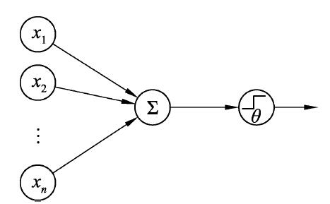
图1-3 M-P模型
M-P模型的论文是人类历史上第一次对人工神经网络的系统性研究。在M-P模型中，所有的值都是0和1，所有输入节点模拟神经元的树突，输入信号的求和通过一个阈值θ比较决定输出值来模拟信号的输出。M-P模型表达成公式的形式如下：
可以看出，M-P模型中所有的值都是0和1，可以用来模拟最基本的二进制逻辑。然而这也成了M-P模型的局限性，即只有用于模拟信号电平的二值（0和1），并且每个输入信号的权重都是一样的。1949年，加拿大心理学家唐纳德·赫布（Donald Hebb）提出了赫布学习（Hebbian Learning）规则。大意是神经系统响应一个信号时，同时被激活的神经元之间的联系会被强化。以这种规律为基础，赫布将神经元之间连接的强弱以权值的方式引入了计算模型，并且提出了一套修改权值的规则让模型可以“学习”。在M-P模型的基础上和赫布学习规则的启发下，1956年，美国心理学家弗兰克·罗森布拉特（Frank Rosenblatt）提出了著名的感知机（Perceptron）。这种模型不仅在M-P模型基础上加入了权值，并且跳出了二值的限制，最重要的是，罗森布拉特给出了这种模型的权值修改方法：通过公式记录感知器对训练数据的正确率，然后根据正确率对权值进行更新。这样就相当于感知机进行了针对某个数据任务的“训练”。不过总体而言这种“训练”是半手动的，非常低效。感知机提出后，罗森布拉特用硬件电路做了简单的实现，并且完成了一些在那个年代非常激动人心的任务，如通过光传感器阵列来模拟视网膜并识别一些简单的字母。
Tips： 感知机的结构非常简单，相比起M-P模型更加灵活，后来成为了人工神经网络的基础，关于感知机的细节和作用将留在第3章详细讨论。
前面已经提到过维纳发表的控制论对人工神经网络的研究有重要的影响。提出M-P模型的麦克洛奇和匹茨在麻省理工学院（MIT）时都是维纳的小弟，匹茨还曾是维纳的特招生，然后就是在他们的基础上提出感知机的罗森布拉特，这几位在当时是神经网络研究的代表人物，尤其是罗森布拉特，在感知机发表后不遗余力推广神经网络，于1962年还出版了一本书《Principles of Neurodynamics：Perceptrons and The Theory of Brain Mechanisms》，系统地总结了自己对神经网络的研究。那时第一次神经网络的研究热潮达到了巅峰，罗森布拉特拿各种科研资金拿到手软。
1.1.5 神经网络的第一次寒冬
当时在人工智能领域除了以罗森布拉特为首的山寨大脑神经元结构的连接主义（connectionism）外，还有另一个流派，他们推崇的是从逻辑和思维的角度出发，把思维分解成一个个可以用符号操作表示的单元，这一派称为符号主义（Symbolism），更偏向于推理和逻辑。有人的地方，就有江湖。作为当时人工智能领域最大的两个流派，他们并没有和平相处。符号派的代表人物是人工智能的奠基人之一，也是前面提到过的达特茅斯会议的组织者之一马文·明斯基。明斯基事实上最早是连接主义学派的，1954年他在普林斯顿的博士毕业论文题目是《Theory of Neural-Analog Reinforcement Systems and Its Application to the Brain Model Problem》。在第一次达特茅斯会议上他也是连接主义的支持者，后来才转向了符号主义，并成为了领袖级的人物。明斯基和罗森布拉特在高中时期就是师兄弟，不知是不是那个时候就结下了“梁子”，在他们的研究生涯中，这两人总是互相怀有敌意。
这两派的斗争在1969年暂时分出了高下，明斯基在那一年出版了一本《感知机：计算几何学》书（Perceptrons：An Introduction to Computational Geometry），这本书看标题是讲感知机，但是真正产生影响的内容是书中对感知机限制的描述。在那个年代，机器的计算能力还非常有限，所以多层的感知机网络（如图1-4所示）的计算是不实际的。而单层感知机的表达能力又非常有限，明斯基在书中用单层感知机不能解决异或逻辑的例子指出了感知机在实用层面的局限性，并断定感知机的研究没有前途。除了对感知机局限的理性论述，这本书中还用一些非常刻薄的语句来攻击相关研究，如在第一版序言中所写“大部分关于感知机的研究都是没有科学价值的”（Perceptrons have been widely publicized as”pattern recognition”or”learning”machines and as such have been discussed in a large number of books journal articles and voluminous”reports”.Most of this writing…is without scientific value）。1969年是个非常微妙的时间点，距感知机的大红大紫已经过去了近10年，却并没有出现之前预期中令人激动的成果，相关研究的进展也越来越慢。明斯基作为人工智能领域的泰斗之一，他对神经网络了如指掌，在这个时间点发布了这样一部直指连接主义缺陷的著作，这对连接主义学派而言无疑是一个致命的打击。随着明斯基著作的发表，许多学者纷纷离开神经网络的研究领域，很多政府资助也被停止。神经网络的研究走入低谷，迎来了第一次寒冬。事实上，研究者和资金的撤离不仅仅限于神经网络方向，而是整个人工智能领域。因为无论是人工智能领域的哪个学派，在人工智能刚开始蓬勃发展的时候都对这个领域做出了过于乐观的预期，而随着时间的推移，研究的进展并没有达到研究者和媒体渲染的那样。伴随神经网络寒冬一同陨落的还有罗森布拉特本人。1971年7月11日，罗森布拉特在43岁生日的当天，在美国东海岸的切萨皮克湾（Chesapeake Bay）泛舟时不幸遭遇事故丧生。
图1-4 一个多层感知机/神经网络结构示意
1.1.6 神经网络的第一次复兴
在沉寂了近10年之后，神经网络的研究又开始慢慢复苏。1982年，加州理工的生物物理学家约翰·霍普菲尔德（John Hopfield）提出了一种反馈型神经网络，即Hopfield网络。和Hebbian学习规则一样，Hopfield网络提出的最初目的是偏向于神经学科，用于研究记忆的机制，而结果是这种网络成功地解决了一些识别和约束优化的问题，引起了很大的反响。这让神经网络领域的连接主义研究者们非常振奋，渐渐地许多研究者又将目光再次移向了神经网络。同时一些新的研究中心建立起来，并开始吸引许多老一辈的神经网络研究者和后起之秀。这其中就有后来的深度学习“祖师爷”之一的杰弗里·辛顿（Geoffrey Hinton）。
在第一次神经网络的寒冬开始时，辛顿刚刚开始读研究生。凭借着对神经网络的浓厚兴趣，他并没有在这段寒冬岁月放弃对神经网络的研究。到了1978年，他在爱丁堡大学完成了博士学习，然后历经辗转，于1980年到了美国加州大学圣迭戈分校（UCSD）攻读博士后。那时UCSD正走在连接主义学派复兴的前沿，其中两位代表人物是两位心理学家大卫·鲁梅哈特（David Rumelhart）和詹姆斯·麦克利兰德（James McClelland）。在那里辛顿加入了UCSD认知科学中心的研究小组，并与鲁梅哈特和麦克利兰德建立了良好的合作。两年后辛顿到了卡耐基梅隆大学，于1986年和鲁梅哈特合作发表了论文《Learning Representations by Back-Propagating Errors》，提出了后向传播算法（Back Propogation，简称BP算法，关于该算法更详细的内容将于第3章进行介绍）。BP算法解决的正是明斯基在《感知机：计算几何学》中指出的双层网络难以训练的问题。BP算法使一层以上的神经网络进入实用阶段，开启了第二轮神经网络的研究热潮。1987年，鲁梅哈特转到了斯坦福大学当教授，在这里他培养出了后来的机器学习大神，继承了他图论造诣的迈克尔·乔丹（Micheal Jordan）。而乔丹后来的学生里又出现了两个深度学习的代表人物，一个是博士生吴恩达（Andrew Ng），还有一个是博士后，即后来深度学习创始人之一约书亚·本吉奥（Yoshua Bengio）。
再来看辛顿，在祭出了复兴神经网络的“大杀器”BP算法后，又几经辗转，于1987年到了多伦达大学当教授。在这里他又遇到了后来深度学习的又一个始祖级人物杨乐昆（Yann LeCun），杨乐昆出生于法国，并在那里完成了博士的所有学业。就在辛顿到了多伦多的同一年，他也来到了多伦多大学，成为辛顿组里的一名博士后。在那里他做了一些关于BP算法的理论研究，并在一年后加入了贝尔实验室（AT&T Bell Lab）。在贝尔实验室，基于后向传播算法，杨乐昆提出了后来名满天下，第一个真正意义上的深度学习，也是目前深度学习中应用最广的神经网络结构——卷积神经网络（Convolutional Neural Networks）。卷积神经网络在当时就对手写字母达到了很高的识别率，并被广泛应用于欧美许多大银行的自动手写识别系统。更多关于卷积神经网络的细节会在第4章详细介绍。
1989年，美国应用数学家乔治·塞班克（George Cybenko）证明了神经网络可以被看作是一个通用逼近函数，一个隐藏层的网络可以逼近任意连续函数，两个隐藏层的网络可以逼近任意函数。这个理论在后来又被奥地利数学家科特·霍尼克（Kurt Hornik）完善，也就是说神经网络的拟合能力是接近无限强的，任意复杂的分类决策边界都可以被逼近，至此神经网络的研究又进入了一个新的高潮。
1.1.7 神经网络的第二次寒冬
虽然BP算法将神经网络带入了实用阶段，可是当时的神经网络仍然存在一些缺陷。首先是神经网络的层数，随着研究的深入，人们发现BP算法的一个缺点是梯度计算存在不稳定的问题。简单来说就是越远离输出层的参数越难以被训练，要么会不变，要么会变化过于剧烈，这被称为梯度消失/爆炸问题，而且层数越多，这个问题越明显。说到这里又要引出一个深度学习的始祖级人物，现居瑞士的德国计算机科学家尤尔根·施米德休（Jürgen Schmidhuber），梯度传播中的消失/爆炸问题正是由他的第一个学生赛普·霍克莱特（Sepp Hochreiter）在毕业论文中第一次正式提出并讨论。不知道是不是因为住的离美国太远，提到深度学习的时候人们往往提到的是和他贡献差不多的另外三巨头辛顿、杨乐昆和本吉奥。而实际上在深度学习领域施米德休也是举足轻重的，他从20世纪90年代就开始研究深度神经网络，从时间上来看他和杨乐昆应该是最早研究深度学习的两个人。他提出的长短期记忆网络（Long-Short Term Memory，LSTM），在语音识别和自然语言处理领域产生了巨大的影响。2016年初靠着AlphaGo大红大紫的公司DeepMind里也有两个创始人都是他的学生。言归正传，一方面BP算法只对浅层网络有效，另一方面两三层的神经网络就已经有了足够强的拟合能力，所以当时应用层面的研究很多都集中在浅层神经网络，对深层网络的了解总体而言知之甚少。
除了浅层的限制，参数过多也成了神经网络被诟病的问题之一。针对一些识别问题，因为底层细节的不直观和过于强大的拟合能力，再加之那个年代很多问题的训练数据量都不大，神经网络的泛化能力确实有隐患，所以很多人认为神经网络就是某种程度上的过拟合，甚至今天很多人还是对深度学习抱有类似的观点。神经网络的调参也是个巨大的问题，因为神经网络的结构让使用者并不关注细节，而只需要关注输入输出，选择诸如隐层数、单元数等参数往往会显得有些无迹可寻，相关的理论研究也乏善可陈，所以调参往往成了一项经验活。另外相对应大量的参数也对计算机的算力提出了要求。除了参数相关的问题，因为BP算法本身依赖于梯度，所以训练陷入局部最小值也成了神经网络的一个大问题。
进入20世纪90年代中期，神经网络的发展又进入了一个相对缓慢的阶段，而那时，一个机器学习领域内的“大神”杀了出来，他就是支持向量机（Support Vector Machine，SVM）的提出者，统计学家弗拉基米尔·万普尼克（Vladimir Vapnik）。万普尼克也是第一批从事人工智能的老一辈研究者，在感知机风靡的年代，他也在那股热潮下做了很多研究，并于1963年提出了原始的SVM。不过那个时候他的SVM和感知机差别并不大，再加上他人在莫斯科，没有产生大的影响。在随后的岁月里，万普尼克一直在莫斯科控制科学研究所潜心研究偏理论的方向，一直做到了研究所计算机部门的老大。1990年，前苏联动荡，万普尼克移居美国加入了贝尔实验室，成了杨乐昆的同事。1995年，万普尼克正式提出了统计学习理论，并将该方法应用到了SVM。虽然广义上来讲，SVM也是个浅层网络，但相比当时其他浅层神经网络，SVM拥有全局最优、调参简单、泛化能力强等优点，并且还有完善的理论支撑。更重要的是，SVM诞生后，在当时的一些诸如手写体识别的问题上一举击败了其他各种浅层神经网络，迅速成了研究的主流。就这样，神经网络进入了第二次寒冬。
1.1.8 2006年——深度学习的起点
在科研领域总是有这么一些人，无论热点和资金在哪，他们都不会动摇。在第二次神经网络的寒冬到来时，辛顿、杨乐昆、本吉奥和尤尔根等仍然坚持着神经网络的研究。到了21世纪初的时候，随着随机森林（Random Forest）和AdaBoost等方法的兴起，神经网络研究的处境更是雪上加霜，根据辛顿和杨乐昆的回忆，那个时候他们的学生完成的和神经网络沾边的文章被拒是家常便饭。其实和SVM等方法比起来，神经网络有一个非常大的优点即分布式表征（Distributed Representation。关于分布式表征的更详细内容将在第4章进行介绍）。在浅层神经网络中，虽然这个优点也有，但并不容易体现出来，所以一个重要的努力方向是克服BP算法的误差传播问题，将网络变得更深。1997年，尤尔根提出了LSTM，在一定程度上解决了BP算法中的误差传播问题，形成了一定的影响，但受到计算能力等因素的影响，当时并没有流行起来。到了2004年，神经网络方向的研究进入了最低谷，这年辛顿的重要资金来源加拿大高等研究所（Canadian Institute For Advanced Research，CIFAR），又到了评审项目资助的时候。因为神经网络的颓势，CIFAR在当时已经是极少数还愿意支持神经网络相关研究的机构，当时除了辛顿以外所有其他的受资助人都在做其他方向的研究。在这种举步维艰的情况下，辛顿终于还是成功说服CIFAR的评审委员，拿到了一笔不大的资助让研究得以维持。在这笔资助下，经过两年的卧薪尝胆，辛顿在2006年发表了一篇突破性的文章《A Fast Learning Algorithm for Deep Belief Nets》，这篇论文里辛顿介绍了一种成功训练多层神经网络的办法，他将这种神经网络称为深度信念网络。深度信念网络的基本思想是用一种叫受限波尔兹曼机（Restricted Boltzmann Machine，RBM）的结构得到生成模型（Generative Model）。受限波尔兹曼机的结构如图1-5所示。
图1-5 受限玻尔兹曼机结构示意
要注意的是，和常见的神经网络不同，RBM的结构是无向图，本质上讲是一个马尔科夫随机场。因为RBM的应用和本书关系不大，所以这里并不会深入RBM的细节。简单来理解，可以把RBM看作一个输入+单隐层的网络，层内无连接，层间是全连接。其中图1-5中的单元名称为v的是输入层，对应观测（visible）到的数据，h的一层对应于隐（hidden）变量。训练RBM的效果是可以让网络学习及产生输入数据，也就是v的分布。
对于深度神经网络而言，RBM的原理可以简单理解如下：首先学习大量无标注数据，然后在隐藏层提取出数据的特征，而这个特征就可以重现数据的分布。如果隐层单元数量远小于可见单元的数量，则相当于降维，如果隐层单元大部分都是0，则相当于学习到了稀疏的表示。而当这样的结构学习到之后，就有了每个连接的权重，这时候把RBM的结构当作有向图来使用，就相当于得到了一个最简单的神经网络，并且学到了一层特征。而如果接下来继续这个过程，把学到的特征作为另一个RBM的输入进行学习，则相当于又学到了更加高层的表示，于是一层层堆起来就成了一个深层的网络，也就是文章标题里提到的深度信念网络（DBN）。这样一个网络已经有了学习到的权重，可以看作是对网络一个非常好的初始化，这个过程叫做预训练（pre-train）。然后再按照传统的BP算法，结合标注的数据对这个网络进行训练，此时预训练的权重相当于把网络初始化到了一个很好的起点上，所以BP算法只需要进行局部的搜索就可以收敛到一个不错的结果，这个BP算法训练过程也叫做微调（finetune）。
无论是RBM，还是这种一层层训练的办法，在今天的大部分深度学习应用中看来已经没什么特别的优势。但当时这个办法颠覆了之前被学术界大部分人默认的深度网络不能被训练的观点。另外，还有可以利用无标注数据的优点。更重要的是，DBN一出，立刻在效果上打败了风光已久的SVM，这让许多研究者的目光重新回到了神经网络。与辛顿发表论文的同一年，本吉奥和杨乐昆也在之后的神经信息处理系统会议（Conference on Neural Information Processing Systems，NIPS）上发表了两篇深度网络的论文。一篇探讨了辛顿的方法并比较了基于自编码机（auto-encoder）的深度网络，一篇讨论和辛顿方法类似的办法，用于初始化卷积神经网络，并在手写数字识别上达到了当时最好的效果。这三篇论文算是重振神经网络的开山之作，而这三位研究者现在也是领域内公认的三巨头。可能是之前神经网络不招人待见的经历让辛顿郁闷了太久，所以当初他拿到CIFAR资助的时候就给接下来的研究想了一个新的名字——Deep Learning，于是深度学习正式登场。
TIPS： Deep Learning的来源
Deep Learning并不是2006年才出现的新词，最早正式在学术刊物里出现是1986年。加州大学尔湾分校（University of California，Irvine）计算机系的教授丽娜·德科特（Rina Dechter）在发表的论文《Learning While Searching in Constraint-Satisfaction Problems》里第一次提出了Deep Learning这个词。
1.1.9 生活中的深度学习
后来的事情和其他任何一个热门算法领域火起来的套路差不多，人才、资金滚滚而来，百花齐放，深度学习越来越热，并开始产出成果。
深度学习首先在语音识别领域取得了成功。微软研究院的邓立、俞栋和辛顿合作的产品于2011年发布，打败了传统的基于混合高斯模型（Gaussian Mixed Model）的办法，取得了不错的效果。在这些成果背后，深度学习，尤其是深度循环神经网络（Recurrent Neural Networks，RNN）在背后发挥着巨大的作用，如前面提到的深度学习巨头尤尔根的LSTM，就是RNN框架下的一个非常有效的技术。后来Google、Facebook等大公司也通过研发或收购分别推出了基于深度学习的语音识别系统。国内也研发了基于深度学习的语音识别系统，比较有代表性的如科大讯飞、百度等。如今无论是苹果的Siri，微软的小娜，还是安卓手机上的语音输入助手，背后的技术都是深度学习。
当然提到语音输入助手就不能不提更上层的自然语言处理，如今我们只需要对微信说句话就能转化成文字消息发给朋友，对着地图说出要去的地方就能返回给我们规划好的路线。英文不好，没关系，在计算机上复制、粘贴就能翻译。这些让我们生活更便利的技术，几乎都是基于深度学习。
除了语言语音领域，另一个深度学习应用最广泛的就是图像和视觉。事实上图像和视觉一直以来就是机器学习领域所钟爱的方向，只不过在深度学习出现之前，能达到实用的应用并不多。而在深度学习出现后，尤其是2012年之后，基于深度学习图像和视觉应用迅速覆盖了生活的方方面面。当你走在街上看到一件好看的衣服，立刻拿出手机用淘宝或者京东的拍照购物功能，就能找到同款或者类似的款式。当你打开计算机，只需要刷一下指纹或者对着摄像头笑一笑，就能进入系统，既方便又安全。去银行办理公积金联名卡，费时又费力，如今银行工作人员带着iPad和便携设备，只需要按照办理系统的提示对着摄像头就能搞定。犯罪分子作案后潜逃，刑警们不需要熬夜看周边的监控视频，智能搜查系统就能搞定。还有现在各大科技公司和汽车企业都在大力发展的无人驾驶，背后的技术都少不了基于深度学习的计算机视觉。
大数据也是近年来的一个热点，其背后的主要技术之一也是深度学习，如通过生物医药海量数据助力药品研发和疾病诊断；又如分析海量的用户行为和数据，帮助银行和P2P金融公司做出更加安全的放贷决定；还有分析海量的商品数据，帮助电商更好地销售商品，用户也更容易买到想要的东西。其他的还有推荐系统、机器人、游戏等，深度学习正在让人们的生活更加便利。
1.1.10 常见深度学习框架简介
工欲善其事，必先利其器。深度学习诞生10年有余，已经有了不少成熟的开发框架，下面来看一看当前主流的框架。
Caffe 全称为Convolutional Architecture for Fast Feature Embedding，由伯克利加州大学（University of California，Berkeley）的博士生贾扬清开发，后来一直由伯克利视觉及学习中心（Berkeley Vision and Learning Center，BVLC）进行维护。Caffe基于C++和英伟达（NVIDIA）公司的GPU（Graphic Processing Unit）通用计算架构CUDA（Compute Unified Device Architecture）开发，特点是高效、可配置化的输入、GPU和CPU的无缝切换。当然还有非常重要的一点，Caffe拥有庞大的社区，无论是科研领域还是业界都有大量的用户。每当一些最前沿的深度学习方法发表后，没多久就会有官方的预训练模型或是第三方基于Caffe的实现，所以Caffe是一个对初学者和有经验的人都非常适合的工具。
2013年，贾扬清得到了一块NVIDIA免费提供的K20加速卡。在这个契机下贾扬清一边做毕业论文一边开始写一个用于深度学习的框架。经过了近半年的独立开发，Caffe初具形态并且在伯克利的研究组内获得了良好的试用反响。后来在物体检测领域成为经典的R-CNN（Regions with Convolutional Neural Network features）方法就是在这段时间内基于Caffe实现的。
2013年底，贾扬清将Caffe开源，成为了当时业内第一个较为完整的深度学习开源框架，于是立刻获得了学术界和业界的好评及支持。后来在BLVC和NVIDIA为主的合力推广下，Caffe很快成为了深度学习领域，尤其是基于深度学习的计算机视觉领域最流行的框架。本书使用Caffe作为实例的主要实现框架之一，后面会有更多关于Caffe的内容。
Theano 这个由希腊神话中伊卡里亚岛国王妻子名字命名的框架，是由本吉奥领导的蒙特利尔大学机器学习研究小组（MILA，开发时叫LISA）开发的。作为一个诞生比Caffe早的框架，在早期Theano是深度学习领域最流行的软件包。严格来说，Theano不是专门面向深度学习的，而是一个基于多维数组用于计算和优化数学表达式的数值软件包，因为神经网络的本质其实就是数学表达式，所以用Theano可以非常灵活地从无到有地实现神经网络的各种功能。Theano基于Python，最大的优点是灵活，性能非常出色，缺点是基于函数式的编程方式，还有拗口的API，异常困难的调试等，造就了陡峭的学习曲线。另外，其异常慢的编译速度也常常遭人诟病。
直接在Theano中开发虽然灵活度最高，但开发工作量和难度也不小，所以在Theano基础上有很多封装过后框架，比如MILA官方的Pylearn2，还有第三方开发的Lasagne和Keras等。Pylearn2由于把Theano的缺点又进一步发挥到了极致，在火了一小阵后就被渐渐冷落，如今已经停止了实际意义上的开发。后两个框架正在蓬勃发展中，尤其是Keras，渐渐开始成为一个脱离底层实现的大框架，目前除了Theano也支持了Google的Tensorflow。
TensorFlow Google开源的深度学习框架，一开始主要面向的是分布式系统。从官方介绍上看，具有非常好的延展性，在多GPU/多机上拥有最好的灵活性。另外Google的强有力支持也算是一大优点。初期版本在单机和一些小任务上性能差强人意，在一些基准测试上甚至常常被其他框架甩下一个量级。不过随着TensorFlow的持续改进，以及Google光环的照耀，现在TensorFlow正在变得越来越流行。截至2016年5月，在github上关于TensorFlow的相关讨论的数量已经超过Caffe跃居第一位。
Torch 由卷积神经网络之父杨乐昆领导开发的框架，是Facebook的深度学习开发工具，于2014年开源后，迅速传播开来。Torch的性能非常优秀，其他方面作为一个框架该有的功能都有。另外，作为集合了杨乐昆学术能力和Facebook业界经验的框架，Torch天然对多GPU的支持也胜过了被经常拿来一起比较的Caffe。Torch是基于Lua的，虽然Lua是一个简单又灵活的语言，但是毕竟是小众语言，这在一定程度上限制了Torch的流行程度。
MXNet 由分布式机器学习社区（Distributed/Deep Machine Learning Community，DMLC）开发，是第一个由中国人主导开发的流行框架。MXNet的特点是轻量级、高性能，以及对从分布式到嵌入式等多种场景的优异支持。MXNet前身是DMLC的CXXNet和Minerva，这两个项目一个通过配置和定义来训练网络，而另一个则提供了类似numpy一样的多维数组的用法。MXNet无缝地衔接了这两种用法，获得了非常好的灵活性，这是另一个特点。MXNet支持语言非常多，尤其是对R的支持，赢得了一批统计领域的用户，并且扩展性也不错，可以说是一个非常有潜力的框架。此外，MXNet还有一个很大的特点是文档非常“烂”。2016年末，Amazon宣布MXNet为其官方深度学习平台，并会提供进一步支持，这个问题似乎有望被解决。后续MXNet是否能进一步崛起，并和TensorFlow还有Caffe一较高下，我们拭目以待。
cuda-convnet2 由2012年让深度学习在视觉领域声名大噪的AlexNet作者，辛顿的学生阿历克斯·克里泽夫斯基（Alex Krizhevsky）开发。作为一名学术工程双馨的天才，其开发的cuda-convnet2的性能曾经非常强悍，不过不知什么原因，最近也停止更新了。
Neon 由一家结合了深度学习人才和硬件人才的创业公司Nervana Systems于2015年开源发布。这是一个比较独特的框架，因为其公司软硬结合的血统，在硬件优化上的造诣让这个框架在发布时在不少基准测试上达到了世界最佳的成绩。2016年中，Nervana System被Intel收购，此前Intel还收购了FPGA供应商Altera，也许Intel很快就会憋出个大招？我们也拭目以待。
Deeplearning4j 支持Java的机器学习库，由Skymind发布于2014年发布，商业标准的开源框架，在一些欧美咨询公司中受到欢迎。
CNTK 全称为Computational Network Toolkit，是微软出品的深度学习框架，于2016年初开源，所以目前使用者寥寥。该框架同时支持CPU和GPU，据说性能极其强悍，在微软官方博客上的测试中，超过了其他所有常见框架。
Tips： 本书使用的框架
本书中后面实战章节的框架是Caffe和MXNet，主要原因如下：
·Caffe是目前最成熟的框架，虽然有被TensorFlow赶超之势，但是对于初学者而言最容易找到的资料还是Caffe，而且Caffe上手难度略低于TensorFlow。
·MXNet的上手难度低，非常适合初学者。一直以来遭到诟病的文档“烂”问题随着Amazon的支持应该会慢慢改善，潜力很好。另外MXNet的内存优化好，即使笔者的计算机性能有限，跑起来也不费劲。
1.2 给计算机一双眼睛——计算机视觉
在深度学习出现之前，计算机视觉就像是设计精妙的火箭，缺少一个强大的助推器。
1.2.1 计算机视觉简史
都说“眼睛是心灵的窗户”，乍一听只觉得是一个很好听的比喻。仔细想想，视觉对人类真的很重要。佛学中说五识，指的是眼耳舌鼻身，事实上这也是古人对人的感官重要性的大致排名，视觉排名第一。现代的科学研究也表明，人类的学习和认知活动中，有80%～85%都是通过视觉完成的。也就是说，视觉是人类感受和理解这个世界的最主要手段。视觉对人类如此重要，人工智能里当然不能少了视觉相关的领域，即计算机视觉。
从人工智能诞生起，视觉相关的应用就一直是该领域内科学家偏爱的方向，如前面提到过的感知机。感知机最早拿来演示的应用就是通过20×20像素的传感器用于字母识别。计算机视觉正式成为一个学科，要追溯到1963年美国计算机科学家拉里·罗伯茨（Larry Roberts）在MIT的博士毕业论文《Machine Perception of Three-Dimensional Solids》，在这篇论文中，拉里根据加拿大科学家大卫·休伯尔（David Hubel）和瑞典科学家托斯坦·维厄瑟尔（Torsten Wiesel）从1958年起对猫视觉皮层的研究，提出在计算机的模式识别中，和生物的识别类似，边缘是用来描述物体形状的最关键信息。拉里在论文中通过对输入图像进行梯度操作，进一步提取边缘，然后在3D模型中提取出简单形状结构，然后利用这些结构像搭积木一样去描述场景中物体的关系，最后获得从另一角度看图像物体的渲染图。在这篇论文中，从二维图像恢复图像中物体的三维模型的尝试，正是计算机视觉和传统图像处理学科思想上最大的不同：计算机视觉的目的是让计算机理解图像的内容。所以这算是计算机视觉相关的最早的研究。
1966年，当时在MIT人工智能实验室的明斯基发起了一个“暑期视觉项目”（The Summer Vision Project）。目的是集中暑假的闲散劳动力解决计算机视觉问题，力争产出模式识别研发的里程碑式的结果。当然这是暑期视觉项目的文档里写的，据一个流传甚广的说法，最初明斯基只是让组里一个叫杰拉德·杰伊·萨斯曼的本科生（Gerald Jay Sussman，后来的MIT教授）去把计算机和相机连起来，并尝试用暑假的时间实现让计算机描述看到了什么。当然这个项目没有成功，而计算机视觉作为一个专门研究课题却出现在了历史的舞台上。
从有了计算机视觉的相关研究开始，一直到20世纪70年代，人们关心的热点都偏向图像内容的建模，如三维建模、立体视觉等。比较有代表性的弹簧模型（Pictorial Structure，如图1-6所示）和广义圆柱体模型（Generalized Cylinder）就是在这个时期被提出来的。可以看到，在这个时期，无论是弹簧模型还是广义圆柱体模型，其实都还是沿着拉里的搭积木的思路。
图1-6 弹簧模型和广义圆柱体模型示意图
到了20世纪70年代末，计算机视觉领域的一位超重量级人物开始发力了，他就是英国人戴维·马尔（David Marr）。马尔是一名神经生理学家和心理学家，在20世纪70年代以前他并没有专门研究过视觉。从1972年开始，他转向研究视觉处理并于1973年受到明斯基的邀请进入了MIT人工智能实验室工作。1977年，马尔被检查出患了白血病，这个突如其来的打击并没有让他陷入消沉，而是迫使他开始整理自己在视觉理论框架上的研究。1979年夏天，马尔完成了自己的视觉计算理论框架的梳理，并初步整理成一本书。1980年，马尔获得了MIT的终身教职，成为了教授。不过很不幸的是就在该年冬天，年仅35岁的马尔因白血病去世。
马尔去世后，在他的学生的帮助下，MIT出版社于1982年出版发行了他在1979年完成的书《视觉计算理论》（Vision：A computational investigation into the human representation and processing of visual information）。这本书中马尔提出了对计算机视觉非常重要的观点：人类视觉的主要功能是通过大脑进行一系列处理和变换，来复原真实世界中三维场景，并且这种神经系统里的信息处理过程是可以用计算的方式重现的。马尔认为这种重现分为三个层次：理论、算法和硬件实现，并且算法也分为基本元素（点、线、边缘等）→2.5维→3维三个步骤。尽管从今天来看马尔的理论存在着一些不合理的地方，但在当时却开启了计算机视觉作为一门正式学科的研究。从1987年开始，国际计算机视觉大会（IEEE International Conference on Computer Vision，ICCV）开始给计算机视觉领域做出重要贡献的人颁发奖项，奖项名字就叫做马尔奖。
在视觉计算理论提出后，计算机视觉在20世纪80年代进入了最蓬勃发展的一个时期。主动视觉理论和定性视觉理论等都在这个时期被提出，这些理论认为人类的视觉重建过程并不是马尔理论中那样直接，而是主动的，有目的性和选择性的。同时从20世纪80年代起，这个学科开始慢慢脱胎于神经科学，更多偏重计算和数学的方法开始发展起来，相关的应用也变得更加丰富。著名的图像金字塔和Canny边缘检测算法在这个时期被提出，图像分割和立体视觉的研究在这个时期也蓬勃发展，当然还有和本书更紧密的基于人工神经网络的计算机视觉研究，尤其是模式识别的研究也伴随着人工神经网络的第一次复兴变得红火起来。
进入20世纪90年代，伴随着各种机器学习算法的全面开花，机器学习开始成为计算机视觉，尤其是识别、检测和分类等应用中一个不可分割的重要工具。各种识别和检测算法迎来了大发展。尤其是人脸识别在这个时期迎来了一个研究的小高潮。各种用来描述的图像特征的算子也不停地被发明出来，如耳熟能详的SIFT算法就是在20世纪90年代末被提出的。另外伴随着计算机视觉在交通和医疗等工业领域的应用越来越多，其他一些的基础视觉研究方向，如跟踪算法、图像分割等，在这个时期也有了一定的发展。
进入21世纪之后，计算机视觉已经俨然成为计算机领域的一个大学科了。国际计算机视觉与模式识别会议（IEEE Conference on Computer Vision and Pattern Recognition，CVPR）和前面提到的ICCV等会议已经是人工智能领域，甚至是整个计算机领域内的大型盛会，甚至出现了一些新的子方向，如计算摄影学（Computational Photography）等。在传统的方向上基于特征的图像识别成了一个大热门，斯坦福大学的李菲菲教授牵头创立了一个非常庞大的图像数据库ImageNet。ImageNet里包含1400万张图像，超过20000个类别。基于这个数据库，自2010年开始，每年举办一次的大规模视觉识别挑战比赛（ImageNet Large Scale Visual Recognition Challenge，ILSVRC），采用了ImageNet里1000个子类目的超过120万张图片作为数据，参赛者来自世界各国的大学、研究机构和公司，成为了计算机视觉领域最受关注的事件之一。
1.2.2 2012年——计算机视觉的新起点
ILSVRC举办的前两年，各种手工设计特征+编码+SVM框架下的算法就霸占了前几名。ILSVRC的分类错误率的标准是让算法选出最有可能的5个预测，如果有一个是正确的则算通过，如果都没有预测对则算错误。2010年ILSVRC的冠军是NEC的余凯带领的研究组，错误率达到了28%。2011年施乐欧洲研究中心的小组将这个成绩提高到了25.7%。
终于，到了2012年，这年辛顿的小组也参加了竞赛，主力选手是辛顿的一名研究生阿历克斯·克里泽夫斯基（Alex Krizhevsky）。阿历克斯是一名学术和工程都非常厉害的学生，在这一年的竞赛上，他提出了一个5卷积层+2全连接层的卷积神经网络AlexNet，并利用CUDA给出了实现，这个算法一下将前5类错误率从25.7%降到了15.3%，在之前的ImageNet竞赛中，哪怕有一个百分点的提升，都是很不错的成绩，而深度学习第一次正式应用在图像分类竞赛就取得了10个百分点的改进，并且完胜第二名（26.2%）。这在当时对传统计算机视觉分类算法的冲击是不言而喻的。简单来说当时的改进主要有以下3点。
更深的网络结构；
校正线性单元（Rectified Linear Unit，ReLU），Dropout等方法的应用；
GPU训练网络。
Tips： AlexNet的细节在第4章中介绍。
尽管在当年许多传统计算机视觉的学者仍然对AlexNet抱有种种质疑，如算法难以解释，参数过多（实际上比许多基于SVM的办法还少）等，但自从2012年后，ImageNet的参赛者几乎全体转向了基于卷积神经网络的深度学习算法，或者可以说计算机视觉领域全体转向了深度学习。基于深度学习的检测和识别、基于深度学习的图像分割、基于深度学习的立体视觉等如雨后春笋般一夜之间全冒了出来。深度学习，尤其是卷积神经网络就像一把万能的大杀器，在计算机视觉的各个领域开始发挥了作用。
1.2.3 计算机视觉的应用
前面已经提到过一些基于深度学习的计算机视觉应用，本节将举几类例子来看看现实生活中都有哪些地方用到了计算机视觉。
安防 安防是最早应用计算机视觉的领域之一。人脸识别和指纹识别在许多国家的公共安全系统里都有应用，因为公共安全部门拥有真正意义上最大的人脸库和指纹库。常见的应用有利用人脸库和公共摄像头对犯罪嫌疑人进行识别和布控。如利用公共摄像头捕捉到的画面，在其中查找可能出现的犯罪嫌疑人，用超分辨率技术对图像进行修复，并自动或辅助人工进行识别以追踪犯罪嫌疑人的踪迹；将犯罪嫌疑人照片在身份库中进行检索以确定犯罪嫌疑人身份也是常见的应用之一；移动检测也是计算机视觉在安防中的重要应用，利用摄像头监控画面移动用于防盗或者劳教和监狱的监控。
交通 提到交通方面的应用，一些开车的朋友们一定立刻就想到了违章拍照，利用计算机视觉技术对违章车辆的照片进行分析提取车牌号码并记录在案。这是大家都熟知的一项应用。此外很多停车场和收费站也用到车牌识别。除了车牌识别，还有利用摄像头分析交通拥堵状况或进行隧道桥梁监控等技术，但应用并没有那么广泛。前面说的是道路应用，针对汽车和驾驶的计算机视觉技术也有很多，如行人识别、路牌识别、车辆识别、车距识别，还有更进一步的也是近两年突然火起来的无人驾驶等。计算机视觉技术在交通领域虽然有很多研究，但因为算法性能或实施成本等因素，目前真正能在实际应用中发挥作用的仍然不多，是一个有着巨大空间的领域。
工业生产 工业领域也是最早应用计算机视觉技术的领域之一。如利用摄像头拍摄的图片对部件长度进行非精密测量；利用识别技术识别工业部件上的缺陷和划痕等；对生产线上的产品进行自动识别和分类用来筛选不合格产品；通过不同角度的照片重建零部件三维模型。
在线购物 前面已经提到了淘宝和京东的拍照购物功能。事实上计算机视觉在电商领域的应用还有更多。图片信息是在电商商品列表中扮演着信息传播最重要的角色，尤其是在手机上。当我们打开购物App时，最先最快看到的信息一定是图片。而为了让每一位用户都能看到最干净、有效、赏心悦目的图片，电商背后的计算机视觉就成了非常重要的技术。几乎所有的电商都有违规图片检测的算法，用于检测一些带有违规信息的图片，如不实促销标签、色情图片等。在移动网络主导的时代，一个手机App的一个页面能展示图片数量非常有限，如果搜索一个商品返回的结果里有重复图片出现，则是对展示画面的巨大浪费，于是重复图片检测算法又发挥了重要的作用。对于第三方商家，一些商家在商品页面发布违规或是虚假宣传的文字很容易被检测，所以有些商家会把文字放到图片里，这个时候文字识别（Optical Character Recognition，OCR）就成了保护消费者利益的防火墙。除了保护消费者利益，计算机视觉技术也在电商领域里保护着一些名人的利益，一些精通Photoshop的商家常常把明星的脸放到自己的商品广告中，人脸识别便成了打击这些行为的一把利剑。
信息检索 搜索引擎可以利用文字描述返回用户想要的信息，图片也可以作为输入来进行信息的检索。最早做图片搜索的是一家老牌网站Tineye，上传图片就能返回相同或相似的结果。后来随着深度学习在计算机视觉领域的崛起，Google和百度等公司也推出了自己的图片搜索引擎，只要上传自己拍摄的照片，就能从返回的结果中找到相关的信息。
游戏娱乐 在游戏娱乐领域，计算机视觉的主要应用是在体感游戏，如Kinect、Wii和PS4等。在这些游戏设备上会用到一种特殊的深度摄像头，用于返回场景到摄像头距离的信息，从而用于三维重建或辅助识别，这种办法比常见的双目视觉技术更加可靠实用。此外就是手势识别、人脸识别、人体姿态识别等技术，用来接收玩家指令或和玩家互动。
摄影摄像 数码相机诞生后，计算机视觉技术就开始应用于消费电子领域的照相机和摄像机上。最常见的就是人脸，尤其是笑脸识别，不需要再喊“茄子”，只要露出微笑就会捕捉下美好的瞬间。新手照相也不用担心对焦不准，相机会自动识别出人脸并对焦。手抖的问题也在机械技术和视觉技术结合的手段下，得到了一定程度上的控制。近些年一个新的计算机视觉子学科——计算摄影学的崛起，也给消费电子领域带来了新玩意——“光场相机”。有了光场相机甚至不需要对焦，拍完之后回家慢慢选对焦点，聚焦到任何一个距离上的画面都能一次捕捉到。除了图像获取外，图像后期处理也有很多计算机视觉技术的应用，如Photoshop中的图像分割技术和抠图技术，高动态范围（High Dynamic Range，HDR）技术用于美化照片，利用图像拼接算法创建全景照片等。
机器人/无人机 机器人和无人机中主要利用计算机视觉和环境发生互动，如教育或玩具机器人利用人脸识别和物体识别对用户和场景做出相应的反应。无人机也是近年来火热的一个领域。用于测量勘探的无人机可以在很低成本下采集海量的图片用于三维地形重建；用于自动物流的无人机利用计算机视觉识别降落地点，或者辅助进行路线规划；用于拍摄的无人机，目标追踪技术和距离判断等可以辅助飞行控制系统做出精确的动作，用于跟踪拍摄或自拍等。
体育 高速摄像系统已经普遍用于竞技体育中。球类运动中结合时间数据和计算机视觉的进球判断、落点判断、出界判断等。基于视觉技术对人体动作进行捕捉和分析也是一个活跃的研究方向。
医疗 医学影像是医疗领域中一个非常活跃的研究方向，各种影像和视觉技术在这个领域中至关重要。计算断层成像（Computed Tomography，CT）和磁共振成像（Magnetic Resonance Imaging，MRI）中重建三维图像，并进行一些三维表面渲染都有涉及一些计算机视觉的基础手段。细胞识别和肿瘤识别用于辅助诊断，一些细胞或者体液中小型颗粒物的识别，还可以用来量化分析血液或其他体液中的指标。在医疗影像领域有一个国际医学影像计算与计算机辅助介入会议（International Conference on Medical Image Computing and Computer Assisted Intervention，MICCAI），每年会议上都会有许多计算机视觉在医疗领域的创新，它是一个非常有影响力的会议。
1.2.4 常见计算机视觉工具包
OpenCV ，计算机视觉领域应用最广泛的开源工具包。它基于C/C++语言，支持Linux/Windows/MacOS/Android/iOS，并提供了Python、MATLAB和Java等语言的接口。因为其丰富的接口，优秀的性能和商业友好的使用许可，不管是在学术界还是业界都非常受欢迎。OpenCV最早源于Intel公司1998年的一个研究项目。当时在Intel从事计算机视觉的工程师盖瑞·布拉德斯基（Gary Bradski）访问一些大学和研究组时发现学生之间实现计算机视觉算法用的都是各自实验室里的内部代码或者库，这样新来实验室的学生就能基于前人写的基本函数快速上手进行研究。于是OpenCV旨在提供一个用于计算机视觉的科研和商业应用的高性能通用库。第一个alpha版本的OpenCV于2000年的CVPR上发布。在接下来的5年里，又陆续发布了5个beta版本。2006年发布了第一个正式版。2009年随着盖瑞加入了Willow Garage，OpenCV从Willow Garage得到了积极的支持，并发布了1.1版。2010年OpenCV发布了2.0版本，添加了非常完备的C++接口，从2.0开始的版本用户非常庞大，至今仍在维护和更新。2015年OpenCV 3正式发布，除了架构的调整，还加入了更多算法、更多性能的优化和更加简洁的API，另外也加强了对GPU的支持，现在已经应用于许多研究机构和商业公司中。
MATLAB Computer Vision System Toolbox ，一直以来就是学术界所钟爱的工具，计算机视觉领域当然少不了MATLAB的踪影。MATLAB的视觉工具包也沿袭了上手简单、可视化方便的风格，成为许多计算机视觉研究者和工程师的选择。
SimpleCV ，一个基于Python的视觉库，提供非常简单易用的接口，底层实现是基于OpenCV、PIL等其他的计算机视觉和图像处理库。
CCV ，一个基于C语言实现的带缓存的计算机视觉库，非常简洁。
VLFeat ，老牌的计算机视觉库，基于C语言实现，并提供MATLAB的接口方便使用。
VXL ，一个基于C++语言实现的计算机视觉库。
1.3 基于深度学习的计算机视觉
深度学习成了现今大部分计算机视觉领域的标配，计算机视觉上的成功又进一步促进了深度学习。
1.3.1 从ImageNet竞赛到AlphaGo战胜李世石——计算机视觉超越人类
前面已经介绍过ImageNet图像分类竞赛和AlexNet的一骑绝尘。本节来看看接下来几年发生了什么。
2013年，马修·塞勒（Matthew Zeiler）以初创公司Clarifi创始人，以及纽约大学计算机系的博士生的两个身份参加了ImageNet比赛，并分别取得了第一名和第三名，这一年他把ImageNet的前5分类错误率降低到了11.7%。从这一年开始几乎所有的参赛者都开始使用卷积神经网络，少数没有使用深度神经网络的参赛者都处于垫底位置。
2014年，Google开始在ImageNet发力。当时在Google担任软件工程师的克里斯蒂安·赛格蒂（Christian Szegedy）提出了一种Inception的结构，并基于这种结构搭建了一个22层的卷积神经网络GoogLeNet，达到了6.66%错误率的成绩。和2013年相比，这一年基于卷积神经网络的成绩普遍提升，前5名都达到了小于10%的成绩。另外值得一提的是，GoogLeNet从网络、形态上讲，已经脱离了AlexNet和LeNet的卷积叠加+全连接的框架。这一年，所有的参赛者都使用了深度神经网络。
Tips： 关于GoogLeNet的细节，第4章节会有详细介绍。
2015年，在建立更深网络的大趋势下，微软亚洲研究院（MicroSoft Research Asia，MSRA）的何恺明提出了深度残差网络（Deep Residual Networks），把网络层数做到了152层，并在ImageNet的分类比赛中取得了3.57%的错误率。在当年，这个成绩的意义除了第一名，更重要的是超过了接收过训练的人在ImageNet数据集上对图片进行分类的成绩（5.1%）。虽然这个结果并不能说明深度学习算法已经真的超过了人类，但是在深度学习介入ImageNet的分类竞赛前，算法只能做到28%的错误率，而在引入深度学习后，三年内就填补了最先进算法到人类分类水平的23%左右的空白，深度学习已经充分展现了威力。
2016年，前5名分类的错误率被进一步降低到了2.99%。冠军是我国公安部三所的搜神（Trimps-Soushen）代表队。2016年的ImageNet竞赛基本上是中国公司代表队的全面开花。在各个不同类别比赛的最终排行榜上都能看到中国公司和机构的名字，出现最多的是海康威视、公安部三所搜神和汤晓鸥老师的商汤科技。这是个可喜可贺的情况，说明中国在深度学习的应用上已经走在了世界的前列。不过从另一方面来讲，2016年很多国外传统强队根本没有参赛，并且也没有什么特别亮眼的新方法被提出，这届竞赛有些更像是模型组合及调参大赛，也不是一件特别鼓舞人心的事情。
每一门学科技术的发展都是螺旋式上升，深度学习被大炒几年后是否也会像股票和三线城市的房价一样回调停滞？总之，作为一门威力强大但是却没有被透彻研究的技术，深度学习还有很多可以探索的领域，其发展也许还任重道远。如图1-7是从2011年到2016年ImageNet竞赛中物体分类最好成绩的趋势。
图1-7 2011～2016年ImageNet图像分类竞赛前5错误率最好成绩
深度学习在图片分类上的成功是被关注讨论最多的，事实上在其他领域深度学习算法在指标上也在渐渐赶超人类。如人脸识别领域的一个公认数据集LFW（Labeled Faces in the Wild）上，人类识别的准确率是97.53%，而如今基于深度学习的人脸识别已经可以达到99.5%的水平。
2016年初万众瞩目的围棋人机大战中，AlphaGo突破了人类智慧的最后堡垒。虽然AlphaGo不算是计算机视觉的应用，但是深度卷积神经网络却在其中扮演了重要角色。棋盘的特征是以19×19的图像形式表示的，通道数是人为规定的颜色、轮次等其他特征，然后放到基于深度卷积神经网络的估值和策略网络中进行训练。
事实上在许多特定任务上，基于深度学习的算法超越人类水平都不是什么新鲜事，未来还会看到更多的例子。
1.3.2 GPU和并行技术——深度学习和计算视觉发展的加速器
前面提到过，深度学习的概念早就有了，早期制约其发展的因素是方方面面的，其中一个很重要的方面就是计算能力的限制。相对其他许多传统的机器学习方法，深度神经网络本身就是一个消耗计算量的大户。另一方面，由于多层神经网络本身极强的表达能力，对数据量也提出了很高的要求。如图1-8所示，一个普遍被接受的观点是，深度学习在数据量较少时，和传统算法差别不大，甚至有时候传统算法更胜一筹。而当数据量持续增加的情况下，传统的算法往往会出现性能上的“饱和”，而深度学习则会随着数据的增加持续提高性能。所以大数据和深度神经网络的碰撞才擦出了今天深度学习的火花，而大数据之大更加大了对计算能力的需求。在GPU被广泛应用到深度学习训练之前，计算能力的低下限制了对算法的探索和实验，以及在海量数据上进行训练的可行性。
图1-8 深度学习和传统机器学习算法对数据的依赖关系
从20世纪80年代开始人们就开始使用专门的运算单元负责对三维模型形成的图像进行渲染。不过直到1999年NVIDIA发布GeForce 256时，才正式提出了GPU的概念。早期的GPU中，显卡的作用主要是渲染，但因为天然就很强的并行处理能力和少逻辑重计算的属性，从2000年开始就有不少科研人员开始尝试用GPU来加速通用高密度、大吞吐量的计算任务。2001年，通用图形处理器（General-Purpose computing on GPU，GPGPU）的概念被正式提出。2002年，多伦多大学的James Fung发布了OpenVIDIA，利用GPU实现了一些计算机视觉库的加速，这是第一次正式将GPU用到了渲染以外的用途上。到了2006年，NVIDIA推出了利用GPU进行通用计算的平台CUDA，让开发者不用再和着色器/OpenGL打交道，而更专注于计算逻辑的实现。这时，GPU无论是在带宽还是浮点运算能力上都已经接近同时期CPU能力的10倍，而CUDA的推出一下降低了GPGPU编程的门槛，于是CUDA很快就流行开并成为了GPU通用计算的主流框架。后来深度学习诞生了，鉴于科研界对GPU计算的一贯偏爱，自然开始有人利用GPU进行深度网络的训练。之后的事情前面也讲到了，GPU助Alex一战成名，同时也成为了训练深度神经网络的标配。
除了NVIDIA，ATI（后被AMD收购）也是另一大GPU厂商。事实上ATI在GPU通用计算领域的探索比NVIDIA还早，但也许是因为投入程度不够，或是其他原因，被NVIDIA占尽先机，尤其是后来在深度学习领域。
说完了GPU领域的风云变幻，接下来看一些实际的问题：如何选购一块做深度学习的GPU？一提到用于深度学习的GPU，很多人立刻会想到NVIDIA的Tesla系列。实际上根据使用场景和预算的不同，选择是可以很多样化的。NVIDIA主要有3个系列的显卡：GeForce、Quadro和Tesla。GeForce面向游戏，Quadro面向3D设计、专业图像和CAD等，而Tesla则是面向科学计算。所以这里主要讨论一下GeForce和Tesla的区别。
GeForce系列显卡面向游戏，所以性能要求是最高的，而精度上的限制就低很多，另外稳定性比Tesla也差很多。毕竟玩游戏的时候如果程序崩了也就丢个存档，但服务器要是崩了没准能“挂掉”一个公司。当然从实际角度看最大的两个优点是：既可以进行深度学习又可以玩游戏；便宜。
Tesla从诞生之初就是瞄准高精度科学运算。所以Tesla严格意义上来说不是块显卡，而是计算加速卡。对于不带视频输出的Tesla卡而言，玩游戏是指望不上的。由于Tesla开始面向的主要是高性能计算，尤其是科学计算，在许多科学计算领域，如大气等物理过程的模拟中对精度的要求非常高，所以Tesla的设计上双精度浮点数的能力比起GeForce系列强很多。如GTX Titan和K40两块卡，GTX Titan的单精度浮点数运算能力是K40的1.5倍，但是双精度浮点数运算能力却只有K40的不到15%。不过从深度学习的角度来看，双精度显得不是那么必要，如经典的AlexNet就是两块GTX 580训练出来的。所以，2016年开始，NVIDIA也在Tesla系列里推出了M系列加速卡，专门针对深度学习进行了优化，并且牺牲双精度运算能力而大幅提升了单精度运算的性能。前面也提到了，除了精度，Tesla主要面向工作站和服务器，所以稳定性特别好，同时也会有很多针对服务器的优化，如高端的Tesla卡上的GPUDirect技术可以支持远程直接内存访问（Remote Direct Memory Access，RDMA）用来提升节点间数据交互的效率。当然，Tesla系列有一个最大的特点就是贵。
综上所述，如果是在大规模集群上进行深度学习研发和部署，Tesla系列是首选，尤其是M和P子系列是不二之选。单机上开发的话，“土豪”或者追求稳定性高的人就选择Tesla。而最有性价比且能兼顾日常使用的选择则是GeForce。
1.3.3 基于卷积神经网络的计算机视觉应用
和计算机关联最紧密的深度学习技术是卷积神经网络。本节来列举一些卷积神经网络发挥重要作用的计算机视觉的方向。
图像分类 顾名思义，图像分类就是对于输入的已知图像，由算法提取特征并最终分到已知的一个类别里，或者说判断图像中是否包含一个已知类别中的物体，如图1-9所示。
前面花了不少篇幅讲述ILSVRC从2010年到2016年的风云变幻，而图像分类是深度学习在计算机视觉领域大放异彩的第一个方向。不管是最开始的MNIST，还是后来的ImageNet，基于深度学习的图像分类在特定任务上早就超过了人的平均水平。
Tips： 第10章会一步步实现一个利用卷积神经网络进行图像分类的例子。
图1-9 图像分类示意图
物体检测 物体检测和图像分类差不多，也是计算机视觉里最基础的两个方向。它和图像分类的侧重点不同，物体检测要稍微复杂一些，关心的是什么东西出现在了什么地方，是一种更强的信息。如图1-10中，经过物体检测，我们得到的信息不仅是照片中包含马和摄影师，还得到了每一样检测到的类别的位置信息，以方框的形式展现出来。
图1-10 物体检测示意图
和图像分类相比，物体检测传达的信息更强，例如要分类猫和狗的图片的问题，那么如果图像中既有猫又有狗该怎么分类呢？这时候如果还是坚持用分类则是一个多标签分类问题，或者就进一步用物体检测告诉我们猫在哪，狗在哪。在物体检测领域以基于Region Proposal的R-CNN及后续的衍生算法，以及基于直接回归的YOLO/SSD一系的算法为代表。这两类算法都是基于卷积神经网络，借助的不仅仅是深度网络强大的图像特征提取和分类能力，也会用到神经网络的逼近能力。
Tips： 第11章会讲解一个利用MXNet实现物体检测的实例。
人脸识别 人脸识别是计算机视觉里非常悠久的一个方向，也是和人相关的研究最多的一个计算机视觉子领域。和我们生活中最相关的应用一般有两个方面：第一个是检测图像中是否存在人脸，这个应用和物体检测很像。主要应用有数码相机中对人脸的检测，网络或手机相册中对人脸的提取等；第二个是人脸匹配，有了第一个方面或是其他手段把人脸部分找到后，人脸的匹配才是一个更主流的应用。主要的思想是把要比对的两个人脸之间的相似度计算出来。计算这种度量，传统的方法叫做度量学习（metric learning）。其基本思想是通过变换，让变换后的空间中定义为相似的样本距离更近，不相似的样本距离更远。基于深度学习也有相应的方法，比较有代表性的是Siamese网络和Triplet网络，当然广义上来说都可以算是度量学习。有了这种度量，可以进一步判断是否是一个人。这就是身份辨识，广泛用于罪犯身份确认、银行卡开卡等场景中。2015年马云在德国的汉诺威信息技术博览会上“刷脸”的大新闻，背后就是这种技术。此外还可以利用相似度实现一些好玩的应用，如用自拍照找相似的明星脸等。
人脸领域最流行的测试基准数据是LFW（Labeled Faces in the Wild），顾名思义就是从实拍照片中标注的人脸。该图片库由美国麻省理工大学开发，约13000多张图片，其中有1680人的脸出现了两次或两次以上。在这个数据上，人类判断两张脸是否是同一人能达到的准确率为99.2%。而在深度学习大行其道之后，自2014年起这个记录已经被各种基于深度学习的方法打破。虽然这未必真的代表深度学习胜过了人类，但基于深度学习的人脸算法让相关应用的可用性大大提高。如今人脸识别相关的商业应用已经遍地开花。
图像搜索 狭义来说图像搜索还有个比较学术的名字是基于内容的图片检索（Content Based Image Retrieval，CBIR）。图像搜索是个比较复杂的领域，除了单纯的图像算法，还带有搜索和海量数据处理的属性。其中图像部分背后的重要思想之一和人脸识别中提到的度量学习很像，也是要找到和被搜图像的某种度量最近的图片。最常见的应用如Google的Reverse Image Search和百度的识图功能，京东和淘宝的拍照购物及相似款推荐等。深度学习在其中的作用主要是把图像转换为一种更适合搜索目的的表达，并且考虑到图像搜索应用场景和海量数据，这个表达常常会哈希/二值化处理，以达到更高的检索/排序效率。
图像分割 图像分割是个比较传统的视觉应用，指的是以像素为单位将图像划分为不同部分，这些部分代表着不同的感兴趣区域。如图1-11所示的例子，画面中是山东威海的一只受伤幼年红隼和背景。经过图像分割后，红隼在画面中所占的像素被标了出来，和背景有了区分。
传统的图像分割算法五花八门，如基于梯度和动态规划路径的Intelligent Scissors（Photoshop中的磁力套索）；利用高一维空间的超曲面解决当前空间轮廓的水平集（Level Set）方法；直接聚类的K-means；后期很流行的基于能量最小化的GraphCut/GrabCut和随机场的CRF（Conditional Random Field）等。
后来深度学习出现了。和传统方法相比，深度学习未必能做到很精细的像素级分割。但是因为深度学习能学到大量样本中的图像语义信息的天然优势，这更贴近人对图像的理解，所以分割的结果可用性通常也更好一些。常见的基于深度学习的图像分割手段是全卷积神经网络（Fully Convolutional Networks，FCN）。Facebook的人工智能实验室FAIR（Facebook Artificial Intelligence Research）于2016年发布了一套用于分割+物体检测的框架。其构成是一个大体分割出物体区域的网络DeepMask，加上利用浅层图像信息精细图像分割的SharpMask，最后是一个MultiPathNet模块进行物体检测。其实在这背后也体现出学界和业界开始慢慢流行起的另一个很底层的思想：就是图像分割和物体检测背后其实是一回事，不应该分开来研究。对照物体检测和图像分类的关系，图像分割传达的是比物体检测更进一步、更强的信息。
图1-11 图片分割示意图
视频识别 因为和图像的紧密联系，视频当然少不了深度学习的方法。深度学习在图像分类任务上大行其道之后，视频识别的研究立刻就跟进了上来，比较有代表性的工作从2014年起相继出现。
2014年的CVPR上，斯坦福大学的Fei-Fei Li组发表了一篇视频识别的论文。其基本思路是用视频中的多帧作为输入，再通过不同的顺序和方式将多帧信息进行融合。其方法并没什么特别出彩的地方，但随着论文发布了Sport-1M数据集，包含了Youtube上487类共计113万的体育视频，是目前最大的视频分类数据集。
2014年的NIPS上，牛津大学传统视觉强组VGG（Visual Geometry Group）发表了一篇更经典的视频识别的文章，将图像的空间信息，也就是画面信息，用一个称为Spatial Stream ConvNet的网络处理，而视频中帧之间的时序信息用另一个称为Temporal Stream ConNet的网络处理，最后融合称为Two Streams，直译就是二流法。这个方法后来被改来改去，发展出了更深网络的双流法，以及更炫融合方式的双流法，甚至是除了双流还加入音频流的三流法。不过影响最大的改进还是马里兰大学和Google的一篇论文，其对时序信息进行了处理和改进，加入了本章提到过的LSTM，以及改进版二流合并的方法，成为了主流框架之一。
因为视频有时间的维度，所以还有一个很自然的想法是用三维卷积去处理视频帧，这样自然能将时序信息包括进来，这也是一个流行的思路。
更近的一些研究中，最新的深度学习概率框架生成式对抗网络（Generative Adversarial Networks，GAN）也被用到了视频处理当中。2016年，Comma AI的实习生Eder Santana和被称为天才黑客的George Hotz将GAN用于对视频输入进行降维，然后用低维表达和LSTM进行处理，从而对视频的未来帧进行预测，可以比较准确地预测沿直线前进时未来的画面。
视频作为比图像更高一维度的数据，并且还带有时序信息和声音等信息，可探索的空间更大，相信未来会有更多精彩有趣的深度学习相关应用出现。
纹理/图像合成 这是一个2016年左右才开始进入大众视野的领域，是因为一个叫Prisma的App。纹理合成其实也是计算机视觉的一个传统应用，主要实现的是根据一种图案，进行相似的复制和排列生成纹理。如图1-12a所示，根据左边照片中间部分的花朵图案生成右边的图案。在2014年前后，这个领域开始被深度学习大幅攻占。到了2015年，纹理合成上的进展自然而然地拓展到了图片风格学习上。其中最有影响力的是德国的Leon Gatys发表的《A Neural Algorithm of Artistic Style》，其中提出的办法可以学习特定图片的纹理风格并基于其他图片的内容生成风格化的图片。如图1-12b所示就是图片风格学习的例子，左边的图片是拍摄于密云不老屯的射电望远镜和银河，通过深度网络给这张照片加上了日本浮世绘名家葛饰北斋的作品《神奈川冲浪里》的风格。
Tips： 第13章会讲解实现一个学习图像风格生成图片的例子。
图1-12 纹理合成与照片风格化例子
其他应用 除了上面提到的这些应用，传统图像和视觉领域里很多方向现在都有了基于深度学习的解决方案，包括图像降噪、图像去模糊、图像复原、超分辨率、图像内容描述、图像深度（立体）信息提取等，在此就不详述了。
第2章 深度学习和计算机视觉中的基础数学知识
作为一本入门级的书，为什么还要讲数学？数学作为一个基础工具，对于大多数理工学科，是必不可少的一部分，尤其机器学习是和数学联系比较紧密的一个学科，对于基础数学概念的扎实理解，会帮助对深度学习中一些听上去很复杂的技术有直观而清晰的认识。
当然，作为一本入门级的书，罗列各种定义、概念和复杂公式并不是本书的风格。本章会尽量从定性的角度讲解一些与深度学习、计算视觉紧密联系的基础数学概念，不一定会很严谨细致，但力求简单、形象。
当然公式是不可避免的，本章会尽量做到简单讲解，读者如看不懂也没关系，因为重点是定性理解，帮助后面更透彻地明白入门实例中的原理。
另外为了让公式变得更加简单易懂，本章约定如下：向量用小写加黑斜体 表示，凡是涉及矩阵乘法 的公式中，输入向量默认均为列向量 。
2.1 线性变换和非线性变换
线性代数是几乎所有理工科的基础科目，而线性变换就是基础中的基础。
2.1.1 线性变换的定义
线性变换是指具有如下性质的函数T：
对于向量u和v，有
对于标量a，有
公式2-1叫做加性（additivity），通俗来说就是两个向量的和经过变换后等于两个向量经过变换后的和。公式2-2叫做齐性（homogeneity），意思是给一个向量缩放一个倍数在变换和变换后再缩放这个倍数结果是一样的。一般来说，在机器学习和视觉中最常遇到的线性变换是矩阵乘法，也就是如下形式的线性变换。
所以后面如果提到线性变换基本都是指矩阵乘法。概念讲完了，接下来从一个简单的小例子讲起。
2.1.2 高中教科书中的小例子
首先一起来复习一个高中数学的经典例子：坐标变换。如图2-1所示，在（1，0）位置有一个点A，问：要把这个点逆时针旋转60°到点B的位置，如何做到？旋转后的位置坐标是什么？
图2-1 高中数学的坐标变换问题
根据高中课本，答案是：
这是高中数学里的一个基本问题。我们来把这个变换写成矩阵乘法的形式：
其中θ=π/3。这就是一个典型的线性变换。所以我们知道，线性可以实现旋转，那么再进一步，如果希望能从B到C，也就是B和原点连线的中点呢？很自然的，我们想到把x轴和y轴都缩小为原来的1/2就可以，所以只要把变换矩阵中对应的系数，也就是每一行都乘以0.5，则得到了将A变换到C的过程：
所以矩阵乘法除了能旋转，还能进行缩放，有了这两个操作我们已经能够在给定坐标系内任一起点和终点都能写出一个对应的变换了。那么再把问题进一步，如果不是这种有规律的旋转加缩放的矩阵，而是任意2×2的矩阵呢？代表的几何意义又是什么？在直接解答这个问题前先来看另一个重要的概念：投影。
2.1.3 点积和投影
说到投影又需要一起来回顾一个高中数学知识：点积。对于两个向量u，v∈Rn ，其中u=[u1 ，u2 ，…，un ]，v=[v1 ，v2 ，…，vn ]，u和v的点积定义如下：
也许有的读者看到这里会说，这不是内积吗？没错，这也是内积，内积是点积的推广，是一个更广泛的概念，或者说，点积就是欧几里得空间的标准内积。其实在深度学习和计算视觉用到的范围内，这些细节并不重要。我们可以认为点积和内积是一回事。
根据公式2-7，有一个很常用的公式，即向量的长度的计算。
知道了定义，来看看点积的几何意义。先从小学数学开始，2×5=10，这个大家都知道，2的5倍，等于10。如果不把这么一个简单的乘法看成是两个标量相乘，而是想象一下这个乘法发生在二维平面的x轴上，如图2-2a所示。
图2-2 投影示意图
两个向量（2，0）和向量（5，0），它们的点积是2×5+0×0=10，如果只看其中x轴的部分，和乘法没有区别，从几何方面来看，就是以一个倍数对另一个量进行拉伸或收缩。
接下来让（5，0）这个向量保持长度，逆时针“旋转”成为（3，4），再和（2，0）做点积，（2，0）·（3，4）=2×3+0×4=6。通过图2-2b来形象理解一下，（3，4）在x轴上的分量的长度是3，x轴恰好和（2，0）指的方向重合，所以也可以说（3，4）在（2，0）指向的方向上的分量的长度是3。而（2，0）在自己方向上的长度就是向量本身的长度，也就是2。这两个标量的乘积2×3=6就是这两个向量的点积的结果。
事实上这就是两个向量点积的几何意义：一个向量u在另一个向量v方向上的分量的长度，和v的长度相乘得到的值。 其中u在v上的分量的长度，称之为u在v上的投影
（更严谨的说法叫标投影，scalar projection）。为什么叫投影呢？来看图2-2b，想象一下有个平行光光源，发出的光和x轴，也就是（2，0）的方向垂直，则可以想象（3，4）在（2，0）上投出的影子的长度，则恰好是（3，4）在（2，0）上分量的长度。
图2-2中的例子是（2，0）刚好落在x轴，是为了方便理解和演示。接下来一起看看两个任意方向向量做点积的情况，如图2-3所示。
如图2-3a，两个二维向量u和v，之间的夹角为θ，则u在v上的投影长度为u的长都是|u|cos（θ），这个长度再乘上v的长度|v|就是
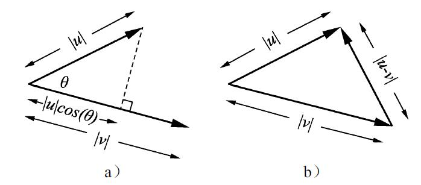
图2-3 点积的几何意义和推导
当然，点积具有交换性，所以对这个几何意义的理解也一样，u和v的点积也可以看作是v在u上的投影乘以u的长度。公式2-9的推导也很简单，最常见的一种推导如图2-3b所示，把u和v看作是三角形的两边，则第三边的长度为|u-v|，根据高中数学中的三角形余弦定理，有
而直接展开|u-v|2 ，有
公式2-10和公式2-11的最后一项应该是相等的，则推导出公式2-9。接下来把公式2-9换个形式：
也就是说两个向量夹角的cos值，就是这两个向量方向上的单位向量的点积。这是一个非常有用的结论，因为两个向量夹角的cos值是这两个向量相似性的重要度量，夹角越小说明两个向量所指的方向越相近，而公式2-12给了我们一个非常简便的计算这种相似性的方法。另外，虽然我们的示例和推导都是二维的，但是这个结论在高维度也普遍适用，并且在机器学习中是个很有用的公式，在后面的实例中还会见到。
2.1.4 矩阵乘法的几何意义（1）
1.投影角度的理解
了解了点积的几何意义，再回过头来看看矩阵乘以向量的几何意义。从公式2-3以及公式2-7点积的定义可以知道，矩阵乘以一个向量的计算，事实上就是矩阵每一行的行向量和待乘向量的点积所形成的新向量，所以有
其中ai，* 代表第i行的行向量（a1，1 ，a1，2 ，…，a1，n ），x为（x1 ，x2 ，…，xn ）T 。根据2.1.3节点积的几何意义，这个运算可以看作是x在ai 上的投影长度，乘以ai 本身的长度。如果我们把ai 看作是一个坐标轴的单位向量，那么矩阵乘法运算后的向量的每一维值对应的就是x在这个坐标轴上的投影长度。也就是说，这个变换计算的是向量x在以ai作为每个坐标轴单位向量的新坐标系下的坐标，这就是从投影角度来看待矩阵乘法的几何意义。
现在回到2.1.2节中的旋转和缩放的小例子，旋转矩阵如下：
所以变换后的坐标轴的单位向量是 和 ，如图2-4左图所示，所以在标准坐标系中的（0，1），也就是横轴上的向量，在以x’和y’为坐标轴的坐标系中的就不再是（0，1），而是如图2-4右图所示的一个落在第一象限的向量的坐标。在新坐标系中每个轴的值如前所述，就是向量在每个轴上的投影长度乘以每个轴向量的长度。
图2-4 从投影角度理解逆时针旋转π/3
2.坐标映射角度的理解
从投影角度理解矩阵乘法虽然最能体现投影的意义，但却不是最直观的。第一是因为人脑中最形象的空间的参照系都是正交的，简单来说无论二维还是三维（或是脑补的高维图像），坐标系的轴都是互相垂直。从本节讲的内容来理解，就是任何一根轴上的向量在其他轴上的投影都是0。所以如果变换矩阵的行向量互相正交，那么还可以像图2-4中一样，形象地理解为旋转，但是如果变换矩阵的行向量不是正交的，甚至哪怕行向量的长度不是1的情况下，就很难形象地想象了，例如下面的矩阵乘法：
画出（1，1）和行向量，和变换后的向量（1，5）的位置，如图2-5a所示。
图2-5 从位置映射的角度理解矩阵乘法
在图2-5a中，（1，1）在两个行向量上的投影长度仍然可以形象地理解，但是由于（2，-1）和（1，4）并不互相垂直，所以还是难以形象地理解矩阵乘法的变换。
从投影角度形象理解矩阵乘法的第二个困难是参考坐标系的变换，对于人们来说最直观的坐标系就是标准的笛卡尔坐标系，以二维为例子就是（1，0）所在为横轴，（0，1）所在为纵轴的这种坐标系。在执行矩阵乘法的线性变换时，无论是变换前的向量，还是变换后的向量，都是以笛卡尔坐标系为参考的。所以换个角度，自始至终都在笛卡尔坐标系下，首先来考虑下面的问题：横轴和纵轴的单位向量在矩阵乘法之后对应的向量分别是什么？还是以图2-5中的矩阵乘法为例子，过程如下，对于横轴单位向量（1，0），有
对于纵轴单位向量（0，1），有
结论一目了然，对于横轴，也就是第一个维度的单位向量，变换后对应的就是变换矩阵的第一列的列向量（2，1），对于纵轴，也就是第二个维度的单位向量，变换后对应的就是变换矩阵的第二列的列向量（-1，4）。这个结论可以很容易地推广到高维情况，对于第i维度的单位向量，变换后对应的就是变换矩阵中的第i列的列向量。
可以把这种变换形象地理解成一种坐标的映射，具体到图2-5a的例子，就是图2-5b中的情况，经过变换后原来的（1，0）对应的新坐标是（2，1），（0，1）对应的新坐标是（-1，4）。在这种对应关系下，考虑由（0，0），（1，0），（1，1）和（0，1）围起来的单位长度的小方框，经过变换后相当于被“拉伸”成为由（0，0），（2，1），（1，5）和（-1，4）围起来的四边形，所以在单位方框中右上角的顶点，在变换后就是被拉伸后四边形的对应顶点（1，5）。
再回过头来看看最开始讲的高中教科书里逆时针旋转π/3的例子，如图2-6所示。
图2-6 从位置映射角度理解逆时针旋转π/3
比起投影的角度更加直观了，横轴单位向量变换后对应的坐标正是逆时针旋转π/3。在这种理解下，对于任何矩阵乘法的变换，都可以很形象地理解为对变换前的区域进行旋转和沿特定方向缩放结合一起的操作，让原来区域经过形变后映射到了一个新的区域里。比如图2-7中，实现了对一个区域的切变和沿x轴翻转。
图2-7 通过矩阵乘法实现对一个区域的切变和翻转
如果希望变换后的坐标有位移，只需要在变换后的结果上加一个位移向量就可以，如图2-8所示。
图2-8 通过增加偏置项实现位移
如果把图2-8中的问题想象成一个回归问题，只通过矩阵乘法的话是无法把图2-8a中的笑脸变换为图2-8b中实线的笑脸，而添加了位移向量之后，则能够轻松拟合。这个位移向量偏置在机器学习中是一种常见的参数，通常被称为偏置（bias），而形如y=Ax+b 的变换形式也是机器学习中最常见的变换，称做仿射变换 。简单来说，仿射变换就是一个线性变换接着一个位移。
从拟合的角度看，偏置对结果的影响主要和样本的分布相关，一般来说当样本方差大、维度高的时候，则偏置的影响就会小一些。偏置的引入让变换的灵活度更大，但却不再是线性变换，并且形式上变得比y=Ax 更复杂，一个常用的办法可以把y=Ax+b 化为y=Ax 的形式，推导如图2-9所示。
如推导的第2行所示，加上位移向量的时候，可以看作位移向量是1前面的系数，这样就如图2-9中灰色方框标识的，通过把位移向量加到矩阵的最后一列，同时在待变换向量后添加一个值为1的维度，把位移向量/偏置直接包含在矩阵乘法之中。

图2-9 通过在向量末添加1的方式将偏置/位移向量包含在矩阵中
从形式上看，这样只是个公式上的小把戏，从维度的角度来看，通过增加维度，变换可以更加灵活。
2.1.5 本征向量和本征值
一提到本征向量，很多人可能会想到通过本征值的定义对等式进行变化后，对着一元二次方程求解本征值的头疼经历。本书不打算讲这么多关于本征向量和本征值的细节，我们一起来从定性的角度形象感受一下本征向量。当然，一开始还是先讲公式，下面来看看本征值和本征向量的定义，对于一个非零向量x和一个矩阵A，如果有标量λ使得：
则称λ为A的本征值，x为对应的本征向量。从定义来看，本征向量的意思就是说对经过变换后，这个向量并没有发生方向的变化（或是完全反向，如果λ为负值的话）。其实在当前更多的中文教材中，本征向量和本征值有另外一个名字叫特征向量和特征值。个人认为“特征向量/值”的名字并不是很好，因为eigen这个词有“固有，不变”的含义，例如f（x）=aeλx 就是微分算子的本征函数。
基于2.1.4节的理解，我们来直观感受一下本征向量和本征值的几何含义，为方便讨论，都以单位向量为例，考虑如下矩阵：
这个矩阵变换的本征向量分别为 和 ，对应的本征值分别是2和3。注意：为了方便讨论，这里使用大于0的本征值。首先来看看向量（1，0）和（0，1）经过变换后的情况，如图2-10所示。
如图2-10a所示，根据2.1.4节关于矩阵乘法几何含义的理解，（1，0）向量所示的黑色实线箭头变换后对应的则是第一列的向量（1，-2），而（0，1）所示的浅色实线箭头变换后对应的是第二列的向量（1，4）。显然这两个向量都发生了方向的变化。接下来看看图2-10b中对两个本征向量变换后的情况。 是黑色实线箭头， 是浅色实线箭头，变换后的两个向量和变换前的向量方向完全一致，其中黑色虚线箭头的长度是黑色实线箭头长度的2倍，浅色虚线箭头的长度是浅色实线箭头长度的3倍，这就是本征值的几何含义：变换会将对应本征向量方向上的向量进行缩放，缩放的倍数就是本征值。
图2-10 理解本征向量的几何含义
上面的例子用的矩阵是一个非对称矩阵，在机器学习中比较常见的情况是对称矩阵，尤其是正定矩阵。正定矩阵的定义如下：对于任意非零的向量x，和一个对称矩阵A，如果有
则称矩阵A是正定矩阵。从之前讲到的点积的几何意义，正定矩阵可以理解为一个向量经过正定矩阵变换后，和自身的点积大于0，说白了就是正定矩阵对应的变换不会把变换后的向量变到向量本身所垂直的平面的另一侧。具体到二维的例子就是，怎么变，变换后的向量和自身的夹角都不会大于90°。考虑如下正定矩阵：
本征向量分别是（0.85，0.53）和（-0.53，0.85），对应的本征向量为1.81和0.69，还是按照图2-10的方式画出来如图2-11a所示，深色实线箭头为单位向量，浅色虚线箭头为变换后的向量。
可以看到，两个本征向量是互相垂直的。正定矩阵的本征向量有什么特别之处呢？来看图2-11b，想象有个单位长度的向量，把这个向量绕着原点旋转，并画出变换前和变换后的轨迹，则这个向量显然画出了一个圆，而变换后的向量画出的轨迹是一个椭圆。如图2-11c所示，而这个正定矩阵对应的本征向量，则正好分别是椭圆长短轴所指的方向，本征值则是椭圆的半长轴和半短轴的长度。从几何上理解就是正定矩阵变换前后的空间里可以找到一组正交的向量，这组正交向量变换后仍是正交的，且方向不变，空间只是沿着这组正交向量的方向上发生了拉伸/收缩。如果有接触过主成分分析（Principal Component Analysis，PCA）的读者肯定已经看出来了，是二维的，没错，这就是PCA的底层思想，关于PCA的细节，后面的章节也会讲到。但是这个结论在高维度也普遍适用，并且在机器学习中是个很有用的公式，在后面的实例中还会见到。
图2-11 正定矩阵的本征向量和变换性质
2.1.6 矩阵乘法的几何意义（2）
从旋转和拉伸角度理解矩阵乘法的几何意义
了解了本征值和本征向量的几何意义，我们知道了一个正定矩阵对应的变换其实就是沿着本征向量的方向进行了缩放。那么从旋转和缩放的角度如何看待正定矩阵的变换呢？还是考虑图2-11中的例子，对于图2-11例子中的变换矩阵
很难直观想象出沿着特征向量方向（0.85，0.53）和（-0.53，0.85）进行缩放的几何过程。在2.1.2节中的公式2-6中，我们知道如果沿着横轴和纵轴方向进行缩放，那么形式就非常简单了，如x-y二维平面中，用一个变换对横轴缩放a倍，纵轴缩放b倍的矩阵如下：
该矩阵是一个对角矩阵，对应维度上的元素就是要缩放的倍数。2.1.2节中和2.1.4节中也讲了旋转矩阵和对应的几何理解，那么对于二维平面的情况，我们很自然地想到，只要用一个旋转矩阵，把原来空间中对应特征向量的方向旋转到对应x轴和y轴，然后进行简单的缩放，然后再用一个矩阵变换旋转回去，不就和直接乘以一个变换矩阵等效了吗？按照这个思路来试一下。
第一步，已知两个特征向量的方向，现在要把（0.85，0.53）“转回”x轴的位置，只需要把当前的x轴转到（0.85，0.53）沿x轴对称的位置，所以根据2.1.4节中的形象理解，第一个列向量就是（0.85，-0.53）。同样的对于（-0.53，0.85），要“转回”y轴，则需要把当前y轴转到（-0.53，0.85）沿y轴对称的位置，也就是（0.53，0.85），所以变换矩阵就是
也就是从图2-12a到图2-12b的情况。注意其实就是特征向量作为行向量的矩阵。接下来就是简单的沿着x轴和y轴方向进行缩放，其中缩放的倍数分别是两个特征向量对应的特征值，也就是进行如下的矩阵变换。
这一步对应图2-12b到图2-12c，可以看到，变换前的方格里的笑脸已经被扭曲成了斜着的四边形，接下来就是最后一步，也就是第一步的“逆旋转”，其实就是逆变换，注意到旋转矩阵都是正交矩阵，所以逆变换就是转置，也就是特征向量作为列向量的矩阵。
最后就得到了图2-12d，所以在这个过程中相当于把变换矩阵按照M=U∑UT 分解成了3个子变换矩阵：
图2-12 将一个正定矩阵的变换分解为分布的“旋转→缩放→旋转操作”
其中第一次和最后一次的变换是单纯旋转，中间的变换是单纯地沿坐标轴缩放。
2.1.7 奇异值分解
图2-12的例子讲的是正定矩阵，那么对于一般情况下的矩阵变换呢，是否这种基于本征向量和本征值，然后用单纯旋转和缩放的组合解释的几何意义也能推广呢？答案是肯定的，而且形式上和对于正定矩阵的分解很类似，也是“翻转→缩放→翻转”，这种更一般的分解就是奇异值分解（Singular Value Decomposition，SVD）。定义如下：
M=U∑UT （公式2-16）
其中∑ 是一个对角矩阵，就我们在机器学习领域内的问题而言，U和V为正交矩阵。这里不打算探讨过多的奇异值分解的细节，而是专注于几何层面的理解。下面还是以二维的例子来演示，考虑如下的矩阵及其奇异值分解。

还是按照类似图2-12所示的策略，先画出（0.38，0.92）和（-0.92，0.38）两个第一次旋转后会转到横轴和纵轴的向量，还有虚线笑脸，来一起看看一步步直到最终的变换，如图2-13所示。
图2-13 将一个一般的矩阵变换分解为分布的“旋转→缩放→旋转”操作
所以现在我们知道，任何一个矩阵乘法执行的线性变换都是可以分解为旋转→缩放→旋转，而且其实正定矩阵的奇异值分解就是U和V是同一个矩阵的情况，就像前面说的，奇异值分解可以看作是本征值和本征向量的一种推广。
2.1.8 线性可分性和维度
线性可分的定义是指，对于两类不同的n维点的集合X0 和X1 ，如果存在一个n维向量w∈Rn 和一个标量b使得：
则称X0 和X1 是线性可分的。从几何上理解，一个n维的线性组合wx+b代表的是n维空间中的一个超平面，也就是说能被一个超平面分开的两类集合，就是线性可分的。具体来看看从一维到三维的例子，如图2-14所示。
图2-14a中在一维直线上，将两类点分开的超平面就是一个点。图2-14b中，分开两类点的超平面是一条直线。图2-14c中则是一个平面分开了两个不同类别的点。对于这种二分类问题，在n维空间中，wx+b=0则是描述判别这两类不同模式的超平面。至于线性不可分，如图2-15a所示的是一个经典的表达异或（XOR）函数的线性不可分例子。
图2-14 线性可分的例子
图2-15 线性不可分的例子
在图2-15b中，一种类别的点集“包围”着另一种类别的点集。对于这种情况，无论怎么画直线，都不可能将两类点分开。
那么线性可分和前面讲的线性变换有什么联系呢？通过前面的内容，我们对矩阵所对应线性变换有了比较形象的定性理解。总结一下就是矩阵会对空间进行旋转，沿指定方向缩放的操作。线性变换再结合平移向量一起，这类变换被称为仿射变换。在同维度下，仿射变换下有些特性可能会发生变化，如长度、面积、角度和距离等，有些量则保持不变，如直线的平行性质，还有线性可分的性质。形象来理解，如果对变换前的空间标上格子，那么变换后格子的相对位置是不会发生变化的，所以以二维为例，如果变换前可以被直线二分类的空间，变换后对应的空间和分界线都是一样的，如图2-16所示。
也就是说同维度的仿射变换不改变线性可分或不可分的性质。那如果变换一下维度呢？结论对于线性不可分还是一样，只要是线性/仿射变换，线性不可分的变换后还是线性不可分，而对于线性可分的例子，则有可能会变得线性不可分。我们还是用图2-14中的例子，先考虑变换到低的维度，如图2-17所示。
图2-16 仿射变换下对空间的扭曲
图2-17 二维样本通过线性变换到一维
在图2-17中，分别把样本位置和x轴的单位向量（1，0），y轴的单位向量（0，1），和A点方向的单位向量 做矩阵乘法，也就是点积，相当于求出了样本在这些向量上的投影。可以看到，在y轴和A向量的投影仍然是线性可分的，但是在x轴上的投影上，样本则混在了一起，无法用一个点分开。下面再来看看把二维的样本通过矩阵乘法投影到高维，只需要用一个三行两列的矩阵，如图2-18所示。
图2-18 二维样本通过线性变换到三维
可以看到，经过投影到高维的矩阵乘法，二维平面在三维空间里还是分布在一个平面上，所以线性可分性还是维持。
虽然我们只看了一维到三维的情况，不过不同维度之间的线性变换的规律是类似的，高维变换到低维可能会让本来线性可分的样本变得不可分，而低维变换到高维则不会破坏线性可分性。
总体而言，在高维空间中的样本更容易被线性分开，直观想象一下，一群挤在一条线上的样本和一群同样数量分布在三维空间中的样本，哪个感觉更容易被线性分开？当然是后者了。
2.1.9 非线性变换
通过2.1.8节我们知道如果是线性不可分的样本，通过线性变换到更高维的空间后，仍然是线性不可分的。但是注意到，低维的样本变换到更高维空间后，事实上仍处在原来维度大小的一个超平面上。如图2-18所示的例子，二维空间中所有的样本在变换到三维空间后还是处在一个二维平面上，但是和二维情况不同的是，在二维空间内，无论如何都不能改变样本的分布，而在三维空间内却多出了一个维度！下面来考虑如图2-19a的情况，在垂直二维x-y平面的方向上增加第三个维度z。
图2-19 非线性变换让线性不可分样本变得线性可分
显然是线性不可分的，一个很自然的想法是通过非线性变换得到一个z轴的值，来考虑如下的非线性变换：
得到的结果在三维空间中如图2-19b所示，如果只看z轴，如图2-19c所示。可以看到，无论是只考虑非线性变换后在低维空间的效果（图2-19c）还是同时考虑到非线性变换和高维空间的效果（图2-19b），都有无数个超平面可以轻松地将样本分开。在图2-19b和图2-19c中分别标出了z=0.1所在的分界作为例子。
注意到因为图2-19a中的样本中心是在（0.5，0.5），所以在非线性变换时需要对x和y分别减去0.5。这一过程可以看作是为了能让非线性变换起到最好的效果而做的仿射变换，所以当遇到线性不可分的样本，就可以考虑先做仿射变换，然后进行非线性变换。如果效果不好呢？可以考虑更灵活的非线性变换，更高的维度甚至到无限维，SVM里的核方法就含有这一思想。或者可以考虑再来一次仿射变换+非线性变换，至此神经网络呼之欲出了，这部分内容在后面我们再详细探讨。
2.2 概率论及相关基础知识
概率论在各种应用学科中未必有线性代数那么广泛，但也是极其重要的一门学科。机器学习作为一门面向数据的学科，概率论的重要性更加凸显。在默认读者已经具备高中概率基本知识的前提下，本节将面向应用层面需要，简要回顾及介绍概率论及相关知识里和机器学习联系最紧密的部分。
2.2.1 条件概率和独立
先上定义：如果有事件A和B，在已知B事件发生的条件下，A事件发生的概率为P（A|B）。通过定义，一个直观的感受是条件概率描述了依赖性。从反面的角度来说，就是一个事件是否是独立的。
所以我们来考虑这两种情况：第一种情况， 如果A事件发生的概率确实依赖于B事件，则当需要计算A事件的概率时，就不得不考虑B事件。于是A事件和B事件同时发生的概率为P（AB）=P（A|B）P（B）。进一步的，如果用P（A|B）表示B不发生时A发生的概率，则A事件发生的概率可以表示为P（A）=P（A|B）P（B）+P（A| B
）（1-P（B）），这实际上就是在求边缘概率。另一方面，A事件和B事件同时发生的概率也可以表示用已知A事件发生时B事件的概率乘以A事件发生的概率，所以有P（AB）=P（A|B）P（B）=P（B|A）P（A），这就是著名的贝叶斯公式；第二种情况，如果A事件发生的概率和B毫无关系，则有P（A）=P（A|B）=P（A| B ）。A事件和B事件同时发生的概率则为各自发生概率的乘积P（AB）=P（A）P（B）。
说个简单例子来体会一下，假设你住在二楼，每到晚饭后，楼下经常会出现跳广场舞的大妈。在不下雨的好天气里，大妈们兴致盎然，不过考虑到体能问题，只有90%的时候会出现，也就是P（跳舞|不下雨）=0.9。而遇上雨雪天气，大妈们仍有一颗风雨无阻的心，出现在广场上的概率大概是50%，所以P（跳舞|下雨）=0.5。而你居住的城市里，下雨天出现的概率是40%，即P（下雨）=0.4，总结如表2-1所示。
表2-1 广场舞大妈出现概率一览
先来计算一下大妈们在雨中舞蹈的概率P（下雨，跳舞）=P（跳舞|下雨）P（下雨）=0.5×0.4=0.2，也就是说大妈们在雨中坚持舞蹈的景象有20%的情况会出现。再来算算总体而言，大妈们跳舞的概率，P（跳舞）=P（跳舞|下雨）P（下雨）+P（跳舞|不下雨）P（不下雨）=0.5×0.4+0.9×0.6=0.74，所以大部分时间大妈们都会跳舞的。接下来再算算，大妈们跳舞的情况下，下雨天出现的概率，P（下雨|跳舞）=P（跳舞|下雨）P（下雨）/P（跳舞）=0.5×0.4/0.74=0.27。虽然这个概率可以计算，不过注意到这并不代表着因果关系。下雨是影响是否跳舞的因素，而跳舞是不会影响是否下雨的。所以因果关系能推出条件概率，但是条件概率并不代表着因果关系。
那么条件独立的例子呢？想象一下你住的城市从不下雨，不过有雾霾。面对雾霾和对舞蹈的热爱，大妈们选择了后者，完全不受影响。所以这种情况下跳舞就是个独立事件，如果要计算大妈们在雾霾中舞蹈的概率，只需要P（霾中舞蹈）=P（跳舞）P（雾霾）。假如是在北京的话，根据2015年的统计数据，这个概率是0.9×0.49=0.44。
2.2.2 期望值、方差和协方差
考虑离散情况，期望值的定义如下：
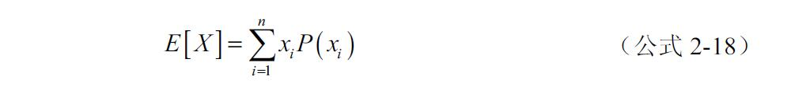
从定义来看就是变量值和其对应的概率的乘积，在整个定义域上的求和，简单说就是以概率为加权系数的求和。当然这是定义，联系实际，白话的解释就是在长时重复观测下，目标数据的平均值。例如，我们观察到跳广场舞大妈们的身高服从一个高斯分布，分布的中心是一米六二，大妈们身高的期望值就是一米六二。
那么接下来我们希望知道大妈们的身高差异是否很大，也就是一组数据的离散程度如何，这个时候可以用方差：
方差开方的话就是标准差，都可以用来度量一组结果的离散程度。通常在计算方差的时候，下面这个公式更常用一些。
方差度量的是单个变量的离散程度，如果是多维变量的话则需要协方差，协方差定义如下：
从定义上来看，协方差度量的是两个变量离散程度的大小以及相互之间的趋势的一致性。如果两个变量相应的观测每次都相对于期望值的趋势一致，比方说x大于E（X）时，相应的y也大于E（Y），而x小于E（X）时，y也小于E（Y），那么协方差的值就大于0；如果x和对应的y每次观测到的相对于期望值的趋势相反，则协方差小于0；如果X和Y并没有趋势上的关联，则协方差会接近0。所以协方差实际上包含了两个变量之间的统计相关性。
在实际问题中，我们常将协方差表示为一个矩阵，考虑一组变量X1 ，X2 ，…，Xn 其协方差矩阵定义如下：
协方差矩阵能描述方差，还有变量之间的趋势相关性，不过因为不同维度之间的协方差大小依赖于两个维度方差的大小，所以比较起来并不直接。一种更容易让人理解的方式是相关系数矩阵，定义如下：
其中，σi 和σj 分别是两个维度的标准差，也就是协方差矩阵对角元素开方的值。从相关系数矩阵的定义也可以知道，相关系数矩阵的值等效于将数据做了方差归一化之后的协方差矩阵的值。比起协方差，相关性系数对趋势是否相同的度量更加一目了然，而且使得不同量级之间的两两趋势相似度可以直接量化比较。
还是用广场舞大妈的例子来理解协方差包含的趋势信息。如我们获取了每个广场舞大妈的年龄和跳舞时长的数据，多半会发现这两个数据的协方差以及相关性系数是个负值。因为一般来说年龄越大，体力越差，跳舞时间就会越短。当然也不排除有个别大妈天赋异禀，80多岁了还能蹦跶全场，不过总体而言这个年龄和跳舞时长的相反趋势是靠谱的。
那么年龄和跳舞时长的协方差绝对值的大小呢？这个取决于参加广场舞的大妈们的年龄段。如果有限制，只允许50～60岁的大妈参加，那么也许60岁的大妈跳半小时累了，50岁的大妈则能多跳到一个小时；再考虑另一种情况，不限年龄，也许有的十几岁小姑娘也凑热闹，跳了5个小时直到半夜。90岁的老奶奶也来锻炼，5分钟就歇了。那么后者的协方差绝对值显然大于前者。
2.2.3 熵
熵在物理和信息论中都是一个重要的概念，用来衡量一个分布的无序程度。从机器学习角度，我们来看看概率和信息论中熵的定义：
配合一个简单的二值例子来理解一下，如图2-20所示。
来看图2-20a，想象箭头是一些小磁针，只能指向上和下两个方向。有些读者可能看出来了，就是Ising模型，不过这里不讨论相变，只是简单赋给小磁针一个向上的概率Pup 。
假设在没有任何外界场影响的情况下，小磁针的指向随机，也就是说向上和向下的概率相等，都是0.5，向上的概率记作Pup 。这时候磁针的指向完全随机没有规律性，是最混乱无序的情况，把Pup =0.5，Pdown =1-Pup =0.5带入公式2-24，得到熵的值为-（0.5×log2 （0.5）+0.5×log2 （0.5））=1。
图2-20 熵和有序程度
如果有一个外界的场作用在这些磁针上，场的强度刚好让磁针有0.9的概率指向上方，也就是Pup =0.9，Pdown =1-Pup =0.1，同样带入公式2-24，熵的值为-（0.9×log2 （0.9）+0.1×log2
（0.1））=0.47。此时观察到的磁针的有序程度变高了，熵变小了。
再考虑更极端的情况，如果一个很强的场加到了磁针上，导致Pup →1，这时候小磁针基本上都是向上了，有序程度最高。因为log2
（0）=-∞，所以我们计算 。
总结来说就是，无序程度越高，熵越大。我们把小磁针向上的概率从0到1对应的熵画出来，如图2-20b所示，熵在最混乱的时候，也就是Pup =Pdown =0.5时达到最大。
下面来介绍熵和平均编码长度。
信息论中，熵代表着根据信息的概率分布对信息编码所需要的最短平均编码长度。举个简单的例子来理解一下这件事情：假设有个考试作弊团伙，需要连续不断地向外传递4选1单选题的答案。直接传递ABCD的ASCII码的话，每个答案需要8个位（bit）的二进制编码，从传输的角度，这显然有些浪费。信息论最初要解决的，就是数据压缩和传输的问题，所以这个作弊团伙希望能用更少的bit编码来传输答案。很简单，答案只有4种可能性，所以二进制编码需要的长度就是取2为底的对数：
2个bit就足够进行4个答案的编码了（00，01，10，11）。在上面这个例子中，其实隐含了一种假设，就是4个答案出现概率是相等的，均为p=1/4，所以编码需要长度的计算可以理解为如下的形式：
此时已经有些像熵的定义了。回顾一下熵的定义，正是-log2 （p）的期望值，所以我们把这个思路也套用一下：
这正是熵，因为ABCD出现的概率均为p=1/4，所以上面式子算出来结果刚好是2。从这个角度，熵就是对每个可能性编码需要长度的期望值。
答案出现概率相等的例子可能并不贴近实际，有人认为“不知道选什么的时候就选C”，这个信息是可以帮助作弊团队改善编码长度的。假设A出现的概率不变仍为1/4，C出现的概率变成了1/2，B和D则分别是1/8：P（A）=1/4，P（B）=1/8，P（C）=1/2，P（D）=1/8。在这种情况下，考虑到传递答案的过程中，C出现的次数（概率）最高，所以可以为C用短一些的编码，而出现次数较少的B和D则可以考虑用长一些的编码。这样的话，平均下来，对于一定的信息总量，需要的编码总长度就会少一些。根据熵的定义的思路，对于出现概率为p的事件，考虑用长度为-log2 （p）的二进制进行编码。所以考虑如表2-2所示的编码。
表2-2 按出现概率进行最短编码
下面对照熵的公式来计算一下编码长度的期望值，也就是平均编码长度：
这个编码长度比2还小，并且不是整数。再详细点理解一下，假设作弊团伙要传递200个答案出去。为了方便说明，这200个答案中ABCD出现的次数恰好都严格和其出现概率成比例，也就是A50次，B25次，C100次，D25次。所以传递200个答案一共需要的bit数是：
50×2+25×3 +100×1 + 25×3 = 350
那么平均下来就是每个答案耗费了350/200=1.75个bit编码长度。在实际情况中，并不是每个信息都可以单纯按照上面的两个例子进行二进制编码。比如一个事件出现概率为0.3，那么我们并不知道该如何用一个-log2
（0.3）=1.74个bit的二进制编码表示。但是平均编码长度的概念是可以拓展的，代表了对随机变量的平均不确定度的度量。比如ABCD这4个答案出现概率相等时，是一种最无序最不确定的状态，谁也蒙不准下一个答案是什么。但是如果C出现概率高了，那么答案就显得不是那么没规律，考试者选C时的信心就高了一些。也可以回到小磁针的例子理解一下。当向上向下概率均为0.5时，小磁针指向的不确定度最高，如果要传递的信息至少需要1位编码，当向上概率逼近1时，如果很确定小磁针的指向，那还需要编码吗？
最后，举例只是为了举例，考试作弊属于三观不正，另外据笔者亲身经历，选择题选C的论点其实是个谎言。
2.2.4 最大似然估计（Maximum Likelihood Estimation，MLE）
在机器学习中，常常面临的一个问题通常是有了观测到的数据，需要一个模型分布来解释，这个时候最大似然估计是一个不错的方法。首先来了解一下似然函数。
直观理解就是给定了观测到的数据，和分布的形式，把分布的参数作为输入，得到在该组参数下观测到的数据x在该分布下的概率。根据似然函数的描述，有个很自然的问题就是，如果给定观测的数据和分布，如何才能找到一组参数，让分布和数据最大程度地吻合？这个问题就是最大似然估计要解决的。顾名思义，最大似然估计要解决的是下面问题。
具体来说，对于一组观测到的数据{x1 ，x2 ，…，xn }，最大似然的参数为下面的问题：

用一个简单例子来看一下，如图2-21所示，为一组观测到的数据在3组不同的正态分布参数下的可视化例子。
图2-21 最大似然估计的例子
图2-21左边是标准正态分布，均值μ=0，标准差σ=1，求出似然函数值为6.03×10-8 。可以看到显然拟合度不是很好，样本都在分布的右半边。中间是随便取μ=1，σ=3，求出似然函数值为一个更小的值2.37×10-11 ，视觉上的拟合度更差了，都集中在中心区域。右边是似然最大的一组参数μ=0.77，σ=0.58，似然函数值2.91×10-5 ，样本看上去也像是服从这个分布了。
在实际的使用中样本量巨大的情况下，乘法计算量相对很大，而且连续相乘可能会得到非常小的值。无论是从数值计算的效率还是误差的角度，都是希望避免的情况。所以比起原始的似然函数，实际应用中使用的一般都是对数似然函数（log-likelihood）。
采用取对数后，不仅将乘法化成了加法，并且求导也因为log函数的性质变得更简单。求最大似然常常需要优化算法，求导的简化让算法效率得到了提高。另外log也会让不同量级的数值更加容易比较，也会优化求最大似然的数值计算效率和稳定性。关于更多优化算法和数值计算的知识，本章后面会讲到。
2.2.5 KL散度（Kullback–Leibler divergence）
2.2.4节中讲了如何让数据和分布的吻合度最高，也就是说似然函数可以衡量数据和分布的相似度。另一种常见的衡量相似度的办法是KL散度，定义如下：
乍一看并不是一个很直观的定义，下面来展开一下：
首先将log里的项拆成减法，然后展开。注意看第二行，后面的一项恰好是熵的定义，只不过对数底不一样（2为底叫做bit，e为底叫做nat：natural unit），还有前边没有负号。因为考虑了不同的分布，我们把这一项记作H（P）。前边一项H（P，Q）也是类似熵的形式，不同的是P和log（Q（x））做乘法，这一项被称做P和Q的交叉熵（cross entropy）。
前面已经讲解过熵代表着信息量，H（P）代表着基于P分布自身的编码长度，也就是最优的编码长度。而H（P，Q）则代表着用P的分布去Q分布的信息，自然需要更多的编码长度。并且两个分布差异越大，需要的编码长度越长。所以两个值相减是大于等于0的一个值，代表冗余的编码长度，也就是两个分布差异的程度。在信息论中，KL散度的另一个名字叫做相对熵（relative entropy）。
另外根据KL散度的定义，DKL （P||Q）≠DKL（Q||P），所以KL散度并不能作为距离度量，尽管KL散度还有一个名字叫KL距离。
2.2.6 KL散度和MLE的联系
2.2.4节中讲了如何让数据和分布的吻合度最高，因为KL散度表示的是两个分布的差异，所以最小化KL散度是等效于MLE的。下面用一个不严谨的推导来说明这件事，还是从KL散度的展开出发。
假设真实分布式P，采样的分布是Q。从Q中抽样了n个样本{x1 ，x2 ，…，xn }，来求出对P（x）的估计：
其中δ（x）是狄拉克函数，当x=0时δ（x）=1，否则δ（x）=0。把这一项带入到公式2-31，得到：
因为是采样离散的值，所以 中的项只有x=x i 的时候狄拉克函数才为1，也就是说这项可以化为1，所以有如下：
可以看到第一项除了前面的系数-1/n和后边的一项H（P），其实就是对数似然函数。这样最小化KL散度就和MLE建立了联系。
2.3 维度的诅咒
维度是数据的一个非常重要的性质，在第2章讲的一些线性变换的性质，在二维情况下进行形象理解后，这些性质是可以推广到高维情况的。然而并不是所有低维度的性质和现象都可以推广到高维情况，在高维的世界里，有许多低维空间中顺理成章的事情不再成立，并且由于很难形象理解，这些高维度中的变化往往是让人感到非常头疼的。这些高维空间中的困难就被称作维度的诅咒（Curse of Dimensionality）。
维度的诅咒体现在很多方面，本书只对两个大方面进行一些简单的探讨。我们会从最基本的一些性质出发，进行简单的推导，如果对推导不感兴趣的读者，可以略过这些细节，定性理解结论就好。
2.3.1 采样和维度
数据对于机器学习算法就像燃料之于火箭，本节先来看看高维度对数据的诅咒。先考虑一个简单的情况，对于一个长度为1的线段，均匀地采样10个点，如图2-22a所示。
图2-22 采样数量随着维度的变化
而到了二维情况，以同样的间隔进行采样，则需要102 =100个，如图2-22b。对于三维情况则是103 =1000，如图2-22c。也就是说如果要保持每一维度的采样间隔，则采样点数量随着维度是指数增加，相应的计算在高维情况下是不现实的，这便是一个高维下的诅咒，我们可以定性将这个问题理解为高维度下如果要对采样空间有一个足够的认识，需要的样本是指数增加的。
要解决这个问题，也许有人要提到蒙特卡洛（Monte Carlo，MC）方法的思想，没错，蒙特卡洛是高维度下采样和求解积分的一个非常有效的手段，不过随机采样的效果其实也是受到样本维度和积分要求解的函数的复杂性影响的。当然蒙特卡洛方法和维度的关系不是我们要探讨的重点，不过可以从随机采样的方法出发，一步步来看看一些其他的高维空间下的奇妙性质。
2.3.2 高维空间中的体积
我们来考虑一个最简单的情况，在一个二维空间里的单位圆里均匀采样。最简单的想法就是先用蒙特卡洛生成和单位圆外切的正方形中的样本，然后通过判断到原点的距离保留下在圆内部的样本，如图2-23a所示。
图2-23 在二维球体（圆）和三维球体（球）中进行随机均匀采样
这种方法虽然简单，但是有一个问题是位于圆外的采样点被浪费了，根据圆面积公式和正方形面积公式可以算出这种办法的采样效率为：
其中r为半径，在图2-23例子中r=1。可以看到，虽然浪费了边角的采样点，但是采样效率还是接近80%的。接下来看看三维空间中的情况，如图2-23b，同样是先在一个立方体内进行采样，然后保留内切球内部的采样点，则采样效率是球体积除以立方体体积。
采样效率瞬间降至接近50%。接下来继续考虑更高维度情况，对于一个n维超球体，其体积为：
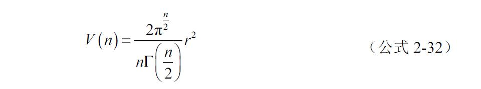
其中Г（x）为Gamma函数，对于n为正整数的情况，这个公式可以写成我们更容易理解的形式如下。
公式前半部分虽然更容易理解了，不过还是很复杂，我们重点看后半部分，对于第n维超球体而言，其体积就是n-2维超球体乘上2πr2
/n，是一种递归关系。对于单位球体而言则是2π/n，注意到当n<7的时候，这一项是大于1的，也就是说随着维度的增加，体积是增加的。而n≥7时，这一项小于1，于是随着维度的增加，单位超球体的体积是越来越小的。所以总体来说，随着维度的增加，超球体的体积是先上升后下降的（超球体的表面积也有类似趋势，有兴趣的读者可以自行调研）。如果把1维也考虑进来，则对于单位超球体，其体积随维度的趋势如图2-24所示。
如果之前从没有接触过高维空间，这个结论可以让我们从体积角度对高维空间有了一个初步的反直观的认识。可以看到，随着维度的增加，单位超球体的体积是趋于0的。然后再回到采样的问题上，知道了n维超球体的体积，只要除以n维超立方体的体积V=（2r）n 就能求出高维情况下的采样效率，公式这里就不再展开了，直接看结果，如图2-25所示。
图2-24 单位（超）球体体积随维度的变化
图2-25 单位（超）球体体积占外切立方体的体积比
可以看到，到了第10维的时候，采样效率已经很接近0了。这又是一个不那么直观的结论，这个结论也让我们明白一开始提到的在超球体内采样的方法是完全不现实的。从另一个角度来理解，这代表随着维度的增加，随机采样的点几乎都不会出现在单位超球体内，也就是说离原点的距离都大于1。我们进一步想一个问题，如果不要求保留单位超球体，而是保留半径为2、为5，或者一个更大数的情况呢？分析的方法也类似，只要看随着维度的增加，n总会超过2πr2 ，所以对于n>>2πr2 的情况，球体内出现采样点的概率总会趋向于0。直观上来理解就是所有的点在高维空间里都会远离圆心，而且随着维度越高，就离得越远，为了更好地理解这个现象，2.3.3节将从另一个更加基础的度量来考察一下。
2.3.3 高维空间中的距离
首先还是考虑n维超立方体中的均匀采样，先考虑低维情况，从二维开始，我们来计算一下均匀分布的样本到原点的欧式距离的分布。因为是均匀分布，所以样本到原点距离的累积分布函数（Cumulative Distribution Function，CDF）分布实际上可以看作是随着圆形半径的扩大，正方形内部的圆的面积占正方形面积的比，因为圆和正方形都是沿着x轴和y轴对称，所以实际计算的时候，为方便我们可以只考虑第一象限内的单位正方形内的情况，如图2-26a所示。
图2-26 求解均匀分布样本到原点距离的分布
在图2-26a的右图中，方形面积为1，我们用l（r）表示弧长在单位正方形内的部分，则CDF为：
因为F（1）就是正方形面积，所以样本到原点距离的概率密度函数（Probability Density Function，PDF）就简化为
计算分为两种情况，一种是r≤1时，如图2-26b所示，很简单就是直角对应的弧长，也就是圆周长的1/4，等于πr/2。当r>1时，如图2-26c所示，弧长为2θr，而cos（π/4-θ）=1/r，所以二维情况下，正方形内均匀采样的样本到原点距离的分布如下：
对于其他维度的情况，也可以分为在超球体内和超球体外的不同区间分别求出分布，不过比起二维情况要复杂得多，我们不再花时间在公式上，直接来看看二维～四维情况均匀采样的样本到原点距离的概率密度分布，如图2-27所示。
图2-27 二维到四维空间中均匀采样点到原点距离的概率密度分布
2.3.4 中心极限定理和高维样本距离分布的近似
从图2-27中可以看到，随着维度的增加，在超球体内部的样本到中心距离的分布是呈指数上升趋势的，也就是说在原点附近的样本数量是急速下降的，从图2-27中，x=0.25所示的虚线就能清晰地看到这个趋势。而另一方面，在四维的时候，可以看到分布在单位超球体表面附近的样本已经不是最多的，总之，从二维到四维已经能看到样本总体开始远离中心的趋势，符合上一部分中观察到的结论。那么更高维的情况呢？能否分析出一个很明确的趋势呢？这时候可以考虑借助概率论中经典的中心极限定理，首先简单介绍一下中心极限定理：
对于n个独立同分布变量X1 ，X2 ，…，Xn ，如果采样分布的期望为μ，方差为σ2 ，则当n足够大时，样本之和的抽样分布可以近似为均值为nμ，方差为nσ2 的正态分布。
根据中心极限定理，可以把均匀分布中的一个样本的每一维都看作是一个独立同分布的样本，到原点的欧式距离的平方则是每一维的值的平方之和，所以当维度足够高时，均匀分布样本到原点距离的平方也近似服从正态分布。
考虑我们的例子，每个维度都是一个-1～1的均匀分布，其方差为：
而求方差的一个公式如下：
其中E（X）为0，所以X2 的期望值也就是每一维平方的采样平均值为：
同样，根据方差公式2-21，对于X2 的方差有：
所以对于n维空间每一维在-1～1均匀采样的样本，到原点距离的平方服从：
描述的分布，而该分布的标准差线性依赖于 ，而均值则线性依赖于1/n，所以标准差和均值的比线性依赖于 ，也就是 ，也就是说随着n趋于∞，标准差和均值的比值是趋于0的。形象理解就是，在高维空间中的超立方体中的均匀采样，每个点到原点的距离都是差不多的。
，也就是说随着n趋于∞，标准差和均值的比值是趋于0的。形象理解就是，在高维空间中的超立方体中的均匀采样，每个点到原点的距离都是差不多的。
而且这个结论对于任何独立同分布的情况都是适用的，比如在实际应用中最常见的正态分布，如果每一维都是互相独立的相同的标准分布的话，则n维情况下，样本到原点的距离r服从chi分布（就是卡方分布的开方），其概率密度函数为：
其中Г（x）为Gamma函数。我们把这个分布在n=100，n=1000和n=10000的曲线画出来，如图2-28所示。
图2-28 高维度下正态分布采样点到原点距离的分布
可以看到，在高维正态分布中，采样点到原点距离都集中在很小的一个“峰”里。除了到原点的距离，在高维空间中，两点之间的距离也会有趋同的趋势，比如我们还是考虑最为常见的正态分布，因为正态分布的对称性，对于每一个维度，两个样本的差就相当于两个相同正态分布下样本的和，而对于正态分布，有如下性质。
考虑两个独立的正态分布以及从中抽取的样本X1 和X2 ：
考虑这两个样本的和Y=X1 +X2 ，有：
也就是说Y服从一个正态分布，其均方差为两个分布的均方差之和，所以两个样本之间的距离和样本到原点的距离一样，也会随着维度的增加渐渐趋同。所以在高维度空间中，距离成了一个不再那么可靠的度量。比如在二维空间中，我们会很直观地认为两个距离很近的样本会有更大概率拥有相同或相近的属性，而在高维空间中，这样的判断就很不可靠了。除了公式的推导，从定性的角度可以理解为，随着维度的增加，每一维度对距离的贡献都变得不再重要，所以在独立分布下，各个维度最后对总距离的贡献的效果都被平均掉了。另一方面也可以理解为，维度虽然增加了，不过采样数量通常不会随着维度的增加而指数增加。所以维度越高，样本在高维空间中是呈现越来越稀疏的趋势，定性来看就是距离其他样本越来越远了。
2.3.5 数据实际的维度
前面列举的高维度例子，数据的每个维度间都是互相独立，然而这并非大多数实际应用中的情况，在实际的应用中，数据的每个维度之间通常都会有相关性，而这种相关性通常会让高维的“诅咒”不再那么可怕，下面先来看一个非常简单的二维例子，如果一个协方差矩阵为
中心在原点的二维正态分布，50个采样如图2-29所示。
可以看到，样本其实分布在y=x所在的直线附近，所以如果把每个样本都投影到y=x所在的直线的话，就相当于把二维降到了一维，而降维后的样本也是可以近似描述原始的分布的。这种情况在高维空间中也是很常见的，因为样本本身的相关性，所以一个几千或者几万维的数据，很可能实际用一个几百维的数据就可以近似描述了。
上面提到的是统计相关性只是一个方面，再来看另一个简单的例子，考虑一个二维分布，是由1-（x-0.3）2 -（y-0.7）2 再加上一个很小的噪声产生，如图2-30所示。
图2-29 强相关的二维正态分布样本
图2-30 可以用一个曲面近似描述的三维样本
理所当然的，这样的样本可以用产生这些样本的曲面近似描述，也就是f（x，y）=1-（x-0.3）2 -（y-0.7）2 ，所以实际数据的维度也是不到三维的，更近一步，如果样本是三维空间中的一条直线加上小噪声产生的，那么理所当然的这些样本可以被直线近似描述，实际的维度只有1。所以虽然高维的“诅咒”听起来非常可怕，但实际上更常见的情况是，数据常常是在一个等效维度更低的子区域中。
除了这些抽象的样本，实际应用中接触到的样本更是如此，比如我们来考虑一个100×100分辨率的灰度图像，每个像素的取值为0～255，则可以看作是一个10000维的数据，每一维度的取值为0～255。如果每个像素都是服从均匀随机分布并且互相独立，则可能的图像样本一共有25610000 个，在这种情况下，我们看到的图像大多会是如图2-31a所示的情况。
图2-31 每个像素独立的图像采样和实际生活中图像的采样
而在实际生活中看到的图像，如果缩放到100×100分辨率的灰度照片的样本数量，则会远小于25610000 ，比如图2-31b中的例子。这也是一种相关性的表现，比如2-31b中海鸟身上的像素，因为毛色较纯，一个白色像素周围的像素通常来说也会是偏白色的，这就是一种正的相关性。我们视觉能识别的图像，其实背后隐含的就是一种空间上的相关性。所以相对于10000维的空间来说，能被表示成人类可识别图像的100×100分辨率灰度图，只是在这10000维空间里的一个非常小的子区域内。
2.3.6 局部泛化
2.3.5节花了不少篇幅介绍了数据和维度的关系，而真正将数据利用起来并处理解决实际问题的还是从数据到结果的映射，也就是函数。数据和函数综合在一起的效果，也就决定了一个问题的复杂度。
在机器学习中有一个常见的概念叫做局部泛化（Local Generalization），意思是对于两个输入样本x和x’，如果这两个样本之间的距离很近，则对于要学习的函数f而言，f（x）和f（x’）的值应该也相差不多。下面通过图2-32中的一维例子来形象理解一下。
图2-32 一维例子理解局部泛化
对于三个x轴的一维样本x0 ，x1 和x2 ，其中x0 和x1 很靠近，x2 离得较远，则f（x0 ）和f（x1 ）的值会比较接近，而f（x2 ）和f（x0
）/f（x1
）都差得比较多。所以这是对函数值平滑性的一个自然而然的结论。很多非参数机器学习方法背后正是基于这一思想，比如SVM，KNN和高斯过程（Gaussian Process）。
而到了高维度下，基于局部泛化的方法也会遭遇维度的“诅咒”，首先，基于局部泛化的方法有个假设是函数足够光滑，如果函数不那么光滑的情况下，需要描述函数的样本就会随着函数的复杂度而增加。比如图2-32中实线的情况，如果在x2 左边函数的极小值处取一个样本，再在x0 附近取一个样本，利用二次方或者其他的插值方式就已经能够较好的近似了。我们把问题简化一下，把左边阴影的区域看作是一个区域，右边看作是另一个区域。如果f在这两个区域的值有较大差别，则需要两个不同样本描述。那么考虑二维情况，第二个维度上也可以找到两个区域，所以空间被划分为22 =4个区域，如果函数在这4个区域上的值都有差别，比如类似XOR的函数，则至少需要4个样本来描述。依此类推，对于n维空间，如果每一维都有两个区域，且和其他维度形成的全排列都对应一个独特的值，那么则至少需要2n 个样本对函数进行近似描述，本质上讲，就是说需要描述的函数是非常不平滑的。
这种指数级上升的样本需求，显然在高维情况下是难以达到的。当然，并不是每一个函数都非常不平滑，但是另一方面，也不是数据的每一维度对函数只有两个区域的不同取值，所以总体而言，随着维度的增加，用局部泛化来描述一个函数是对样本数目有着指数增长的需求的。这就是为什么对于有些高维情况而言，用SVM训练出的模型，所有样本都是支持向量（Support Vector）。
除了函数本身复杂度的影响，数据本身在高维空间中的特性也会影响局部泛化。在2.3.5节中也讲过，随着维度的增加，样本在空间中的分布趋同和趋于稀疏，所以局部的概念就变得弱了。从一个更简单的角度来理解，可以认为在低维度下，一个样本能罩住的局部的范围相对整个样本空间来说的比例比起高维的情况大，比如图2-22中，一维情况下0.1间隔的样本只需要10个就能罩住整个单位空间了，而到了三维则需要100个，更高维度则需要更多，而且是指数变化。所以如果采样的数目不变的情况下，高维度局部泛化的能力显然就没有低维空间强了。
2.3.7 函数对实际维度的影响
2.3.6节讲过虽然数据本身维度可能很高，不过大多数实际情况下，数据是分布在一个低维度的子空间内。当数据和函数一起作用时，也有类似的情况。比如一个简单的情况，考虑在一个足够小的局部空间内，函数可以被线性近似，则有如下表达式：
在这样一个可以被线性表达式近似的局部空间内，线性系数绝对值的大小就决定了每个维度对结果贡献的多少。通常来说这些系数是不相等的，事实上很常见的情况是这些系数里只有很少的部分有较大的绝对值，其他大部分都会相比起来非常小甚至可以忽略不计。
当然这里举的例子是线性近似的情况，是一个帮助理解的最简单的例子。对于大多数图像相关的问题，类似的性质是普遍存在的，通常来说最常见情况是，对于一个输入x，有：
x’是经过变换得到的变量，如果x’本身维度就很低，或者可以在某些情况下被近似成一个低维度的向量x’s，则通常经过一个逆变换或是近似逆变换的函数得到的值是可以近似原始的输入的。
只要 对x的近似足够好，则真正处理问题的时候就不用面对原始的、可能维度很高的x，而是 ，也就说在函数作用下的 的维度才是要面临的实际维度。
在有些变换下，x’本身维度就不高，直接达到了降低维度的效果。而有的情况则需要做一定的近似得到一个等效的低维向量 ，比如下面的例子：
和之前线性近似中系数的性质类似，少数维度很大的值，其他维度的值小到可以忽略。于是就忽略掉那些很小的维度，得到下面的只有少量维度不为0的近似。
这样等效于实际处理的维度降低了，在这种形式中，大多数值都是0，少数起实际作用的非0值很稀疏地分布在一些维度中，所以这种形式就称为是一种稀疏的表达。
2.3.8 PCA——什么是主成分
既然高维度带来了如此多的灾难，一个很自然的想法就是降低维度，然后在低维度下解决问题。比如2.3.7节里提到的x’=f（x），如果x’相对于x是一个维度很低的向量，则相当于达到了降维的效果。关于降维，先举一个最简单的例子，即主成分分析（Principal Component Analysis，PCA）
考虑如下的协方差矩阵对应的高斯分布的样本，如图2-33所示。
图2-33 有相关性的二维高斯分布样本
可以看到，因为x和y轴有相关性，所以样本呈现出沿着y=x方向分布的趋势。如果用一个椭圆将样本“圈”起来，则样本的偏差最大的方向是沿着椭圆的长轴，最小的方向是沿着椭圆的短轴。所以在这个例子中，可以认为沿着长轴的方向就是数据变化剧烈程度的主要方向，稍微正式些的说法就是数据在这个方向上的投影拥有最大的方差，这个方向也就是主成分 所在的方向。而短轴所指的方向，同时也是和长轴正交的方向，就是在这个二维例子中数据变化剧烈程度最小的方向。
2.3.9 PCA——通过本征向量和本征值求主成分
那么应该如何求出这个变化剧烈程度最大的方向呢？还是考虑图2-33中所示的样本X，如果这些样本是经过一个标准差为1，两个维度相互独立的高斯分布样本XU，先经过沿每个轴的缩放（L），再乘以一个正交矩阵U旋转而得到的，如图2-34所示。
图2-34 有相关性的二维高斯分布样本
所以有：

并且U中的每个行向量就是要求的投影方向，其中对应缩放值最大的方向就是主成分所在的方向。之所以有这么别扭的一项，是为了方便接下来的推导公式：因为X的每个维度的均值都是0，所以根据协方差矩阵的计算公式，有如下：
所以协方差矩阵公式如下：

其中N是样本个数，因为XU是方差为1，且两个维度间没有相关性的样本，所以有：
另一方面L是个对角矩阵，将这两个结论带入，如下：
是不是觉得眼熟？回忆一下2.1.6节中的讲解，这正是在求本征向量。虽然这里并不是一个严格的证明，但是从直观的角度联系起了协方差矩阵的本征向量、本征值和主成分方向及大小的关系。讲到这里基本就很清晰了。所以我们来求一下图2-33所示的协方差矩阵的特征值和特征向量，得到结果是本征向量为 和 ，对应的本征值分别为1.5和0.5。可以看到本征值大的显然就对应着最主要的成分，本征值小就对应着不那么重要的成分。协方差矩阵的本征向量代表的几何含义已经很清楚了，而根据前面对协方差矩阵公式的推导，本征值就是样本投影到对应本征向量上之后的值的方差大小。所以从图2-33中所示椭圆的角度看，主成分分析中主成分大小和本征值的区别在于数据分布所在的“椭圆”的轴的长度是正比于本征值开根号（标准差），而不是本征值本身。
2.3.10 PCA——通过主成分分析降维
前面所讲例子中数据的相关性并不是很大，下面用图2-29中强相关的例子来测试一下，其协方差矩阵的本征向量仍然是 和 ，对应的本征值分别为1.99和0.01。我们把原始数据投影在两个本征向量上之后的新的数据分布画出来，如图2-35b所示。
图2-35 通过PCA二维降维到一维的例子
如图2-35所示，根据前面矩阵乘法的意义，我们既可以把这个过程按最原始的理解，认为是样本在两个正交方向上的投影，也可以理解为将样本旋转，让方差最大方向处在x轴。无论哪个理解，都可以看到数据的长短轴比是 ，数据在两个轴上的分布，无论是按照方差还是标准差，y轴的成分相对于x轴的主成分而言都非常小，所以可以只取第一个主成分，忽略掉第二个成分的贡献，这样就能利用其对应的本征向量把二维数据降到一维，也就是从图2-35b到图2-35c的过程。而这个过程相当于只保留了本征值最大向量对应的本征向量的方向，具体到计算就是让数据和这个方向的本征向量做点积。在这种近似后，可以把数据再“转”回原来的空间中，如图2-35d所示，可以看到虽然损失了一些信息，但是大体保留了样本分布的形状，是一种不错的近似。
这些例子讲的是二维的，推广到高维也非常直接，对于一个n维的数据，只要知道了数据的协方差矩阵，就可以直接对协方差矩阵求本征向量和对应的本征值，然后按照本征值排序。如果数据的维度间存在很强的相关性，则会观察到排在前面的本征值明显大于后面的本征值。这个时候就可以根据取前面的m（m<n）个本征向量作为新的m维空间的坐标轴所在，达到了从n维到m维的降维。降维操作也非常简单，就是把本征值最大m个作为一个新的矩阵，和原数据相乘就可以了。整个过程如图2-36所示。
图2-36 主成分分析降维的流程
注意到数据一上来有一步减去均值再除以标准差的操作，这个预处理通常是为了避免各个不同维度间变量量级差距太大带来的影响。减去均值在机器学习中是对数据预处理的一种基本操作，除以标准差则视需要而定。比如考虑二维情况，第一个维度方差是1000，第二个维度只有1的话，那无论这两个维度间的相关性是多少，经过PCA之后找到的主成分方向都近似第一个维度。当然是否一定要做这样的预处理视情况而定。
有的时候除了对于输入数据要做这样的处理，对于PCA降维后的数据，根据后续处理需求的不同，也会需要做类似的操作。前面已经讲了变换后的数据每一维度的标准差就是本征值开方，所以这个处理如下：
在实际应用中，有可能因为选取的主成分比较多，而数据本身在一些维度上相关性极强，排在后面的本征值会过小，导致白化后得到一个过大的值，这种情况需要在分母里再加一个很小的但是计算可以接受的项ε：
这个操作通常被称为PCA白化。
2.3.11 PCA——归一化和相关性系数
在前面内容中介绍过相关性系数r，根据定义再对照PCA降维中的预处理步骤，会发现预处理之后其实就相当于基于相关性系数矩阵执行了PCA。这样做的好处除了前面提到的降低不同维度量级影响，最根本来说是直接获取了维度间相关性的信息，比如图2-37所示的例子。
图2-37 两种强相关分布的例子
仅看协方差矩阵Σ的话，很难直观感受出相关性的大小，而直接看相关系数矩阵的话，则一目了然。这种直观性也体现在画出来的样本分布上，从图2-37b中更容易一眼看出两个维度的正相关性。
总的来说，如果正相关性越强，则值越接近1，负相关性越强，值越接近-1，没有相关性则为0。比如下面图2-38中所示的5个例子。
图2-38 不同相关性下典型的分布
2.3.12 PCA——什么样的数据适合PCA
下面举两个例子说一下，如图2-39所示。
图2-39a的样本，两个维度的相关性只有-0.04，可是一看就知道，样本之间有着非常强的相关性，是处在一条螺线上。
图2-39b的样本，两个维度的相关性高达0.95，但是如果做了PCA并降维到一维的话，显然Z字形的信息就全部丢失了。
图2-39 两种强相关分布的例子
在PCA中，我们说到相关性，指的是统计意义上的相关性，所以适用于PCA的数据也是统计意义上有强相关性的数据。像是图2-39中所示的这两种例子，非线性的降维办法如局部线性嵌入（Local Linear Embedding，LLE）等会是更有效的办法。
2.3.13 其他降维手段
在2.3.12节中也提到过，总体而言，如果一个输入经过某个变换后，得到的是低维的输出，并且这个输出能够通过逆变换近似重建输入的话，这种变换就可以认为是执行了降维。这里简单地提一下一些常见的其他降维手段，有兴趣的读者可以自行进行更多研究。
PCA是线性降维手段中非常经典的一种，为了引入非线性，人们想出了在求协方差之前先做一次非线性变换，再求协方差矩阵的办法，这个是Kernel PCA。能解决一些非线性下的降维，比如一种数据围着另一种数据的情况。
PCA是一种基于数据本身的分布进行降维的手段，算是无监督的。如果已经知道了数据的类别，一个思路是让原始数据经过投影，在低维空间上不同类别的分布中心尽可能远离，相同类别的分布方差尽可能小，这个就是线性判别分析（Linear Discriminant Analysis，LDA）。
前面也提到过，当数据是如图2-39所示时，在局部区域内有着非常强的相关性，而且样本在这个局部区域内可以被一个低维度空间很好描述，那么就可以认为数据是在一个低维的流形（manifold）上的。Isomap和前面提到的局部线性嵌入都是针对这种情况的降维办法。
神经网络也是可以执行降维的一种手段，当对于一个输入，隐藏单元小于输入维度数量时，常常能达到降维的效果，比如Tom Mitchell在其经典教材《机器学习》中举过的用神经网络重建输入的经典例子，用一个8输入、8输出，包含3个隐藏单元的单隐藏层网络，重建长度为8的one-hot编码，网络能够自动学习出8个二进制编码，这也是一种降维。事实上神经网络中，降维非常常见，从各种自编码手段，到最近开始吸引眼球且英文名字很霸气的生成式对抗网络（Generative Adversarial Networks，GAN），都可以看到用作降维。关于神经网络的内容第3章会详细讨论。
有的时候样本数量并不大，我们可以知道每两个样本之间的距离，或者是差异性的某种度量。那么一个想法就是将这种高维空间中的距离或者差异性的大小，通过变换后在低维空间中也得到保持。距离和差异性在低维空间中可以表示成欧氏距离，于是有了多维缩放（Multi-Dimensional Scaling，MDS）；也可以表示成条件概率，于是有了随机近邻嵌入（Stochastic Neighbor Embedding，SNE）可视化专用版t-SNE。一般来说这种类型的降维更多用于数据可视化。另外还有最近华人学者Jian Tang提出了LargeVis，和t-SNE相比大大减少了计算消耗，效果拔群。
2.4 卷积
卷积神经网络是深度学习中应用最广泛的一种网络，而卷积就是这种网路的基础。本节就来了解卷积的概念，性质和计算方式。
2.4.1 点积和卷积
前面已经介绍过点积是计算两个向量相似性的一种重要度量，本节详细讲一下这种性质，先来看图2-40所示。
图2-40 不同向量点积的例子
图2-40中是三组不同的向量求点积的结果；如果从信号的角度来看，图2-40a中是一个形如sin的信号和本身求点积；图2-40b中则是该信号和一个形如cos的信号求点积；而图2-40c是该信号和一个随机产生的向量求点积。可以看到图2-40a中因为两个信号相似程度最高，所以得到的值最大是5；而图2-40b形如cos的信号和sin信号点积后因为差了π/2的相位，点积为0；图2-40c中随机信号的例子和sin信号则得到了负值，从视觉上来说也是差异最高的两个信号。
所以直观上来说形状越是相似的两个向量，点积得到的值倾向越大。当然这里的例子都是没有归一化的，所以并不是完全一致的信号就会拥有最大的点积，比如图2-41所示的例子。
图2-41 点积的例子
虽然如此，通过上面的例子还是可以看出，大趋势仍然是形状越是相似的向量，得到的结果则越大，反之则越小。
2.4.2 一维卷积
有了对点积的直观理解，接下来看看卷积。先看一维情况，对于两个离散信号f和g，（离散）卷积一般定义如下：
如果看到这个公式，尤其是对n-m感到很别扭也没关系，公式并不重要，直观来理解就是，一个信号倒序之后在不同位置和另一个信号中一段同样大小的部分做了点积。以一维为例子，如图2-42所示。
图2-42 卷积的计算和卷积的3种方式
根据卷积的定义，做卷积的两个信号的顺序是没有影响的，也就是说谁是卷积核，谁是待卷积信号都一样。不过在图2-42中，我们规定每一行中上面的（1，2，1）作为卷积核，根据定义，把卷积核倒序一下，就是在不同位置做点积的信号，在这个例子中还是（1，2，1）。
由图2-42可知，整个卷积的过程就是（1，2，1）沿着一个方向（如图2-42，从左至右）“划过”待卷积的信号，同时在每一个位置上得到对应的点积的值。
在这个过程中，如果自始至终卷积核都在“信号内”，也就是两条虚线竖线内的部分，则最后得到的结果的长度会小于待卷积信号的长度。假设待卷积信号的长度是n，卷积核大小是m，则结果的长度是n-m+1。在图2-42所示的例子中，就是6-3+1=4。这种卷积的方式称为valid，结果是（8，9，4，2）。
如果卷积核的中心刚好是从待卷积信号的第一个元素“划”到最后一个元素，也就是图2-42所示中第二行到倒数第二行的情况，则需要把原来的信号扩展长度。一般来说扩展的方式是在原来信号的边缘添加0元素，这个过程通常称为零填充（zero padding）。通过零填充，卷积结果（4，8，9，4，2，1）的长度和待卷积信号长度一样，这种卷积的方式称为same。
当然，也可以通过零填充把卷积核能够划过的位置扩展到最大，也就是图2-42中从第一行到最后一行，则结果长度是n+m-1，在这个例子中就是6+3-1=8，结果是（1，4，8，9，4，2，1，0），这种方式称为full。
下面用一个一维卷积的例子来直观感受一下卷积的意义。我们把一个长度为20的sin信号，左右各接一个长度为20的随机信号作为一个新的待卷积信号，然后根据定义把一个倒序之后就是sin波形的信号作为卷积核，卷积方式是same，如图2-43所示。
图2-43 卷积结果作为待卷积信号在卷积核上的响应
图2-43中，上面部分是待卷积信号，下面是卷积结果。可以看到，在形如sin的信号划过被卷积信号的形如sin的区域时，卷积结果的值最大。从信号的角度，可以把卷积看作是卷积核作为一个滤波器，卷积的结果则是被卷积信号在这个滤波器上的响应。所以大体上越是和卷积核倒序之后相似的信号越是会获得较大的响应。
2.4.3 卷积和互相关
前面提到了形象理解卷积意义的时候，相当于要把卷积核倒序排列，然后在不同位置和相同大小的区域做点积。这个倒序总是让人感到很别扭，事实上不用倒序的操作也是有定义的，叫做互相关，定义如下：
因为形式的不同，互相关并不像卷积一样满足交换律。本书并不打算深究这两种的区别，因为和机器学习相关的实际应用中，这两种操作本质上没有区别，只是形式上不一样。另外为了方便，接下来的内容中如果出现卷积核，都默认是以互相关中的形式，除非特别说明，否则不去探讨卷积核本身的元素排列顺序。
2.4.4 二维卷积和图像响应
二维情况下的卷积和一维并没有本质上的不同，下面略过公式，直接来形象理解，如图2-44所示。
图2-44 二维卷积，图像的响应
如图2-44a所示，待卷积二维信号是个5×5的矩阵，为了执行same方式的二维卷积，在这个5×5矩阵的外围各加了长度为1的零填充称为一个7×7的矩阵。卷积核则是一个3×3的矩阵，最左边一列为1，最右边一列为-1，中间一列为0。
图2-44a中最上面的例子是卷积核在7×7矩阵上无论是横向还是纵向，每次划动一格，因为是same方式，最后生成一个和原矩阵大小相同的5×5矩阵。虽然这个例子中矩阵很小，但在应用到实际图像时，因为图像是二维的，所以卷积核需要计算点积的位置数目和图片边长像素个数成平方比。这种情况下，如果还是以每次划动一个元素的方式做卷积，通常计算量并不小，所以在二维卷积中一个常用的手段是按一定间隔“划动”卷积核，达到降采样的目的。而这个划动间隔被称为stride，所以每次移动一个元素就是stride=1。而图2-44a中最下面的例子就是每次移动两个元素的情况，也就是stride=2，最后生成一个3×3的矩阵。从维度的观点来看，这也相当于是一种降维。
在图2-43中，我们看到了一维信号经过特定的核卷积之后，生成的大致是信号中与核相似部分的响应。在二维信号中，也有类似的性质，如图2-44b所示，左边是一张砖瓦的黑白照片，有明显的横向纹理和竖向纹理。我们让图2-44a中的卷积核和这张照片做卷积，就会得到一张响应图。为了方便显示，把得到的结果取绝对值，就是图2-44b中右边的图像。可以看到，虽然原图中横向和竖向的条纹都很明显，但是经过卷积之后，只有竖向条纹对应的位置得到了明显不同于其他区域的响应。所以形如图2-44a中所示的卷积核，在这个例子中起到了纵向边缘查找的作用。
2.4.5 卷积的计算
首先进行一个约定，接下来的内容里如果提到卷积，一般都是指二维卷积。卷积的计算分为两大类，一类是将卷积操作转换为矩阵乘法，还有一类是利用卷积在频域的特性将卷积转换为频域的乘法。我们不打算探讨太多细节，大概了解一下这两类办法。
1.用矩阵乘法计算卷积
把卷积转换为矩阵乘法的思路非常直接，既然卷积在给定位置上的计算本质上是个点积，那么就可以把卷积的全过程转化成不同位置的点积计算。下面以图2-45中所示一个最简单的例子来讲一下。
图2-45 将卷积转化为矩阵乘法
如图2-45所示，当核在左上角位置时，不直接考虑是卷积核与左上角的 子矩阵做点积，而是换个思路，通过零填充把卷积核扩成一个和待卷积信号一样大的矩阵 ，这样核与待卷积信号的长度一样，也可以按照对应位置做点积，并且方便的是，用这个办法可以把卷积核在每个不同位置的情况都转化成一个和待卷积信号大小一样的矩阵，然后按照对应位置做点积。沿着这个思路，把每一个卷积核所在的位置都用零填充扩展，并且再多做一步，就是按照一行一行的顺序展开成一个一维向量，就组成了图2-45中最中央的那个4行9列的矩阵。所以很自然的，把待卷积信号也展开成一个一维向量，这样就构成了矩阵乘法中乘号右边的那一项。得到的结果是个四维的向量，这个结果“折叠”回去就得到了最终的结果。于是二维卷积就这样被转换成了矩阵乘法。
如果读者注意就会发现中间的矩阵中，卷积核展开之后，每次位置移动就相当于所有元素向右移动了一个位置。因为第二次已经移动到了矩阵的右边缘，所以下一个位置核换行了，因此可看到中间矩阵的第三行和第二行相比向右移动了两个位置。不过大体而言能看出每一行的元素向右移动位置的趋势。这种矩阵的原型是一种叫做托普利兹（Toeplitz）矩阵，也就是矩阵对角线，以及对角线平行的元素都相等的矩阵（二维卷积更正式的名字叫块循环矩阵，doubly block circulant matrix）。总而言之，就是把卷积核移动位置通过矩阵每一行元素位置的移动来实现。
在Caffe中，默认的卷积实现就是基于矩阵乘法的办法。
2.在频域计算卷积
空域的卷积在频域就对应着乘法，这是在信号领域常用的一个结论：
这里就不过多介绍细节了，大体来说就是通过FFT转换到频域做乘法，然后再变换回来就得到卷积后的结果。基于这种方法的卷积实现，在优化后的性能可以在GPU上达到很好的效率，是主流的快速计算卷积的算法，在大部分框架下都有对应实现，比如Torch、Theano和cudnn。
2.5 数学优化基础
几乎所有的机器学习中，都面临减小模型预测值和数据之间误差的问题，这类问题一般都可以被转化为求一个目标函数的最小值问题，称为优化问题。本节将介绍和深度学习相关优化问题中的最基本的概念和几种常见方法。
2.5.1 最小值和梯度下降
下面用最简单的一维情况举例子，如图2-46所示。
如图2-46所示为一个一维函数的曲线。最中间的值是这个函数的最小值（global minima）；最小值右边有一个局部最小值（local minima），又称为极小值。简单来说，对于一个给定的函数，优化问题就是寻找最小值的问题。
图2-46 函数中的不同区域
1.梯度下降法
俗话说“人往高处走，水往低处流。”很自然地我们会想到，如果把曲线的形状也看成山峰山谷，那么是否可以以一种方法模拟自然界中“水往低处流”的过程，来解决寻找最小值的问题呢？目前的答案就是梯度下降算法。
算法2-1 梯度下降法
给定目标函数f（x）和初始点x0
重复：
△xt =-▽f（xt ）
xt+ 1=xt +η△xt
停止，如果|△xt |<ε
算法描述不难理解，就是先求出所在位置的梯度，然后这个梯度取负就是x向着极小值前进的方向。x更新的时候，将梯度乘以一个系数η，控制更新时步长的大小，这个值称为学习率。对应到具体例子，来看在图2-46中最小值左边的方块。一开始方块所处的位置在全局最小值左边，并且单调下降就能够接近全局最小值。方块初始位置梯度很大，所以第一次迭代的箭头前进得比较多。第二次迭代的时候梯度小了一些，所以迭代步长也变小，不过最终接近了全局最小值。再来看右边的三角，可以看到迭代的步长也随着梯度的下降而减小。不过也正因为这个问题，三角进入右边的极小值之后，就被“陷”住了。
2.极值和鞍点
所以可以看到梯度下降的两个问题：第一，在梯度小的区域，算法的迭代速度会特别慢。从道理上讲，在梯度小的区域慢速迭代是合理的，但是在实际应用中，如果算法迭代到一个非常长但是梯度很小的区域时，就会陷入一种极其缓慢的停滞状态。比如图2-46中标出的一段梯度很小，很“平”的区域，这种区域称之为停滞区（plateau）。第二，如果存在一个梯度为0，或是梯度值小于更新的标准的区域，则算法会在此处停止迭代，而这个区域未必是全局最小值。最常见的一种情况之一是极小值，虽然不是全局最小，但是算法会在极小值停住。除了极小值，在优化中还有一种很常见的情况叫鞍点（saddle point），也就是在鞍点的梯度为0，但是又并非局部最大/小值。
极小值是一个比较容易形象理解的概念，即使在高维度无法形象想象，通过脑补也不难理解。鞍点则复杂一些，如图2-47中所示，分别是一维和二维鞍点的例子。
图2-47 一维和二维鞍点的例子
图2-47a是一维鞍点的例子，一般来说一维情况下鞍点的心态虽然会各不相同，但大都可以分为图2-47中的这两类：左边高右边低，或者左边低右边高。而到了二维的情况时，因为自由度变高了，则情况也复杂很多，比如图2-47b中左边的图，从一个方向上看去，两边高，在该方向上，鞍点所在位置是极小值。而和该方向垂直的方向则是个极大值，外型上看上去像个马鞍，这也是鞍点名字的由来。而图2-47b中右边的鞍点例子则是三个方向都较大，一个方向较小。因为自由度的增加，在二维情况下还能有很多种情况的鞍点。总体来说，随着维度的增加，由于定义和性质，极值点的情况总体还是不变，对于极小值，需要周围任意方向在一定范围内都大于极值所在。而鞍点则五花八门，各式各样。
所以随着维度的增加，如果稍微定性考虑一下极值和鞍点，对于任一个极值点，该点在任一维度上都是极值，而所有维度都是极值的概率，是相对而言最低的；相对于极值点，鞍点的条件则宽松一些，所以鞍点出现的概率会高很多；在实际算法优化的过程中，梯度很小的区域也就是停滞区，往往会让梯度下降法停滞很久，甚至当梯度小于一定值之后，停滞区事实上就和鞍点没什么区别了，这种情况发生的几率相对来说则更高。
所以总结起来，就是梯度下降法的问题基本都是由于鞍点/停滞区 和极值 导致。其中高维空间里，比起极值点来说，鞍点/停滞区是一个更普遍的让人头疼的问题。
2.5.2 冲量（Momentum）
1.惯性和冲量
对于梯度下降法存在的难题，也可以从对自然界的物理过程中找到线索。想象一下山谷中的一颗圆形小松果，如果从高处滚动到了一片很平缓的区域，它并不会因为平缓而停止滚动。如果到了一个小的坑里，也会继续滚动，但是否能滚动出小坑继续前进，取决于当前的速度。这两种情况帮助小松果继续前进的是惯性 ，在梯度下降法中，一个类似的手段也可以帮助改进，就是冲量 （momentum）。
其实从物理意义上来看momentum这个词翻译成动量也许更加合适，不过多数中文教材中都翻译成冲量，所以这里也沿用这个翻译。在理解的时候最好还是从动量/惯性的角度来看，加入冲量之后的梯度下降算法改进版如下：
算法2-2 考虑冲量的梯度下降法
给定目标函数f（x）和初始点x0 ，以及初始动量v0
重复：
△xt =-▽f（xt ）
Vt+1 =γvt +η△xt
xt+1 =xt +vt+1
停止，如果达到停止标准
在梯度下降算法的基础上，一个代表上一时刻的冲量的项V被加入进来，并且每一次迭代都会乘上一个衰减系数γ。在冲量项的影响下，算法迭代就相当于带上了“惯性”，前次迭代位置前进的方向可以影响到下一次迭代。这样当算法经过鞍点或是停滞区时，就不至于停下来做过于缓慢的迭代，而经过并不是很“深”的极值时，就可以借助冲量项带来的“惯性”冲出极值所在的“坑”。
除此以外因为算法的改变，停止算法的标准也不再是梯度小于一个阈值。停止算法的标准可以是冲量小于某个值，梯度小于某个值，或是用户给定一个次数就停止。
2.Nesterov Accelerated Gradient Descent方法（NAG）
NAG是最基本的冲量梯度下降法的一个改进，其提出者Yurii Nesterov是凸优化领域的一位神级人物。算法如下：
算法2-3 Nesterov冲量梯度下降法
给定目标函数f（x）和初始点x0 ，以及初始动量v0
重复：
△xt =-▽f（xt +γvt ）
vt+1 =γvt +η△xt
xt+1 =xt +vt+1
停止，如果达到停止标准
所以和基本的基于加入冲量的梯度下降算法2-2比起来，只是求梯度的位置不再是当前位置，而是假设如果沿着当前冲量乘以衰减系数前进一步之后所在的位置，如图2-48所示。
图2-48 基本的冲量梯度下降法和NAG示意图
直观想象一下这个过程，好比骑了一辆山地自行车，向下俯冲。一般的冲量法就像是骑到一个地方，根据当前的坡度，决定车往哪个方向拐。而NAG则是用眼睛看一下前方，判断出坡度，然后根据前方的坡度决定车往哪个方向拐。也就是说，根据预判对当前的路径进行修正，避免走冤枉路。
NAG在凸优化问题中，尤其是对平滑度较高的函数有很好的效果。不过在深度学习的优化问题中，NAG是不是更好就不一定了，还需要尝试。
这里也简单提一句凸优化（Convex Optimization），和深度学习中一般的优化问题比起来，凸优化是一个相对既简单又复杂的领域。简单来说可以认为凸优化就是要求解的函数局部最小就是全局最小。 其实是一般优化问题的一个子问题，所以需要考虑的问题就相对简单了。不过比起机器学习中接触的优化手段而言，凸优化也是一个很难的领域，在凸优化的限定下，发展出了很多复杂而严谨的方法，但这些方法被应用到深度学习中的很少，NAG算是一个。
2.5.3 牛顿法
1.牛顿-拉普森（Newton-Raphson，NR）算法
介绍优化中的牛顿法之前，先来介绍一下用于数值计算的牛顿-拉普森算法。牛顿-拉普森算法是用来寻找实值方程的近似解的一种数值算法，算法表达如下：
算法2-4 牛顿-拉普森算法
给定欲求的方程f（x）=0和初始点x0
重复：
Δx=-f（xt ）/f’（xt ）
xt+1 =xt +Δx
停止，如果|f（x）|<ε
下面从一个一维例子形象理解一下，如图2-49所示。
图2-49 牛顿-拉普森算法示意图
可以看到，牛顿法其实就是给函数在当前所在位置做一个一阶展开，然后用这个一阶近似的解作为下一次迭代的位置。
2.牛顿法
了解了牛顿-拉普森算法，再来了解一下牛顿法，还是用一个一维例子来讲解，如图2-50所示。
在图2-50中，上面一排表示f（x）的曲线，下面一排表示f（x）的导数f’（x）的曲线。例子中使用的是一个凸函数，所以找到极值就相当于找到f’（x）=0的解所在位置，因此把牛顿-拉普森算法套用过来在f’（x）上一用就可以了。下面只需要把算法2-4稍加修改：
算法2-5 牛顿法求极值（一维）
给定f（x）和初始点x0
重复：
xt+1 =xt -f’（xt ）/f”（xt ）
停止，如果|f’（x）|<ε
图2-50 一维求极值例子
我们举例子是从牛顿-拉普森算法说起，其实也可以从泰勒展开的角度看待牛顿法。考虑x+Δx处，将f（x+Δx）用泰勒展开到二阶：
这个展开相当于在x附近用二次函数对f（x）做了个近似。在这个近似中，f（x），f’（x）和f”（x）相当于系数，自变量是Δx。对于一个二次函数，通过高中知识知道，对于ax2
+bx+c，极值在对称轴x=-b/2a处。所以在公式2-42的近似中，当
时，在f（x）附近展开的二次近似函数的值f（x+Δx）就是最小值。如果f（x）本身就是个二次函数的话，那么这一次计算就已经找到了f（x）的极值。如果f（x）不是二次函数呢？那就可以在x+Δx处再做一次二次函数近似，找到新的Δx作为迭代步长，直至逼近真正的极值，这正是牛顿法。
所以从这个角度理解，牛顿法就是每次迭代的时候，在所在位置对要求解的函数做一个二次近似，然后直接用这个近似的最小值作为下一次迭代的位置。把单纯梯度看作线性近似的话，当迭代步长不大的时候，二阶的近似通常比线性近似好一些，否则就很难说。
前面举的都是一维的例子，不过思路都是一样，推广到高维的算法如下：
算法2-6 牛顿法求极值
给定f（x）和初始点x0
重复：
xt+1 =xt -▽f（xt ）/Hf（xt ）
停止，如果|▽f（x）|<ε
其中Hf（x）是二阶偏导矩阵，又称为海森（Hessian）矩阵，定义如下：
所以可以看到，虽然高维度和一维的牛顿法思路本质上没什么不同，但是海森矩阵在高维度下的计算很大，并且在分母上需要求逆，所以计算起来不现实。这是限制牛顿法在实际应用中使用的一个重要因素。
2.5.4 学习率和自适应步长
在牛顿法中还可以发现一个特点，就是迭代步长是二阶近似的解析解，所以不需要指定学习率。不需要指定学习率从某种角度来说是一个优点，因为如果学习率没有定好，会通过影响迭代步长从而影响迭代效果。下面以最基本的梯度法举例，如图2-51所示。
图2-51 学习率对梯度下降的影响
图2-51中a、b、c图分别是同一个曲线用3种不同的学习率进行梯度下降，图2-51a是学习率过大的情况，这种情况下在迭代过程中很容易因为在一个梯度较大的区域，获得了一个很长的步长导致越过了极值点，甚至进而在别处梯度大的地方再次以一个大步长迭代，最后导致不收敛。图2-51c是学习率过小的情况，虽然最后算法通常能够收敛，但是迭代的步数会非常多，尤其是在梯度接近0的区域。所以一个合适的学习率需要既可以保证收敛，又能保证效率，比如图2-51b。不同学习率对应的收敛曲线如图2-51d所示，合适的学习率通常可以帮助优化收敛到一个较优的最小值（实线）；如果学习率过低，这个收敛的过程则会很慢（短线段虚线），而过高的学习率虽然在一开始收敛迅速，后期却常常难以继续收敛（点虚线）；如果学习率再高，很可能一开始就不收敛，这个情况图2-51中就没有画出了。总之，一个合适的学习率非常重要，不过困难的地方在于，对于不同的任务，一个最合适的学习率通常是需要进行尝试的。
2.5.5 学习率衰减（Learning Rate Decay）
根据优化过程在不同阶段的特点，一个大体的思路就是前期使用较大的学习率加速收敛，后期用较小的学习率保证稳定，这就是学习率衰减背后的思想。这里用最常见的按步长衰减学习率的策略为例子，公式如下：
其中lrbase 是基础学习率，γ是一个小于1的衰减系数，stepsize是一个触发衰减的阈值，当前迭代的步数除以这个阈值向下取整作为γ的指数。下面来考虑γ=0.1，stepsize=100000，意思就是每迭代100000步，学习率就下降为之前的十分之一。
在这个方法中，步长和衰减系数都是经验值。除了这种按步长衰减的公式，还有按照指数衰减、按倒数衰减、按照多项式衰减等。形式虽然不一样，但是大同小异，都是要一个下降的函数，并且参数是经验值。如果经验不足或者经验值难以确定的时候，自适应学习率的办法才是很多人更想要的。
2.5.6 AdaGrad：每个变量有自己的节奏
在基本的梯度下降法优化中，有个一个常见问题是，要优化的变量对于目标函数的依赖是各不相同的。对于某些变量，已经优化到了极小值附近，但是有的变量仍然在梯度很大的地方，这时候一个统一的全局学习率是可能出现问题的。如果学习率太小，则梯度很大的变量会收敛很慢，如果梯度太大，已经优化差不多的变量可能会不稳定。
针对这个问题，当时在伯克利加州大学读博士的Jhon Duchi，提出了AdaGrad（Adaptive Gradient），字面上理解就是自适应学习率。AdaGrad的基本思想是对每个变量用不同的学习率，这个学习率在一开始比较大，用于快速梯度下降。随着优化过程的进行，对于已经下降很多的变量，则减缓学习率，对于还没怎么下降的变量，则保持一个较大的学习率
用（xt ）i 表示第i个变量xi在第t次迭代时的值，（▽f（xt ））i 表示函数在t次迭代时，对第i个变量xi 的梯度值，则算法更新梯度的公式如下：
其实就是每个变量都随着学习的进行，根据历史学习率累积总量来决定当前学习率减小的程度。根据AdaGrad的特性，对于下面这种函数会比一般的梯度下降有很大的优势，如图2-52中等高线所示的情况。
图2-52中，中间区域上下方向梯度变化明显，但是左右方向梯度非常平缓。如果是一般的梯度下降，学习率过大的话则会沿着图2-52中的上下方向震荡，如果学习率过小则会像图2-52中的虚线箭头所示，到达B位置后，以一个极其缓慢的速度向A点前进。
在机器学习的应用中，AdaGrad非常适合样本稀疏的问题，因为稀疏的样本下，每次梯度下降的方向，以及涉及的变量都可能有很大的差异。AdaGrad的缺点是虽然不同变量有了各自的学习率，但是初始的全局学习率还是需要手工指定。如果全局学习率过大，优化同样不稳定；而如果全局学习率过小，因为AdaGrad的特性，随着优化的进行，学习率会越来越小，很可能还没有到极值就停滞不前了。
图2-52 在不同变量（方向）上梯度差距很大的一个示意
2.5.7 AdaDelta的进一步改进
AdaGrad中存在的问题在AdaDelta中得到了一个解决方案。AdaDelta是第1章中提到过的Mathew Zeiler在Google实习时独立完成的工作。和AdaGrad比起来AdaDelta的主要改进有两点。第一点 是将累计梯度信息从全部历史梯度变为当前时间向前的一个窗口期内的累积，具体来说在计算历史梯度信息的时候采用的是下面的公式：
相当于对历史梯度信息的累计乘上一个衰减系数ρ，然后用（1-ρ）作为当前梯度平方的加权系数相加，这样就隐式实现了梯度平方在一定时间窗口内的累积。这种历史梯度信息用类似AdaGrad的方法开方后作为分母项，公式如下：
其中ε是一个非常小的项防止分母为0。忽略这一项，则分母就是均方根（Root Mean Square，RMS）。用（Δxt ）i 表示每次更新的步长，则公式如下：
虽然梯度累积后学习率一直下降的问题解决了，可是手动设置学习率η仍然是个问题。AdaDelta中用第二个改进解决这个问题。第二个改进主要是受到牛顿法和LeCun关于牛顿法近似工作的启发。LeCun在1988年的时候提出用Hessian矩阵的对角线近似Hessian矩阵，进而更新步长的时候可以用如下公式：
这个步长被称为伪牛顿步长（pseudo-Newton step），其中ε还是一个用来防止分母为0的项。根据这个关系Matthew在论文中用了一个看上去有些多余的推导：

大意就是，步长可以用梯度除以用于近似Hessian的二阶导数来表示。所以换一下等式的顺序，也就是箭头右边的形式，等号左边的项是用来近似Hessian的逆。这一项可以表示成等号右边的形式，步长除以导数： 。把步长除以导数的这一项和公式2-48中梯度前的系数 进行类比，发现分母上的 RMS[ g] t 和
的量纲是一样的，并且定性来说具有相同的物理意义（都是导数），所以作为分子的η和Δx也是应该有相同的量纲及物理意义。其实说了这么多，就是要说明下面的式子：
简单来说，就是对应的物理量要有相同的量纲。Matthew远论文里还有不少推导用于说明这件事，并指出了一般的梯度法和AdaGrad都没有正确对应的量纲，这些细节这里就略过了。
总之，按照这个道理，以及对函数平滑性的假设，把Δx的历史累积也和gt 一样如法炮制，只不过用的是Δxt-1 ，就得到了AdaDelta的更新公式：
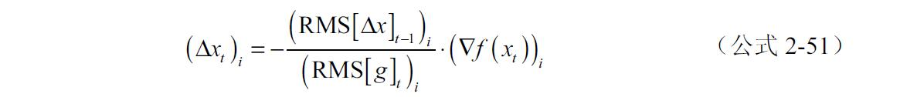
AdaDelta除了梯度和梯度历史信息，只额外引入了一个保存Δx历史信息的量，就完成了对Hessian对角近似的某种程度上的近似。另外，AdaDelta的一个巨大的优点就是不用手动指定学习率。
2.5.8 其他自适应算法
AdaGrad和AdaDelta算是最有代表性的两种自适应算法，在之后比较流行的还有和AdaDelta很像的RMSProp、Adam、Adamax等算法，在一定程度上来说都能看到这两种算法的影子，在这里就不详细介绍了。
在深度学习的实际应用中，因为问题的高维度和高复杂性的特点，具体哪种优化算法更适合还需要具体的尝试。一般情况下带冲量的梯度下降法还是最主流的，不过对于收敛不好的情况，自适应算法常常能收到奇效。不过一种常见的情况是，在优化的后期，自适应算法尤其是AdaDelta和RMSProp常常会反复“震荡”，效果不如带冲量的梯度下降法。
2.5.9 损失函数
优化问题只是一个单纯的函数值最小化问题，和机器学习关联起来，靠的是如何定义要优化的函数，这个函数从优化的角度来讲叫做目标函数（objective function），机器学习中一般把这个函数叫做损失函数（loss function），或是代价函数（cost function），本书中我们采用损失函数的名字。
因为中文翻译的关系，损失函数显得不是那么顾名思义。损失函数度量的是模型预测的值和真实值之间的误差。举个简单例子，如图2-53所示。
图2-53 数据和线性拟合的误差
图2-53中是一个典型的线性回归问题，包含一组数据点和函数f（x）=ax+b的曲线。也许看到这里，很多人一下就想到了最小二乘法，我们不妨就用最小二乘法的优化判据作为损失函数：
L（a，b）就是损失函数，其中（xi ，yi
）为图2-53中的数据点，n为数据的个数，在图2-53所示的例子中，n=9。对于损失函数而言，用于拟合数据的公式ax+b中的参数a、b，也就是斜率和截距，就成了损失函数中的变量。我们画出损失函数在一定区间上的值，如图2-53中右上的图。可以看到这样就已经转化成了一个典型的优化问题了，并且这个情况中还是个凸优化。不过可以看到如右上图的曲面所示，直接用平方和作为损失函数，很难一眼看出哪里是最低点。因为中间一段梯度很小的区域，不仅是肉眼，即使梯度法也会在这片区域缓慢下降。面对这种情况，可以考虑取log，让不同量级之间的值更容易比较，特别是增加小值区域的敏感度，将损失函数更新如下：
结果就是图2-53所示中右下图的曲面。这样肉眼非常容易就能分辨出最低点所在，算法收敛也容易得多。可以看到，损失函数在机器学习问题中的重要性。损失函数不仅定义了问题，其设计还直接决定了优化算法收敛的性能，甚至是否能够成功收敛。
2.5.10 分类问题和负对数似然
机器学习中除了像上部分中对实数值做回归，还有一种典型问题是分类问题。以最简单的二分类为例，考虑一组数据{（x1 ，y1 ），（x2 ，y2 ），…，（xn ，yn
）}，其中y∈{0，1}，也就是将x分为两类。我们尝试用一个模型f（x）来学习分类的规律，给定x，经过f（x）计算结果也是0或1。很自然地会想到用比较结果是否相等来作为损失函数：
其中I是判断两个量是否相等的函数，如果相等则为0，否则为1：
虽然这种损失函数非常直接简单，但是不连续且高维度不可计算。现在换个思路，考虑不让函数直接输出0或者1，而是让一个处处可导容易计算的函数最后的输出是结果为0或者1的概率：P（Y|θ），其中θ是参数。最后只需要找到对应概率最大的分类结果，就是模型预测的结果：
在这样的框架下，机器学习要解决的问题就是找到一组参数 ，使得对给定标注数据（xi ，yi
），模型在正确标签上预测的概率都达到最大，这正是2.2.4节中讲到过的最大似然估计。所以可以把计算最大似然估计的思路用到这里，采用对数似然函数：
在机器学习中，都习惯用优化算法求最小值，所以通常用的是负对数似然（Negative Log-Likelihood，NLL）：
因为概率总是小等于1，所以NLL的值总是大于0，更加直观。这是在分类问题中常用的一种损失函数，并且能轻易拓展到多分类问题。通常这种替代直接比较输出的损失函数又称做代理函数（Surrogate Loss Function）。
2.5.11 逻辑回归
逻辑回归并没有什么逻辑，英文是logistic regression。逻辑回归是统计中的一种经典方法，发明者是在统计学教材里经常出现的David Cox。这里之所以放到数学优化部分讲是因为在机器学习领域，逻辑回归和分类问题的联系十分紧密。
还是考虑简单二分类问题，如图2-54所示。
图2-54 平面二分类的例子
图2-54中是两种分布在平面上的样本，划定出一条线性分类边界（虚线），认为在分类边界左下方的都是△，右上方的都是○。上个部分已经讲了，直接对标签进行回归，不如去计算样本属于某个标签的概率。通过肉眼观察，我们发现规律，离分类边界的距离越远的，则属于该半边平面类别的可能性越高。这对于一个线性分类边界已经是一个足够好的判定标准。所以可以考虑计算出每个点到分类边界的距离。并且可以定义这个距离的方向性，我们定义在分类边界左下方的点，这个距离是负值，否则这个距离就是正值。这等效于将所有点的坐标都投影到一个垂直于分类边界，指向右上方的方向上（x）。
所以接下来要做的就是把样本到分类边界的距离转化为概率。这时候logistic函数可以登场了。logistic函数定义如下：

wx+b是个仿射变换，无论x是任何维度，最后经过这个仿射变换都会化为一个标量。具体到例子中，x是个一维的变量。所以我们更关心仿射变换后的值对应的概率，令t=wx+b，把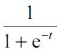 的曲线画在图2-55中。
图2-55 标准logistic函数
这种形式又叫做标准logistic函数。如图2-55所示，标准logistic函数是个关于（0，0.5）旋转对称的函数，值域是（0，1）。t的值越小于0的时候，函数值小于0.5，否则大于0.5。我们可以把这个函数的输出看做是概率，还是考虑△和○分类的例子。比如t=x，也就是直接拿到分类边界的距离作为计算概率的依据。显然，x算出来大于0的时候，分类结果为○，并且x值越大，分类为△的概率越接近1；反之若x小于0，则分类结果为△，x离远点越远，分类为○的概率也越低，因为P（△）=1-P（○），所以分类为△的概率越高。这正好是前面的直观判断。接下来找到一组合适参数的过程就很显然了，似然最大化，前面已经讲过了。
所以简单来说，逻辑回归把任何输入通过变换化成0～1之间的数值，用来代表概率。也就是说任何一个能合理将值化为对应二分类概率的函数理论上都是可行的。其中logistic函数除了合理以外，其形式还易于NLL及求导计算，所以在分类问题中被大肆使用。
2.5.12 Softmax：将输出转换为概率
对于一个logistic函数，如果令z=（wx+b）/2，则可以化为如下形式：
根据定义，z是一个关于x的仿射变换，其实就代表着x为某一类别的概率的一种原始度量。这时候再来看公式2-53的形式，logistic函数做的事情，其实就是把一个样本属于两个类的可能性的这种原始度量通过ez 做指数运算，求和作为分母。然后对于某一类，直接用ez 转化的值作为分子，这个比值作为最后样本属于某一类的概率。所以就是利用ez可以把任何实数转换成一个大于0的数的特性，做了归一化而已。
还是考虑图2-54所示的例子，假设w=1，b=0。如果一个样本投影在x轴上的值为2，则z=1，所以该样本属于○的概率大一些。因为图2-54所示二分类例子的对称性，从△的角度来看，z=-1，最后计算概率的时候就是e1
/（e1 +e-1 ）=0.88。
上面说的这种思路，可以轻易地拓展到多分类问题，就是softmax。对于一个n分类问题，给定输入x属于第i类（yi ）的一种原始度量h（x，yi
），softmax计算的属于某一类的概率为：
2.5.13 链式求导法则
前面几节讲了那么多，每节都提到了一个重要的名词即梯度。本节讲一下梯度计算中，和深度学习紧密关联的链式求导法则。
对于一个函数y=f（g（x）），令u=g（x），则有：
这就是链式求导法则。其实就是对复合函数求导的一种性质，而这种性质常常能简化梯度的计算。公式2-55给的是一维情况下的链式求导法则，同样的原理也可以拓展到多变量多个复合函数甚至多输出的情况。比如考虑x=（x1 ，x2 ，…，xn ），y=（y1 ，y2 ，…，ym ）=f（g1 （x），g2 （x），…，gk （x）），则链式法则如下：
J代表雅可比矩阵（Jacobian matrix），详细如下：
这个公式看起来有些密集，不过理解起来并不难。既然是矩阵乘法，所以等式左边的每一个元素运算规则其实没有区别。只要理解了其中一个，其他的都是同样套路。先来看公式中用虚线方框标出的部分，也就是计算等式左边第一个元素，其实就是对偏微分求点积：
和一维情况下单个输出的公式相比，只是变成了求和的形式。形象来理解就是x1 通过多条路径把对y1 的一阶影响传递到y1 。因为是一阶函数，可以把梯度理解为一种表示输出对输入变化敏感度大小的系数，所以很自然地把结果加一块就是总效果了。
下面还是来一步步执行一个非常简单的例子加深理解。为简化书写，令g1 （x1 ，x2 ）简写为g1 ，g2 同样，考虑下面的函数：
相当于最终输出维度为1，输入维度是2，中间的复合函数两个。根据公式2-56，Jy 和Jf 化简为只有第一行，如下：
根据函数的定义，需要求导的6个导数如下：
所以有：
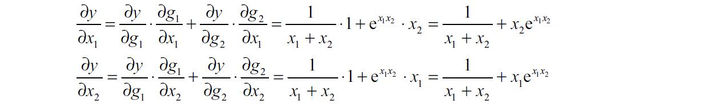
如果把这个过程用图的形式来表示，则如图2-56所示。
图2-56 多元链式求导法则例子的示意图
看到图2-56也许读者会觉得眼熟。没错，第1章出现过一个结构类似的示意图，表示的是一个人工神经网络。
第3章 神经网络和机器学习基础
第1章已经从历史和其他角度讲述了神经网络的前世今生。本章将深入细节，一探究竟。本章将从神经网络讲起，然后引出一些机器学习的基础概念并进行简单讨论。
3.1 感知机
深度学习始于神经网络，神经网络始于感知机。
3.1.1 基本概念
在第1章里已经提到过感知机。本节就详细聊聊这个在人工神经网络中最基础的结构。感知机由Frank Rosenblatt在1957年第一次提出，结构如图3-1所示。

图3-1 感知机示意图
这种结构以一个向量作为输入，计算输入每一维度的值的线性组合，也就是第2章讲过的线性变换，然后和一个阈值进行比对，高于阈值则输出1，否则输入-1。
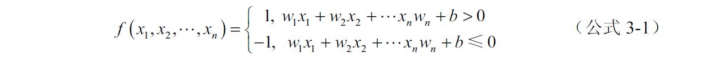
简单来说就是加权求和，然后再和b进行比大小。
3.1.2 感知机和线性二分类
从结构上讲，感知机和神经元的相似之处在于：第一，多个输入到一个节点；第二，神经元总输入电位超过阈值电位后，将释放一个输出，这对应感知机以0为阈值对应1和-1的不同输出。功能上就大不一样了，感知机这样一种简单的结构实质能解决的是在多维空间中的线性分类问题，如图3-2所示的一个二维平面上的例子。
把这个平面上的不同样本二分类的一个感知机，分界线对应如图3-3中所示的虚线。
图3-2 二维平面上线性可分样本
图3-3 二维平面上线性可分样本和一个线性分界
图3-3中，○表示f（x1 ，x2 ）>0的样本，也就是标签结果为1的，对应分类虚线上方的部分；△表示f（x1 ，x2
）≤0的样本，结果标签为-1，对应分类虚线下方的部分。
3.1.3 激活函数
那么Frank Rosenblatt的感知机和神经网络有什么联系呢？感知机事实上就是人工神经网络的最小单元，这个结构里有两个最基本的成分：计算输入向量的一个线性变换； 对线性组合的结果进行阈值判断，实际上就是非线性变换。 或者更简单来说，把阈值和线性变换放一起，则是第2章提到的仿射变换，所以感知机本质上就是一个仿射变换接一个非线性变换。 把公式3-2简化一下，用x来表示向量（x1 ，x2 ，…，xn
），用w来表示对应系数的向量，sgn表示大于0输出1，小等于0则输出-1的函数，得到公式3-3如下：
其中w·x表示两者的点积。更一般地，按照前面所说，把这个公式里的仿射变换+非线性变换的特点提取出来，可以表示为公式3-4。
g（·）表示一个非线性变换。在机器学习领域，这种非线性变换通常被称为激活函数。激活函数可以是sgn函数，也可以是其他函数，比如可以是连续且光滑的tanh函数（如图3-4a所示），或是sigmoid函数（如图3-4b所示），其实就是第2章提到过的logistic函数在一维输入下的特例。这些正是经典全链接神经网络的常见基本单元。

图3-4 tanh函数和sigmoid函数
另外也可以是ReLU（Rectified Linear Unit）激活函数，这是2012年之后深度学习中被用到最多的一个经典神经元结构（如图3-5所示）。
图3-5 ReLU（Rectified Linear Unit）函数
感知机是个如此简单的模型，说白了就是乘积→累加运算→判断大小，非常适合计算机模拟，这也是为什么这个很早就提出来的简单结构如今会成为神经网络基础的重要原因。
3.2 神经网络基础
本节将从直观形象的角度，用最简单的例子一步步了解一个神经网络是如何完成基本分类的任务。
3.2.1 从感知机到神经网络
了解了感知机，就可以开始探索最基本的神经网络了。先来看一个如图3-6所示的最经典的两层神经网络结构。
图3-6 一个简单的神经网络的例子
最原始的输入层（x1，x2）和3个不同感知机相连，这3个感知机有3个输出，然后再和一个感知机相连，最终输出y。在这样一个经典的网络结构中，输入后面的一层叫隐藏层，因为通常在训练和使用的时候，其输出对使用者来说是不可见的，然后是输出层。很容易发现这样的网络结构有以下两个特点。
分层结构， 如果把输入也当成一层，则每一层有一定数量的输出作为下一层的输入。从这个角度来说，可以把神经网络看作是对一个向量进行分步变换，每一层的输入向量经过这一层感知机变换之后，相当于变成了一个新的向量，并且新向量的维度等于这一层感知机单元的数量，这样一层层变换直到形成最后的输出。如图3-6所示的网络结构，输入层的向量传递到隐藏层之后，变成了一个三维向量，而这个三维向量到达输出层之后，最终变成一维。如果从函数的角度来看，整个神经网络的作用就是一个向量x，经过了变换之后成了一个向量y而已。
每一层的输出都和下一层所有的感知机输入相连，也就是通常所说的全连接 （Fully Connected）。所以在这种经典的结构中，对于一个n层（包含输入层和输出层）的网络，权值的数目和神经元数目的关系如下：
其中W代表权值的总数，Pi 代表第i层的感知机数量。可以看到，当网络层数不多的时候，随着感知机单元数量的增加，权值数目是平方增加的趋势。最近几年ImageNet竞赛的网络有去掉全连接层的趋势，也是因为全连接层的单元数未必很多但是参数却很多，常常会占据一个模型中的大部分参数。
3.2.2 最简单的神经网络二分类例子
了解了神经网络的两个特点，那么这样一种分层的、全连接的结构和单个的感知机分类比起来强大在哪里呢？先来看图3-7中所示的一个平面上二分类的小例子。
这里面产生的样本是由曲线
作为分界线，以上的样本标签为1，以下的样本标为0。因为产生样本的分界线是弯曲的，所以对只能做线性二分类的单个感知机来说，显然无能为力。那么轮到神经网络出场了，我们建立一个非常简单的用于二分类的两层的神经网络，结构如图3-8所示。
图3-7 二维平面上线性不可分样本的例子
图3-8 用于二分类图3-7所示样本的神经网络结构
其中隐藏层的激活函数采用Sigmoid，输出激活函数采用的是第2章介绍过的Softmax函数。经过训练后，这样一个网络能得到如图3-9所示的结果。
图3-9中，虚线以上部分（浅色）是训练好的模型分类为1的区域，虚线以下的部分（深色）是模型分类为0的区域。可以看到，这么一个简单的神经网络成功找到了一个类似折线的二分类边界，将数据分开了。再仔细看一下图3-9还会发现，这个边界像是由两条不同方向的直线“拼”起来的，只是交界部分的直线不那么直了。在远离交界的部分还是能清晰看出直线边界的，如图3-9中的两条虚线所示，后面会讲到这是为什么。
下面来详细分析一下这个网络到底做了什么。输入层就不用介绍了。从隐藏层看起，也就是两个用Sigmoid作为激活函数的感知机，在这样一个神经网络中，隐藏层是可以分类弯曲边界的关键，这在第2章已经提到过，所以如果是线性不可分的样本，经过仿射变换后，仍然是不可分的。这个时候，就要依靠非线性变换了，也就是Sigmoid激活函数起的作用。我们把隐藏层第一个感知机h1的输出作为新的横轴，第二个感知机h2的输出作为新的纵轴输出，把每一个样本在经过非线性变换后，在新的坐标平面的位置画出来。同时也把图3-9中区分空间区域的网格线画出来，如图3-10所示。
图3-9 样本和二分类模型的分类边界
图3-10 输入样本经过隐藏层非线性变换后在新的二维空间中的坐标
可以看到，在新的坐标平面内原来的平面被严重扭曲，而扭曲之后的空间里样本是线性可分的。注意到两个区域的分界线在这个平面内就是一条直线，这就是隐藏层的重要作用。事实上，如果连接一个sgn作为激活函数的感知机，这个分类问题就解决了。但是就如在第2章提到的，在分类问题中，直接度量类别标签不如转换成一个分类概率。所以这里采用的是两个单独的输出接Softmax作为整层的“激活函数”，把输出层经过Softmax变换后的两个输出值也按照上面办法画出二维坐标，如图3-11所示。
图3-11 Softmax层输出的结果表示在二维平面中
所以Softmax层的作用也一目了然。先通过一次变换让样本对应的值都大于0，方便归一化。并且因为ex 的特性，让样本的区分度尽量高，这一点和SVM异曲同工。然后归一化让两个输出的概率和为1，最后输出的标签就是按照概率比大小了。
现在回过头来再稍微深入分析一下，为什么隐藏层的非线性变换能够让一个弯曲边界的样本分开并且成为线性可分的呢？来做这么一件事：以隐藏层的每个感知机的输出值作为z轴，以原始的x1
-x2 平面作为另外两个轴，在三维空间中画出样本的分部，可以得到如图3-12所示的两个感知机输出样本在x1 -x2 -z的三维空间中的分布。

图3-12 将隐藏层的输出作为z轴画出的样本在三维空间中的分布
其中图3-12的左图对应h1的输出，右图对应h2的输出。两个三维图分别代表把两个感知机的输出值作为z轴，在三维空间中的样本坐标分布。可以看到，第一个隐藏单元h1的值相当于把x1
-x2 平面上位于左上角半边的样本“抬升”了，而第二个隐藏单元h2的值“抬升”了位于右上半边部分的样本。到这里其实就很清楚了，接下来只需要一个简单的线性相加就可以让中间部分标签为0的样本“抬升”到最高的区域。这样一个简单的截面就可以将两种样本划分开了。这也是为什么在图3-9中可以看到分界线像是两条直线拼起来的一个折线段，因为边界就是两个感知机的分类直线组合起来的。在图3-9中，虚线所在的部分分别对应了两个隐藏单元分类的线性边界。用更加简单的示意图表示就是类似图3-13所示的情况。
图3-13 感知机线性组合后形成非线性边界的示意图
单个感知机的非线性变换只能对+/-样本划分出一条线性边界。可是线性组合后就可以给++和非++的样本划分出一个折线的边界。这种对区域的划分和表示其实是神经网络中的一个重要性质，叫做分布式表征（distributed representation），第4章会详细讲解。总之，空间被进一步划分了，当然最后具体的边界则由数学优化来确定。事实上第三层输出层做的就是类似的事情，我们把Softmax输出的值也用类似的方式分别作为z轴画在图3-14所示的三维空间中。
图3-14 将Softmax输出作为z轴，样本在三维空间中的分布
一目了然，从视觉上确实是区分度更高了，并且每个点在z轴所在位置相当于属于当前类别的概率。这个小例子分别基于MXNet和Caffe的具体实现将在第7章中讲解。
3.2.3 隐层神经元数量的作用
前面的例子帮助我们理解了非线性变换的作用。那么神经元数量又起什么作用呢？下面再来看一个比三角函数分界稍微复杂一点的二分类例子，如图3-15所示。
显然对于这种圆形的分界线，两个线性分界线的组合就力所不及了。我们尝试增加一个隐藏层的单元，然后训练，结果如图3-16所示。
图3-15 两个隐层单元网络不可分的样本在二维平面的分布
图3-16 用三个隐层单元后得到的分类结果
通过标出的代表每个隐藏单元的线性分类边界的虚线，勉强还是能够看出是三条直线的分界线拼成的。和前面例子一样，把隐藏层的分布也画出来，如图3-17所示。能发现在隐藏层变换后的三维空间里样本已经是线性可分的了，和上一个例子的区别只是维度发生了变化。
接下来再看看图3-18中Softmax层中的一个输出在输入样本的二维平面上的响应。
图3-17 图3-16的样本在隐层对应的三维空间中的分布
图3-18 将Softmax输出作为z轴，样本在三维空间中的分布
同样是通过非线性变换把一部分样本“抬升”，和其他样本形成了区分。所以总结一下，从分类边界的角度来看，神经元数目对应着用于“拼接”出分类边界的线段数量，神经元越多，就能“拼接”出越复杂的边界。而从维度的角度来看，神经元数目对应着非线性变换后空间的维度，一般来说维度越高，变换后的样本越容易被线性分开。
3.2.4 更加复杂的样本和更复杂的神经网络
接着3.2.3节所讲，更进一步，如果样本分布是如图3-19所示。
或者再复杂一些，如图3-20所示。
图3-19 二维平面上一个类似螺旋状的样本分布
图3-20 二维平面上更复杂的样本分布
甚至是高维空间里的复杂分布呢？道理也一样，增加隐藏层单元数或是层数把样本投射到更容易线性分类的更高维度空间。或者从另一个角度可以理解为对空间进行足够精细的非线性扭曲，然后进行线性分类。
所以定性来看，随着感知机单元数量的增加，神经网络的分类和拟合能力是越来越强的。而这种能力本质上来源于两个方面：第一 是非线性变换，作用是让空间扭曲，样本可以被线性划分或者更容易在变换后的空间里线性组合得到目标值；第二 是维度，维度的增加极大地增强了样本的线性可分的程度，这一点其实和SVM是很像。另一方面维度的增加也可以让简单的非线性变换组合出复杂的非线性变换，来适应样本的分布，比如3.2.3节中的例子。
第1章提到过，一个简简单单的两层神经网络（线性输入-Sigmoid隐层-线性输出），只要给够隐藏层神经元数目，是可以以任意精度逼近任意有界连续函数的。证明这里就不讲了。不过通过前面的分析和第2章关于非线性变换的内容定性来理解，其实就是通过更多的单元，一点一点拼出一个更加细腻的抬升/下降的边界，然后通过改变参数控制非线性的程度，也就是抬升/下降的程度。只要神经元的数量足够多，对于任意的有界连续函数，通过神经元的组合，都可以一点一点地拼凑出想要的形状。
TIPS1： TensorFlow Playground，TensorFlow的游乐场
本节举的例子是最简单的非线性例子。读者自己也可以试试各种分布的样本在神经网络中的分类边界是如何构成的。TensorFlow已经提供了这样的网址，供大家自己动手搭建和训练一个神经网络用于分类一些二维空间中的样本，同时还能查看训练过程中每层空间的变化。网址为http://playground.tensorflow.org/ 。
TIPS2： 神经网络和神经
还是要提一句的是，虽然神经网络的名字里有“神经”两个字，然而通过3.2节的讨论可以知道，如果感知机对神经元的模仿还有那么点意思的话，人工神经网络和真正的神经网络就没有什么关系了，所以有不少研究者更愿意称神经网络为多层感知机（Multi-Layer Perceptron，MLP）。
3.3 后向传播算法
第1章曾经提到过，后向传播算法是David Rumelhart于1986年提出后得到了广泛应用。不过事实上1974年的时候，Harvard的博士生Paul Werbos在他的博士毕业论文中已经提出过后向传播算法，可惜并没有造成影响。本节一起了解一下这个随着神经网络的崛起而名声大噪的方法。
3.3.1 求神经网络参数的梯度
通过3.1和3.2两节的讲解，对于一个典型的全连接神经网络，其实就是一层层的仿射变换+非线性变换的叠加，所以可以将其看作是一个复合函数。比如一个n层的网络，可以将其表示成如下的复合函数：
其中f（x）=wx+b表示仿射变换，g表示激活函数，下标表示层数。注意如果这里x表示的是个向量的话，w是个矩阵，b是个向量。第2章已经讲过，一般的机器学习问题，都可以通过损失函数L转换成一个优化问题。将损失函数作为要最小化的目标，数据作为给定的输入，参数作为可变量进行优化，也就是要优化的变量是公式3-6中的w，b和θ。优化问题的常用方法第2章已经讲过了，所以现在的问题是要求神经网络中每个参数的梯度。
第2章末尾讲过，复合函数求导可以用链式法则。而通过公式3-6，神经网络恰好就是一个参数量庞大的复合函数。算上损失函数L也不过是又多“复合”了一些，所以求导的链式法则当然也适用。其实这就是后向传播算法的最基本思想：通过链式法则求出所有参数对损失函数的梯度。
3.3.2 计算图（Computational Graph）
计算图是自动求导方法中的一个基础概念，用在深度学习中主要是用来表达输入输出以及中间变量（也就是隐藏神经元）之间的计算关系。如图3-21所示，左边的图是一个简单的计算图的例子。
这么一个简单的图中，每个节点代表一个变量。每条边代表变量间的关系，具体就是图3-21中的公式，先计算c=a+b，然后计算d=c2 。所以计算图很自然地将变量之间的依赖关系包含了进来。另外需要注意的是，计算图中是不规定计算关系粒度的，所以我们可以自己定义计算关系（operation），比如直接定义d=（a+b）2 。这样左边的4个节点的计算图就化成了右边3个节点的形式。例子中这么做虽然没什么意义，但这种灵活的表达方式是有很多意义的，比如Theano的文档中的一个简单的例子，如图3-22所示。
图3-21 计算图的例子
图3-22 计算图的化简
先看左边的图，这个例子中先计算了c=ab，然后计算了d=c/b（假设b≠0），最后d再作为输入进一步计算e=f（d）。根据小学知识，先乘以一个数然后除以同一个数，结果当然还是该数本身。所以d=ab/b=a，左边的图可以化简成右边的图。
简单了解了计算图的基本概念，接下来进入正题，利用计算图通过后向传播来计算梯度。这里还是用图3-21中所示的简单例子，计算过程如图3-23所示。
图3-23 计算图上的后向传播算法例子
如图3-23所示，第一步： 在有些教材或是习惯中，从输出节点出发，这一步不用算也知道∂d / ∂d =1。第二步： 计算下一层，也就是d的父节点的偏微分∂d
/ ∂c = 2c。第三步： 再下一层，首先来计算∂c / ∂a =1。至此将∂d / ∂c和∂c /
∂a相乘，就得到了输出节点d对输入节点a的偏微分为，也就是我们要求的梯度。注意在计算这一步的时候，，∂d / ∂c = 2c是在第二步计算中已经保存起来的值，所以在这一步中就避免了重复计算，这是后向传播算法的精髓思想之一。算完了节点a，节点b也类似可以算出∂d / ∂a = 2c = 2(a + b)，并且在计算时同样利用前面已经保存的∂d / ∂c = 2c，避免了重复计算。注意在这个例子中，我们发现计算图的每一条边，也表示两个量之间的偏微分的值。
3.3.3 利用后向传播算法计算一个神经网络参数的梯度
3.2.2节中讲到了计算图中，计算关系可以自己定义粒度，其实变量也是一样的。所以考虑3.3.1节中讲到的情况，变量可以是向量、矩阵或者高维张量（tensor）。在变量和计算关系都可以灵活定义的前提下，神经网络在计算图中的表示就容易多了，下面来看图3-24中所示的例子。
图3-24 计算图节点的合并，感知机中的后向传播
图3-24中左边的是一个感知机的例子，输入是一个二维向量（x1 ，x2 ），要优化的参数是w1 ，w2 和b。计算被分解为最基本的乘法和加法操作，最后一步t→y，是一个ReLU非线性变换。根据图3-24中的关系，可以对每条边都计算出梯度的表达式，梯度传递的路径和每次要计算的梯度用虚线表示在图3-24中。做后向传播的时候只需要和图3-23中一样，沿着y出发把所有虚线连接的路径上的梯度乘起来，直到叶节点就可以了。通过这个例子注意到一件事，那就是后向传播算法的计算量是和一个计算图中，需要后向传播的边的总数成正比的。
接下来尝试把计算关系、节点形式和维度都变化一下，如图3-24中的右图所示。对位相乘实际上就是点积，根据第2章讲到的线性代数知识，扩展到多维就是向量和矩阵的乘法，在图3-24中用dot表示。我们来考虑将3-24中左边的图和计算关系拓展成一个典型的神经网络中的一层：W是个矩阵，x、b、p、t和y都是向量，其中假设y的维度是m，x的维度是n。根据第2章末尾讲到的链式求导的知识，只要从y开始向后传导相关的雅可比矩阵就可以实现后向传播了。所以和图3-24的左图是一回事，只不过更加简洁地表达了计算和多维度的情况。另外需要注意的是，在这样一个计算图中，则根据计算关系可以知道，Jy
（t）、Jt （b）和Jt （p）都是m×m的对角矩阵，如下：
对于Jp （W），如果计算的时候把W按行展开成一个向量，则Jp
（W）是一个m×mn的矩阵，其中除了对角线上的每个1×n的子矩阵，其他元素都是0，广义上相当于一个分块对角矩阵。
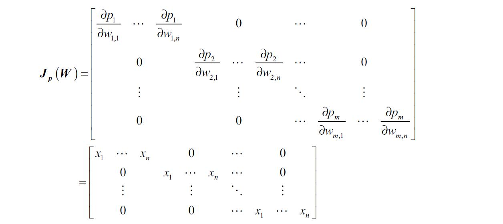
所以总的来说，对于一个典型全连接层，其实只是在输出对应的各个维度上分别求了梯度。最后加深一下印象，下面给出一个对实数值y进行回归的神经网络例子，如图3-25所示。
图3-25 后向传播计算一个神经网络参数的梯度
如图3-25所示为一个双层的全连接神经网络，输出是一个一维变量y，实测数据以y表示，采用 作为损失函数。要计算梯度的参数是W1 ，b1 ，w2 和b2，也就是仿射变换的参数。整个梯度的计算过程是：首先进行前向计算，由输入x开始向前传播，将所有节点的值计算出来；然后执行后向传播算法，由损失函数L开始，计算梯度并向后（x所在方向）传播，其中
作为损失函数。要计算梯度的参数是W1 ，b1 ，w2 和b2，也就是仿射变换的参数。整个梯度的计算过程是：首先进行前向计算，由输入x开始向前传播，将所有节点的值计算出来；然后执行后向传播算法，由损失函数L开始，计算梯度并向后（x所在方向）传播，其中
∂L / ∂y = y − y ，其他边对应的梯度计算和图3-24中的例子相似，唯一的区别是最后一层的输出是单输出（一维）。当然这个例子只是用来表示神经网络计算图的一种，特别是为了方便说明后向传播的概念。就像前面说的，计算图的粒度和计算关系都是可以自己定义的，只要方便计算或者实现即可。
TIPS1： 更多关于后向传播算法
如果有读过一些比较早的机器学习和神经网络教材的读者可能会发现，这里说的后向传播和老教材中不太一样。这是因为许多老教材中，比如Tom Mitchell的《机器学习》，一讲到后向传播，往往是和权值更新打包一起讲，而且在那个时候梯度下降的方法也比较单纯、原始，还没有用到像现在这么多一阶梯度下降的变种。
而随着深度学习的发展，如今更新权值的思路其实变得更简单粗暴了。概括一下就是，把原来打包式的做法拆开成了两步：即求梯度和梯度下降。所以现在再提到后向传播，一般只是指第一步，即求梯度。
TIPS2： 深度学习中的张量
本节已经提到了张量，在实际的深度学习应用中，比如卷积层，样本的mini-batch等（后面会讲到），很多地方都会接触到张量。张量甚至成了一些框架中的基本元素，比如Theano，甚至TensorFlow的命名就是张量。
不过要说明的是，深度学习中当提到张量时，和物理或是几何中的张量关系不大，可以简单认为就是在不同维度上存数据的一种形式。无论对张量的梯度计算是如何实现的，都可以等效于将张量展开成一个向量，计算完梯度之后，再按照原来张量中元素对应的顺序“折叠”回一个张量。
3.3.4 梯度消失
后向传播算法虽然很有效率地解决了梯度计算的问题，但是并没有完美解决神经网络，尤其是多层神经网络训练的问题。在第1章的神经网络兴衰史里也提到了，当时面临的难题是梯度消失和梯度爆炸问题，也正是本节要讲的主题。
梯度消失是传统神经网络训练中非常致命的一个问题，其本质是由于链式法则的乘法特性导致的。比如来考虑深度学习之前在神经网络中最流行激活函数之一Sigmoid，其表达式和导数如下：
把这个函数的导数画出来，如图3-26所示。
图3-26 Sigmoid函数的导数
对于Sigmoid，导数的最大值在输入为0处，值为0.25。考虑一个激活函数都是Sigmoid的多层神经网络，则梯度向后传导时，每经过一个Sigmoid层就需要乘以一个小于0.25的梯度。而每乘一个梯度，则梯度的值又变得更小一些。况且在优化的过程中，每个激活层输入都在0附近的概率非常非常低。也就是说随着层数的加深，梯度的衰减会非常大，迅速接近0，这就是梯度消失问题。
梯度消失问题是传统多层神经网络难以训练的最大难题。根据上一段对问题的描述可以知道，这个问题在训练深层网络中的体现是：离输出层越近的参数，梯度越大，成了主要在进行学习的参数；而远离输出层的参数则只能在接近0的梯度则以一个非常小的速率进行学习。这种情况相当于一个恶性循环，因为靠近输出层的节点的值都是由前面那些学习速率很慢的层执行前向运算得来。而前面层因为学习速率慢，所以参数未必学到了什么特征，所以这些后面层的输入随机性会比较强，这样相当于在一个有随机性的数据上进行学习，即使学习速率再快，最后也未必能真的学到有用的特征。这一过程又会让前面层的参数更难学到有效的值。所以将Sigmoid这一类函数作为激活函数的传统神经网络，随着层数的加深，效果反而会下降。
因为导致梯度消失的根本原因是小于0的梯度连续做乘法。现在看来解决的思路主要有两种：第一种是第1章里提到过的逐层无监督预训练+后向传播微调。这个办法其实严格来说并不是针对梯度消失问题，只是预先找到一个很好的初始化位置，降低上一段说的靠近输入层一直在“瞎学”的风险。加上这个方法训练起来也比较麻烦，如今几乎没人用了，更为主流的解决办法是，第二种方法，ReLU等可以避免梯度衰减的激活函数。不过需要注意的是，即使有了ReLU，在非常深的网络中仍然会存在梯度传播困难的问题，因为小于1相乘的衰减并不是梯度减弱的唯一因素，后面内容中还会继续探讨。
3.3.5 修正线性单元（ReLU）
ReLU（Rectified Linear Unit）在3.1.3节中也提过了，这里再展开讲讲，如图3-27a所示。
ReLU中，小于0的部分直接置0，大于0的部分即为输入。这样即实现了非线性变换，同时大于0的部分梯度为1。这样对于需要从输入一直传递的信息，激活函数的梯度总是1，即使连续相乘也不会变小，解决了梯度消失的问题。第1章也提到过，2012年Alex Krizhevsky提出的Alexnet里，ReLU是帮助训练快速收敛的一个有力手段。
根据ReLU的定义，信息只能在ReLU的输入大于0的区域进行传播（前向和后向），这带来了另外一个优点就是稀疏性。稀疏性不仅对网络的性能提高有帮助，而且从神经科学的角度，神经元的激活率是非常低的，这也是一种仿生的模拟。不过这种特性也带来一个问题，就是在输入小于0的区域，即使有个很大的梯度传播过来也会戛然而止，也就是“挂了”，所以这个问题被称做Dying ReLU。针对这个问题Andrew Ng组提出了Leaky ReLU，如图3-27b所示，将ReLU小于0的部分改成一个斜率小于0大于-1的线性函数y=αx，对于Leaky ReLU，α是一个非常小的值，比如论文中给出的是α=0.01。这个名字非常形象，感觉就像是二极管中的漏电流（leak current），不知是不是作者对电子的课程印象深刻。总之，Leaky ReLU就是用一个非常小的系数让信息和梯度的传播不至于中断。同时系数很小还一定程度上继承了ReLU带来的稀疏性优点。
图3-27 ReLU、（Randomized）Leaky ReLU、Parametric ReLU和Softplus示意图
在Leaky ReLU的基础上，有人在Kaggle的NDSB（National Data Science Bowl）竞赛中，把求平均提高泛化能力的思想加入进来，发明了随机版本的Leaky ReLU。这个方法具体来说就是在训练的过程中α按照高斯分布随机取值，测试/验证的时候取均值。直观理解也参照图3-27b所示。
既然小于0区域的斜率可以取值，那么为什么不把这个值作为一个参数呢？于是MSRA的He Kaiming提出了参数化ReLU（Parametric ReLU），让α称为一个可优化的参数，如图3-27b所示。
不管是ReLU还是PReLU，都是有棱有角的，实际应用中还有一个平滑版本的ReLU，叫做Softplus，公式如下：
Softplus的曲线如图3-27c所示，其中虚线是用来对照的ReLU。Softplus其实就是Sigmoid的原函数，用来做激活函数是Bengio的组于2000年NIPS的文章里提出的。除了图3-27中画出来的这些，ReLU一族或是类似ReLU的激活函数还有Noisy ReLU、Shifted ReLU、Exponential LU和Concatenated ReLU等，在此就不展开说了，有兴趣的读者可以自行学习。
本质上来说，ReLU解决梯度消失的原则是靠梯度等于或接近1，从而避免连续相乘的结果衰减，而ReLU一族或类似的办法也都是基于这一原则的变种。
3.3.6 梯度爆炸
梯度的不断衰减是因为连续乘法导致的，那么如果在梯度的连续乘法过程中总是遇上很大的（绝对）值呢？比如考虑一个全连接网络，随着算法的进行，参数进入了某一个区域，导致一条路径上的多个节点计算出的值都很大。在每次计算仿射变换对应的梯度时，都会得到很大的值，所以在后向传播算法中梯度可能会因为连续乘法出现非常大的值。一旦这个值使得权重的更新步长过大，就像第2章讲学习率时举的学习率过大的例子（如图2-51a）一样，很可能会让算法不收敛，这个问题被称为梯度爆炸问题。下面举个比较形象的例子，来看图3-28。
图3-28 “断崖”和梯度爆炸
如图3-28所示为一个二维的例子。可以看到函数的曲面有一个类似“断崖”的区域，当优化的参数值在某一步恰好到了“断崖”时，会获得一个极大的梯度，而如果还是将这个梯度乘以学习率作为迭代步长的话，下一次迭代的步长会非常大。如图3-28中的实线箭头所示，从而“飞”出了合理的区域，这就是梯度爆炸。根据描述和图3-28中的例子，解决梯度爆炸的方法也很直观，只要把沿梯度方向前进的步长限制在某个值内就可以避免过大的步长了。根据这个思路，一个常用的办法是如果计算出来梯度的范数（norm）大于某个阈值，则对梯度以这个范数为基准做归一化，让新的梯度的范数等于这个值。举个例子，还是以二维情况来讲，如果算出来在“断崖”处的梯度为（60，80），而梯度的范数的阈值限制在5，则有：
这种将梯度的最大值限制住的办法，通常被称为梯度裁剪（gradient clipping）。
3.3.7 梯度检查（gradient check）
因为梯度的计算常常不稳定，而且后向传播算法本身依赖于梯度表达式，所以并不是一个容易实现和调试的算法。因此人们想到了用数值计算的梯度和计算图计算的梯度进行对比，来检查梯度的计算是否出现了错误，俗称梯度检查（gradient check）。计算的方法也很直接，对于一个维度而言：
也就是说用一个非常小的Δ通过数值的方法实现对梯度的近似。Δ的取值应该尽量小，但是又不能太小，否则有可能因为浮点数精度引入计算误差，通常这个值在1e-4～1e-6之间。
有了数值计算的梯度值，就需要和表达式算出的梯度值进行对比，对比的思路也比较简单，就是比较梯度差异相对梯度的值，一般用如下公式：
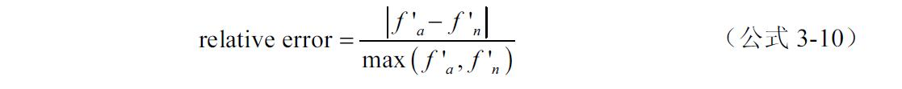
其中 是解析（analytical）的梯度值， 是数值计算（numerical）的梯度值，这个相对误差作为判断梯度是否出现错误的一个参考。按照斯坦福大学的课程《用于视觉识别的卷积神经网络》（CS231n）的建议，单精度情况下，这个值大于1e-2则说明梯度很可能错了，小于1e-7则说明没什么问题，在这两个值之间则视损失函数的平滑度决定。
3.3.8 从信息传播的角度看后向传播算法
通过前面的讨论可以知道，无论是梯度消失还是梯度爆炸，其根源都是链式求导法则的连续相乘的特性。从这个角度来看，梯度消失和梯度爆炸其实都是一个问题，就是梯度累积相乘带来的不稳定性。那么是否解决了梯度消失和梯度爆炸问题，深层网络的训练就解决了呢？其实梯度的消失和爆炸只是梯度传播过程中不稳定性体现的两个方面，其他一些因素也影响了深层网络的训练。
从信息论的角度来看，数据经过处理的步骤越多，则丢失的信息可能也会越多，这叫做数据处理不等式（Data Processing Inequality，DPI），表达如下：
其中X→Y→Z是一个马尔科夫链。I是互信息，表示一个随机变量包含另一个随机变量信息量的度量，这里可以简单认为是信息相关性的一种度量。第2章里讲到过的KL散度就是可以描述互信息的一种表达。当然这些都是定义，在这里可以认为就是X→Y→Z信息传递的路径，而I（X；Y）≥I（X；Y）代表着信息传播的过程中，只有可能丢失，而不可能增加。而这种信息的丢失，或者说信息在传播过程中的误差，体现在神经网络中就是后向传播算法随着传播带来的信息丢失。具体来说要计算梯度都需要输入数据，而数据的分布所携带的信息在计算后向传播的过程中会一层层丢失，这种信息丢失的多少也是影响算法优化性能的一个重要原因。
除了DPI，梯度计算本身的性质也会导致信息随层数增加而丢失，具体来说就是梯度所代表的线性近似。先来看图3-29。
从函数展开的角度，梯度下降的本质就是对函数做了一阶线性近似，然后再进行迭代。如图3-29所示，画出了一个非线性曲线的一段，及其某一点梯度所代表的线性近似。可以看到，离求梯度的点越近，这种近似越好，相反则误差越大。在每次迭代时，线性近似的误差会按照后向传播的方向从输出一层层传递到输入层，而且随着迭代的次数增加，误差越来越大。对于ReLU等单元，这种误差同样存在，虽然大部分区域都是可以被线性近似完美拟合，但是输入为0处，也就是梯度变化的过渡区域是无法被线性近似的。只要迭代时经过了过渡区域，误差就会产生。而层数越深，则在后向传播计算后迭代时经过过渡区域的可能性就越高。
图3-29 梯度和线性近似
针对信息传播的误差问题，也有很多办法，比如增加辅助损失函数（auxiliary loss），让梯度在传播的路径变得短一些，这在2014年ILSVRC的冠军网络结构GoogLeNet中就有所体现，使用了两个路径更短的辅助损失函数来促进收敛。直观来看这个方法是帮助靠近输入的低层的特征有更强的区分性，而从信息传播角度则是减少了传播路径的长度，减小信息传播中的丢失。
在2016年的ECCV上，北京大学的林宙辰教授的小组提出了接力后向传播算法，其基本思想是每次后向传播只传播一个较短的长度，然后利用辅助损失函数像接力一样，把没有传播到的层再继续利用后向传播算法接着计算。该方法在应用到2015年ILSVRC的场景分类竞赛（Scene Classification Challenge）中取得了第一名的好成绩。
3.4 随机梯度下降和批量梯度下降
有了数据，有了神经网络模型，又有了后向传播算法计算梯度，第2章也讲过了各种一阶优化算法，感觉万事俱备了。是否直接把所有数据往模型里一放进行训练就可以了呢？实际情况并没有这么简单，本节来讨论下训练神经网络，尤其是深度网络中的一些数据层面的具体做法。
3.4.1 全量数据（full-batch）梯度下降
全量数据梯度下降是最直接的做法，每次计算梯度的时候把所有训练数据都考虑进来。具体来说就是，假设一共有个N个样本的话，计算损失函数的时候，对所有的N个样本都求一遍损失函数的值，然后求平均：
这个方法虽然简单、直接，并且能最好地将数据分布的信息代入到梯度计算中，同时还方便并行计算的实现。但是在大数据时代，数据量少则几万，上不封顶，使用全量数据的梯度下降就显得很不现实。
3.4.2 随机梯度下降（SGD）和小批量数据（mini-batch）
和全量数据梯度下降相对的办法是随机梯度下降（Stochastic Gradient Descent，SGD）。具体的做法是每次从训练样本中随机抽取一个样本用来计算损失函数，将相应计算出的梯度作为当前一步梯度下降的依据。因为每次梯度下降只抽出一个样本进行计算，所以SGD的第一个优点就是快。比如一个有10000个样本的数据，如果用全量数据计算梯度，10000个样本都算一遍，也就下降一步。而用SGD的话，10000个样本都过一遍，就下降了10000步！这在计算效率上的差异是显而易见的。
虽然SGD在计算效率上有巨大优势，不过上面说的是理想情况，根据描述SGD还有另一个特点是随机性。因为数据是从全量中进行的采样，所以仍然是包含数据分布的信息，可以知道SGD在梯度下降过程中的随机性非常大。随机性像噪声一样带来不确定，但是在深度学习的应用中是一种优点，因为深度学习中面临的基本都是非凸优化问题。第2章讲过克服非凸问题的一些方法，比如加入冲量。SGD则相当于另一种思路，通过随机性的引入，实现了梯度下降时的启发式搜索。下面来考虑一个形象的例子，如图3-30所示。
图3-30 全量梯度下降和SGD对应的损失函数曲面
图3-30a是在考虑到大量数据时，损失函数曲面的图，可以看到数据量大的时候，随机性非常小可以忽略，曲面有一个非常稳定的极小值。而图3-30b、c、d图是考虑3个随机样本对应的损失函数曲面。因为数据都是从同一个分布中而来，所以曲面的大体形状和图3-30a相似。而随机性则让曲面在局部和3-30a产生了很多差异，这种差异的好处是在大量数据的曲面中，极小值的位置在单个随机样本对应的曲面中未必是极小值。这样一来，在SGD中，梯度有一定概率是朝着“逃出”极小值的方向，从而避免陷入极值，同时梯度下降的大方向仍然保持正确。总之综合两点考虑，SGD比起全量数据梯度下降还是有很大优势，但是在实际应用中，尤其是类别很多的分类问题中，SGD的随机性也有可能导致算法不收敛，所以更为常用的是一个折中的办法，就是小批量数据（mini-batch）。
小批量数据的思路其实还是一样，全量数据太多，纯SGD每次用一个样本不太稳定，所以每次计算梯度随机选取一定数量的部分样本。这样计算量仍然远小于全量数据，同时一定量的采样既能保持一定的随机性，又能控制随机的程度不会过大导致算法不收敛。此外SGD每次只有一个样本，无法在数据层面并行计算，而mini-batch则可以并行。既然是批量的数据，每个批次的样本量的选择也成了重要的超参数。尽管有研究（Leon Botton，《Large-Scale Machine Learning with Stochastic Gradient Descent》）表明SGD，也就是样本量为1是最快的，但实际使用中的问题让样本数量的选择成了一个经验活。比如Github上有个热度挺高的库叫做caffenet-benchmark，里面通过实验评估了各种超参数对imagenet训练结果的影响。在这个库的评估里，训练imagenet-2012数据最优的样本数量是64。最后要说的是，mini-batch严格来说和SGD不是一回事，不过随着时间的推移，现在在深度学习中一提到SGD，其实多数指的都是mini-batch。
在各种深度学习框架中，经常看到的两个概念一个是迭代次数（iterations）还有一个是训练了多少代（epoches）。迭代次数就是指更新了多少次参数的值，而代数就是值遍历了多少次所有的训练样本。
TIPS： 深度学习中的极小值
第2章已经提到过，高维度中，极小值并不是最大的问题，鞍点反而会更加令人头疼。事实上，在神经网络尤其是深度学习中，即使存在极小值并且算法最后收敛到了极小值，也未必是个大问题。根据Bengio教授的一些研究，在高维度和深层网络下，局部最小值往往和全局最小值非常接近，所以效果上也未必有什么大差别。而LeCun（《The Loss Surfaces of Multilayer Networks》）、斯坦福大学以及Google的一些最新研究（《Qualitatively Characterizing Neural Network Optimization Problems》，《Identifying and attacking the saddle point problem in high-dimensional non-convex optimization》）则发现，尽管深度学习中损失函数的曲面严格来说是非凸的，但是大致形状也是凸的。总之极小值在深度学习中越来越不是问题了。
3.4.3 数据均衡和数据增加（data augmentation）
现在考虑一个二分类问题，比如区分一张图片里的是一只猫还是一条狗。因为某种原因，数据搜集的时候只找到了2000张猫的图片和50000张狗的图片作为训练数据。如果直接把这52000张图片放在一起，然后用mini-batch的方法进行训练，则会出现一个问题，就是数据的不均衡。比如每次迭代的样本数量为100个，那么平均下来每次样本中猫的数量通常只有3、4个。这样的结果是计算损失函数的时候，狗的图片比重太大，所以相当于是针对狗的图片进行了充分的训练。猫的图片带来的损失的影响很低，所以猫的特征就并不容易被学习到，这会影响分类器最终的性能。
很自然地，我们希望训练数据总体上是均衡的，所以对数量不平均的数据，在训练前一个必要的步骤就是做数据均衡。最直接的想法就是把猫的图片复制24遍，这样猫的样本也是50000张和狗的样本打平了。这样做是有效果的，不过在实际应用中更常用的手段是做数据增加。
在机器学习中，数据通常都是来源于一个分布。比如猫的图片，无论图片中的猫是什么颜色，什么姿势，眼睛是瞪着还是眯着，都能看出是一只猫。而所有的猫的图片，都可以看作是来自于一个分布。所以在做数据平衡的时候可以考虑模拟这个分布来产生一些和已有数据不完全一样的数据。具体到猫的图片的例子，就是可以考虑把图像旋转一个角度，左右镜像对称，明暗度做一些改变，或者是裁剪等，如图3-31所示。

图3-31 猫图片数据增加的例子
做了这些改变之后，仍能一眼看出这是只猫，可以认为图片仍是来自“猫”这个分布。数据增加不仅可以用来解决样本数量不平衡的问题，还可以带来其他的好处。比如想象一下2000张猫的训练数据全是向左看的猫，那么训练出的模型遇到一只向右看的猫就未必能判断得很准。所以数据增加的时候可以随机加入水平翻转，让向右看的猫也出现在训练样本之中，增强模型对从未见过的数据的判断能力，这也是数据增加带来的好处。所以在实际应用中，即使是数量多的一类的图片也可以用数据增加的手段来获取更多的训练样本，来增强模型对于未见过的数据的分类能力。比如猫和狗的例子中，可以通过数据增加把猫和狗的图片都增加到10万张再进行训练。甚至可以在每次训练迭代之前实时在原始图片基础上随机加上一些变化，相当于拥有了无限的数据增加的样本。现在很多深度学习框架中都已经出现了这样的预处理结构。
TIPS： 类均衡采样（Class-aware Sampling）
尽管数据做了均衡后可以保证总体数量上的均衡，但是单纯随机采样的mini-batch中，样本的分布却还是随机浮动的，尤其是当分类类别大于批量采样的数目时，有时候一个类出现一个以上的样本，而有的类却一个都不出现，这些情况的出现对于收敛并不是一个好的因素。所以一个思路是，除了总体上样本数量的均衡，在梯度下降的每个迭代批次进行采样的时候，要尽量让样本在类别和数量上都更加均匀。类均衡采样（Li Shen，《Relay Backpropagation for Effective Learning of Deep Convolutional Neural Networks》）就是这个思路下的一个方法。
这个方法首先将所有的类别列出来，并随机打乱顺序。每次采样的时候按照采样数量在打乱顺序后的类列表上依次采样，如果采样到列表末尾，则重新打乱顺序继续采样。这样保证了每个批次数据中，类别的均匀性。然后在每个类别内再用同样的策略进行随机的样本采样，这样不需要做数据增加就实现了均匀采样，而且均匀度比平衡样本数量后直接随机采样更高，训练时的整体收敛性也更好。
3.5 数据、训练策略和规范化
从本节开始的内容其实不限于神经网络，而是机器学习中普遍的问题，当然，神经网络是机器学习算法中的一种。当我们衡量一个机器学习算法是否好的时候，最直接的方法是衡量算法预测和测量数据的误差。比如对于训练数据，损失函数就是衡量这种误差的方法。训练一个神经网络时，损失函数降到一个非常小的值，我们说网络很好地收敛了。然而当网络训练好以后，是否能对训练数据以外的数据也做出很好的预测呢？其实这才是更看重的指标，这种对训练数据以外数据做出准确预测的能力称为泛化（generalization）能力。
3.5.1 欠拟合和过拟合
欠拟合和过拟合是机器学习中常见也非常简单的两个概念，下面来看图3-32所示的例子。
图3-32 一维拟合的例子
图3-32中所示的3个图中都画出了同样的数据点，这些点都是由一个“倒U”形状的曲线加上叠加一个高斯分布的噪声产生的。虽然看上去不是很整齐，但还是能一眼看出来是一个“倒U”的形状。其中红色的圆点是用来训练数据，而蓝色的三角形点则是训练中未曾出现的数据，不过就像前面提到的，红色和蓝色的点都是由“倒U”曲线加上噪声产生的样本，所以它们是来自同一个分布，在机器学习中，这种分布通常称为数据产生分布（data-generating distribution），事实上在前面内容里曾提过这个概念。训练数据和测试数据来源于同一分布，是机器学习中的一个基本假设。这是一个很直观很显然的事情，比如我们训练了一个机器学习算法，根据体温、心率和血压用来判断一个人是否很平静，这个模型无论判断人有多准确，都难以直接用到一只猫身上，因为猫的各项指标来自于完全不同的分布。或者再白话些就是我们从一件事情中学到的经验未必能放到另一件事情上。总之，在数据同分布的假设下，从训练数据中学习到的特性，才能有效预测没有见过但是和训练数据来源于同一分布的数据，这个过程就是泛化。
在这个假设下，图3-32a中尝试用一个线性的模型去拟合红色的圆点数据，结果可想而知，不仅红色的训练数据难以拟合，蓝色的测试数据也根本对不上。其根本原因是因为线性拟合的模型过于简单，表达能力不足以学习到数据点的特性，这种情况称为欠拟合。
图3-32b中使用了一个复杂得多的模型，比如可以是一个包含很多高次项的多项式，或者是一个隐藏层单元很多的双层神经网络。这样的模型有了非常强的表达/拟合能力，所有的红色圆点都被很好地拟合。不过从图3-32中来看，拟合得有些过分好了，因为数据点是有明显的中间高的趋势，同时也有噪声附加在这个趋势上。而图3-32b中的曲线连噪声一起学习到了，虽然训练数据误差接近于0，但是对于没见过的蓝色三角形数据点，就完全不靠谱了。这种情况相当于“记住”每个训练数据的位置，而丧失了对新数据的泛化能力，称为过拟合。
图3-32中用一个比线性模型复杂，又不会表达能力过分的模型，可以是一个二次函数，也可以是一个比3-32b模型简单得多的神经网络。总之是一个恰到好处的模型，成功学习到了数据的趋势。这种才是我们想要的情况，也就是能够成功泛化的模型。
模型的拟合能力通常被称为capacity，一般情况下，如果欠拟合解决办法是通过增加模型复杂度来增强拟合能力，比如对于神经网络，增加层数或者神经元数量。而过拟合则不是那么轻易解决的事情，需要在模型复杂度和训练精度之间寻找一个平衡。如果欠拟合解决办法是增加模型的复杂度以达到更强的学习能力，比如对于神经网络，增加层数或者神经元数量。而过拟合则不是能那么轻易解决的事情，因为一般来说减小误差的趋势往往是通过更复杂的模型实现的，这个趋势容易导致过拟合，需要在模型复杂度和训练精度之间寻找一个平衡。
3.5.2 训练误差和测试误差
前面也提到了数据通常分为两部分，一部分是训练数据，用来让模型做后向传播学习参数，模型在训练数据上预测值和数据值的误差衡量被称为训练误差 （training error）或者经验误差 （empirical error）；另一部分是测试数据，相应的误差衡量被称为测试误差 （test error）或者泛化误差
（generalization error）。一般来说训练误差是否变小代表着学习的过程是否收敛，而测试误差是否足够小则和模型对于未见过的样本预测能力的好坏直接相关。通常来说，测试误差总是大于训练误差，不过这两者随着模型能力的变化趋势并不相同。想象一下如果可以看到两种误差随着能力的变化趋势的话，当模型的能力不够时，训练误差和测试误差都会随着模型能力的增加而降低，这对应着欠拟合。当模型的能力恰到好处的时候，测试误差达到最小。随着模型能力的继续增加，模型开始在能够学习训练数据分布的基础上，进而开始学习到每一个训练数据，这就是过拟合，所以测试误差会越变越大。这个趋势如图3-33所示。
图3-33 训练误差和测试误差随capacity的变化趋势
需要说明的是，这个趋势曲线中的测试误差和训练误差的差异 （generalization gap）随着模型能力的增长是不断变大的。当模型能力超过了最佳的点时，这个差异的增长速度就会超过训练误差的下降速度，这就是为什么测试误差会越来越大。
通常来说我们会更希望测试误差和训练误差的差异更小，因为这代表着更好的泛化能力。由于数据都是来源于某种分布，如果从抽样的观点来看待训练数据，根据最基本的统计知识，数据量越大，抽样误差越小。也就是说随着数据的增加模型对真实分布描述的误差就越小，泛化性能就会越好。不过就算数据量可以无限增加，也不能完全解决误差的问题，因为在数据中还隐含了一个假设，就是我们讨论的都是带有随机性的数据。这些随机性有可能是误差，有可能是一些难以观测到的变量。为了更好理解数据量和误差的关系，下面来看个例子，如图3-34所示。
图3-34 完美模型的误差随数据量的变化
图3-34a是当数据不多的时候，我们得到了一个如实线所示的最优模型，中间的黑色虚线代表真实数据下能得到的最优模型。按照前面的论述，数据量少的时候，对真实分布的描述可能会有较大误差，所以中间的实线和虚线完全没有重合。
自然而然地，我们希望有更多的数据，比如图3-34b所示的情况，最优模型的泛化能力就会好一些，但是训练数据的增加对模型的能力提出了更高的要求。一般来说，这个时候的最优模型会比数据少的时候复杂一些，但是在训练数据上的误差会上升，而对真实数据的误差会下降，并且下降程度会超过训练误差的上升程度，也就是说前面提到的训练误差和测试误差的差异缩小了。可以看到中间的实线和虚线的差异变小了。
再来考虑最极端的情况，假设我们能够获取任意多的数据，或者说多到对真实分布的描述误差可以忽略，如图3-34c所示。这种情况下，可以认为得到了完美的模型，训练误差和测试误差的差异就可以忽略了，它们都会趋向同一个值，称做贝叶斯误差（Bayes error）。
TIPS： 非参数模型
因为本书主题是深度学习，所以截止到这里只讲了参数模型，也就是神经网络。参数模型可以理解为参数数量给定的模型。比如神经网络，定好了结构的话，参数数量是确定不变的，学习过程只要根据训练数据和损失函数优化参数的值就可以了。因为参数和形式的确定，所以给定一个参数模型，模型的能力也是确定的。
非参模型则是和训练数据更紧密相关，参数数量会随着数据的不同而变化，最简单的例子比如各种插值法，还有SVM和高斯过程等。非参数模型相对于模型能力的控制更容易一些，比如SVM，核函数半径如果很短，则能够获得很强的分类能力，训练误差可以很低，甚至每一个样本都成为支持向量，从而过拟合；而长一些的核函数半径则能降低过拟合的风险。不过非参数模型大都是基于前面提到的局部泛化的思想，而神经网络则是希望能从数据中学习到特征（representation）。
3.5.3 奥卡姆剃刀没有免费午餐
奥卡姆剃刀（Occam’s razor）和没有免费午餐（No Free Lunch Theorems，NFL）是两个不同的理论，放在一节是因为这两个理论都有些哲学和逻辑的意思，并且名字都有些怪。
先来说说奥卡姆剃刀。14世纪的时候，有个哲学家William of Ockham，他在自己写的一本讲道理的书里阐述了一个观点：Non sunt multiplicanda entia sine necessitate。翻译过来就是“如无必要，勿增实体。”这句听上去很有道理的观点在400年后被苏格兰的玄学和哲学家William Hamilton爵士正式命名为Occam’s razor。无论从原话还是名字来看，都透着一种简单至上的思想。具体到机器学习中，这个哲学观点代表的意思是：在所有能够很好解释训练数据的模型中，选择最简单的那个。那么怎样才能算是很好解释训练数据呢？理想情况就是图3-33中虚线右边的部分，最简单的那个就是虚线对应的那一点，通常就是一个最优（optimal capacity）的模型。在很多传统机器学习算法中，奥卡姆剃刀并不是一句大道理，而是有统计学习理论的支撑。不过在神经网络，尤其是具体到深度学习中的理论支撑并不明确，本书也并不涉及这部分内容，有兴趣的读者可以自行研究学习。
接下来再谈谈什么是没有免费的午餐。前面两节已经反复说过，机器学习根本来说就是从已有数据中学习，然后泛化到未见过的数据。特别地，对于分类问题，就是通过学习已经带有标签的数据，来预测未见过的数据的类别。前面还提到数据的同分布假设非常重要，因为同分布才是泛化的前提，那么是否可以有算法从各种所有可能出现的分布中都进行学习，并且有效泛化呢？答案是否定的，美国数学和计算机科学家David Wolpert和William Macready在20世纪末指出并证明：如果考虑所有可能的数据分布，不管什么算法，分类误差的期望值都是一样的。也就是说天上不会掉下一个像免费午餐一样的算法，比其他算法都好，考虑所有可能的分布的话，什么算法水平都一样，甚至是一个随机的分类算法。定性来理解如图3-35所示。
图3-35 没有对任何分布都有效的分类算法（NFL）
图3-35中黑色实线是分类边界，a、b和c图对应3种不同分类器和各自分类效果最好时的样本例子，图3-35a里分类效果好的线性分类边界，到了b和c图中则不灵。同样道理看似过拟合的图3-35c中的分类器，其实对图3-35c的分布有很好的效果，但在a和b图中则并不好。所以全局来说并不存在某种算法比另一种算法更好，只有针对特定问题，特定的数据分布时，找到一个好的算法才有意义。
其实上面说了这么多就两件事：泛化很重要；数据很重要。
3.5.4 数据集划分和提前停止
通过前面3节的讨论，我们知道数据主要分为训练数据和测试数据。在实际的训练中，还会使用到一个数据集，叫做验证集。验证集通常被用在训练过程中，但并不作为用于更新网络权重的训练数据的一部分。主要作用是在训练过程中评估模型的准确度和损失函数值，作为一个指标选择模型的超参数，比如网络层数、隐藏单元数量，或是激活函数的类型等。同时验证集也用来观察训练是否已经过拟合，因为验证集并不作为更新网络权重的数据，所以能体现出网络的泛化能力。在神经网络中，随着训练的进行，在训练集和验证集上的损失函数值常呈现如图3-36所示的趋势。
图3-36和图3-33的趋势非常相似，只不过横坐标换成了迭代次数。定性理解这个趋势，在训练的开始阶段，模型什么都尚未学到，所以无论是训练集还是验证集误差都很高。随着训练的不断迭代，在训练集上的误差会越来越小，这是学习到数据特征的阶段，模型仍然欠拟合，所以在训练过程中，训练集和验证集上的误差都下降了。然后就是过拟合阶段，训练集的误差不断下降，但是泛化能力则变差，于是验证集上的误差变高了。所以当验证集上值最小时，就是参数最优的时候。
图3-36 训练过程中损失函数在验证集和训练集上的趋势
一个非常简单的策略是每当验证集上的损失函数值达到一个比之前更小的值，就把这个值记录下来作为最小值，然后继续训练，直到在发现某一个最小值之后一个给定的迭代次数内，如果没有发现新的更小的值，则认为已经过拟合了。于是之前验证集上最小值对应的模型就是最优的模型，这个简单粗暴的策略叫做提前停止（early-stopping）。提前停止虽然简单，但是有个潜在的风险就是用来判断是否已经过拟合的次数并不容易确定。这个次数无论是个常数还是一个比例，如果太长，会浪费计算资源，如果太短，则有可能在验证集误差还有可能继续下降（比如鞍点或者缓慢离开极小值时）的时候就提前结束。
虽然验证集只是在训练中使用，但是和测试集有个共性就是都不参加到参数的梯度下降训练中。如表3-1总结了这3种数据集的特点。
表3-1 训练集、验证集和测试集
当然，如果数据非常匮乏的情况下，有个策略是将验证集和测试集合二为一，则比没有强。
3.5.5 病态问题和约束
通过改变模型的拟合能力来避免过拟合并不是一件容易的事情，更常用的办法是使用规范化对模型的参数进行一定的约束。下面来考虑一个非常简单的例子，求下面方程的解：
2x-y+2=0
这是一个二元一次方程，有无数个解，都在如图3-37a所示的这条直线上。
图3-37 病态方程求解和规范化
这是一个典型的病态（ill-posed）方程，有无数个解可以满足方程，可以通过x和y带入等式左边求出0，但是通过等式来推导x和y的值却是不可行的。病态方程除了有不可逆的性质，在数值计算上也不受欢迎。比如取x=109 ，y=2×109 +2，那么如果x和y的系数发生了很小的变化，则这个变化会被放大很多到等式的右边，在数值计算中，这常常是不稳定的。
针对病态方程，一个常见的办法是加入一个约束项，缩小x和y的取值范围，比如令x2 +y2 =0.8，如图3-37b所示，则相当于约束x和y在半径为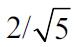 圆上，于是相切点（-0.8，0.4）成了一个稳定的解。此外还可以令约束为|x|+|y|=1，则交点也只有一个，就是（-1，0），也是一个稳定的唯一解。
3.5.6 L2规范化（L2Regularization）
虽然上面讨论的是一个非常简单的解方程的例子，但是和机器学习的问题有许多相似性。基于参数的机器学习模型某种程度上就是一个不可逆的问题，对于同一个损失函数值，可以对应很多种不同的参数。甚至在高维度下，极小值和最小值都很接近，所以即使是很好优化过的模型，也会对应许多不同的参数组合，而这些组合未必是数值稳定的。而且因为参数的范围更自由，可以得到很小的训练误差，往往都不具有很好的泛化性能。这时候也可考虑加入一个约束项，这种方法叫做规范化（regularization）。具体来说就是在损失函数里加上一项，最常用的一种是L2规范化：
其实就是L2范数，也就是欧氏距离的平方乘上一个系数。在神经网络中，L2规范化通常只应用于仿射变换中的线性变换部分，也就是wx+b的w。根据公式形式，这样一项加上之后，权重的绝对值大小就会整体倾向于减小，尤其是不会出现特别大的值。所以L2规范化还有个名字叫做权重衰减（weight decay），也有一种理解这种衰减是对权值的一种惩罚，所以有时候会看到文章或者书里管这一项叫做惩罚（penalty）项。
下面通过一个简单的例子来形象理解一下L2规范化的作用。考虑一个只有两个参数w1和w2的模型，其损失函数曲面如图3-38所示。
图3-38 L2规范化对目标函数曲面的影响
图3-38a是一个目标函数，可以看到，最小值所在是一条线，整个曲面像一条山岭倒过来一样。这样的曲面对应无数个参数组合，单纯用梯度下降法是难以得到确定解的，可以看作是一个典型的病态问题。但是加上一项 ，则曲面变成了如图3-38b所示的样子。最小值所在从倒过来的“岭”变成了一个“谷”。需要注意的是“谷”所在的位置并不是规范项的中心（0，0），而是根据规范化系数的大小和原来损失函数曲面共同决定。当规范化系数α→∞时，原来的损失函数可以忽略，则“谷”的位置趋近于（0，0）；当α→0时，“谷”的位置趋近于原损失函数曲面中“岭”所在的位置。总之加入这一项之后，梯度下降法就能够解决了。并且通过这个例子可以看出，L2规范项还起到了帮助收敛的作用。统计学里这个方法常用来处理多重共线性下的最小二乘法问题，并且有个形象的名字叫做岭回归（ridge regression）。
，则曲面变成了如图3-38b所示的样子。最小值所在从倒过来的“岭”变成了一个“谷”。需要注意的是“谷”所在的位置并不是规范项的中心（0，0），而是根据规范化系数的大小和原来损失函数曲面共同决定。当规范化系数α→∞时，原来的损失函数可以忽略，则“谷”的位置趋近于（0，0）；当α→0时，“谷”的位置趋近于原损失函数曲面中“岭”所在的位置。总之加入这一项之后，梯度下降法就能够解决了。并且通过这个例子可以看出，L2规范项还起到了帮助收敛的作用。统计学里这个方法常用来处理多重共线性下的最小二乘法问题，并且有个形象的名字叫做岭回归（ridge regression）。
3.5.7 L1规范化（L1Regularization）
除了L2规范化，L1规范化也是最常见的规范化方法之一，形式如下：
其实在图3-37c所示的例子中已经见过，和L2的区别主要是L2项的等高线不同，二维情况的等高线画在了图3-37c中，是个旋转45°的正方形。这个性质让L1规范化后的参数更趋向于某些维度为0，也就是稀疏性。关于这个性质的形象理解还是来看个经典的二维情况下的例子，如图3-39所示。
图3-39中虚线代表的是原损失函数的等高线，实现代表的是规范化项的等高线，左边a图是L2的情况，右边b图是L1的情况。当整体函数达到最小值的时候，如a图中红点所示的位置。所以能够很清楚地看出，L2项让整体参数都有变小的趋势。而L1则会让参数的方向朝着某个轴靠近，比如图3-39b中，因为原始损失函数等高线的形状，无论L1项的系数怎么变，最终最小值一定是在横轴上。这样的约束可以让有效特征的数量变少，从而获得稀疏性 。因为这个性质，L1规范化经常被用在降噪和图像重建中。在统计学里L1规范化也有另外一个名字叫LASSO，即Least Absolute Shrinkage and Selection Operator，是对L1规范化的一个简短概括。
图3-39 L2规范化和L1规范化的区别
3.5.8 集成（Ensemble）和随机失活（Dropout）
3.5.7节介绍的是最常见的两种规范化方法，其实广义来说，任何尝试减小算法泛化误差的改动方法都可以叫规范化，本节介绍的两个方法就是两种比较有代表性的。
首先通过一个例子来了解集成（ensemble）的基本概念，考虑一个平面上的二分类问题，如图3-40所示。
图3-40 集成（ensemble）的示意例子
图3-40中的数据均是测试数据，a、b和c图分别是3个不同模型在测试数据上的分类结果。需要注意的是，一般在做集成的时候，相同模型结构的3组不同参数是比较常见的情况。但是并不限定于此，也就是说集成的模型可以是不同的模型结构甚至完全不同的算法。每个模型错误分类的样本都用圆圈标了出来，可以看到每个模型大体都是准确的，但是a、b和c图中都会有分类错误的情况发生。定性来看因为每个模型是不同的，所以错误的情况通常也不一样，所以大部分的情况还是正确分类的。基于这个思路，可以考虑综合考虑3个不同模型的结果，因为错误分类毕竟是少数，所以最终结果的可靠性就会好很多。所以把这3个模型的结果综合考虑，如图3-40d所示，图3-40d的左图中画出了3个模型的分类边界，对结果我们采取多数投票（majority vote），也就是3个模型分类结果中多数的结果作为最终结果，如图3-40d右图所示，结果就很好了。除了多数投票，在实际应用中常见的办法还有取均值或者中值，总之基本思想都是一样。俗话说得好“三个臭皮匠，赛过诸葛亮”。
集成法是通过多个模型的结果综合考虑给出最终的结果，虽然准确率和稳定性都会提高，但是训练多个模型的计算成本也是非常高的，如果训练10个左右的模型，则计算成本高了一个量级。所以集成法通常在ILSVRC和Kaggle这样的竞赛中更常见，实际应用中使用更多的则是一个和集成法类似但又不尽相同的方法，在第1章也提到过，Alex Krizhevsky在ILSVRC 2012中就用到过这种方法：随机失活法（dropout）。
Dropout的底层思想其实也是把多个模型的结果放到一起，只不过实现方式是在一个模型的内部，而不是真正去训练多个模型。Dropout的示意如图3-41所示。
图3-41 随机失活（dropout）示意
图3-41中左边展示的是一个非常简单的神经网络结构。我们选取隐藏层，在每次的梯度迭代中，让隐藏层的每个单元以一定的概率p不被激活。比如图3-41右边的图，是0.5为失活概率情况下的一个例子，h1 和h3 不被激活时，实际上相当于一个包含两个隐层单元的新网络。在该次梯度迭代结束后，下次迭代中再继续这个过程。通常在应用中，如果m个隐藏单元的网络对于问题是最优的，则实际训练用的网络中单元数n应该是m/（1-p）的取整。注意到在这个过程中存在一个问题，对包含n个单元的一层以失活概率p进行dropout的时候，有pn 的概率全部单元都没有激活，这样一来输入输出之间的通路就断了。比如图3-41的例子中，有1/16的概率会没有通路。不过好在实际应用中，n通常都很大，所以这个概率会非常非常小，不会形成实际困难。
定性来理解一下，dropout实现的相当于每次迭代都在一个随机挑选特征的子空间进行。举个不严谨的例子，比如想判断一个动物是不是猫，第一次迭代的时候通过重量、毛色和体型；第二次迭代通过重量、眼睛形状和奔跑速度；第三次迭代通过体型、尾巴长度、叫声和食物类型……当然区别在于神经网络中的特征都是学出来的。这样做的好处不仅实现了集成的思想，还把每个特征之间的关联性降低，增强了泛化能力。
在实现dropout的时候，因为训练时候对单元按照一定概率随机置零，所以训练结束后到了预测阶段需要对参数的值乘上1-p，才能保证结果正确。这个步骤也可以在训练时对输入除以1-p来等效实现。也有人在预测阶段使用dropout，方法很直接，就是打开dropout，运行n次网络，得到n个不同的结果，然后像集成法一样，选取一个最终结果。Dropout虽然避免了训练多个模型，可并不意味着训练时和单独训练一个模型一样快，通常还是要慢一些。另外什么样的失活概率p是最好的，通常也是个经验值。
3.6 监督学习、非监督学习、半监督学习和强化学习
机器学习中通常根据数据是否有标签可以分为监督学习（supervised learning）、非监督学习（unsupervised learning）和半监督学习（semi-supervised learning）。如果需要算法与环境交互获得数据则是强化学习（reinforcement learning）。本书中针对的计算机视觉应用将以监督学习为主，不过本节还是来简单全面地了解一下这3种类型的机器学习。
3.6.1 监督学习、非监督学习和半监督学习
截至目前本书中讲过的大部分内容都是监督学习。监督学习 的意思就是用来训练网络的数据，我们已经知道其对应的输出，这个输出可以是一个类别标签，也可以是一个或者多个值。模型经过训练后，遇到新来的数据，可以预测对应的标签或者值。监督学习是最常见的应用，已知标签的分类和回归问题都属于监督学习。非监督学习 则是并不知道数据的标签，而是根据数据本身的特性，从数据中根据某种度量学习出一些特性。比如想象一个人从来没见过猫和狗，如果给他看了大量的猫和狗，虽然他还是没有猫和狗的概念，但是他是能够观察出每个物种的共性和两个物种间的区别的，并对这两种动物予以区分。举个简单的例子理解一下，如图3-42所示。
图3-42 监督学习和无监督学习示意
图3-42a是监督学习的样本，可以看到样本根据类别不同而表示成不同的形状，算法学习的时候根据标签对空间区域进行划分。图3-42b是没有标签的样本，虽然没有标签但是也能很明显看出有3个集中的“簇”，每个“簇”中的样本互相靠得更近一些。这种情况下对样本的划分通常被称为聚类（clustering），常见的方法有k-means，混合高斯模型（GMM，Gaussian Mixture Model）等。广义来说，只要是无须人工标注就能从数据中提取出特征，都算是无监督学习。从这个角度，第2章提到过的PCA也可以算在无监督学习的范畴里。无监督学习通常被认为能够更好地从数据本身分布中挖掘出特征，并且对于数量不是很大的数据集还能防止过拟合。第1章提到过的2006年Hinton的深度学习开山级文章《A Fast Learning Algorithm for Deep Belief Nets》里，就是用无监督学习对每一层进行预训练，然后再用监督学习进行训练。
监督学习和非监督学习都是比较极致的情况，要么数据都有标签，要么一个标签都没有。在实际应用中，还有比较常见的情况是部分数据有标签，部分没有，把这两种数据都利用起来称为半监督学习
（semi-supervised learning）。
在大数据的趋势下，还有一个越来越流行的概念叫做弱监督学习 （weakly supervised learning），是指用弱一些的标注来帮助训练一个更强条件下的算法。比如图片分类，有标注的数据虽然好，但是耗费人力去标注，获取成本高。但是没有标注的数据，或是一些不严格标注的数据，比如用户传图片时贴的标签，相对获取成本就低很多。后者就是一种弱监督的数据，可能包含噪声，多重标注，或是信息缺失等问题。但使用得当的话，结合前者能带来更大的数据量和更好的泛化。
3.6.2 强化学习（reinforcement learning）
（深度）强化学习在机器学习中是一个比较另类的分支，随着AlphaGo战胜李世石，强化学习开始跃入大众视野并一下子吸引了很多人的兴趣。强化学习的思想借鉴了很多动物和环境交互学习的行为。强化学习中算法本身有一个状态（state），算法借助一个代理（agent）和环境（environment）交互，交互的结果以奖惩（reward）的形式返回并作用于算法本身，如图3-43所示。

图3-43 强化学习示意图
代理通过当前的状态产生一个行动，这个行为和环境交互后会让代理处于一个新的状态，并且同时反馈给代理一个奖惩的分数。这个分数相当于对行为的一种评价，和我们为算法设置的目的有关。如果定义好的行为得到正分数，不好的行为得到负分，则反馈作用于算法改进后，在通过代理产生下一个可能让奖惩分数提高的行为。这个过程一直持续，算法就会在这个不断试探的过程中越变越好。举个例子，比如用强化学习训练一辆小车不会撞墙或者障碍物，小车就是代理，小车所在的有障碍物的房间的地面就是环境。小车的状态就是当前的位置，以及当前位置能获得的信息，比如传感器得到的距离信息，或者摄像头看到的画面。根据当前状态和算法策略，每次小车做出任何一个方向前进的行为后，如果没有撞墙，则得到一个小的奖励分数，如果撞到了墙，则得到一个较大的惩罚负分。这样就实现了学习的过程。
因为强化学习的行为都会对应一个奖惩，所以常常有人拿强化学习和监督学习进行比较。的确强化学习的这种特性在某种程度上相当于从环境中获得了对数据的标注，但这两种类型的算法还是有很大不同的。首先强化学习的目标和监督学习不一样，强化学习看重的是行为序列下的长期收益，而监督学习往往关注的是和标签或已知输出的误差。强化学习的奖惩概念是没有正确或错误之分的，而监督学习标签就是正确的。强化学习是一个学习+决策的过程，并且有和环境交互的能力，这都是监督学习不具备的。
目前强化学习主要用于机器人、游戏等和环境交互比较多的领域。除了第1章提到的DeepMind，现在专注强化学习的技术重镇还有号称“钢铁侠原型”的Elon Musk创立的OpenAI，加州大学伯克利分校等。
第4章 深度卷积神经网络
通过前3章的讲述，我们已经知道其实深度学习并不是什么新鲜概念了，就是多层的神经网络而已，只不过2006年以前并没有变得实用起来。目前，深度学习获得成功的领域主要是图像和语音，而比起语音来，图像领域基于深度学习的应用又是最多样化的。
本章将介绍基于深度学习的图像和计算机视觉中最基础的结构：卷积神经网络。并通过介绍4种最典型的结构来一步步揭开深度卷积神经网络的面纱。
4.1 卷积神经网络
本节介绍现在主流卷积神经网络中最基本的概念和结构，以及从深度学习角度的定性理解。
4.1.1 基本概念
第1章里讲述神经网络历史的时候就提到过，早在1989年，LeCun就发明了卷积神经网络，并且被广泛应用于美国的很多银行系统中，用来识别支票上的手写数字。
卷积神经网络是受到了动物视觉神经系统的启发，所以先来简单了解一下视觉神经系统。眼睛是一个成像系统，图像通过瞳孔、晶状体最终在视网膜上成像，这一部分是视觉的光学系统。视网膜上布满了大量的光感受细胞，可以把光刺激转换成神经冲动，从这些细胞开始，就进入了视觉神经系统。神经冲动经过视觉通路（视觉神经→视交叉→视束→外侧膝状体→视放射）传递进大脑的初级视觉皮层。从视觉皮层开始，对图像信息的处理也是分层的，这些层分别是从V1到V5（V代表Visual），每一层处理一部分特定的信息，比如V1主要对一些边缘纹理响应，V4则对一些简单的形状响应，而信号传递的大概顺序也是从V1→V5，需要注意的是这种大概顺序并不是一层层的简单连接，比如V2和其他所有层都有连接。
上面只是大概提一下神经科学中的分层结构，真正对现在的计算机视觉尤其是对卷积神经网络启发很大的发现，是加拿大科学家大卫·休伯尔（David Hubel）瑞典科学家托斯坦·维厄瑟尔（Torsten Wiesel）从1958年起对猫视觉皮层的研究。他们在V1皮层里发现了两种细胞，简单细胞（Simple Cells）和复杂细胞（Complex Cells），这两种细胞都有一个特点就是每个细胞只对特定方向的条形图样刺激有反应，也就是说，这些细胞是有方向性选择的。这两种细胞的主要区别是简单细胞对应的视网膜上的光感受细胞所在的区域很小，而复杂细胞则对应更大的区域，这个区域被称作感受野（Receptive Field）。这种结构如果简化一下形象理解如图4-1所示。
模拟这种概念的结构早在1980年计算机界已经有人提出来了，是日本人Kunihiko Fukushima提出的Neocognitron。现在的卷积神经网络结构深受Neocognitron的影响，简单来说就是卷积层用来模拟对特定图案的响应，而池化层模拟感受野。基本的结构如图4-2所示。
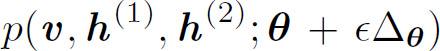
图4-1 感受野示意图
图4-2 卷积神经网络中卷积层+池化层的基本结构
图4-2中所示的是卷积神经网络中最基础的一种结构，输入首先经过卷积层得到响应，然后经过激活层做非线性变换。根据在第1章中的讨论，卷积本身也可以看做是一种线性变换，再考虑到偏置项，这种放射变换+非线性变换的操作其实就是一般神经网络中基本操作的一种特殊情况。所以相对来说更特殊一点的是激活层后面的池化层。接下来的小节就稍微深入一些来分别讨论卷积层和池化层。
4.1.2 卷积层和特征响应图
第2章已经讨论过了卷积，深度学习中使用的卷积和第2章讨论的卷积基本一致，唯一可能的区别是在不同的深度学习框架中，有的卷积实现就是卷积，而有的卷积实现是互相关。第2章中也讨论过了互相关，本质上和卷积并无不同只是顺序相反，并且不满足交换律。互相关的好处是卷积核在视觉上更加直观，理解起来也更容易，所以本书中演示卷积原理的例子都是用互相关。在深度学习中，我们把和卷积核做卷积之后得到的结果叫做特征响应图（feature map），从名字上理解，如果认为卷积核是代表着某种特征的话，那么卷积的结果就是输入对这种特征的响应。下面来看一个例子帮助直观理解，如图4-3所示。
图4-3中是一棵椰树的照片，其中椰树的叶子部分都是条状的纹理。我们用图像处理中常用来做边缘检测的滤波核函数Gabor核函数，按照不同朝向旋转后，和椰树的图像做卷积。得到的结果就是下面一排图像，为了方便展示，响应图像取了绝对值，白色是值比较大的部分，可以看到不同的卷积核得到的不同的响应。和Gabor核函数朝向一致或相近的叶子纹理，在特征响应图中都比较明显。这就模拟了Hubel试验中神经细胞对不同方向线条的响应现象，也是卷积操作最容易直观理解的一个功能。图4-3虽然用了最简单的卷积核，不过响应图有些杂乱，为加深理解，再来看一下图4-4所示的例子。
图4-3 图像对不同朝向的Gabor卷积核的响应图
图4-4 图像对稍微复杂的卷积核的响应
图4-4中上面一排的照片的画面中是5架战斗机，把其中一架战斗机的图像截取出来，减去均值作为卷积核。然后和原图像做卷积，得到结果如下面一排图像所示。为了方便画图，同样取了绝对值。可以很明显看到，每架战机所在的位置得到了一个极大响应。总结一下就是卷积核可以找到图像中和自身纹理最相似的部分， 并且相似度越高，得到的响应值越大。其实在第2章我们已经得到过类似的结论。
同时还注意到第一张画面中5架战机刚刚飞入画面，得到的响应图里五个极大值点也是对应5架战机的位置，第二张画面中5架战机飞到了画面更中央的位置，对应的5个极大值点也到了画面中央。卷积的这个性质有个挺正式的名称叫做同变性（equivariance）。简单来说就是，如果想象有个框可以在图像上“移动”，不管是先对整张图做卷积再移动框到指定位置获得响应图，还是先移动框到指定位置，再做卷积得到响应图，结果都一样。更白话一些就是卷积操作能够一定程度上保留位置信息，定性来看是个显而易见的结论。
4.1.3 参数共享
同变性的来源是卷积的另一个性质，在很多教科书中都会讲到，叫做参数共享（parameter sharing）。名字虽然取得像模像样，其实意思就是说卷积核在任何一个位置都是不变的。所以在卷积核所在的区域，所有像素和卷积核对应位置相乘求和的过程中，相当于都是和同一套权重相乘，这就是“共享”的意思，如图4-5所示。
图4-5 参数共享
图4-5中左上角是一幅灰度图像，图中是个字母z。图像的每个像素在计算机中用一个8位的无符号整数表示，取值范围是0～255。其中越亮的部分值越大，所以在计算机看来，图像是如图4-5中右边所示的一系列值。让这个图像和Laplacian算子做卷积，可以得到边缘强度的响应（Laplacian算子从定义是在求梯度的散度）。这里为了和右边的数值相对应，直接画出了响应图的大小，白色代表值越大，黑色代表值越小，0值是灰色。
回到正题来看参数共享，其实很简单就是图4-5中两个虚线框，虽然位置不同，像素值不同，但是对应位置乘的系数都是一样的，这个表示在图4-5中右下角的两个对应位置乘积的示意图里了。这个显而易见的性质之所以叫“共享”，是因为在一般的神经网络中，每层输出节点对应的参数是没有任何共享或是说关联的。比如把卷积前的每一个像素看作输入节点，卷积后得到的响应图的每一个像素看作是输出节点的话，在一般的全连接情况下，显然响应图中的每个节点对应的权重是可以不一样的。
4.1.4 稀疏连接
第2章已经讨论过用矩阵乘法来表示卷积，变换矩阵是一个块循环矩阵。这种矩阵的一个性质就是稀疏性，除非卷积核和图像差不多大，否则这种矩阵中绝大多数元素都为0。这种稀疏性也是卷积神经网络相比一般神经网络的一个巨大优点，稀疏性不仅让模型的拟合能力得到了限制，而且还极大降低了模型的计算量。我们通过一个简单的例子来理解一下稀疏连接的性质，如图4-6所示。
图4-6 卷积神经网络稀疏性示意图
图4-6中是一个4×4=16的二维输入和3×3=9的二维输出。图4-6中上图展示的全连接的情况，每条边代表一个权值，一共有16×9=144个权值。图4-6中下图代表的是卷积的情况，卷积的形式是valid，卷积核大小是2×2=4，一共是4×9=36个权值，只有全连接的1/4，从视觉上就一眼能看到下图中的边数目少了很多。为了方便作图演示这个例子用的是4×4输入，假设256×256=65536的输入，则输出的数目是255×255=65025，于是全连接情况下一共需要65536×65025=4261478400个权值；而卷积则只需要卷积核大小乘以输出数目也就是4×65025=260100个权值，一下子小了5个数量级。总之和全连接情况比起来，卷积需要的权值数目的比例就是卷积核大小和输入大小的比值，这还是最一般形式的卷积。在第2章讲过卷积核“滑动”是可以按照一定间隔的，这个间隔叫stride，如果考虑stride>1的情况，则需要的权值数目还会更少，连接更加稀疏。
4.1.5 多通道卷积
深度学习中无论是输入，还是中间产生的特征响应图，通常都不是单一的二维图，而是多个，每一张图称为一个通道（channel）。计算机的图像表示中，通道是一个非常基础的概念，比如一幅彩色图像通常是由红色（Red）、绿色（Green）和蓝色（Blue）三个通道构成，分别代表了一幅彩色图像中红、绿和蓝三种成分的值，这样的三通道图像就是RGB图像，是最常见的一种图像表示。
对于多通道的输入，处理非常简单，就是给每个通道用不同的卷积核做卷积，然后结果加一块就可以了。所以卷积层本身也成了多通道的，再加上每过一个卷积层通常会输出多个特征响应图，比如图4-3中的例子，3个Gabor卷积核对应了3张不同的响应图，也就是说输出也是多通道的。这样一来卷积层的权值就成了一个4维的张量。
对于一个一般的卷积层，我们考虑输入为x，其中每个通道为xi ，输出为y，其中每个通道为yj 的话，从x计算卷积得到多通道特征响应图y的公式如下：

其中wij 代表第j个特征响应图对应的卷积层中，与第i个输入通道进行卷积的卷积核，g是激活函数。
4.1.6 激活函数
讲到这里还没有讲过卷积层的激活函数，其实和全连接层没有大的区别，就是给卷积结果做个非线性变换，比如还是以图4-4中战机照片为例，之前为了方便作图，都是直接把得到的特征响应图取了绝对值，这个操作其实已经是一种非线性变换，可以看作是一种激活函数。不过在卷积神经网络中，更常用的是ReLU激活函数，也就是只取响应大于0的部分。具体到图4-4中的例子就是把小于0的响应都忽略掉，只保留相关程度大的信息，这种对比如图4-7所示。
图4-7 激活函数在卷积层中的作用
可以看到，和绝对值激活的结果比起来，ReLU的结果少了战机位置周围那些像雾一样笼罩的区域，这些区域正好是没有什么用的信息。如果更近一步在激活之前找到一个合适的偏置值，得到的结果就是图4-7中最下面的图像。背景中少量的噪音也没有了，剩下的只是5架战机的大概位置。
4.1.7 池化、不变性和感受野
池化（pooling）大概是卷积神经网络和普通神经网络最不同的地方，池化这个概念本身并不是一个具体的操作，而是代表着一种对统计信息的提取，从字面上看就是把东西放到一起的意思。比如，一堆样本不好处理，我们求一下样本的平均值来代表这些样本，这就是一种池化。又比如给了一堆数字，按照一定的区间画出这些数字分布的直方图，这也是一种池化。在卷积神经网络中，池化一般代表对特征响应图上的一个给定区域求出一个能代表这个区域特点的值，在深度学习中最常见的两种池化大概是最大值池化（max-pooling）和平均值池化（average-pooling），一起来看图4-8所示的例子理解一下。
图4-8 池化示意图
图4-8左边是一个卷积完之后得到的响应图的例子，是一个6×6的图。我们做一个2×2的池化，也就是按照2×2的大小将6×6的图划分为9个2×2的小区域，然后对每个小区域执行池化操作。最大值池化就是取这个小区域里的最大值作为结果，这个结果展示在图4-8右上图。平均值池化就是取这个小区域里的平均值，结果展示在图4-8右下图。
另外在第2章讲卷积的时候介绍过，卷积执行的时候可以按照一定的间隔来“划动采样”一个小区域，这个间隔叫做stride。池化操作这点和卷积类似，也可以按照一定的stride来进行。图4-8中的例子是stride=2，和池化区域的大小相同，是为了举例子可视化方便。实际的网络结构中，池化的stride常常要小于池化区域的边长，这样能使相邻池化区域有一定的重叠。最常见的情况是stride等于池化区域边长减1，这种间隔下池化一定程度上还起到了降采样的作用。
池化层最直接的作用是引入了不变性，比如最常用的最大值池化，因为取一片区域的最大值，所以这个最大值在该区域内无论在哪，最大值池化之后都是它，所以在池化区域大小内的任何位移都不会对结果产生影响，相当于对微小位移的不变性。如图4-9a中演示了这种性质，图4-9中的例子是对一个6×6的响应图按照3×3大小进行池化，最后会生成一个2×2的新的响应图。例子中演示了两种情况的响应图，第一种情况在3×3区域内最大值11出现的位置是左上角，第二种情况最大值11出现在中间一列最下面一行。因为最大值池化的操作就是取最大值，所以只要最大值11出现在这个3×3区域内，无论具体位置在哪，最后在池化后的响应图中都不会变，这就是对微小位移的不变性。从仿生的角度理解这个现象，池化相当于模拟了感受野，感受野内任何一点出现了响应，这个响应都能够传播到池化后的层里。下面还是通过图4-9来理解一下。
图4-9中画出了新的特征响应图里左上角对应的3×3区域，这个区域内对任何特征出现的一个值很大的响应，都会传播到2×2响应图中左上角的值里。这里画出的只是一个池化层，想象一下如果是更大的特征响应图，后面接了更多的卷积→激活→池化层的话，那么越是高的层里的一个节点，就会在低层中对应越大的一个感受野，如图4-9b所示。
图4-9 池化的位移不变性、池化和感受野的联系
4.1.8 分布式表征（Distributed Representation）
分布式表征并不是卷积神经网络特有的性质，而是神经网络最重要的性质之一。从名字并不容易看出来到底是什么意思，其实就是个特别的自然概念，举个例子来理解一下。比如人们去体检的时候，最基本的信息是要填写性别、年龄、身高和体重，如表4-1所示。
表4-1 体检中用身高体重年龄描述个人基本信息
其实这就可以看作是一种分布式的表征，描述一个人的个体的时候用到了多种属性，另外每种属性又用来描述多个不同的人的个体。这是一种多对多的描述关系，所以叫分布式（distributed）。表4-1所示的例子中，如果定义性别为男表示为1，女表示为0，则在这种表示形式下，每个个体可以被表达成一个向量，比如赵四就是（1，49，171，70），王五是（0，30，166，53）。因为都被表达成了定长的向量，在这个向量所在的空间里就可以比较两个个体的相似性。
这种多对多的形式，恰好和神经网络是一样的。比如全连接网络，每层的输入都会对所有输出产生影响，而每个输出也会收到所有输入的影响。分布式表征拥有强大的表达能力，比如考虑每个神经元把空间划分为两个区域，那么n个神经元就可以表达2n个不同的概念。和分布式表征相对的是局部表征（localist representation）或者叫符号式表征（symbolic representation），这些奇怪的名字的来源其实和第1章讲的符号派和连接派有一定联系。局部表征的意思就是一个概念用一个编码或样本来表达，最被人熟知的就是独热编码（one-hot）编码，比如下面表4-2就是对十进制数字0～7的编码，采用二进制编码就是分布式表征，采用独热编码就是局部表征。
表4-2 独热编码和二进制编码
可以看到分布式的二进制编码只用长度为3的编码就表达了8个概念，而独热编码则是多少个概念就需要多少长度的编码。神经网络既然就是分布式表征，那是否也能学到编码呢？答案是肯定的，事实上表4-2所示的例子就是神经网络学习编码的经典例子，在第2章里讲降维的时候也提到过，如图4-10所示。

图4-10 学习二进制编码的神经网络
通过输入独热编码的值，然后学习过程是让输出重现输入，最后会发现当某一个编码输入时，如果把隐藏层三个单元的激活值输出，激活值就能学习到不同的二进制编码。比如输入是10000000时，隐藏层可能是最上边的单元激活，其他两个单元的激活值为0；而输入是00000001时，隐藏层可能是三个单元都激活。总之中间隐藏层的单元是否激活看作0和1的话，学习到的编码就能够和输入一一对应。
这个例子学习的是编码，但更一般地我们认为神经网络能够学习到底层用于产生数据分布的根本因素。比如描述一个“穿着带花裙子的女孩”，把这看成一个样本的话，其有3个属性，即服装的颜色（带花）、服装的类型（裙子）、性别（女孩）。如果每个属性只考虑两个取值：带花/不带花、穿裙子/不穿裙子、女孩/不是女孩，那么和3位二进制的编码的例子就没区别了。
4.1.9 分布式表征和局部泛化
分布式表征在在泛化角度也和局部泛化有很大区别。下面通过图4-11所示的例子定性理解一下。
图4-11 分布式表征和局部表征的泛化示意
假设有一些描述一种动物特点的样本，图4-11中所示的二维平面是6个样本在某个特征空间上对应的点。图4-11中左边的情况在分布式表征下，根据描述的3种属性，即是否会飞、是否会游泳、是否有腿，可以用3种特征来将空间划分为8个区域。而在图4-11右图中则是局部泛化的思路，我们基于距离用最近邻的策略对空间进行了划分，一共可以划分为6个区域。可以看到两种策略下对空间的划分是非常不一样的。比如图4-11右上角的A点在分布式表征的划分中对应的是有腿会飞不会游泳的动物，而在最近邻划分中则是不会游泳且没腿的动物。又比如图4-11中B点则是有腿会飞会游泳的全能型动物，而在最近邻划分中则是不会飞的。
假如在这个二维空间中，样本已经是线性可分的，则显然分布式表征的划分会有更好的泛化。并且通过这个例子还能看到分布式表征的一个优点，即使样本中有信息缺失，或是样本数量并不足，也可以根据已有的属性学到不错的泛化能力。其根本在于各个不同的特征可以分别根据样本进行学习，比如图4-11左图的例子，每个特征都学到了一个对应的线性分类边界，组合在一起对3种属性对应的8种全部情况都能够在空间中找到对应的区域。而局部泛化因为是基于函数在空间中连续的假设，所以在样本量足够的情况下也许能很好泛化，而样本不足的时候则只能在当前的空间内基于现有样本做出类似插值的近似。
这里举出的是3个特征，每个特征二分类的例子。在实际应用中，特征的数目和每个特征对应的值域都会更加丰富。并且因为每个样本都会对应一个由相同特征维度表示的向量，这个向量中的距离比样本在原始空间中的距离会对相似性等性质有更好的度量（比如图4-11的例子），所以分布式表征的一个重要的意义相当于把样本从原始空间投影到一个更好的特征空间中。
4.1.10 分层表达
其实回顾一下，本节讲的内容和第3章讲的神经网络基础有很多类似。神经网络每经过一层（仿射变换+非线性变换），都把样本重新在一个新的空间内表示。这个表示可以再经过一层在另一个新的空间内表示。如果把每层中的一个维度都看作是分布式表征中的一个维度，则相当于数据在一层一层的传播中，都在不同层面的分布式特征下得到了重新表示。
这种分层的表达就是深度学习中的重要思想之一。其实这种思想和人的认知有很多相同的地方，比如在学习汉字的时候，先学习了笔画，才能通过笔画组合成汉字。学会了汉字就可以组成一些词语甚至成语，每个短的词语都能表达一个新的意思。进一步通过词语组成了句子，句子构成文章，文章构成更长的文章……通过一层一层组合出来的概念，能够表达许多特别复杂而丰富的新概念。
回到本书主题，在计算机中，我们理解一幅图像，也可以考虑按照如下的层次：像素→边缘→基本形状→纹理→复杂图案→更复杂图案……示意图如图4-12所示。
图4-12 图像的分层次表达示意图
如图4-12所示，最底层的表示自然是像素，通过像素能够组成一些简单线条，线条进一步能够构成纹理，纹理为基础则构成一些更复杂的结构，比如像轮子一样的图案，再进一步则构成了一个像汽车一样的图像。这种表达的方式，其实正是需要多层神经网络，也就是深度学习的一个基本动机。
4.1.11 卷积神经网络结构
我们把分层的思想结合前面两节讲的卷积层和池化层结构在一起，就是最常见的卷积神经网络结构了。当然这只是一个示意图，实际的卷积神经网络中，未必会有这么分明的特征分层，不过大致上特征的复杂程度确实是一层层变得更复杂，并且每一层的特征构成都是基于前一层特征。比如图4-13所示，画出了一个基于受限玻尔兹曼机的，3个卷积层的卷积神经网络每层学到的特征。
图4-13 卷积神经网络中，每一层学习到的特征的例子（Honglak Lee，ICML 09）
图片来源是2009年ICML的论文《Convolutional Deep Belief Networks for Scalable Unsupervised Learning of Hierarchical Representations》，是3个卷积层对人脸这个类别学习到的特征。虽然和流行的卷积神经网络的方式有些不同，不过表达的意思和图4-12中所示的是一回事，后层卷积学习到的特征都是基于前面层的组合。
4.2 LeNet——第一个卷积神经网络
LeNet就是前面提到的LeCun在1989年提出的网络结构，是卷积神经网络的鼻祖。
如今在各大深度学习框架中自带的用作Demo目的的LeNet结构，是简化改进版的LeNet-5，和原始的LeNet-5有一些微小的差别，比如把tanh激活函数换成了ReLU等，原版的LeNet-5可以参考LeCun的LeNet页面http://yann.lecun.com/exdb/lenet/ 。网络结构示意如图4-14所示。
图4-14 LeNet-5结构示意图
在30年前，这是一个比较深的网络了。LeNet-5和现有的conv→pool→ReLU的套路还不太一样，是conv1→pool1→conv2→pool2，然后才接上全连接层的结构。不过这种先卷积+池化，最后再过全连接层的基本思路就奠定了下来。
LeNet-5解决的是手写数字识别问题，输入的图像均为单通道灰度图，分辨率为28×28。说到这里就不得不提几乎是绝大多数深度学习入门者必用的Hello world级的数据：MNIST数据集。MNIST的全称是Mixed National Institute of Standards and Technology，是NIST数据集中的一个子集。MNIST一共70000个样本，其中60000个是训练集，10000个是测试集。这些样本都是数字已经置于图像中央的分辨率为28×28的灰度图，其中一半是书写比较工整的，另一半相对潦草，这两种书写在训练集和测试集中也分别各占一半。在MNIST上训练一个模型，目的是区分和识别手写的0～9，也就是一个十分类问题。LeNet-5这么简单的结构在MNIST上可以很轻松地达到98%以上的分类准确率。
回到正题，输入图像进入网络之后，第一层卷积核为5×5，stride为1，输出通道数为20，分辨率为24×24（24=28-5+1）的特征响应图（图4-14中的箭头旁边的数字表示：通道数×图像高度×图像宽度）。然后经过一个没有重叠的区域大小为2×2的池化层，到这响应图的分辨率降低到12×12。然后这样的操作又重复一遍就是conv2和pool2，只是通道数变为50，响应图的分辨率变成了4×4。最后就是全连接（fully connected，fc）两层了，其中第一层的单元数为500。第二层输出分类个数为10，然后接Softmax，输出最终结果。
Tips： 这个结构在后面章节的入门例子中会来训练MNIST。
4.3 新起点——AlexNet
AlexNet在第1章已经提过，关于这个经典网络的辉煌战绩就不再介绍了。AlexNet对几年前的卷积神经网络结构影响很深，无论是后来2013年的冠军结构ZF-Net，还是名声也很响但屈居老二的VGGNet，其背后其实都是AlexNet。本节来仔细了解一下这个经典的卷积神经网络结构。
4.3.1 网络结构
AlexNet针对的是ILSVRC的分类问题，输入图片是256×256的三通道彩色图片。为了增强泛化能力，训练的时候Alex采用的数据增加手段中包含随机位置裁剪，具体就是在256×256的图片中，随机产生位置裁剪一块224×224的子区域，如图4-15所示。
所以输入的维度是3×224×224。整个网络的结构如图4-16所示，因为层数和参数比LeNet多了好多，这里就不详细一层层讲解了，只讲一下前两层来了解一下如何通过卷积参数计算响应图的大小。第一层卷积和LeNet中卷积唯一的不同是stride变成了4，不过在第2章中我们已经了解了stride的概念，所以计算卷积后的响应图边长应该就是先算卷积能有效计算的边长为（224-11）/4=53.25。这意味着如果第一个核的卷积中心位置在第一个像素上的话，最后一个卷积核并不在最后一个像素上。对这种情况比较通用的做法是在最后一个像素位置上再求一次响应，作为响应图的最后一个像素。所以是，这和文章里的维度对不上。有不少读文章细致的人在读Alex的论文时都为此感到困惑，这到现在还是个未解之谜，斯坦福的CS231n课猜测是Alex用了边缘零填充，又或是其实他用了更大的输入训练网络，只不过论文上写错了。总之，这是一个无关紧要但又让人困惑的细节，本书就不纠结于此，按照Alex论文（《ImageNet Classification with Deep Convolutional Neural Networks》）中的结构和数据为准，计算响应图大小的方法就是这样。
图4-15 随机裁剪
对于pooling层也可以用同样的办法，如果加了零填充，也就是padding，那么计算的时候等效边长就是原边长加上2倍的padding大小。比如从conv4到conv5的时候，卷积大小为3×3，padding为1，stride为1所以无须考虑非整数的问题，因此响应图大小是13+2×1-3+1=13，也就是卷积之后大小无变化。
AlexNet还有个特殊的地方是卷积的时候采用了分组的方法，在图4-16中表现为conv2和conv4→conv5的两个分叉。这样做主要是因为当时Alex的显卡不够强大（GTX580），不过有两块，为了减少计算量同时方便并行，所以采用了分组计算，对于性能而言没什么特殊意义。除非一定要分通道进行卷积，否则现在几乎已经没人用这种方法了。
另外需要提一下的是在dropout的使用，是在fc6和fc7两层。
图4-16 AlexNet结构示意图
4.3.2 局部响应归一化（Local Response Normalization，LRN）
AlexNet除了更深的网络结构，和之前的大部分卷积神经网络比起来较独特的一些改进主要是：ReLU、Dropout和局部响应归一化。ReLU和Dropout已经在第3章中讨论过，本节介绍一下局部响应归一化。
局部响应归一化是在某一层得到了多通道的响应图后，对响应图上某一位置和临近通道的值按照如下公式做归一化：
其中 是特征响应图第i个通道上在（x，y）位置上的值，k、α和β均为超参数。需要注意的是，n为局部通道的总数，比如AlexNet中，n=5，所以n/2取整为2。如果定义下标从0开始，i+n/2超过了通道总数N-1则截止在N-1，如果i-n/2小于0则截止在0。局部响应归一化模拟的是动物神经中的横向抑制效应，从公式4-2中也可以看出，如果在该位置，该通道和临近通道的绝对值都比较大的话，归一化之后值会有变得更小的趋势。另外需要提一句，在深度学习中的通道之间，邻近的概念和神经元的横向临近是完全不一样的，因为通道之间的临近仅仅是根据该通道对应的下标定义的。
在Alex的论文中，局部响应归一化还是对指标提升有帮助的，不过随着之后更深结构的提出，局部响应归一化被认为并没有什么作用，比如VGG组的《Very Deep Convolutional Networks for Large-Scale Image Recognition》发现在11层的网络中局部响应归一化就已经起了副作用。
另外，在AlexNet中，局部响应归一化层在池化层之前，这在计算上并不经济。Caffe自带的模型中有个Caffenet模型把这两层顺序换了一下，算是AlexNet的改进版。
4.4 更深的网络——GoogLeNet
GoogLeNet由Google的Christian Szegedy发表在CVPR2015的论文《Going Deeper with Convolutions》中。作为深度卷积神经网络发展中一个重要的结构，不仅仅因为GoogLeNet把层数推进到了22层并且接近了人类在ImageNet数据上的识别水平，也因为GoogLeNet跳出了AlexNet的基本结构，创新地提出了构建网络的单元Inception模块。
4.4.1 1×1卷积和Network In Network
在正式了解GoogLeNet之前，先来了解一种比较特殊的卷积方式1×1卷积。这种卷积方式在深度学习中的讨论最早见于论文《Network In Network》（NIN），作者是新加坡国立大学的深度学习“巨头”颜水成教授的研究组。顾名思义，1×1卷积就是卷积核大小为1。所以很多人对这种卷积的第一反应是：不就是给特征响应图的每个值都乘了同一个系数吗？如果一通道输入，一通道输出的情况下的确如此，但多通道输入，多通道输出的情况下就不同了。下面来看图4-17所示的例子。
图4-17 1×1卷积示意图
图4-17中画出的是一组m通道的特征响应图通过1×1卷积得到n通道的新的n通道的特征响应示意图。我们来关注特征图上某一个位置的像素，或者说是同一位置的一组m个像素，经过1×1卷积后在对应位置会得到一组新的n个像素，就是图4-17下半部分的示意图。所以如果只看特征图上指定位置的像素的话，其实就是一个全连接层，我们用xi表示第i个输入通道上指定位置的像素值，x’j表示第j个输出通道对应位置的像素值，则公式如下：
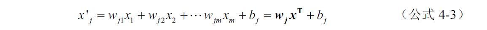
其中x=（x1 ，x2 ，…，xm ）是把所有对应位置的像素看作是一个向量，进一步考虑所有输出通道对应位置像素的向量：
因为卷积核是对每位置像素进行同样的操作，所以1×1卷积相当于对所有的输入特征响应图做了一次线性组合，然后输出新的一组特征响应图。特别是如果m>n的情况下，通过训练之后相当于降维，这样再接新的卷积层就只需要在更少的n个通道上做卷积，节省了计算资源。进一步把n通道上的激活函数也考虑进来，就成了一个感知机了。再进一步再来一次1×1卷积+激活函数，就成了一个对响应图指定位置，跨通道的一组像素作为输入的一个神经网络。这就是最基本的Network In Network，网络里边还有网络。
NIN论文里还提出了另一种被广泛应用的方法叫做全局平均池化（Global Average Pooling），就是对最后一层卷积的响应图，每个通道求整个响应图的均值，这个就是全局池化。然后再接一层全连接，因为全局池化后的值相当于一像素，所以最后的全连接其实就成了一个加权相加的操作。这种结构比起直接的全连接更直观，并且泛化性更好，在第10章将结合一个实例对这种结构进行更多介绍。
4.4.2 Inception结构
这个Inception和盗梦空间关系不大。Inception模块的基本思想是源于前面提过的NIN，如果把卷积+激活 看作是一种广义线性模型（Generalized Linear Model），那么从这个角度，既然可以用广义线性模型抽取特征，何不用个更好的模型呢？那干脆就像4.4.1节末尾提到那样，用个小型的神经网络。NIN并不是本书要详细讨论的内容，有兴趣的读者可以自行找到出处论文进行了解。总之意思就是用更有效的结构代替单纯的卷积+激活 操作。Inception模块的结构如图4-18所示。
因为所有卷积的stride都是1，所以在图4-18中没有特意标明，另外对于3×3卷积、5×5卷积和3×3池化，为了保持特征响应图大小一致，都用了零填充（3×3的填充为1，5×5的填充为2）。最后每个卷积层后面都立刻接了个ReLU层，在图4-18中没有单独画出，而是和卷积层放一起。在输出前有个叫concatenate的层，直译过来就是“并置”。这个操作的意思是把4组不同类型但是大小相同的特征响应图一张张“并排叠”一起，形成新的一组特征响应图。
图4-18 Inception模块示意图
所以通过图4-18可以看到，Inception里面主要做了两件事：第一件事是通过3×3池化，以及1×1、3×3和5×5这3种不同尺度的卷积核，一共4种方式对输入的特征响应图做了特征抽取。第二件事是为了降低计算量，同时让信息通过更少的连接传递以达到更加稀疏的特性，采用1×1卷积核进行降维。图4-18中每条箭头边旁的数字是以GoogLeNet最低层的Inception模块为例的通道数。可以看到，对于计算量略大的3×3卷积，把192通道的特征响应图降到了原来的一半96通道，而对于计算量更大的5×5卷积，则降到了更少，只有16通道。
4.4.3 网络结构
GoogLeNet的结构如图4-19所示，对于卷积和池化层，没有写出stride和pad的话则说明stride为默认值1，以及没有零填充。限于篇幅，Inception的内部结构就不再画出，Inception模块内部的通道数传递写在了示意图4-19中，比如c1后面跟的是输出的通道数，c3和c5跟的是1×1卷积降维后的通道数和最后输出的通道数，比如c5：16->32标明先由1×1卷积产生16个通道，再做5×5卷积得到32通道的特征响应图。p3是指3×3池化后输出的通道数。计算层数的时候只按照有需要训练的参数的算作一层，则每个Inception里有两层，一共有9个Inception模块，所以是18层，其他层里则是三个卷积层加Softmax前的全连接层，一共22层。
图4-19 GoogLeNet结构示意图
首先注意到的是结构中出来了3个loss单元，也就是训练中计算代价函数的对应单元。这样做的目的是为了帮助网络的收敛。虽然ReLU单元能够一定程度解决梯度消失问题，但是并不能完全解决深层网络难以训练的问题，这个在第3章中也有过讨论。所以越是远离最后输出的层，就会不如靠近输出的层训练得好。在中间层加入辅助的计算loss的单元，目的是计算损失的时候让低层的特征也有很好的区分能力，从而让网络更好地被训练，而且低层学到了好的特征也能加速整个网络的收敛。在论文中，这两个辅助的loss（loss1、loss2）的计算被乘以系数0.3，然后和最后的loss（loss3）相加作为最终的损失函数来训练网络。
其次值得一提的是，最后一个Inception模块输出7×7大小的832通道的特征响应图后，并没有像AlexNet那样降维然后过两个全连接层，而是直接对每个特征响应图求了平均值，得到了一个1024维的向量，然后再过一个全连接得到和输出数目对应的1000维向量用于分类，从某种程度上讲，这算是舍弃了经典的最后一/二层全连接的做法。第一节中也讨论过，全连接因为是一种密集的连接，所以和卷积层比起来参数量巨大，往往占据了一个网络中大多数的参数，并且还有过拟合的倾向。通过这种方式去掉全连接后，不仅参数的数量减小了很多，而且模型准确率还有提升（论文中是0.6%）。和AlexNet一比这种趋势更加明显，AlexNet的参数有6000多万（其中全连接层的参数占了约94%），GoogLeNet的参数总量不到700万。
4.4.4 批规一化（Batch Normalization，BN）
其实批规一化和第一版的GoogLeNet没什么联系，不过作为一种更有效训练深层网络的常见手段，并且作者就是GoogLeNet的作者Christian Szegedy，所以放到本节简单讲一讲。
从字面上看Batch Normalization就是要对每一批数据进行归一化，确实如此，对于训练中某一个batch的数据{x1 ，x2 ，…，xn
}，注意这个数据可以是输入也可以是网络中间某一层的输出，BN的前3步如下：
到这步为止就是一个标准的数据减均值除方差的归一化流程。这样的归一化有什么作用呢？来看图4-20a定性理解一下。
图4-20 批归一化的定性理解
图4-20中左边是没有任何处理的输入数据，曲线是激活函数的曲线，比如Sigmoid。如果数据如图4-20所示在梯度很小的区域，那么学习速率就会很慢甚至陷入长时间的停滞。减去均值再除以方差之后，数据被移到了中心区域，就是图4-20a中右边的情况。对于大多数激活函数而言，这个区域的梯度都是最大的或是有梯度的（比如ReLU），这可以看作是一种对抗梯度消失的手段。对于一层是如此，如果对于每一层数据都这么操作，那么数据的分布就总是在随输入变化敏感的区域，相当于不用考虑数据分布变来变去了，这样训练起来效率就高多了。不过到这里问题并没有结束，因为减均值除方差未必是最好的分布。比如数据本身就很不对称，或者激活函数未必是对方差为1的数据有最好的效果，比如Sigmoid激活函数，在-1～1之间的梯度变化不大，那么这样非线性变换的作用有可能就不能很好体现。所以，在前面三步之后加入最后一步完成真正的Batch Normalization。
其中γ和β是两个需要学习的参数，所以其实BN的本质就是利用优化变一下方差大小和均值的位置，示意图如图4-20b所示。因为需要统计方差和均值，而这两个值是在每个batch的数据上计算的，所以叫做Batch Normalization。当然训练模型时，数据分布的均值和方差应该尽量贴近所有数据的分布，所以在训练过程中记录大量数据的均值和方差，得到整个训练样本的均值和方差期望值，训练结束后作为最后使用的均值和方差。
注意前面写的都是对于一般的情况，对于卷积神经网络有些许不同。因为卷积神经网络的特征是对应到一整张特征响应图的，所以做BN的时候也是以响应图为单位而不是按照各个维度。比如在某一层，batch大小为m，响应图大小为w×h，则做BN的数据量为m×w×h。
4.5 更深的网络——ResNet
2015年时，还在MSRA的何恺明祭出ResNet这个“大杀器”，在ISLVRC和COCO上“横扫”了所有对手，可以说是顶级高手用必杀技进行了一场华丽的演出。除了耀眼的成绩，更重要的意义是启发了对神经网络结构更多的思考。
4.5.1 困难的深层网络训练：退化问题
关于深层网络的训练难题，第3章其实已经讲了不少，在ResNet的论文里，何恺明要解决的是训练网络的另一个角度的问题：退化问题。退化问题简单来说就是，随着层数的加深到一定程度之后，越深的网络反而效果越差，并且并不是因为更深的网络造成了过拟合，也未必是因为梯度传播的衰减，因为已经有很多行之有效的方法来避免这个问题（关于这一点，原文并没能够很好论证，其实梯度的衰减仍然存在）。而随着网络层数的加深，训练效果真的变差了。
何恺明用了一个例子来说明：考虑一个训练好的网络结构，如果加深层数的时候，不是单纯地堆叠更多的层，而是堆上去一层使得堆叠后的输出和堆叠前的输出相同，也就是单位映射（identity mapping），然后再继续训练。比方说用单位矩阵初始化，从卷积考虑的话就是分通道的1×1卷积核，初始化值为1。这种情况下，按理说训练得到的结果不应该更差，因为在训练开始前已经达到了加层数之前的水平作为初始了，然而实验结果表明在网络层数达到一定深度后，结果会变得更差，这就是退化问题。
4.5.2 残差单元
首先回顾下残差指的是预测值和观测值之间的差异，很多人容易把残差和误差混淆，误差是指观测值和真实值的差异。回到正题，为了解决退化问题，论文中提出了残差模块。大体思路是，既然单位映射在梯度下降框架下不起作用，那么索性直接把输入传到输出端，“强行”作为单位映射的部分，让可学习的网络作为另一部分，这就是残差学习的模块，如图4-21a所示。
可以看到，数据经过了两条路线，一条是和一般网络类似的经过两个卷积层再传递到输出，另一条则是实现单位映射的直接连接的路线，这个路线被称为shortcut。这样做之后，如果像前面所说那样，前面层的参数已经到了一个很好的水平，那么再基本构建模块时，输入的信息通过shortcut得以一定程度的保留。
通过实验，这个模块很好地应对了退化问题，并且让可有效训练的网络层数更进一步。至于为什么有效，论文中的解释是，如果把网络中一个模块的输入输出关系看作是y=H（x），那么直接通过梯度方法求H（x）就会面临提到的退化问题。所以作者假设通过这种接入shortcut的方法，那么可变参数部分的优化目标就不再是H（x），如图4-21a虚线框部分所示，用F（x）来代表需要优化的部分的话，则H（x）=F（x）+x，也就是F（x）=H（x）-x。因为在单位映射的假设中y=x就相当于观测值，所以F（x）就对应着残差，因而叫残差网络。
图4-21 ResNet的基本构建单元
图4-21a是一个很原始的模块，实际使用的时候，残差模块和Inception模块一样希望能够降低计算消耗。所以论文中又进一步提出了“瓶颈（BottleNeck）”模块，思路和Inception一样，就是先通过1×1卷积降维，然后正常是3×3卷积层，最后再1×1卷积将维度和shortcut对应上，这就是图4-21b的模块，也是最终被用到2015年ILSVRC中并获得第一的结构。
再后来，何恺明对残差网络进行了改进，主要是把ReLU给移到了conv层之前，相应地shortcut不再经过ReLU，相当于输入输出直连。并且论文中对ReLU，BN和卷积层的顺序做了实验，最后确定了改进后的残差网络基本构造模块，如图4-21c所示。因为对于每个单元，激活函数到了仿射变换之前，所以论文中将这种改进叫做预激活残差单元（pre-activation residual unit）。
论文中通过实验+数据的方式来比较各种层顺序的优劣，但其实这种比较很难说清楚是否网络提升的真正原因，因为换掉ReLU层的顺序必然会影响shortcut是否直连。最根本的改进来源应该说还是因为shortcut的直连。比如考虑从多个堆叠的预激活残差单元，对于第i个单元，令xi为输入，xi+1 为输出，则有：

把第i+2个单元也考虑进来，则有：
更一般地，基于公式4-8，对xi+n ，则有：
通过第3章的讲解知道，直接堆叠的网络相当于一层层地做放射变换→非线性变换，而仿射变换这一步主要就是矩阵乘法。所以总体来说直接堆叠的网络相当于是乘法性质的计算。而在ResNet中，相对于直接堆叠的层数的网络，因为shortcut的出现，计算的性质从乘法变成了加法，计算变得更加简单稳定。当然这些是从前向计算的角度，从后向传播的角度，如果代价函数用J表示，则有：
也就是说，无论是哪层，更高层的梯度成分 都可以直接传过去。这样一来梯度的衰减得到进一步抑制，并且加法性的计算让训练的稳定性和容易性也得到了提高，所以可训练网络的层数也大大增加。基于这种单元，作者构建了1001层的残差网络，网络的描述可以在何恺明的github上见到地址为 https://github.com/KaimingHe/resnet-1k-layers 。
4.5.3 深度残差网络
因为ResNet确实层数太多，本书就不画出来了。比较经典的ResNet一般是3种结构：即50层、101层和152层。其中152层的网络就是在2015年ISLVRC种大放异彩的结构。具体结构参见何恺明的论文原文《Deep Residual Learning for Image Recognition》，地址为https://arxiv.org/abs/1512.03385 ，以及何恺明的github主页上开源的结构描述https://github.com/KaimingHe/deep-residual-networks 。
另外值得一提的是，其实残差网络之前已经有训练到100层以上的网络，是名字很难拼写的Jürgen“大神”组发表的《Highway Networks》，ResNet中的残差单元，就是Highway Networks中基本单元的一个特例，并且是一种更容易优化计算量更小的特例。Highway Networks的细节就不说了，有兴趣的读者可以自行查阅。总之残差网络算是非常巧妙的，从单位映射问题到优化残差的角度，给出了Highway Networks的另一个种解释，尽管这个解释并不是很直观易懂。
4.5.4 从集成的角度看待ResNet
ResNet虽然强大，但是残差的解释未必触到了本质。是否网络真的是越深越好呢？针对可计算性的改善是否是一个正确的方向呢？于是对于残差网络结构的分析很快就出现了。这些研究中，最有代表性也是对残差网络理解最直观的，是康奈尔（Cornell）大学的Serge Belongie教授研究组发表的从模型集成角度看待残差网络的文章《Residual Networks Behave Like Ensembles of Relatively Shallow Networks》。
说到这里不由得讲讲Serge Belongie的传奇生涯，其学术背景“顶天”，本科毕业于加州理工学院，然后在加州大学伯克利分校拿到博士学位，学术能力超群。Serge Belongie毕业后去了加州大学圣迭戈分校执教，从2014年开始到了康奈尔大学担任教授，美国学术界的各种奖项如NSF CAREER、MIT科技评论“35岁以下创新奖”等也都轻松拿到手。在学术的主线任务上做到这样已经相当厉害了，这位“大神”在各种支线任务上也做得有声有色。先是商业方面，毕业之后先后创立了4家公司，其中3家已被收购，也算赚得“盆满钵满”。其在音乐方面也颇有造诣，精通吉他，30岁之后组建了摇滚乐队SO3，并担任主唱以及贝斯手。另外，其语言天赋也很好，据说其在巴西为期两个月访学期间，为了展现自己的聪明才智，报了学习班，零基础开始学葡萄牙语，最后真的学会了。
回到正题，为什么残差网是一种集成呢？来看图4-22所示。
图4-22 展开一个残差网络的示意
图4-22是把一个三个残差单元串联的网络展开的示意图，每个单元都有两条路径，所以很自然地，这样一个例子展开后有8条路径。比起拟合残差的解释，这种展开就直观多了。整个网络就像是一个完全二叉树结构，每一个高层节点其实都是由低层节点路径构成的一棵子树，因为路径非常多所以等效于由底层路径构成的网络的一种集成。为了验证这个思路是否正确，用两种方法来测试ResNet是否会发生和集成相似的性质，一个是随机去掉某些单元，还有就是随机交换某些单元对。对于集成方法来说，这种结果中的“投票”特性，网络的性能会随着这种对网络的“破坏”程度平滑变化，而路径单一的网络则不然，去掉某层的这种“破坏”往往直接就让网络的预测结果随机了。实验的结果符合预期，ResNet对于这两种手段的破坏，表现出的特性和集成一致。
在Serge Belongie的论文中，还发现如果以卷积层作为有效路径层数的话，随着层数增加，梯度还是在衰减的。所以单纯从残差拟合解决单位映射问题的角度来解释更深层网络可以被有效训练，并不是那么站得住脚的。总之，从集成角度对ResNet的理解不仅仅是一种新的角度，也是更直观的理解。同时也发现另一个事实，就是ResNet并没有那么深层。对于最经典的残差单元串联结构，如果用卷积部分来计算层数的话，对于n个单元串联的网络，路径上出现卷积部分的概率是个二项分布，也就是说平均来说路径上的平均有效层数是最高层数的一半。在第一版ResNet的论文中曾对比34层的ResNet和18层的传统结构，ResNet胜出，而其实平均有效层数还不到18层，况且还是第一版shortcut路径上带ReLU的版本。在ResNet基础上，有人还开始研究更胖而不是更深的网络（《wide residual network》，by Sergey Zagoruyko，et，al.），那么难道不是更深的网络带来了更好的性能吗？深度学习诞生至今，追求更深的网络一直是个大趋势，而更深的网络是否真的意味着更好呢？
4.5.5 结构更复杂的网络
4.5.3小节末的问题应该说还在研究当中，并且相关的研究越来越多。从2012年AlexNet一骑绝尘至今，已经有5年，纵观各种和深度学习相关的论文，大多数还是利用网络结合特定问题的研究，因为非常容易出成果。但随着这种类型研究爆发式的增长渐渐趋稳，一些不容易立刻产出，但是更低层的方向开始吸引着更多的研究。比如前面章节中提到过的理论相关的问题，深度学习的优化是否真的非凸，还有泛化能力到底能不能有好的理论支撑，这是一方面。而另一方面则是朝着对网络结构探索和本质的探讨，比如从Highway Networks到ResNet再到从集成角度看ResNet的相关研究。有一个趋势就是，信息流的传递趋向于更加多样化。
本章4.1节中我们就提到过，生物的神经网络中，信息传递远不是一层层传下去这么简单，其连接的方式和稠密程度比现在的人工神经网络复杂得多。比如视觉神经系统中，V2层和后面的层都有连接。如果从模拟这种复杂性的角度来看，Highway Networks和ResNet就是一个很好的尝试。在ResNet开了头之后，尝试更复杂信息传递的网络改进也越来越多。比如2016年夏，一个非常有意思的研究是芝加哥大学发表的分形网络《FractalNet：Ultra-Deep Neural Networks without Residuals》。还有发表在2016年秋，在ResNet基础上把shortcut从跨层串联，变成每个节点和多个节点用shortcut相连的《Densely Connected Convolutional Networks》，这个网络在CIFAR上的指标全面超越ResNet。2016年ICLR的workshop上，旧金山加州大学的一个小组在短文章《ResNet in ResNet：Generalizing Residual Architectures》中提出了ResNet in ResNet结构，让每个基础的残差模块中的信息流传递方式都比起标准残差模块有了量级的增加。2016年底，MSRA的研究小组将ResNet中的Ensemble思想进一步加强，在论文《On the Connection of Deep Fusion to Ensembling》中提出了Merge-n-Run的结构，让更浅层的ResNet也能达到和更深的标准ResNet同等的效果。
早在神经网络还不深的时代，受到生物神经网络启发，就已经涌现了很多关于神经网络结构变化的研究，如今深度学习把神经网络的可用性大幅提高，相信未来会有更多类似的研究成果出现。
第2篇 实例精讲
·第5章 Python基础
·第6章 OpenCV基础
·第7章 Hello World！
·第8章 最简单的图片分类——手写数字识别
·第9章 利用Caffe做回归
·第10章 迁移学习和模型微调
·第11章 目标检测
·第12章 度量学习
·第13章 图像风格迁移
第5章 Python基础
Life is short，you need Python
人生苦短，你需要用Python
——Bruce Eckel
5.1 Python简介
本节将介绍Python的最基本语法，以及一些和深度学习还有计算机视觉最相关的基本使用。
5.1.1 Python简史
Python是一门解释型的高级编程语言，特点是简单明确。Python作者是荷兰人Guido van Rossum，1982年他获得数学和计算机硕士学位后，在荷兰数学与计算科学研究所（Centrum Wiskunde&Informatica，CWI）谋了份差事。在CWI期间，Guido参与到了一门叫做ABC的语言开发工作中。ABC是一门教学语言，所以有简单、可读性好、语法更接近自然语言等特点。在那个C语言一统天下的年代，ABC就是一股简单的清流。不过毕竟是门教学语言，最后没有流行起来，但这段经历影响了Guido。1989年的圣诞假期，Guido决定设计一门简单易用的新语言，要介于C和Shell之间，同时吸取ABC语法中的优点，并用自己喜欢的一部喜剧电视剧来命名这门语言《Monty Python’s Flying Circus》。
1991年，第一版基于C实现的Python编译器诞生，因为简单、拓展性好，Python很快就在Guido的同事中大受欢迎，不久Python的核心开发人员就从Guido一人变成了一个小团队。后来随着互联网时代的到来，开源及社区合作的方式蓬勃发展，Python也借此上了发展的快车道。因为Python非常容易拓展，在不同领域的开发者贡献下，许多受欢迎的功能和特征被开发出来，渐渐形成了各种各样的库，其中一部分被加入到Python的标准库中，这让本来就不需要过多思考底层细节的Python变得更加强大好用。在不过多考虑执行效率的前提下，使用Python进行开发的周期相比传统的C/C++甚至Java等语言都大大缩短，代码量也大幅降低，所以出bug的可能性也小了很多。因此有了语言专家Bruce Eckel的那句名言：Life is short，you need Python。后来这句话的中文版“人生苦短，我用Python”被Guido印在了T恤上。发展至今，Python渐渐成了最流行的语言之一，在编程语言排行榜TOBIE中常年占据前5的位置。另外随着Python的用户群越来越壮大，慢慢在本身特点上发展出了自己的哲学，叫做Python的禅（The Zen of Python）。遵循Python哲学的做法叫做很Python（Pythonic），具体参见https://www.python.org/dev/peps/pep-0020/ 。
或者在Python中执行
代码详情
1 | >> import this |
Python拥有很好的扩充性，可以非常轻松地用其他语言编写模块供调用，用Python编写的模块也可以通过各种方式轻松被其他语言调用。所以一种常见的Python使用方式是，底层复杂且对效率要求高的模块用C/C++等语言实现，顶层调用的API用Python封装，这样可以通过简单的语法实现顶层逻辑，故而Python又被称为“胶水语言”。这种特性的好处是无须花费很多时间在编程实现上，更多的时间可以专注于思考问题的逻辑。尤其是对做算法和深度学习的从业人员，这种方式是非常理想的，所以现今的深度学习框架中，除了MATLAB或是Deeplearning4j这种给Java用的框架，其他框架基本上要么官方接口就是Python，要么支持Python接口。
5.1.2 安装和使用Python
Python有两大版本，考虑到用户群数量和库的各种框架的兼容性，本书以Python 2（2.7）为准，语法尽量考虑和Python 3的兼容。
UNIX/Linux下的Python基本都是系统自带的，一般默认为Python 2，使用时在终端直接输入python就能进入Python解释器界面：
在解释器下就已经可以进行最基本的编程了，例如：
如写程序的话还是需要保存为文件再执行，比如写下面语句并且保存为helloworld.py：
安装更多的python库一般有两种方法，第一是用系统的软件包管理，以Ubuntu 16.04LTS为例，比如想要安装NumPy库（后面会介绍这个库），软件包的名字就是python-numpy，所以在终端中输入
1 | >> sudo apt install python-numpy |
Python自己也带了包管理器叫做pip，使用如下
1 | >> pip install numpy |
安装和深度学习相关的框架时，一般来说推荐使用系统自带的包管理，出现版本错误的可能性低一些。另外也可以使用一些提前配置好很多第三方库的Python包，这些包通常已经包含了深度学习框架中绝大多数的依赖库，比如最常用的是Anaconda，地址为https://www.continuum.io/downloads 。
Windows下的Python安装简单一些，从官方网站下载相应的安装程序就可以了，当然也有更方便的已经包含了很全的第三方库的选择WinPython，地址为http://winpython.github.io/ ，并且是绿色的，直接执行即可。
5.2 Python基本语法
There should be one—and preferably only one—obvious way to do it.
对于一个特定的问题，应该只用最好的一种方法来解决。
——Tim Peters
5.2.1 基本数据类型和运算
1.基本数据类型
Python中最基本的数据类型包括整型、浮点数、布尔值和字符串。类型是不需要声明的，比如
代码详情
1 | a = 1 # 整数 |
其中#是行内注释的意思。最后一个None是NoneType，注意不是0。在Python中利用type（）函数可以查看一个变量的类型
代码详情
1 | type(a) # <type 'int'> |
注释中是执行type（）函数后的输出结果，可以看到None是单独的一种类型NoneType。在很多API中，如果执行失败就会返回None。
2.变量和引用
Python中基本变量的赋值一般建立的是个引用，比如下面的语句
代码详情
1 | a = 1 |
a赋值为1后，b=a执行时并不会将a的值复制一遍，然后赋给b，而是简单地为a所指的值，也就是1建立了一个引用，相当于a和b都是指向包含1这个值的内存的指针。所以c=1执行的也是个引用建立，这3个变量其实是3个引用，指向同一个值。这个逻辑虽然简单但也常易混淆，这没关系，Python内置了id（）函数，可以返回一个对象的地址，用id（）函数可以让我们知道每个变量指向的是不是同一个值
代码详情
1 | id(a) # 35556792L |
注释中表示的仍是执行后的结果。如果这时候接下面两个语句
代码详情
1 | b = 2 # b的引用到新的一个变量上 |
可以看到b引用到了另一个变量上。
3.运算符
Python中数值的基本运算和C差不多，字符串的运算更方便，下面是常见的例子。
代码详情
1 | a = 2 |
需要注意的几点是：第一点，字符串用双引号和单引号都可以，区别主要是单引号字符串中如果出现单引号字符则需要用转义符，双引号也是一样，所以在单引号字符串中使用双引号，或者双引号字符串中使用单引号就会比较方便。另外3个双引号或者3个单引号围起来的也是字符串，因为换行方便，更多用于文档。
第二点，Python 2中两个数值相除会根据数值类型判断是否整数除法，Python 3中则都按照浮点数。想要在Python 2中也执行Python 3中的除法，只要执行下面语句
代码详情
1 | from __future__ import division # 使用Python 3中的除法 |
第三点，字符串前加r表示字符串内容严格按照输入的样子，好处是不用转义符了，非常方便。
Python中的布尔值和逻辑的运算非常直接，例如
代码详情
1 | a = True |
4.==，！=和is
Python中判断是否相等或者不等的语法和C语言一样，另外在Python中也常常见到is操作符，两者的区别在于==和！=比较引用指向的内存中的内容，而is判断两个变量是否指向一个地址，看下面的代码例子
代码详情
1 | a = 1 |
所以一定要分清要比较的对象应该用哪种方式，对于一些特殊的情况，比如None，本着Pythonic的原则，最好用is None / is not None。
5.注意关键字
Python中，万物皆对象。不过这并不是本节要探讨的话题，这里想说的是一定要注意关键字，因为所有东西都是对象，所以一个简简单单的赋值操作就可以把系统内置的函数给变成一个普通变量，下面来看例子
代码详情
1 | id(type) # 506070640L |
注意，print是个很特殊的存在，在Python 3中是按照函数用法用，而在Python 2中却是命令式的语句，最早print的用法其实是这样的
1 | print "Hello world!" |
这样用主要是受到ABC语法的影响，但这个用法并不Pythonic，后来加入了print函数，为了兼容允许两种用法并存。所以单纯给print赋值是不灵的，在Python 2中使用Python 3中的一些特性都是用from future import来实现。
6.模块导入
因为提到了对象名覆盖和import，所以这里简单讲一下。import是利用Python中各种强大库的基础，比如要计算cos（π）的值，可以有下面4种方式
代码详情
1 | # 直接导入Python的内置基础数学库 |
一般来说最后一种方式不是很推荐，因为不知道import导入的名字里是否和现有对象名有冲突，很可能会不知不觉覆盖了现有的对象。
5.2.2 容器
1.列表
Python中的容器是异常好用且异常有用的结构。本节主要介绍列表（list），元组（tuple），字典（dict）和集合（set）。这些结构和其他语言中的类似构并无本质不同，下面来通过例子了解用法。
代码详情
1 | a = [1, 2, 3, 4] |
因为变量其实是对象的引用，对列表而言也没什么不同，所以列表对元素的类型没什么限制。也正因为如此，和变量不同的是，即使用相同的语句赋值，列表的地址也是不同的，在这个例子中体现在id（b）和id（c）不相等而内容相等。列表也可以用list（）初始化，输入参数需要是一个可以遍历的结构，其中每一个元素会作为列表的一项。“*”操作符对于列表而言是复制，最后一个语句用这种办法生成了分段的列表。
列表的基本操作有访问、增加、删除、拼接、子序列和倒序等
代码详情
1 | a = [1, 2, 3, 4] |
因为列表是有顺序的，所以和顺序相关的操作是列表中最常见的，首先来打乱一个列表的顺序，然后再对这个列表排序。
代码详情
1 | import random |
其中range函数是一个可以生成等差数列的函数，比如代码中生成了0～9的10个元素的列表。
2.元组
元组和列表有很多相似的地方，最大的区别在于不可变，此外，如果初始化只包含一个元素的tuple，和初始化只包含一个元素的列表语法不一样，因为语法必须明确，所以必须在元素后加上逗号。另外，直接用逗号分隔多个元素赋值默认是tuple，这在函数有多个返回值的时候很好用。
代码详情
1 | a = (1, 2) |
3.集合
集合是一种很有用的数学操作，比如列表去重，或是理清两组数据之间的关系，集合的操作符和位操作符有交集，注意不要混淆。
代码详情
1 | A = set([1, 2, 3, 4]) |
4.字典
字典是一种非常常见的“键-值”（key-value）映射结构，键无重复，一个键不能对应多个值，不过多个键可以指向一个值。下面还是通过例子来了解，构建一个名字→年龄的字典，并执行一些常见操作。
代码详情
1 | a = {'Tom': 8, 'Jerry': 7} |
读者可能注意到初始化字典和集合很像，的确如此，集合就像是没有值只有键的字典。既然有了人名到年龄的映射，是否可以给字典排序？在Python 3.6之前，这个问题是错误的，字典是一种映射关系，没有顺序。当然，如果要把（键，值）的这种对进行排序，是没有问题的，前提是先把字典转化成可排序的结构，items（）或者iteritems（）函数可以做到这件事，接上段代码继续
代码详情
1 | b = a.items() |
items函数可以把字典中的键值对转化成一个列表，其中每个元素是一个tuple，tuple的第一个元素是键，第二个元素是值。变量c是按照值排序，所以需要一个操作符itemgetter，取位置为1的元素作为排序参考，如果直接对字典排序，则其实相当于只是对键排序。字典被当作一个普通的可遍历结构使用时，都相当于遍历字典的键。如果觉得字典没有顺序不方便，可以考虑使用OrderedDict，使用方式如下
代码详情
1 | from collections import OrderedDict |
这样初始化时的顺序就保留了，除了有序的特性以外，用法上和字典没有区别。2016年9月，Guido宣布在Python 3.6中字典将默认有序，这样就不用纠结了。另外需要注意的一点是字典是通过哈希表实现的，所以键必须是可哈希的，list不能被哈希，所以也不能作为字典的键，而tuple就可以。
因为上段代码中用到了iteritems函数，所以这里顺带提一下迭代器（iterator）。迭代器相当于一个函数，每次调用都返回下一个元素，从遍历的角度看和列表没有区别。iteritems（）函数就是一个迭代器，所以效果一样，区别是迭代器占用更少内存，因为不需要一上来就生成整个列表。一般来说，如果只需要遍历一次，用迭代器是更好的选择，若是要多次频繁从一个可遍历结构中取值且内存够，则直接生成整个列表会更好。当然，用迭代器生成一个完整列表并不麻烦，所以有个趋势是把迭代器作为默认的可遍历方式，比如前面使用过用来生成等差数列列表的range（）函数，在Python 2中对应的迭代器形式是xrange（）函数。在Python 3中，range（）函数就不再产生一个列表了，而是作为迭代器，xrange（）函数直接消失了。
5.2.3 分支和循环
从本节开始，代码就未必适合在Python终端中输入了，读者可选个熟悉的编辑器或者IDE。笔者推荐可用PyCharm，其虽然慢但好用，社区版免费下载地址为https://www.jetbrains.com/pycharm/ 。
1.for循环
前面提到的4种容器类型都是可遍历的，所以该讲讲用来遍历的for循环了。for循环的语法也是简单的英语
代码详情
1 | a = ['This', 'is', 'a', 'list', '!'] |
注意，每个for循环中，print都有缩进，这是Python中一个让人爱恨交织的特点：强行缩进来表明成块的代码。这样做的好处是代码十分清晰工整，有助于防止写出过长的函数或者过深的嵌套，坏处是有时不知为什么Tab缩进和空格就一起出现了，或是多重if-else不知什么原因对不齐，有些麻烦。
回到for循环上，这种把每个元素拿出来的遍历方式叫for_each风格，熟悉Java的人就不会陌生，C++11中也开始支持这种for循环方式。但如果还是需要下标呢？比如遍历一个list的时候，希望对应下标也打印出来，这时可以用enumerate。
代码详情
1 | names = ["Rick", "Daryl", "Glenn"] |
需要注意的是，通过取下标遍历当然是可行的，比如用len（）函数获得列表长度，然后用range（）/xrange（）函数获得下标，但是并不推荐这样做。
代码详情
1 | words = ["This", "is", "not", "recommended"] |
在使用for循环时，有时会遇到这样一种场景：需要对遍历的每个元素进行某种判断，如果符合这种判断的情况没有发生，则执行一个操作。举个例子，某神秘部门要审核一个字符串列表，如果没有发现不和谐的字眼，则将内容放心通过，一种解决办法是下面这样
代码详情
1 | wusuowei = ["I", "don't", "give", "a", "shit"] # 无所谓 |
这样需要设置一个标记是否发现不和谐因素的状态变量hexie，循环结束后再根据这个变量判断内容是否可以放心通过。一种更简洁不过有些小众的做法是直接和else一起，如果for循环中的if块内的语句没有被触发，则通过else执行指定操作
代码详情
1 | wusuowei = ["I", "don't", "give", "a", "shit"] |
2.if和分支结构
上一个例子中已经出现if语句了，所以这部分先讲讲if。Python的条件控制主要是3个关键字：if-elif-else，其中elif就是else if的意思。下面还是看例子
代码详情
1 | pets = ['dog', 'cat', 'droid', 'fly'] |
需要提一下的是pass，这就是个空语句，什么也不做，占位用。Python并没有switch-case的语法，等效的用法要么是像上面一样用if-elif-else组合，要么可以考虑字典
代码详情
1 | pets = ['dog', 'cat', 'droid', 'fly'] |
这里还用到了一个if-else常见的行内应用，就是代替三元操作符，如果键在字典中，则food取字典的对应值，否则为None。
3.if表达式中的小技巧
通过链式比较让语句更简洁
代码详情
1 | if -1 < x < 1: # 相较于 if x > -1 and x < 1: |
判断一个值是否等于多个可能性中的一个
代码详情
1 | if x in ['piano', 'violin']: # 相较于 if x == 'piano' or x == 'violin': |
Python中的对象都会关联一个真值，所以在if表达式中判断是否为False或者是否为空的时候，无须写出明确的表达式。
代码详情
1 | a = True |
隐式表达式为False的有如下状况：
·None；
·False；
·数值0；
·空的容器或序列（字符串也是一种序列）；
·用户自定义类中，如果定义了len（）或者nonzero（），并且被调用后返回0或者False。
4.while循环
While循环就是循环和if的综合体，是一种单纯的基于条件的循环，本身没有遍历的意思，这是和for-each的本质差别，这种区别比起C/C++中要明确得多，用法如下
代码详情
1 | i = 0 |
5.2.4 函数、生成器和类
1.函数
首先还是从几个例子看起
代码详情
1 | def say_hello(): |
Python和很多语言一样，括号里面定义参数，参数可以有默认值，且默认值不能在无默认值参数之前。Python中的返回值用return定义，如果没有定义返回值，默认返回值是None。参数的定义可以非常灵活，可以有定义好的固定参数，也可以有可变长的参数（args：arguments）和关键字参数（kargs：keyword arguments）。如果要把这些参数都混用，则固定参数在最前，关键字参数在最后。
Python中万物皆对象，所以有些情况下函数也可以当成一个变量使用。比如前面提到的用字典代替switch-case的用法，有时要执行的不是通过条件判断得到对应的变量，而是执行某个动作，比如有个小机器人在坐标（0，0）处，我们用不同的动作控制小机器人移动
代码详情
1 | moves = ['up', 'left', 'down', 'right'] |
不同条件下对应的是对坐标这个列表中的值的操作，单纯的从字典取值就办不到了，所以就把函数作为字典的值，然后用这个得到的值执行相应动作。
代码详情
1 | moves = ['up', 'left', 'down', 'right'] |
把函数作为值取到后，直接加个括号就可以使用了，这样做在循环部分看上去很简洁。有些类似C语言中的函数指针但更简单。其实这种用法在之前讲排序的时候已经见过了，就是operator中的itemgetter。itemgetter（1）得到的是一个可调用对象（callable object），和返回下标为1的元素的函数用法是一样的。
代码详情
1 | def get_val_at_pos_1(x): |
在这个例子中用到了一种特殊的函数：lambda表达式。lambda表达式在Python中是一种匿名函数，lambda关键字后面跟输入参数，然后冒号后面是返回值（的表达式），比如前面例子中就是一个取下标1元素的函数。当然还是那句话，万物皆对象，给lambda表达式取名字也是一点问题没有的。
代码详情
1 | some_ops = lambda x, y: x + y + x*y + x**y |
2.生成器（Generator）
生成器是迭代器的一种，形式上看和函数很像，只是把return换成了yield，在每次调用的时候都会执行到yield并返回值，同时将当前状态保存，等待下次执行到yield再继续。
代码详情
1 | # 从10倒数到0 |
生成器和所有可迭代结构一样，可以通过next（）函数返回下一个值，如果迭代结束了则抛出StopIteration异常
代码详情
1 | a = fibonacci(3) |
Python 3.3以上可以允许yield和return同时使用，return的是异常的说明信息
代码详情
1 | # Python 3.3以上可以return返回异常的说明 |
3.类（Class）
Python中的类的概念和其他语言类似，比较特殊的是protected和private在Python中是没有明确限制的，通常的惯例是用单下画线开头的表示protected，用双下画线开头的表示private。
代码详情
1 | class A: |
类的初始化使用的是init（self，），所有成员变量都是self的，所以以self.开头。可以看到，单下画线开头的变量是可以直接访问的，而双下画线开头的变量则触发了Python中一种叫做name mangling的机制，其实只是名字变了，仍然可以通过前面加上“_类名”的方式访问。也就是说Python中变量的访问权限都是靠自觉的。类定义中紧跟着类名字下一行的字符串叫做docstring，可以写一些用于描述类的介绍，如果有定义则通过“类名.doc”访问。这种前后都加双下画线访问的是特殊的变量/方法，除了doc和init还有很多，这里就不展开讲了。
Python中的继承也非常简单，最基本的继承方式就是定义类的时候把父类放入括号里即可。
代码详情
1 | class B(A): |
5.2.5 map、reduce和filter
map可以用于对可遍历结构的每个元素执行同样的操作，批量操作
代码详情
1 | map(lambda x: x**2, [1, 2, 3, 4]) # [1, 4, 9, 16] |
reduce则是对可遍历结构的元素按顺序进行两个输入参数的操作，并且每次的结果保存作为下次操作的第一个输入参数，还没有遍历的元素作为第二个输入参数。这样的结果就是把一串可遍历的值，减少（reduce）成一个对象
代码详情
1 | reduce(lambda x, y: x + y, [1, 2, 3, 4]) # ((1+2)+3)+4=10 |
需要注意的是，对于filter和map，在Python 2中返回结果是列表，而在Python 3中是生成器。
5.2.6 列表生成（list comprehension）
列表生成是Python 2.0中加入的一种语法，可以非常方便地用来生成列表和迭代器，比如5.2.5节中map的两个例子和filter的一个例子可以用列表生成重写为
代码详情
1 | [x**2 for x in [1, 2, 3, 4]] # [1, 4, 9 16] |
zip（）函数可以把多个列表关联起来，在这个例子中，通过zip（）函数可以按顺序同时输出两个列表对应位置的元素对。有一点需要注意的是，zip（）函数不会自动帮助判断两个列表是否长度一样，所以最终的结果会以短的列表为准，想要以长的列表为准，可以考虑itertools模块中的izip_longest（）函数。如果要生成迭代器，只需要把方括号换成小括号，生成字典也非常容易。
代码详情
1 | iter_odd = (x for x in [1, 2, 3, 4, 5] if x % 2) |
至于列表生成和map/filter应该优先用哪种，这个问题很难回答，不过Python创始人Guido似乎不喜欢map/filter/reduce，他曾表示过一些从函数式编程里拿来的特性是个错误。
5.2.7 字符串
Python中字符串相关的处理都非常方便，下面来看例子。
代码详情
1 | a = 'Life is short, you need Python' |
Python 2.6中引入了format进行字符串格式化，相比在字符串中用%的类似C语言的方式，更加强大方便。
代码详情
1 | a = 'I’m like a {} chasing {}.' |
format在生成字符串和文档的时候非常有用，更多更详细的用法可以参考Python官网https://docs.python.org/2/library/string.html#format-specification-mini-language 。
5.2.8 文件操作和pickle
在Python中，推荐用上下文管理器（with-as）来打开文件，IO资源的管理更加安全，而且不用老惦记着给文件执行close（）函数。下面还是举例子来说明，例如有个文件name_age.txt，里面存储着名字和年龄的关系，格式如下
代码详情
1 | Tom,8 |
读取文件内容并全部显示
代码详情
1 | with open('name_age.txt', 'r') as f: # 打开文件，读取模式 |
open（）函数的第一个参数是文件名，第二个参数是模式。文件的模式一般有4种，即读取（r）、写入（w）、追加（a）和读写（r+）。如果希望按照二进制数据读取，则将文件模式和b一起使用（wb，r+b…）。
再考虑一个场景，要读取文件内容，并把年龄和名字的顺序交换存成新文件age_name.txt，这时可以同时打开两个文件
代码详情
1 | with open('name_age.txt', 'r') as fread, open('age_name.txt', 'w') as fwrite: |
有的时候进行文件操作时希望把对象进行序列化，那么可以考虑用pickle模块。
代码详情
1 | import pickle |
注意，序列化的时候就要使用b模式了。Python 2中有个效率更高的pickle叫cPickle，用法和pickle一样，在Python 3中就只有一个pickle。
5.2.9 异常
相比起其他一些语言，在Python中可以更大胆地使用异常，因为异常在Python中是常见的存在，比如下面这种简单的遍历。
代码详情
1 | a = ['Why', 'so', 'serious', '?'] |
当用for进行遍历时，会对要遍历的对象调用iter（）函数。这需要给对象创建一个迭代器用来依次返回对象中的内容。为了能成功调用iter（）函数，该对象要么需支持迭代协议（定义iter（）），要么需支持序列协议（定义getitem（））。当遍历结束时，iter（）或者getitem（）都需要抛出一个异常。iter（）会抛出StopIteration，而getitem（）会抛出IndexError，于是遍历就会停止。
在深度学习中，尤其是数据准备阶段，常常遇到IO操作。这时候遇到异常的可能性很高，采用异常处理可以保证数据处理的过程不被中断，并对有异常的情况进行记录或其他动作。
代码详情
1 | for filepath in filelist: # filelist中是文件路径的列表 |
5.2.10 多进程（multiprocessing）
深度学习中对数据高效处理常常会需要并行，这时多进程就派上了用场。考虑这样一个场景，在数据准备阶段，有很多文件需要运行一定的预处理，正好有台多核服务器，我们希望把这些文件分成32份，并行处理
代码详情
1 | from multiprocessing import Process#, freeze_support |
其中if name ==
‘main‘用来标明在import时不包含，但是作为文件执行时运行的语句块。为什么不用多线程呢？简单说就是Python中线程的并发无法有效利用多核，如果有兴趣的读者可以从下面这个链接看起https://wiki.python.org/moin/GlobalInterpreterLock 。
5.2.11 os模块
深度学习中的数据多是文件，所以数据处理阶段和文件相关的操作非常重要。除了文件IO，Python中一些操作系统的相关功能也能够非常方便地帮助数据处理。例如有一个文件夹data，下面有3个子文件夹cat、dog和bat，里面分别是猫、狗和蝙蝠的照片。为了训练一个三分类模型，先要生成一个文件，里面每一行是文件的路径和对应的标签。定义cat是0，dog是1，bat是2，则可以通过如下脚本
代码详情
1 | import os |
其中，os.sep是当前操作系统的路径分隔符，在UNIX/Linux中是’/‘，Windows中是’\\\’。有的时候我们已经有了所有的文件，在一个文件夹data下，希望获取所有文件的名称，则可以用os.listdir（）函数。
1 | filenames = os.listdir('data') |
os也提供了如复制、移动和修改文件名等操作。同时因为大部分深度学习框架最常见的都是在UNIX/Linux下使用，并且UNIX/Linux的shell已经非常强大（比Windows好用），所以只需要用字符串格式化等方式生成shell命令的字符串，然后通过os.system（）函数就能方便实现很多功能，有时比os以及Python中另一个操作系统相关模块shutil还要方便。
代码详情
1 | import os, shutil |
5.3 Python的科学计算包——NumPy
NumPy（Numerical Python extensions）是一个第三方的Python包，用于科学计算。这个库的前身是1995年开始开发的一个用于数组运算的库，经过了长时间的发展之后，基本上成为大部分Python科学计算的基础包，当然也包括所有提供Python接口的深度学习框架。
NumPy在Linux下的安装已经在5.1.2节中作为例子讲过，Windows下也可以通过pip，或者http://www.scipy.org/scipylib/download.html 网址下载。
5.3.1 基本类型（array）
array，也就是数组，是NumPy中最基础的数据结构，最关键的属性是维度和元素类型，在NumPy中，可以非常方便地创建各种不同类型的多维数组，并且执行一些基本操作。下面来看例子
代码详情
1 | import numpy as np |
注意，在导入NumPy的时候，将np作为NumPy的别名。这是一种习惯性的用法，后面的章节中也默认这么使用。作为一种多维数组结构，array的数组相关操作是非常丰富的
代码详情
1 | import numpy as np |
对于一维的array所有Python列表支持的下标相关的方法array也都支持，所以在此没有特别列出。
既然叫numerical python，基础数学运算也是强大的
代码详情
1 | import numpy as np |
对于array，默认执行对位运算。涉及多个array的对位运算时需要array的维度一致，如果一个array的维度和另一个array的子维度一致，则在没有对齐的维度上分别执行对位运算，这种机制叫做广播（broadcasting），还是看例子理解。
代码详情
1 | import numpy as np |
5.3.2 线性代数模块（linalg）
在深度学习相关的数据处理和运算中，线性代数模块（linalg）是其中最常用的。结合NumPy提供的基本函数，可以对向量、矩阵或是多维张量进行一些基本的运算。
代码详情
1 | import numpy as np |
5.3.3 随机模块（random）
随机模块包含了随机数产生和统计分布相关的基本函数，Python本身也有随机模块random，不过功能更丰富，下面还是来看例子。
代码详情
1 | import numpy as np |
随机模块可以很方便地做一些快速模拟，以验证一些结论。比如一个非常违反直觉的概率题例子：一个选手去参加一个TV秀，有三扇门，其中一扇门后有奖品，这扇门只有主持人知道。选手先随机选一扇门但并不打开，主持人看到后，会打开其余两扇门中没有奖品的一扇门。然后主持人问选手，是否要改变开始的选择？
这个问题的答案是应该改变一开始的选择。在第一次选择的时候，选错的概率是2/3，选对的概率是1/3。第一次选择之后，主持人相当于帮忙剔除了一个错误答案，所以如果选手开始选的是错的，这时候换掉就选对了；而如果开始就选对了，则这时候换掉就错了。根据以上分析，一开始选错的概率就是换掉之后选对的概率，2/3>1/3，所以应该换。虽然道理上是这样，但还是有些绕，但用随机模拟就可以轻松得到答案。
代码详情
1 | import numpy.random as random |
本例代码以及本章后面的其他例子代码，可以到本书的github仓直接下载，地址为https://github.com/frombeijingwithlove/dlcv_for_beginners 。
5.4 Python的可视化包——matplotlib
matplotlib是Python中最常用的可视化工具之一，可以非常方便地创建海量类型的2D图表和一些基本的3D图表。matplotlib最早是为了可视化癫痫病人的脑皮层电图相关的信号而研发，因为在函数的设计上参考了MATLAB，所以叫做matplotlib。matplotlib首次发表于2007年，在开源和社区的推动下，现在在基于Python的各个科学计算领域都得到了广泛应用。matplotlib的原作者John D.Hunter博士是一名神经生物学家，2012年不幸因癌症去世，感谢他创建了这样一个伟大的库。
安装matplotlib的方式和NumPy很像，可以直接通过UNIX/Linux的软件管理工具，如Ubuntu 16.04LTS下载，输入
1 | >> sudo apt install python-matplotlib |
或者通过pip安装
1 | >> pip install matplotlib |
Windows下也可以通过pip或是到官网下载http://matplotlib.org/ 。
matplotlib非常强大，不过在深度学习中常用的其实只有很基础的一些功能，本节主要介绍2D图表、3D图表和图像显示。
5.4.1 2D图表
matplotlib中最基础的模块是pyplot。先从最简单的点图和线图开始，比如有一组数据，以及一个拟合模型，通过下面的代码图来可视化。
代码详情
1 | import numpy as np |
matplotlib和pyplot的惯用别名分别是mpl和plt，上面代码生成的图像如图5-1所示。
图5-1 2D图表例子
基本的画图方法就是这么简单，读者如果想了解更多pyplot的属性和方法来画出风格多样的图像，可以参考官网http://matplotlib.org/api/pyplot_api.html 或http://matplotlib.org/users/customizing.html 。
点和线图表只是最基本的用法，有的时候获取了分组数据要进行对比，则柱状或饼状类型的图更合适。
代码详情
1 | import numpy as np |
在这段代码中又出现了一个用ax命名的对象。在matplotlib中，画图时有两个常用概念，一个是平时画图弹出的一个窗口，叫Figure。Figure相当于一个大的画布，在每个Figure中，又可以存在多个子图，这种子图叫axes。顾名思义，有了横纵轴就是一幅简单的图表。在上面代码中，先把Figure定义成了一个一行两列的大画布，然后通过fig.add_subplot函数加入两个新的子图。subplot的定义格式很有趣，数字的前两位分别定义行数和列数，最后一位定义新加入子图的所处顺序，当然想写明确些也没问题，用逗号分开即可。上面代码生成的图像如图5-2所示。
图5-2 2D柱状图和饼状图例子
5.4.2 3D图表
matplotlib中也能支持一些基础的3D图表，比如曲面图、散点图和柱状图。这些3D图表需要使用mpl_toolkits模块，先来看一个简单的曲面图的例子。
代码详情
1 | import matplotlib.pyplot as plt |
这个例子中先生成一个所有值均为0的复数array作为初始频谱，然后把频谱中央部分用随机生成，但同时共轭关于中心对称的子矩阵进行填充。这相当于只有低频成分的一个随机频谱。最后进行反傅里叶变换就得到一个随机波动的曲面，如图5-3所示。
图5-3 表面图和网线图例子
3D的散点图也是常常用来查看空间样本分布的一种手段，并且画起来比表面图和网线图更加简单，来看例子
代码详情
1 | import matplotlib.pyplot as plt |
例子中为了方便直接先采样了一堆三维的正态分布样本，保证方向上的均匀性。然后归一化，让每个样本到原点的距离为1，相当于得到了一个均匀分布在球面上的样本。再接着把每个样本都乘上一个均匀分布随机数的开3次方，这样就得到了在球体内均匀分布的样本，最后根据判别平面3x+2y-z-1=0对平面两侧样本用不同的形状和颜色画出，如图5-4所示。
图5-4 3D散点图例子
5.4.3 图像显示
matplotlib也支持图像的存取和显示，并且和OpenCV一类的接口比起来，对于一般的二维矩阵的可视化要方便很多，下面来看例子。
代码详情
1 | import matplotlib.pyplot as plt |
代码中第一个例子是读取一个本地图片并显示，第二个例子中直接把前面反傅里叶变换生成的矩阵作为图像拿过来，原图和经过乘以3再加4变换的图直接绘制了两个形状一样但是值的范围不一样的图案。显示的时候imshow会自动进行归一化，把最亮的值显示为纯白，最暗的值显示为纯黑。这是一种非常方便的设定，尤其是查看深度学习中某个卷积层的响应图时。得到图像如图5-5所示。
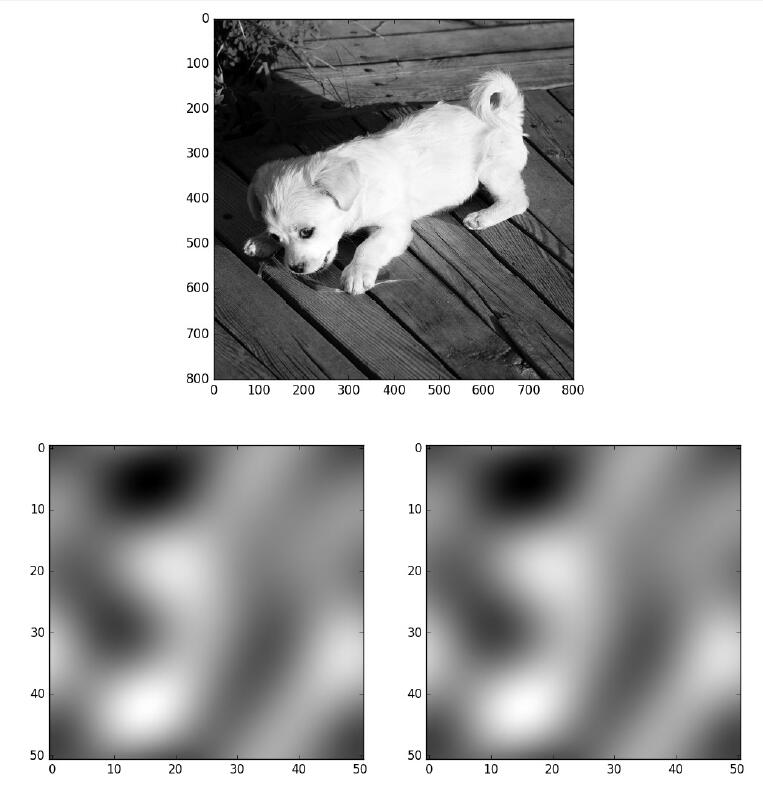
图5-5 图像和二维array的可视化
本节只讲到了最基本和常用的图表及最简单的例子，更多有趣精美的例子可以在matplotlib的官网找到，地址为http://matplotlib.org/gallery.html 。
第6章 OpenCV基础
在深度学习大行其道之前，提到计算机视觉的工具和框架，大多数人一定会最先想到OpenCV。因为其丰富的接口，优秀的性能，商业友好的属性，OpenCV至今仍然是最流行的计算机视觉库，并在各个计算机视觉领域发挥着巨大的作用。
本章将介绍OpenCV的基本知识，以及Python下OpenCV的基础使用，并完成4个有趣且实用的小例子。
·延时摄影小程序。
·视频中截屏采样的小程序。
·图片数据增加（data augmentation）的小工具。
·物体检测框标注小工具。
其中，后两个例子的代码可以在https://github.com/frombeijingwithlove/dlcv_for_beginners 上直接下载。
6.1 OpenCV简介
OpenCV的起源和发展历史已经在第1章中介绍过了，本节主要介绍OpenCV的常见模块和结构。
6.1.1 OpenCV的结构
和Python一样，当前的OpenCV也有两个大版本，即OpenCV 2和OpenCV 3。相比OpenCV 2，OpenCV 3提供了更强的功能和更多方便的特性。不过考虑到和深度学习框架的兼容性，以及上手安装的难度，本节先以OpenCV 2为主进行介绍。
根据功能和需求的不同，OpenCV中的函数接口大体可以分为如下几部分。
·core：核心模块，主要包含了OpenCV中最基本的结构（矩阵、点线和形状等），以及相关的基础运算/操作。
·imgproc：图像处理模块，包含和图像相关的基础功能（滤波、梯度、改变大小等），以及一些衍生的高级功能（图像分割、直方图、形态分析和边缘/直线提取等）。
·highgui：提供了用户界面和文件读取的基本函数，比如图像显示窗口的生成和控制，图像/视频文件的IO等。
如果不考虑视频应用，以上3部分就是最核心和常用的模块了。针对视频和一些特别的视觉应用，OpenCV也提供了如下强劲的支持。
·video：用于视频分析的常用功能，比如光流法（Optical Flow）和目标跟踪等。
·calib3d：三维重建、立体视觉和相机标定等相关功能。
·features2d：二维特征相关的功能，主要是一些不受专利保护的、商业友好的特征点检测和匹配等功能，比如ORB特征。
·object：目标检测模块，包含级联分类和Latent SVM。
·ml：机器学习算法模块，包含一些视觉中最常用的传统机器学习算法。
·flann：最近邻算法库，Fast Library for Approximate Nearest Neighbors，用于在多维空间进行聚类和检索，经常和关键点匹配搭配使用。
·gpu：包含了一些gpu加速的接口，底层的加速是CUDA实现。
·photo：计算摄像学（Computational Photography）相关的接口，当然这只是个名字，其实只有图像修复和降噪而已。
·stitching：图像拼接模块，有了它可以自己生成全景照片。
·nonfree：受到专利保护的一些算法，其实就是SIFT和SURF。
·contrib：一些实验性质的算法，考虑在未来版本中加入。
·legacy：字面是遗产，意思就是废弃的一些接口，将其保留下来是考虑到向下兼容。
·ocl：利用OpenCL并行加速的一些接口。
·superres：超分辨率模块，其实就是BTV-L1（Biliteral Total Variation–L1regularization）算法。
·viz：基础的3D渲染模块，其实底层就是著名的3D工具包VTK（Visualization Toolkit）。
从使用的角度来看，和OpenCV 2相比，OpenCV 3的主要变化是更多的功能和更细化的模块划分。
6.1.2 安装和使用OpenCV
作为最流行的视觉包，在Linux中安装OpenCV是非常方便的，大多数Linux的发行版都支持包管理器的安装，比如在Ubuntu 16.04LTS中，只需要在终端中输入
1 | >> sudo apt install libopencv-dev python-opencv |
当然也可以通过官网下载源码编译安装，首先安装各种依赖。
代码详情
1 | >> sudo apt install build-essential |
然后找一个clone压缩包的文件夹，将源码下载下来。
1 | >> git clone https://github.com/opencv/opencv.git |
然后进入OpenCV文件夹。
代码详情
1 | >> mkdir release |
准备完毕，直接make并安装。
代码详情
1 | >> make |
Windows下的安装也很简单，直接去OpenCV官网http://opencv.org/downloads.html 下载即可。
执行exe文件安装后，会在<安装目录>\build\python/2.7下发现一个cv2.pyd的文件，把该文件复制到
本节只讲Python下的OpenCV基本用法，Python中导入OpenCV非常简单
代码详情
1 | import cv2 |
这样就导入成功了。
6.2 Python-OpenCV基础
本节主要讲解在Python中利用OpenCV的图像存取，以及与深度学习中图像预处理阶段相关的最基本使用。
6.2.1 图像的表示
前面章节已经提到过了单通道的灰度图像在计算机中的表示，就是一个8位无符号整形的矩阵。在OpenCV的C++代码中，表示图像有个专门的结构cv：：Mat，不过在Python-OpenCV中，因为已经有了NumPy这种强大的基础工具，所以这个矩阵就用NumPy的array表示。如果是多通道情况，最常见的就是红绿蓝（RGB）三通道，则第一个维度是高度，第二个维度是高度，第三个维度是通道，如图6-1a所示为一幅3×3图像在计算机中表示的例子。
图6-1 RGB图像在计算机中表示的例子
在图6-1中，右上角的矩阵里每个元素都是一个三维数组，分别代表这个像素上的三个通道的值。最常见的RGB通道中，第一个元素就是红色（Red）的值，第二个元素是绿色（Green）的值，第三个元素是蓝色（Blue），最终得到的图像如图6-1a所示。RGB是最常见的情况，然而在OpenCV中，默认的图像表示却是反过来的，也就是BGR，得到的图像如图6-1b所示。可以看到，前两行的颜色顺序都交换了，最后一行是三个通道等值的灰度图，所以没有影响。至于OpenCV为什么不是大家喜闻乐见的RGB，则是历史遗留问题。在OpenCV刚开始研发的年代，BGR是相机设备厂商的主流表示方法，虽然后来RGB成了主流和默认，但是这个底层的顺序却保留了下来，事实上Windows下的最常见格式之一bmp的底层字节的存储顺序还是BGR。OpenCV的这个特殊之处还是需要注意的，比如在Python中，图像都是用NumPy的array表示，但是同样的array在OpenCV中的显示效果和matplotlib中的显示效果就会不一样。下面的简单代码就可以生成两种表示方式下图6-1中矩阵对应的图像，生成图像后，放大看就能体会到二者的区别。
代码详情
1 | import numpy as np |
不管是RGB还是BGR，都是高度×宽度×通道数，H×W×C的表达方式，而在深度学习中，因为要对不同通道应用卷积，所以用的是另一种方式：C×H×W，就是把每个通道都单独表达成一个二维矩阵，如图6-1c所示。
6.2.2 基本图像处理
1.存取图像
读图像用cv2.imread（）函数，可以按照不同模式读取，一般最常用到的是读取单通道灰度图，或者直接默认读取多通道。保存图像用cv2.imwrite（）函数，注意保存的时候是没有单通道这一说的，根据保存文件名的后缀和当前的array维度，OpenCV自动判断存储的通道。另外，压缩格式还可以指定存储质量，下面来看代码例子。
代码详情
1 | import cv2 |
2.缩放、裁剪和补边
缩放通过cv2.resize（）函数实现，裁剪则是利用array自身的下标截取实现，此外OpenCV还可以给图像补边，这样能对一幅图像的形状和感兴趣区域实现各种操作。下例中读取一幅400×600分辨率的图片，并执行一些基础的操作。
代码详情
1 | import cv2 |
处理的效果如图6-2所示。
3.色调、明暗、直方图和Gamma曲线
除了区域，图像本身的属性操作也非常多，比如可以通过HSV空间对色调和明暗进行调节。HSV空间是由美国的图形学专家A.R.Smith提出的一种颜色空间，HSV分别是色调（Hue），饱和度（Saturation）和明度（Value）。在HSV空间中进行调节就避免了直接在RGB空间中调节时还需要考虑3个通道的相关性。OpenCV中H的取值是[0，180），其他两个通道的取值都是[0，256），下面接着上例代码，通过HSV空间对图像进行调整。
代码详情
1 | # 通过cv2.cvtColor把图像从BGR转换到HSV |
无论是HSV还是RGB，都较难一眼就对像素中值的分布有细致的了解，这时候就需要直方图。如果直方图中的成分过于靠近0或者255，可能就出现了暗部细节不足或者亮部细节丢失的情况。比如图6-2中，背景里的暗部细节是非常弱的，这个时候，一个常用方法是考虑用Gamma变换来提升暗部细节。Gamma变换是矫正相机直接成像和人眼感受图像差别的一种常用手段，简单来说就是通过非线性变换，让图像从对曝光强度的线性响应变得更接近人眼感受到的响应。具体的定义和实现还是接着上面代码中读取的图片，执行计算直方图和Gamma变换的代码如下
代码详情
1 | import numpy as np |
上面三段代码的结果统一放在图6-2中。
图6-2 图像基本处理的例子
可以看到，Gamma变换后的暗部细节比原图清楚了很多，并且从直方图来看，像素值也从集中在0附近变得散开了一些。
6.2.3 图像的仿射变换
图像的仿射变换涉及图像的形状位置角度的变化，是深度学习预处理中常用的功能。仿射变换的概念前面已经提到，在此简单回顾一下。仿射变换具体到图像中的应用，主要是对图像的缩放 、旋转 、剪切 、翻转 和平移 的组合。在OpenCV中，仿射变换的矩阵是一个2×3的矩阵，其中左边的2×2子矩阵是线性变换矩阵，右边的2×1的两项是平移项。
对于图像上的任一位置（x，y），仿射变换执行的是如下的操作：
需要注意的是，对于图像而言，宽度方向是x，高度方向是y，坐标的顺序和图像像素对应下标一致。所以原点的位置不是左下角而是右上角，y的方向也不是向上而是向下。在OpenCV中实现仿射变换是通过仿射变换矩阵和cv2.warpAffine函数。下面还是通过代码来理解一下，例子中图片的分辨率为600×400。
代码详情
1 | import cv2 |
代码实现的操作示意如图6-3所示。
图6-3 仿射变换的例子
6.2.4 基本绘图
OpenCV提供了各种绘图的函数，可以在画面上绘制线段、圆、矩形和多边形等，还可以在图像上指定位置打印文字，比如下面例子
代码详情
1 | import numpy as np |
执行代码效果如图6-4所示。
图6-4 基本绘图的例子
6.2.5 视频功能
视频中最常用的就是从视频设备采集图片或者视频，或读取视频文件并从中采样。所以比较重要的也是两个模块，一个是VideoCapture，用于获取相机设备并捕获图像和视频，或是从文件中捕获；还有一个是VideoWriter，用于生成视频。下面来看例子理解这两个功能的用法，首先是一个制作延时摄影视频的小例子。
代码详情
1 | import cv2 |
该例实现了延时摄影的功能，把程序打开并将摄像头对准一些缓慢变化的画面，比如桌上缓慢蒸发的水，或者正在生长的小草，就能制作出有趣的延时摄影作品。
程序的结构非常清晰简单，注释里也写清楚了每一步，所以程序流程就不多解释了。需要提一下的有两点：一个是VideoWriter中的函数cv2.VideoWriter_fourcc。该函数指定了视频编码的格式，比如例子中用的是MP42，也就是MPEG-4，更多编码方式可以在下面的地址查询http://www.fourcc.org/codecs.php 。
还有一个是KeyboardInterrupt，这是一个常用的异常，用来获取用户Ctrl+C的中止，捕获这个异常后直接结束循环并释放VideoCapture和VideoWriter的资源，使已经捕获好的部分视频可以顺利生成。
从视频中截取帧也是处理视频时常见的任务，下面代码实现的是遍历一个指定文件夹下的所有视频，并按照指定的间隔进行截屏保存。
代码详情
1 | import cv2 |
6.3 用OpenCV实现数据增加小工具
到目前我们已经熟悉了NumPy中的随机模块、多进程调用和OpenCV的基本操作，基于这些基础，本节将从思路到代码一步步实现一个最基本的数据增加小工具。
第3章和第4章都提到过数据增加（data augmentation），作为一种深度学习中的常用手段，数据增加对模型的泛化性和准确性都有帮助。数据增加的具体使用方式一般有两种，一种是实时增加，比如在Caffe中加入数据扰动层，每次图像都先经过扰动操作，再去训练，这样训练经过几代（epoch）之后，就等效于数据增加。还有一种方式是更加直接简单一些的，就是在训练之前通过图像处理手段对数据样本进行扰动和增加，也是本节要实现的。
本节的例子中将包含3种基本类型的扰动：随机裁剪、随机旋转和随机颜色/明暗。
6.3.1 随机裁剪
在AlexNet中已经讲过了随机裁剪的基本思路，本节的小例子中打算更进一步：在裁剪的时候考虑图像宽高比的扰动。在绝大多数用于分类的图片中，样本进入网络前都是要统一大小，所以宽高比扰动相当于对物体的横向和纵向进行了缩放，这样除了物体的位置扰动，又多出了一项扰动。只要变化范围控制合适，目标物体始终在画面内，这种扰动是有助于提升泛化性能的。实现这种裁剪的思路如图6-5所示。
图6-5 随机裁剪的方法
图6-5中最左边是一幅需要剪裁的画面，首先根据这幅画面可以算出一个宽高比w/h。然后设定一个小的扰动范围δ和要裁剪的画面占原画面的比例β，从-δ到δ之间按均匀采样，获取一个随机数 作为裁剪后画面的宽高比扰动的比例，则裁剪后画面的宽和高分别为：
如果先把这个宽为w’，高为h’的区域置于原画面的右下角，则这个区域的左上角和原画面的左上角框出的小区域，如图6-5b中的虚线框所示，就是裁剪后区域左上角可以取值的范围。所以在这个区域内随机采一点作为裁剪区域的左上角，就实现了如图6-5c中，位置随机且宽高比也随机的裁剪。
6.3.2 随机旋转
与前面讲到过的旋转比起来，做数据增加时，一般希望旋转是沿着画面的中心。这样除了要知道旋转角度，还要计算平移的量才能让仿射变换的效果等效于旋转轴在画面中心，好在OpenCV中有现成的函数cv2.getRotationMatrix2D（）可以使用。该函数的第1个参数是旋转中心，第2个参数是逆时针旋转角度，第3个参数是缩放倍数，对于只是旋转的情况参数值是1，返回值就是做仿射变换的矩阵。
直接用cv2.getRotationMatrix2D（）函数并接着使用cv2.warpAffine（）函数会有一个潜在的问题，就是旋转之后会出现黑边。如果要旋转后的画面不包含黑边，则需沿着原来画面的轮廓做内接矩形，该矩形的宽高比和原画面相同，如图6-6所示。
图6-6 随机旋转，不含黑边裁剪
在图6-6中可以看到，限制内接矩形大小的主要是原画面更靠近中心的那条边，也就是图6-6中比较长的一条边AB。因此只要沿着中心O和内接矩形的顶点方向的直线，求出和AB的交点P，就得到了内接矩形的大小。下面先来看长边的方程，考虑之前画面和横轴相交的点，经过角度-θ旋转后，到了图6-5中的Q点所在。
因为长边所在直线过Q点，且斜率为1/tan（θ），所以有：
这时候考虑OP这条直线：
把公式6-5带入公式6-4，求解可以得到：
注意，在这个问题中，每个象限和相邻象限都是轴对称的，而且旋转角度对剪裁宽度和长度的影响是周期（T=π）变化。再加上我们关心的其实并不是4个点的位置，而是旋转后要截取的矩形的宽w’和高h’，所以复杂的分区间情况也简化了。首先对于旋转角度，因为周期为π，所以都可以化到0到π之间。因为相邻象限的对称性，进一步有：
于是对于0到π/2之间的θ，有：
当然需要注意的是，对于宽高比非常大或者非常小的图片，旋转后如果裁剪往往得到的画面是非常小的一部分，甚至不包含目标物体。所以是否需要旋转，以及是否需要裁剪，裁剪角度多少合适，都要视情况而定。
6.3.3 随机颜色和明暗
比起AlexNet论文里在PCA之后的主成分上做扰动的方法，本节用来实现随机的颜色以及明暗的方法相对简单很多，就是给HSV空间的每个通道分别加上一个微小的扰动。其中对于色调，从-δ到δ之间按均匀采样，获取一个随机数 作为要扰动的值，然后新的像素值x’为原始像素值  ；对于其他两个空间则是新像素值x’为原始像素值x的（1+
；对于其他两个空间则是新像素值x’为原始像素值x的（1+
）倍，从而实现色调、饱和度和明暗度的扰动。
因为明暗度并不会对图像的直方图相对分布产生大的影响，所以在HSV扰动基础上，考虑再加入一个Gamma扰动，方法是设定一个大于1的Gamma值的上限γ，因为这个值通常和1是一个量级，再用均匀采样的近似未必合适，所以从-logγ到logγ之间均匀采样一个值α，然后用eα 作为Gamma值进行变换。
6.3.4 多进程调用加速处理
做数据增加时如果样本量本身就不小，则处理起来可能会很耗费时间，所以可以考虑利用多进程并行处理。比如我们的例子中，设定使用场景是输入一个文件夹路径，该文件夹下包含了所有原始的数据样本。用户指定输出的文件夹和打算增加图片的总量。执行程序的时候，通过os.listdir（）函数获取所有文件的路径，然后按照第5章讲过的多进程平均划分样本的办法，把文件尽可能均匀地分给不同进程，进行处理。
6.3.5 代码：图片数据增加小工具
按照前面4个部分的思路和方法，本节来实现一个图片数据增加小工具，首先对于一些基础的操作定义在一个image_augmentation.py的文件里。
代码详情
1 | import numpy as np |
调用这些函数需要通过一个主程序。主程序里首先定义3个子模块，定义一个函数parse_arg（）通过Python的argparse模块定义各种输入参数和默认值。需要注意的是这里用argparse来输入所有参数，是因为参数总量并不是特别多，如果增加了更多的扰动方法，更合适的参数输入方式可能是通过一个配置文件。然后定义一个生成待处理图像列表的函数generate_image_list（），根据输入中要增加图片的数量和并行进程的数目，尽可能均匀地为每个进程生成了需要处理的任务列表。执行随机扰动的代码定义在augment_images（）中，这个函数是每个进程内进行实际处理的函数，执行顺序是镜像→裁剪→旋转→HSV→Gamma。需要注意的是镜像→裁剪，因为只是个演示例子，因此未必是一个合适的顺序。最后定义一个main（）函数进行调用，代码如下
代码详情
1 | import os |
注意，程序中除了前面提的3种类型的变化，还增加了镜像变化，但是因为这种变换太简单了。另外，默认进程数用的是cpu_count（）函数，以获取CPU的核数。把该段代码保存为run_augmentation.py，然后在命令行输入
1 | >> python run_augmentation.py -h |
或者
1 | >> python run_augmentation.py --help |
就能看到脚本的使用方法、每个参数的含义及默认值。接下来执行一个图片增加任务
1 | >> python run_augmentation.py imagenet_samples more_samples 1000 --rotate_angle_vari=180 --p_rotate_crop=0.5 |
参数的赋值也可以不用等号而是直接用空格接值，这样在参数是文件名的情况下很方便，但本例中看不出
1 | >> python run_augmentation.py imagenet_samples more_samples 1000 --rotate_angle_vari 180 --p_rotate_crop 0.5 |
其中imagenet_samples为一些从imagenet图片url中随机下载的一些图片，—rotate_angle_vari设为180，方便测试全方向的旋转，—p_rotate_crop设置为0.5，让旋转裁剪对一半图片生效。扰动增加后的1000张图片在more_samples文件夹下，得到的部分结果如图6-7所示。
图6-7 扰动增加后的部分样本
6.4 用OpenCV实现物体标注小工具
除了对图像的处理，OpenCV的图形用户界面（Graphical User Interface，GUI）和绘图等相关功能也是很有用的功能，无论是可视化，图像调试还是本节要实现的标注任务，都可以有所帮助。本节先介绍OpenCV窗口的最基本的使用和交互，然后基于这些基础和之前的知识实现一个用于物体检测任务标注的小工具。
6.4.1 窗口循环
OpenCV显示一幅图片的函数是cv2.imshow（），第一个参数是显示图片的窗口名称，第二个参数是图片的array。如果直接执行该函数的话，什么都不会发生，因为该函数需配合cv2.waitKey（）函数一起使用。cv2.waitKey（）函数指定当前的窗口显示要持续的毫秒数，比如cv2.waitKey（1000）就是显示一秒，然后窗口就关闭了。比较特殊的是cv2.waitKey（0）函数，并不是显示0毫秒的意思，而是一直显示，直到键盘上的按键被按下，或者鼠标单击了窗口的关闭按钮才关闭。cv2.waitKey（）函数的默认参数就是0，所以对于图像展示的场景，cv2.waitKey（）或者cv2.waitKey（0）是最常用的。
代码详情
1 | import cv2 |
执行代码得到如图6-8所示的窗口。
图6-8 利用OpenCV进行最基本的图像显示
cv2.waitKey（）函数的参数不为0的时候可以和循环结合产生动态画面，比如在6.2.4节的延时小例子中，把延时摄影保存下来的所有图像放到一个叫做frames的文件夹下。下面代码从frames的文件夹下读取所有图片并以24的帧率在窗口中显示成动画。
代码详情
1 | import os |
在这个例子中采用了Python的itertools模块中的cycle（）函数，该函数可以把一个可遍历结构编程一个无限循环的迭代器。另外从例子中还发现，cv2.waitKey（）函数返回的就是键盘上按下的按键。对于字母就是ASCII码，特殊按键如上下左右等，则对应特殊的值，其实这就是键盘事件的最基本用法。
6.4.2 鼠标和键盘事件
因为GUI总是交互的，所以鼠标和键盘事件基本使用必不可少，6.4.1节已经提到了cv2.waitKey（）函数就是获取键盘消息的最基本方法。比如下面的循环代码就能够获取键盘上按下的按键，并在终端输出
代码详情
1 | while key != 27: |
通过这个程序能获取一些常用特殊按键的值，比如在笔者用的机器上，4个方向的按键和删除键对应的值如下。
·上（↑）：65362；
·下（↓）：65364；
·左（←）：65361；
·右（→）：65363；
·删除（Delete）：65535。
需要注意的是，在不同的操作系统里这些值可能是不一样的。鼠标事件比键盘事件稍微复杂一点，需要定义一个回调函数，然后把回调函数和一个指定名称的窗口绑定，这样只要鼠标位于画面区域内的事件就都能捕捉到。把下面这段代码插入到上段代码的while之前，就能获取当前鼠标的位置和动作并输出。
代码详情
1 | # 定义鼠标事件回调函数 |
6.4.3 代码：物体检测标注的小工具
基于6.4.1和6.4.2两小节的基本使用，就能和OpenCV的基本绘图功能实现一个超级简单的物体框标注小工具了。基本思路是对要标注的图像建立一个窗口循环，然后每次循环的时候对图像进行一次复制。鼠标在画面上画框的操作，以及已经画好的框的相关信息在全局变量中保存，并且在每个循环中根据这些信息，在复制的图像上再画一遍，然后显示这份复制的图像。
基于这种实现思路，使用上采用一个尽量简化的设计如下。
·输入是一个文件夹的路径，下面包含了所有要标注物体框的图片。如果图片中标注了物体，则生成一个相同名称加额外后缀名的文件保存标注信息。
·标注的方式是按下鼠标左键选择物体框的左上角，松开鼠标左键选择物体框的右下角，按下鼠标右键删除上一个标注好的物体框。所有待标注物体的类别和标注框颜色由用户自定义，如果没有定义则默认只标注一种物体，定义该物体名称为Object。
·方向键←和→键用来遍历图片，↑和↓键用来选择当前要标注的物体，Delete键删除一张图片和对应的标注信息。
每张图片的标注信息，以及自定义标注物体和颜色的信息用一个元组表示，第一个元素是物体名字，第二个元素是代表BGR颜色的tuple或者代表标注框坐标的元组。对于这种并不复杂的数据结构，直接利用Python的repr（）函数，把数据结构保存成机器可读的字符串放到文件里，读取的时候用eval（）函数就能直接获得数据。这样的方便之处在于不需要单独写格式解析器。如果需要，可以在此基础上再编写一个转换工具，这样就能够转换成常见的Pascal VOC的标注格式或其他的自定义格式。
在这些思路和设计下，定义标注信息文件格式的例子如下
代码详情
1 | ('Hill', ((221, 163), (741, 291))) |
元组中第一项是物体名称，第二项是标注框左上角和右下角的坐标。这里之所以不把标注信息的数据直接用pickle保存，是因为数据本身不会很复杂，直接保存还有更好的可读性。自定义标注物体和对应标注框颜色的格式也类似，不过更简单些，因为括号可以不写，具体如下
代码详情
1 | 'Horse', (255, 255, 0) |
第一项是物体名称，第二项是物体框的颜色。使用的时候把自己定义好的内容放到一个文本里，然后保存成和待标注文件夹同名，后缀名为labels的文件。比如在一个samples的文件夹下放上一些草原的照片，然后自定义一个和文件夹同名的samples.labels的文本文件。把上段代码的内容放进去，就定义了小山头的框为黄色，骏马的框为青色，以及红色的男青年。具体的标注小工具的代码如下
代码详情
1 | import os |
需要注意的是，程序中几个比较通用且独立的方法前加上了一句@staticmethod，表明是个静态方法。执行程序并选择samples文件夹，就可以在文件夹下生成和图片同名、后缀为bbox的标注信息文件了。标注时的画面如图6-9所示。
图6-9 标注小工具使用界面
第7章 Hello World！
从第7章开始就进入到了实战阶段，将通过一系列基础例子了解基于深度学习计算机视觉的有趣应用和实施方法。本章作为实战阶段的第一章，用一个Hello World级别的神经网络小例子带大家一起入门最基本的训练（Training）-预测（Inference）流程，以及MXNet和Caffe这两种框架的基本使用。对于MXNet和Caffe这两种框架，本书会基于实例对其用法进行最基本的介绍。不过作为一本入门书，本书不会涉及分布式使用、代码细节和架构等方面，而只会专注于基本算法的实现方法。深度学习框架多种多样，但框架终究是工具，重点是通过了解每个例子和背后对应的思想来入门深度学习/计算机视觉这个有用又有趣的领域。
和第6章一样，本章中完整实例的代码都可以在下面地址找到，之后章节中的每个入门实例的代码也将放在这个github的代码仓库中，不再强调，地址为https://github.com/frombeijingwithlove/dlcv_for_beginners 。
7.1 用MXNet实现一个神经网络
MXNet的起源已经在第1章大概介绍过，本节主要介绍MXNet的安装和基本概念，并通过实现一个最简单的神经网络来了解MXNet的使用。
7.1.1 基础工具、NVIDIA驱动和CUDA安装
首先是安装大部分开发工具需要的基础依赖工具包，比如git、用于矩阵计算的atlas，和图可视化的graphviz等，以Ubuntu 16.04LTS为例，执行下面命令安装包
代码详情
1 | >> sudo apt update |
第5章和第6章讲过的pip、NumPy和OpenCV也是需要的，安装方法已经讲过在此就不再介绍了。
对于当前的所有深度学习框架，如果要训练神经网络一定离不开（NVIDIA的）GPU，以及配套的GPU编程工具包CUDA。所以接下来是安装NVIDIA的驱动和CUDA工具包。安装NVIDIA驱动前需要先卸载系统自己的驱动
1 | >> sudo apt --purge remove xserver-xorg-video-nouveau |
然后添加NVIDIA驱动的源
1 | >> sudo add-apt-repository ppa:graphics-drivers/ppa |
然后就可以安装驱动和CUDA工具包了。
代码详情
1 | >> sudo apt install nvidia-361 nvidia-settings nvidia-prime |
安装完成后，在控制台输入
代码详情
1 | >> nvidia-smi |
如果安装成功则会显示显卡的信息，比如笔者的GTX980M笔记本显示信息如图7-1所示。
图7-1 显卡信息
如果是其他的Linux系统，步骤也很相似，首先卸载自带的显卡驱动，然后用系统自带软件包或者到NVIDIA官网下载驱动及CUDA按照说明进行安装，下载地址为http://www.nvidia.com/Download/index.aspx 或https://developer.nvidia.com/cuda-downloads 。
cuDNN是CUDA中专门为加速深度神经网络设计的库，是个可选的安装选项。下载地址为https://developer.nvidia.com/cudnn 。
找到对应的版本并填写需要的信息之后就可以下载了。下载之后是一个压缩包，这里以cuDNN 5.1为例，执行以下命令将cuDNN中的库解压并添加到CUDA对应文件夹下。
代码详情
1 | >> tar -xvzf cudnn-8.0-linux-x64-v5.1-ga.tgz |
任何深度学习框架中，基于CPU的矩阵计算包也是基础的库之一，除了本节一开始安装的atlas，Intel的MKL（Math Kernel Library）因为其优异的性能，往往是一个更佳的选项，MKL的下载地址为https://software.intel.com/en-us/intel-mkl/ 。
MKL对于个人是免费的，需要一定的注册步骤获取一个许可证。其安装也不难，下载好安装包并解压后，执行install.sh或者install_GUI.sh，按照指示一步步安装即可。
7.1.2 安装MXNet
MXNet的github页面是https://github.com/dmlc/mxnet 。
在这里可以找到源代码的git地址，然后在要保存的控制台地址中输入下面命令
1 | >> git clone --recursive https://github.com/dmlc/mxnet |
之后就会在执行命令的文件夹下得到一个mxnet的文件夹。第一步是配置安装的基础选项，打开mxnet/make文件夹下的config.mk文件，主要需要配置的是以下3个选项。
·USE_CUDA=0；
·USE_CUDNN=0；
·USE_BLAS=atlas。
上面列出的都是默认选项，对于训练网络的需求，需要至少把USE_CUDA改成1，如果需要cuDNN和mkl的话则需要把USE_CUDNN改成1，USE_BLAS改为mkl。
配置好后就可以开始安装了。在Ubuntu下有个非常方便的方式，就是进入mxnet/setup-utils文件夹下，直接执行对应脚本
代码详情
1 | >> cd mxnet/setup-utils |
等待执行结束就大功告成了。当然一般的方式是回到mxnet目录下，执行
代码详情
1 | >> cd mxnet |
自动利用所有可用的CPU核对代码进行编译，如果在-j后面直接加上数字可以指定用的核数。然后配置Python接口
代码详情
1 | >> cd python |
万事俱备，接下来可以开始使用这个强大的框架了。
7.1.3 MXNet基本使用
在第3章已经提到过，当描述一个神经网络或者一些计算公式及函数的时候，实质上是在描述一种可以用图表示的计算关系。在MXNet中，这种计算关系可以有两种方式表达和计算，即命令式（Imperative）和符号式（Symbolic）。比如（a+b）*c，命令式计算的代码如下
代码详情
1 | import mxnet as mx |
可以看到，命令式计算非常灵活直接，每个变量的内存分配是即时完成的，计算也是即时完成。而符号式计算则是函数式编程的思路，计算也是延迟（lazy）的，符号变量只能定义计算关系。这种计算关系在执行前需要通过bind（）方法产生一个执行器（Executor），用来把数据的NDArray和Symbol绑定起来，实际的计算发生在Executor调用时。符号式计算很明显要麻烦一些，不过优点是延迟计算和对计算图的优化能得到更优的性能。另外，在MXNet中通过符号式计算求导是非常方便的，继续接前面例子
代码详情
1 | # 定义一个变量用来保存关于a的梯度，随便初始化一下 |
在MXNet中，第一段代码中，用于命令式计算的NDArray是一个非常基础的模块，符号式计算的Symbolic模块结合NDArray一起使用可以定义一些基础的计算关系并进行计算。在这两个模块基础上可以搭建一些简单的计算关系，比如神经网络。但是如果每次都像上面代码一样从底层搭建，并且自己指定计算梯度等操作，甚至更进一步比如在神经网络中进行后向传播和梯度更新等，将是一件非常麻烦的事情。所以在NDArray和Symbolic基础上，MXNet提供了一些接口进行封装来简化这些操作，包含通用性更好的Module模块和更为简单的Model模块。
既然要训练模型，就不能避免与数据和机器打交道，所以MXNet也提供了数据读取和处理的IO Data Loading模块和用来支持多GPU卡及分布式计算的KVStore模块。本书作为一本入门书籍，将主要涉及6大模块中除了KVStore以外的模块，神经网络模型的搭建也主要基于Module和Model模块，而不需要从Symbolic开始进行复杂的底层编写。更多关于这些模块的细节可以参考官方文档http://mxnet.io/zh/api/python/ 。
7.1.4 用MXNet实现一个两层神经网络
本节将基于Model模块实现本书中第一个神经网络。数据和网络的模型结构就是第3章中3.2.2中的例子，产生数据的代码如下
代码详情
1 | import pickle |
数据的二维可视化参照第3章的图3-7所示。然后通过MXNet的model模块搭建一个两层神经网络，网络结构参照第3章的图3-8所示，代码如下
代码详情
1 | import numpy as np |
程序执行后就定义好了计算关系，最后3行代码是网络结构的可视化，执行程序得到如图7-2所示的结构图。
图7-2 MXNet可视化简单的二层神经网络
有了网络，接下来可以读取数据训练模型了。对于内存中生成的数据，可以用mxnet.io.NDArrayIter来生成一个用于遍历训练数据和对应标签的迭代器，然后用model进行训练。代码如下
代码详情
1 | import pickle |
训练过程中可以看到实时输出的loss信息，每迭代完一代（epoch）就进行一次重新设置
代码详情
1 | INFO:root:Start training with [cpu(0)] |
接下来用训练好的模型对所有样本和取值范围的平面进行分类，并画出对应的概率可视化的图，代码如下
代码详情
1 | import matplotlib.pyplot as plt |
程序生成的三维可视化图如图7-3所示。
图7-3 标签为1的概率在取值平面上的分布可视化
注意这只是最简单的例子，目的是帮助了解MXNet的基本使用，并没有设置验证/测试集，训练迭代1000次也只是随便定的。7.2节将用Caffe实现这个例子，而更加实际的例子会从第8章开始。
图7-3标签为1的概率在取值平面上的分布可视化
7.2 用Caffe实现一个神经网络
Caffe虽然从应用角度更针对于卷积神经网络，但是实现7.1节的例子当然是不在话下的。本节将通过实现两层的小网络来了解Caffe的基础概念和基本使用。
7.2.1 安装Caffe
Caffe是个依赖非常多的框架，除了在7.1.1节中我们已经安装好的基础依赖，还需要以下的依赖包。
1 | >> sudo apt install libprotobuf-dev libleveldb-dev libsnappy-dev libboost-all-dev libhdf5-serial-dev protobuf-compiler gfortran libjpeg62 libfreeimage-dev libgoogle-glog-dev libbz2-dev libxml2-dev libxslt-dev libffi-dev libssl-dev libgflags-dev liblmdb-dev python-yaml |
然后可以开始安装Caffe了，先到要安装Caffe的文件夹下
1 | >> git clone https://github.com/BVLC/caffe.git |
然后到caffe文件夹下，找到Makefile.config.example文件复制一份
代码详情
1 | >> cd caffe |
和MXNet类似，Makefile.config是编译的配置文件，在这个文件里可以配置一些编译选项，一般来说主要配置CUDA、cuDNN和blas库。比如笔者的机器上，主要是下面两个选项：
·USE_CUDNN：=1；
·BLAS：=mkl。
默认情况下CPU_ONLY：=1是被注释掉的，所以不用管。除非是在没有NVIDIA的GPU机器上安装Caffe，那么把注释取消即可。
还有一个选项是WITH_PYTHON_LAYER：=1，意思是支持用Python定义神经网络中的层，和MXNet中定义层的方式有些相像。如果要使用一些Python的层或是一些特定功能的Caffe版本，比如Ross Girshick的py-faster-rcnn，那么就需要把这一项前的注释取消。
配置好Makefile.config后，就可以开始编译了，依次执行下面的命令
代码详情
1 | >> make pycaffe –j |
因为Caffe的依赖过多，在安装过程中有可能找不到一些动态库，这个时候需要把相对的路径加入到LD_LIBRARY_PATH下即可，如果是头文件则可以把对应路径加入到CPLUS_INCLUDE_PATH中。比如找不到HDF5的库，可在控制台下执行
1 | >> export LD_LIBRARY_PATH=$LD_LIBRARY_PATH:/path/to/hdf5/serial |
为了在Python中直接调用Caffe，还需要把Caffe的Python路径加入到PYTHONPATH。
1 | >> export PYTHONPATH=$PYTHONPATH=:/path/to/caffe/python |
有的版本的Ubuntu下如果是使用apt安装的cuda，还需要添加下面两个路径：
·/usr/lib/nvidia-cuda-tookit；
·/usr/lib/x86-linux-gnu。
7.2.2 Caffe的基本概念
Caffe从本质上来说和MXNet中Symbolic的使用方式差不多，都是先定义好一个计算关系，然后根据这个计算关系结合数据训练和使用模型。在Caffe中，最基本的计算节点是层（Layer），所有的计算关系都是基于层的，无论是Caffe预定义好的层，还是用户自定义的层。这和MXNet中预定义层的使用方式也很像，如果直接基于Python写层的定义就更像了。不过这里我们要了解的是更常用的一种使用方式，即利用protobuf的格式而不是代码来定义网络的结构，然后再结合数据进行训练，也就是说用Caffe训练模型是不需要写代码的。这体现了Caffe设计哲学中利用表达式（expression）和模块化（Modularity）的特点。
Caffe中预定义的层覆盖了当前流行的网络结构中几乎所有的类型，比如卷积神经网络最常用到的全连接层（InnerProduct）、卷积层（Convolution）和池化层（Pooling）；各种各样的激活函数层（ReLU、Sigmoid、PReLU等）；以及数据交互的各种层（Data、HDF5Data、ImageData等）；输出及计算损失函数的层（Softmax、SoftmaxWithLoss、Euclidean等）。除了Caffe的接口文档，各种常用层的信息一览在Caffe官网也有列出地址为http://caffe.berkeleyvision.org/tutorial/layers.html 。
基于各种层就可以构建成网络（Net），然后定义好数据，就可以训练一个模型了。在Caffe中，数据的形式是一种叫Blob的类，其实就是空间连续的多维数组，比如存储图像的时候是个四维的数组，四个维度分别是批大小、通道数、图像高度、图像宽度。有了网络结构和数据之后，再定义一个利用梯度下降法做优化的Solver模块，就可以训练网络了。具体总结如下。
·层（Layer）；
·网络（Net）；
·数据（Blob）；
·梯度下降（Solver）。
这4个部分就是入门学习最关键的内容。
7.2.3 用Caffe实现一个两层神经网络
本节还是通过例子来了解Caffe的基本使用，比如7.1节中神经网络的小例子。第一步是准备数据，在Caffe中，非图像数据的支持并不是很好，这里我们用HDF5格式来准备7.1节中产生的坐标数据和对应标签，具体代码如下
代码详情
1 | import pickle |
需要提一点的是Caffe中HDF5Data层读取的并不是HDF5数据本身，而是一个HDF5文件的列表，所以我们除了生成data.h5外还生成了一个data_h5.txt作为HDF5Data层的数据源。接下来开始定义网络和训练网络的train.prototxt。
代码详情
1 | name: "SimpleMLP" |
程序代码并不复杂，每一层的意思也比较明确，name是层的名字，type指定层的类型，bottom是输入blob的名字，top是输出blob的名字。最后根据类型的不同，每一层会有特定的参数，比如InnterProduct，也就是全连接层中，num_output就是输出的数量，也就是隐藏单元的个数。整体来看，这个prototxt文件中首先定义了HDF5数据层，用于从HDF5文件中读取数据。读取的数据按照顺序排列分别是data和label。因为在这个简单例子中，我们把所有的数据用于训练，所以只有一个phase为TRAIN的HDF5数据层，并且batch_size就是所有样本的数量。在这个简单例子中只有全连接的InnerProduct层和激活函数的Sigmoid层。在这里需要提的是weight_filler这个参数。在mxnet中，默认是用均匀分布的随机数来初始化网络参数，所以没有专门指定。而在Caffe中，默认的初始化参数居然是0，对于这个例子会很难收敛。所以我们专门把这个参数手动指定为uniform，这样会默认产生0～1之间的随机数用来初始化当前层，除了weight_filler之外还有bias_filler用来初始化偏置的值，不过因为默认值并不影响收敛，所以例子中略过了。最后用SoftmaxWithLoss层来计算损失函数，这和7.1节MXNet的例子差不多。Caffe中自带专门用来可视化网络结构的脚本，路径是caffe/python/draw_net.py，在控制台中执行如下指令
1 | >> python /path/to/caffe/python/draw_net.py train.prototxt mlp_train.png –rankdir BT |
就可以得到Caffe可视化后的网络结构并保存在mlp_train.png中，如图7-4所示。
图7-4 用Caffe自带的draw_net.py可视化的训练阶段网络结构
和MXNet中可视化的底层实现一样，都是基于graphviz（graphviz是一个可视化图库），主要区别在于Caffe会把每个数据对应的blob都画出来。另外，默认情况下，网络结构的绘制顺序是输入到输出从左至右绘制，为了方便排版，这里用—rankdir选项改成了从下向上绘制。Caffe自带的draw_net.py效果并不是很美观，所以线上有一些开源的可视化Caffe网络结构的工具，比较为人熟知的是github上的ethereon开发的netscope地址为：http://ethereon.github.io/netscope/quickstart.html 。
在netscope基础上，github上的dgschwend又开发了可视化+分析网络参数、中间变量等功能的加强版地址为：https://dgschwend.github.io/netscope/quickstart.html ，比draw_net.py好用很多。
回到例子中，定义好网络结构后还需要定义用于梯度下降的solver.prototxt
代码详情
1 | net: "train.prototxt" |
这个文件很容易看懂，第一个net参数指定了训练用train.prototxt。base_lr是学习率，这里设置为0.15。lr_policy是学习率随训练进行改变的策略，这里设置为fixed，意思是不做任何改变。display是指每迭代这么多次数就显示一次训练进行的信息，比如当前loss的值。max_iter是最大训练次数，达到这个次数就停止，同时产生当前模型的参数和solver状态的备份。Momentum顾名思义是冲量的系数，snapshot_prefix是保存模型和solver状态文件的名字前缀。solver_mode指定用CPU还是GPU进行训练，例子中先用CPU。
现在数据和训练需要的配置文件都定义好了，接下来在控制台下执行下面命令
1 | >> /path/to/caffe/build/tools/caffe train -solver solver.prototxt |
就开始训练了，训练过程中会输出当前的迭代次数和对应的loss值，例如下面
代码详情
1 | I0102 15:40:52.076025 5821 caffe.cpp:251] Starting Optimization |
如果不喜欢用控制台，也可以利用Python进行训练。
代码详情
1 | import sys |
将这段代码保存为文件然后执行，和前面在控制台下的训练效果一样。不过这样训练完后并不能立刻使用，比如上面代码最后一行的print会输出下面结果
1 | {'loss': array(0.004321129061281681, dtype=float32)} |
这是一个字典，键是最后一层的blob名字，值是loss的值，是因为train.prototxt网络中我们定义的是训练用的网络，到了做推断（Inference）的阶段，还需要对这个结构做一些修改才可以。修改的主要部分是输入和输出部分，同时初始化网络权重的部分可有可无，完整的内容如下
代码详情
1 | name: "SimpleMLP" |
HDF5Data层没有了，取代的是input用来指定输入blob的名字，还有input_shape中指定输入数据的形状。最后一层也变成了Softmax，最顶层输出取名为prob，表示属于某个类的概率。把这个用于推断的网络结构保存为test.prototxt，然后用如下Python代码可以执行训练好的模型用于推断（Inference），最后生成一个和图7-3所示相似的可视化结果。
代码详情
1 | import sys |
第8章 最简单的图片分类——手写数字识别
在第4章已经提到过，卷积神经网络的第一代成功应用是在手写数字识别上，用的网络是LeNet-5。如今在实际应用中已经很少看到LeNet-5的身影了，不过这个经典的结构成了图片分类中的Hello World。几乎所有深度学习框架中都有用LeNet-5在MNIST数据集上训练做手写数字识别的例子，甚至很多人测试一个框架是否安装好，用的就是训练LeNet-5的脚本。
本章就一步步通过这个图片分类的Hello World来了解基于Caffe和MXNet做图片分类的基本方法。
8.1 准备数据——MNIST
在大多数框架的例子中，用MNIST训练LeNet-5的例子都被脚本高度封装了。只需要执行脚本就可以完成从下载数据到训练的过程。比如在MXNet中，直接到mxnet/example下执行train_mnist.py就大功告成了，Caffe中也有类似的shell脚本。其实这样是不利于初学者了解到底发生了什么的。所以本书把数据准备的部分剥离开来，把每个训练都具体到一张图片，然后从头开始完整地过一遍流程。了解了这个流程，基本上就了解了如何从图片数据开始到训练一个模型进行分类。
8.1.1 下载MNIST
原版MNIST下载的很慢，本书中用的MNIST是Bengio组封装好的数据包，下载地址为http://deeplearning.net/data/mnist/mnist.pkl.gz 。
在Linux下直接用wget即可
1 | >> wget http://deeplearning.net/data/mnist/mnist.pkl.gz |
本书的github仓库中第8章的文件夹下也有提供该文件的下载脚本。
8.1.2 生成MNIST的图片
mnist.pkl.gz这个压缩包中其实是数据的训练集、验证集和测试集用pickle导出的文件被压缩为gzip格式，所以用python中的gzip模块当成文件就可以读取。其中每个数据集是一个元组，第一个元素存储的是手写数字图片，表示每张图片是长度为28×28=784的一维浮点型numpy数组，这个数组就是单通道灰度图片按行展开得到，最大值为1，代表白色部分，最小值为0，代表黑色部分。元组中第二个元素是图片对应的标签，是一个一维的整型numpy数组，按照下标位置对应图片中的数字。基于以上将数据集转换成图片的代码如下
代码详情
1 | import os |
这个脚本首先创建了一个叫mnist的文件夹，然后在mnist下创建3个子文件夹train、val和test，分别用来保存对应的3个数据集转换后产生的图片。每个文件的命名规则为第一个字段是序号，第二个字段是数字的值，保存为JPG格式。一些图片的例子如图8-1所示。
图8-1 MNIST图片例子
8.2 基于Caffe的实现
本节讲解如何基于Caffe和LeNet-5训练一个用于手写数字识别的模型，并对模型进行评估和测试。
8.2.1 制作LMDB数据
LMDB是Caffe中最常用的一种数据库格式，全称Lightning Memory-Mapped Database，直译就是闪电般快速的内存映射型数据库。除了快，LMDB还支持多程序同时对数据进行读取，这是相比Caffe更早支持的LevelDB的优点。现在LMDB差不多是Caffe用来训练图片最常用的数据格式。
Caffe提供了专门为图像分类任务将图片转换为LMDB的官方工具，路径为caffe/build/tools/convert_imageset。要使用这个工具，第一部是生成一个图片文件路径的列表，每一行是文件路径和对应标签（的下标），用space键或者制表符（Tab）分开，格式例子如下
代码详情
1 | mnist_images/val/000000_3.jpg 3 |
在8.1节中已经在mnist文件夹下生成了3个文件夹，分别是train、val和test，分别包含训练图片、验证图片和测试图片。接下来要把这些图片的路径和对应标签，也就是数字的值转化为上面的格式，因为文件名字中下画线分开的第2个字段就是标签，所以用如下代码可以实现。
代码详情
1 | import os |
把这个文件保存为gen_caffe_imglist.py，然后在控制台下依次执行下面命令
代码详情
1 | >> python gen_caffe_imglist.py mnist/train train.txt |
这样就生成了3个数据集的文件列表和对应标签。然后直接调用convert_imageset就可以制作lmdb了。
代码详情
1 | >> /path/to/caffe/build/tools/convert_imageset ./ train.txt train_lmdb --gray --shuffle |
其中—gray是单通道读取灰度图的选项，—shuffle是个常用的选项，作用是打乱文件列表顺序，但是在本例中其实是可有可无的，因为本来就是乱序的。执行这个工具其实就是读取图片为OpenCV的Mat，然后保存到lmdb里。更多convert_imageset的用法可以执行下面命令或者参考源码
1 | >> /path/to/caffe/built/tools/convert_imageset –h |
8.2.2 训练LeNet-5
本书采用的结构和Caffe官方例子的版本没有区别，只是输入的数据层变成了我们自己制作的LMDB，用于描述数据源和网络结构的lenet_train_val.prototxt如下
代码详情
1 | name: "LeNet" |
和第7章的例子比起来，本例中又增加了卷积层和池化层，每一层的参数意义已经写在了注释中。另外就是引入了TEST的数据层，有专门用于验证的数据val_lmdb。除了网络结构和数据，还需要像第7章中的例子一样配置一个lenet_solver.prototxt。
代码详情
1 | net: "lenet_train_val.prototxt" |
本例和Caffe的官方例子区别不大，除了迭代次数有所变化之外。更多Solver的详细内容可以参考Caffe官网http://caffe.berkeleyvision.org/tutorial/solver.html 。
现在万事俱备，调用下面命令就可以进行训练了。
1 | >> /path/to/caffe/build/tools/caffe train –solver lenet_solver.prototxt –gpu 0 -log_dir ./ |
或者双短线开头的参数命令
1 | >> /path/to/caffe/build/tools/caffe train –solver=lenet_solver.prototxt –-gpu=0 --log_dir=./ |
不过因为第二种方式无法使用终端的自动补全，所以没有第一种方式方便。在这个训练命令中，相比起第7章的例子又多了-gpu和-log_dir的选项，其中gpu参数是指定要用哪块GPU训练（如果有多块的话，比如一台多卡GPU服务器），如果确实需要，可以用-gpu all参数对所有卡进行训练。log_dir参数指定输出log文件的路径，前提是这个路径必须提前存在。执行命令后，得到如下输出，并且同步在log中。
代码详情
1 | I0107 13:50:57.542906 131455 caffe.cpp:219] Starting Optimization |
注意因为指定了TEST的数据层，所以输出里按照solver中指定的间隔会输出当前模型在val_lmdb上的准确率和loss。训练完毕就会生成几个以caffemodel和solverstate结尾的文件，这个就是模型参数和solver状态在指定迭代次数以及训练结束时的存档，名字前缀就是在lenet_solver.prototxt中指定的前缀。当然同时生成的还有log文件，命名是
1 | caffe.[主机名].[域名].[用户名].log.INFO.[年月日]-[时分秒].[微秒] |
的形式，比如caffe.localhost.localdomain.dlcv.log.INFO.20170107-144322.132282。Caffe官方也有提供可视化log文件的工具，在caffe\tools\extra下有个plot_training_log.py.example，把这个文件复制一份命名为plot_training_log.py，就可以用来画图，这个脚本的输入参数分别是：图的类型、生成图片的路径和log的路径。其中图片类型的输入和对应类型如下。
·0：测试准确率vs.迭代次数；
·1：测试准确率vs.训练时间（秒）；
·2：测试lossvs.迭代次数；
·3：测试lossvs.训练时间（秒）；
·4：学习率vs.迭代次数；
·5：学习率vs.训练时间（秒）；
·6：训练lossvs.迭代次数；
·7：训练lossvs.训练时间（秒）。
另外，这个脚本要求log文件必须以.log结尾。我们用mv命令把log文件名改成mnist_train.log，比如想看看测试准确率和测试的loss随迭代次数的变化，依次执行：
得到如图8-2所示的两个曲线，注意这里为了方便可视化，在窗口上做了局部放大。

图8-2 Caffe自带工具生成的log可视化曲线
8.2.3 测试和评估
1.测试模型准确率
训练好模型之后，就需要对模型进行测试和评估了。其实在训练过程中，每迭代500次，就已经在val_lmdb上对模型进行了准确率的评估。不过MNIST除了验证集外还有一个测试集，对于数据以测试集为准进行评估。在8.2.1节中，test_lmdb已经建好，所以只需要把lenet_train_val.prototxt中TEST对应的数据层中的路径，从val_lmdb的路径换成test_lmdb就可以；或者也可以新建一个lenet_test.prototxt，其中的数据层如下，其他层不变。
代码详情
1 | name: "LeNet Test" |
这个例子文件在本书的github仓库中也可以找到。接下来就可以进行测试了，比如想测试一下最后一个mnist_lenet_iter_36000.caffemodel，可在终端输入下面命令
1 | >> /path/to/caffe/build/tools/caffe test -model lenet_test.prototxt -weights mnist_aug_lenet_iter_36000.caffemodel -gpu 0 -iterations 100 |
和训练不同的是，第一个输入参数从train变成了test，然后通过-model参数指定lenet_test.prototxt作为测试的模型和数据，-weights用来从一个caffemodel文件中读取参数的值，-gpu用来指定测试GPU的序号，最后的参数-iterations和solver中的test_iter意思相似，iterations和batch_size相乘是最终测试的样本量，这个值默认是50，所以这里要显式地指定为100好遍历所有测试数据。执行后输出如下
代码详情
1 | ... |
程序中的每个batch的准确率都进行了计算，最后得到一个总的准确率。对于本书的例子，生成的模型存档数量不多，对照验证数据loss小、准确率高的区域，手动运行所有模型就可以挑选一个最优的模型。如果是模型存档很多的情况下，利用测试集挑选模型，最好自己写成脚本来比较所有模型中最好的一个。
在数据不是很充裕的情况下，很可能手头并没有一个专门的测试数据集，而是只有训练和验证集，或者说验证集和测试集合二为一。这种情况下，挑选模型就是个经验活，一般而言，数据越多，验证集loss最小的和准确率最高的就越有可能是一个，如果不是一个，通常选loss最小的泛化性能会好一些。就像在第3章中讲到的，无论是训练集、验证集还是测试集，其实都是对真实分布的采样，所以谁知道哪个模型才是真正最优的呢？只是在大数据量上挑出的模型比小数据量上挑出的模型更有信心而已。
2.评估模型性能
评估模型性能一般来说主要是评估速度和内存占用。在Caffe中这件事情也很简单，只要有描述模型网络结构的prototxt文件就可以，因为支持评估计算性能，所以不需要参数。可以直接用caffe/example/mnist下lenet.prototxt作为评估的结构，在终端输入
1 | >> /path/to/caffe/build/tools/caffe time -model lenet.prototxt -gpu 0 |
得到输出如下
代码详情
1 | I0108 00:53:53.281692 3631 caffe.cpp:308] Use GPU with device ID 0 |
可以看到笔者的GTX980M运行一次前向计算不到1毫秒。另外这里也统计了批数量为64的时候数据需要的内存，不过需要注意的是，这里只是对数据部分的估算，部署的时候以此为准是不靠谱的，还是需要实际做过压力测试才知道。如果在执行命令的时候去掉-gpu选项
1 | >> /path/to/caffe/build/tools/caffe time -model lenet.prototxt |
则会测试CPU下的执行效率，比如笔者计算机的CPU是i7-5500U，底层矩阵运算库是atlas，运行一次前向计算需要26毫秒。有人也许会问为什么还要关注CPU，明明是GPU快了一个量级还多啊？事实上虽然训练模型阶段几乎已经被NVIDIA的GPU统治了，但是部署一个应用的时候GPU除了快，还有不灵活的数据交换和过高的功耗等特点。另外再加上基于CPU架构下的程序部署已经非常成熟并且灵活，所以在很多大型公司里，训练用GPU，预测阶段用CPU是很常见的。甚至为了更好的能耗比，在部署阶段可考虑用可编程逻辑阵列芯片（FPGA）以及专用集成电路芯片（ASIC）。
8.2.4 识别手写数字
有了训练好的模型，就可以用来识别手写数字了。我们测试用的是test数据集的图片和之前生成的列表，基于Python接口来实现
代码详情
1 | import sys |
需要提一下的是lenet.prototxt中，开头几行和第7章中讲的对数据形状的定义不一样。
代码详情
1 | name: "LeNet" |
从一个单纯的形状定义变成了一个简单的Input层。这是后来在Caffe中加入的方式，应该说这才是比较推崇的方式，因为数据也抽象成了一个层，而不是一种特殊的定义。另外注意和第7章的脚本不同，这次用的是GPU，并指定序号为0的GPU。把这段代码保存为recognize_digit.py，并运行脚本
1 | >> python recognize_digit.py test.txt |
得到如下的输出，对于前几行而言，结果还是很准的
代码详情
1 | Predicted digit for mnist/test/000000_7.jpg is 7 |
8.2.5 增加平移和旋转扰动
在第6章中已经实现过一个简单的利用扰动增加数据的小工具，这个工具对MNIST是否有用呢？本节一起来试一下。MNIST的特点是单通道灰度图，同时每个数字都是已经经过了对齐在画面中心的处理。然而每个人写字都是没有固定规则的，什么样算是在中心很难定义，并且字体的歪斜和“胖瘦”程度也是难以界定的，所以考虑利用平移和旋转对数据进行增加。用第6章实现过的小工具，关闭除了裁剪和旋转以外的一切选项，旋转范围设定为正负15°之间。把训练集增加为原来的6倍，在控制台执行如下命令
1 | >> pythona run_augmentation.py mnist/train/ mnist/augmented 250000 --rotate_angle_vari=15 --p_mirror=0 --p_hsv=0 --p_gamma=0 |
这样会在mnist下生成一个augmented的文件夹，包含25万张扰动后的图片，并且这些图片的命名规则也符合gen_caffe_imglist.py的解析规则。所以接下来执行生成图片列表文件的命令
1 | >> python gen_caffe_imglist.py mnist/augmented augmented.txt |
然后把原始训练集和新增加的文件列表合并
1 | >> cat train.txt augmented.txt > train_aug.txt |
就得到了包含30万张图片列表的文件，然后为这个文件单独建立一个lmdb
1 | >> /path/to/caffe/built/tools/convert_imageset ./ train_aug.txt train_aug_lmdb --resize_width=28 --resize_height=28 --gray --shuffle |
注意，因为扰动后的图片分辨率不一定是28×28了，所以必须在这里用resize_width和resize_height的选项把写入lmdb的图像大小固定，另外因为用cat合并的文件前5万张是原始文件，后面都是增加的，所以shuffle选项也变成了必须项。接下来把lenet_solver.prototxt中的net改成lenet_train_val_aug.prototxt，snapshot_prefix改为mnist_aug_lenet，然后其他参数维持不变就可以训练了。训练结束后把log文件命名为mnist_with_augmentation.log，然后用plot_training_log.py画出两个训练的对比如下
代码详情
1 | >> python plot_training_log.py 0 test_acc_vs_iters.png mnist_train. log mnist_train_with_augmentation.log |
输出结果如图8-3所示。
图8-3 对比数据扰动前后的验证集指标
从验证集来看，增加扰动数据后的指标还是有提升的，loss在训练后期明显比原始数据集低，准确率最高达到了99.27%，提高了约0.3%。不过收敛速度比原始数据要慢，并且到了36000次迭代的时候仍然很不稳定。这是因为原始训练数据只有5万张，每个batch里50个数据的情况下，迭代1000次就是一代（epoch），从图8-3中看，超过20代之后就已经比较稳定了。而增加后的数据总量是30万，迭代6000次才是一代，到了36000次结束时，才迭代了6代。那么如果希望接着36000次的状态继续训练呢？比如继续训练到20代，也就是12万次的时候，那么需要到solver文件中将max_iter的值改为120000，然后执行如下命令就能接着36000次的状态存档继续训练。
1 | >> /path/to/caffe/build/tools/caffe train -solver lenet_solver.prototxt -snapshot mnist_aug_lenet_iter_36000.solverstate -gpu 0 |
最后得到的loss和准确率随训练的曲线如图8-4所示，可以看到loss还在缓慢下降，最高的验证集准确率超过了93%。

图8-4 继续基于扰动后数据训练到12万次迭代的曲线
最后还要提一下的是，直接在样本基础上做扰动增加数据只是数据增加的方法之一，并且不是一个好的方案，因为增加的数据量有限，并且还要占用原有样本额外的硬盘空间。最好的办法是训练的时候实时对数据进行扰动，这样等效于无限多的随机扰动。其实Caffe的数据层已经自带了最基础的数据扰动功能，不过只限于随机裁剪和随机镜像，并不是很好用。Github上有一些开源的第三方实现的实时扰动的Caffe层，会包含各种常见的数据扰动方式，只需要到github的搜索框里搜caffe augmentation就能找到很多，这里就不展开讲了。
8.3 基于MXNet的实现
本节基于和8.2节一样的网络结构和数据源，在MXNet上实现手写数字识别，进而了解用MXNet进行图片分类任务的基本步骤。
8.3.1 制作Image Recordio数据
和Caffe中用LMDB保存大量数据相对应，MXNet中对于大量数据IO的实现采用的是Image Recordio，这是DMLC自己研发的一种高效且易于分布式访问的数据存储方式，和LMDB一样也是基于内存映射（Memory Map）。因为在硬盘上的存储编码可以是JPG等压缩格式，所以空间占用上和Caffe中用LMDB类存储cv：：Mat的方式比起来优势很大，并且转换时的速度也不慢，这一点又胜过Caffe中直接读取图片的ImageDataLayer。和Caffe类似，要制作这种格式，第一步也是要制作一个文件路径和标签的列表，格式如下
代码详情
1 | 0 5 mnist/train/000000_5.jpg |
每一行都是用制表符分隔开的3个字段，第一个字段是一个整数编号，第二个字段是标签，第三个字段是文件名或者文件路径。注意虽然例子中的编号是按顺序的，其实不重要。从产生的MNIST图片生成列表的代码如下
代码详情
1 | import os |
把这段代码保存为gen_mxnet_imglist.py，然后依次执行下面命令
代码详情
1 | >> python gen_mxnet_imglist.py mnist/train train.lst |
接下来第二步就可以利用MXNet的官方工具mxnet/bin/im2rec进行数据转换了，执行下面命令
代码详情
1 | >> /path/to/mxnet/bin/im2rec train.lst ./ train.rec color=0 |
需要提一下的是，列表文件中，第二个字段可以是多个标签的，如果是这种情况，就需要在执行im2rec时指定label_width参数为标签的个数。更多参数的含义可以参考http://mxnet.io/zh/api/python/io.html 。
截止作者完稿时，在最新正在开发的0.9版的MXNet中推出了image模块，提供了Python实现的更灵活的接口ImageIter，有兴趣的读者可以到MXNet的github主页进行了解。
8.3.2 用Module模块训练LeNet-5
第7章中已经大概了解了MXNet中接口最简单的Model模块的使用，本节将进一步了解更灵活的Module模块。按照Caffe中LeNet-5版本的结构，定义网络并用Module模块封装的代码如下
代码详情
1 | import mxnet as mx |
有了模型，接下来定义数据。在MXNet中，数据迭代器比Caffe的Data Layer强大不少，提供了更丰富的数据扰动方式，这里用随机裁剪和随机旋转。需要注意的是，MXNet内置的随机裁剪是正方形裁剪，随机旋转是原大小旋转，也就是说会出现没有图像的区域，我们用黑色进行了填充，相应代码如下
代码详情
1 | train_dataiter = mx.io.ImageRecordIter( |
模型和数据两大要素已备齐，下面可以开始训练模型了。
代码详情
1 | import logging |
把上面所有代码合在一起，保存在train_lenet5.py中，然后执行
1 | >> python train_lenet5.py |
这样就开始训练了，训练完毕会输出一个mnist_lenet-symbol.json文件，这个是模型结构的描述文件，按照设定，每迭代5代保存一次的模型参数存档，命名形式为mnist_lenet-[训练的代数].params。当然还有输出的log，例子如下，主要包含训练的精度、验证集的精度、学习率的变化和保存模型的信息。
代码详情
1 | Epoch[0] Train-accuracy=0.710640 |
MXNet中没有Caffe里专门画训练曲线的工具，不过在自带例子中有个mxnet/example/kaggle-ndsb1/training_curves.py对只输出准确率的训练log文件都管用
1 | >> python /path/to/mxnet/example/kaggle-ndsb1/training_curves.py --log-file=train_mnist_lenet.log |
运行程序得到如图8-5所示的可视化结果。
图8-5 MXNet训练集和验证集准确率随训练变化
8.3.3 测试和评估
1.测试模型准确率
MXNet在测试集上评估非常简单，把训练好的模型读取到一个Module中，把测试数据装载到一个ImageRecordIter中，然后调用Module的score（）函数就可以了。
代码详情
1 | import mxnet as mx |
把上面代码保存并执行，就能得到在测试集上的评估结果，如笔者训练的模型结果输出如下
代码详情
1 | accuracy=99.09% |
2.评估模型性能
这里用一个比较粗略的方法来评估前向计算性能，就是用python的time模块，迭代一定次数计算总时间，然后求得每次前向计算的消耗时间。
代码详情
1 | import time |
在笔者的笔记本电脑上得到如下结果
代码详情
1 | 157 batches iterated! |
和Caffe的结果差不多，但是笔者用的毕竟是带桌面的笔记本电脑，结果可能不具参考性。
8.3.4 识别手写数字
用训练好的MXNet模型预测图片略微有些复杂，因为mxnet的Module模块中，没有直接接受NDArray作为输入的方法，需要把输入做成一个带名字的值的形式，具体代码如下
代码详情
1 | import sys |
把这段代码同样保存为recognize_digit.py，并执行下面命令
1 | >> python recognize_digit.py mnist/test |
得到如下输出，对于前几行而言，结果和8.3.3基于Caffe的结果一致。
代码详情
1 | Predicted digit for mnist/test/000000_7.jpg is 7 |
第9章 利用Caffe做回归
通过前面两章的例子，我们已经了解了用Caffe做分类的基本流程。在机器学习的应用中，除了分类任务，回归（regression）任务也是很常见的，比如人脸关键点回归，物体位置回归，甚至通过人脸预测年龄的回归等。本章将通过一个玩具小例子了解如何在Caffe中做回归。
9.1 回归的原理
经典的回归场景就是要让模型预测的实数值和标签的值尽量一致，因为没有了类别，所以损失函数也变得不一样。本节一起来了解Caffe中用于计算损失函数的欧式距离和对应的EuclideanLossLayer层。
9.1.1 预测值和标签值的欧式距离
用于分类的经典的卷积神经网络结构，一般是前面部分是若干各种方式连接的卷积层，最后接一两个全连接层，得到一个向量，然后经过Softmax层输出预测的分类概率。如果把图像的矩阵也看成是一个向量，卷积神经网络中无论是卷积层还是全连接层，就是不断地把一个向量变换成另一个向量。事实上对于单个的filter/feature channel，Caffe里最基础的卷积实现就是向量和矩阵的乘法，可参考https://github.com/Yangqing/caffe/wiki/Convolution-in-Caffe:-a-memo 。
最后输出就是一个把指定分类的类目数作为维度的概率向量。因为神经网络的风格算是黑盒子学习，所以很直接的想法就是把经过Softmax层之前的向量的值直接拿来做回归，最后优化的目标函数直接基于实数值的误差。
在第2.5.5节中，讲线性回归的时候已经讲过，可以用预测值和标签值的差的平方作为损失函数。那么如果每个样本要回归的标签有多个呢？自然我们考虑把每个标签值和预测值的差的平方累积起来：
如果把多个标签合一起看成是一个向量的话，只需要神经网络输出的预测值也是一个等维度的向量，则计算的损失函数其实就相当于这两个向量之间欧氏距离的平方，也可以看作是差向量的L2范数（L2norm）。
9.1.2 EuclideanLoss层
执行9.1.1节说的实数向量的回归要用到Caffe中的EuclideanLoss层，这个层可以把某一个层输出，和设定好的多维度实数值标签作为输入，然后计算差向量的L2范数作为loss。用法在形式上和SoftmaxWithLoss基本相似。
9.2 预测随机噪声的频率
本节用一个预测随机噪声频率的玩具例子，来说明用Caffe做回归的基本流程。
9.2.1 生成样本：随机噪声
首先需要生成如图9-1中所示的随机噪声图像。
图9-1 横纵轴频率随机的二值噪声图像
如图9-1所示，就是要产生随机噪声，同时也不是完全无规律的噪声，而是沿着横纵两个方向有不同频率。比如左上角的图，是个低频噪声的例子，其中沿着横轴的频率比起纵轴稍高一些，而左下角则是个高频噪声的例子。频率的高低用一个0～1之间的数字表示，0表示完全没有变化，1表示每个像素之间都是不相关的最高频率变化。如图9-1中，文件名的第二和第三个字段分别就是定义的频率沿着横轴和纵轴的值。这个例子中使用了100×100的灰度图像，用一种非常简单的思路产生不同频率噪声。首先用随机整数发生器得到一个1～100的随机数，分别作为原始噪声的横轴和纵轴长度。然后按照这个大小产生一个0～1之间均匀分布的随机浮点数矩阵作为原始图像。最后把这个随机噪声的原始图像放大到100×100就得到了不同频率的噪声图像。根据这个思路产生图像的代码如下
代码详情
1 | import os |
运行这段代码就得到了一个叫做samples的文件夹，这里照搬MNIST的习惯，一共7万个样本。
9.2.2 制作多标签HDF5数据
对于多标签+回归的任务，最简单的生成数据的方式还是HDF5。对于9.2.1节中产生的7万个样本，还是划分出5万作为训练集，1万作为验证集，1万作为测试集。首先产生3个数据集的列表，代码如下
代码详情
1 | import os |
注意，和训练集/验证集不同的是，测试集只有文件路径列表没有标签。执行后，就得到了train.txt，val.txt和test.txt包含了文件路径和对应的频率的值，格式如下
代码详情
1 | samples/04375_0.31_0.35.jpg 0.31 0.35 |
基于这3个txt文件中的列表，接下来产生对应的HDF5文件。
代码详情
1 | import sys |
将段代码保存为gen_hdf5.py，然后依次执行以下命令
代码详情
1 | >> python gen_hef5.py train.txt |
这样就得到了训练集和验证集的h5文件及对应的列表文件。
9.2.3 网络结构和Solver定义
网络结构是试着在LeNet-5上加了一层，然后改动一下卷积核大小和stride，让最后进入全连接前的维度不会太高。另外为了方便回归到0～1之间，最后一层的激活函数是Sigmoid（），最后再和标签一起在EuclideanLoss层
代码详情
1 | name: "RegressionExample" |
用Caffe的draw_net.py得到的可视化结构如图9-2所示。
图9-2 训练噪声图像频率打分的网络结构
相应的Solver定义如下
代码详情
1 | net: "./train_val.prototxt" |
这回采用的梯度下降是Nesterov方法，文件里没有指定snapshot的周期，则默认训练结束后自动保存一个参数和Solver状态的存档。
9.2.4 训练网络
首先还是像之前Caffe的例子一样，运行下面命令
1 | >> /path/to/caffe/build/tools/caffe train -solver solver.prototxt |
就可以训练网络了，没有指定GPU的情况下，默认使用序号为0的GPU。训练这个网络也并不费时，收敛后得到freq_regression_iter_10000.caffemodel的模型参数。笔者的笔记本电脑上训练的曲线如图9-3所示。

图9-3 训练/验证的loss随迭代次数的变化
在图9-3中纵轴为了方便查看，用的是log10（loss），可以清楚看到模型收敛了，并且验证集的loss更低，可能是训练集中极端样本出现的可能性更高的原因。
因为回归通常比分类更难训练，所以用Caffe的时候很容易出现不收敛的问题，或者收敛一个很大的loss上。这通常是两个原因引起的：第一，参数设置不合适，这时可以尝试减小参数初始化时的浮动大小，减小学习率或改变梯度下降的方法等；第二，查看一下是否使用了cuDNN，这是很多人使用Caffe时都遇到过的问题，通常的表现是GPU不训练不收敛，换成CPU或者删除cuDNN就可以了。解决方法是升级cuDNN或者直接不使用cuDNN。
9.2.5 批量装载图片并利用GPU预测
直接用train_val.prototxt测试的方法在第8章已经讲过，这里就不重复了。直接利用Python脚本在图片文件上测试的方法在第8章也有提到，但讲的是每次运行一张图片。在图片数据量大的情况下，如果又有GPU，其实可以利用更加经济的方式，就是把多张图片同时装载到显存中，然后运行一次得到多张图片的结果，实现并行。首先需要改写train_val.prototxt生成一个专门用来部署的网络结构描述文件deploy.prototxt，网络结构部分和train_val.prototxt一样，只需要改动开头和结尾部分即可。
代码详情
1 | name: "RegressionExample" |
注意，在deploy.prototxt的Input层中，第一个维度是100，这是要使用的每次装载的图片数量，也就是每次GPU前向计算的batch大小。基于此，deploy.prototxt用来批量从图片文件预测噪声频率的代码如下
代码详情
1 | import sys |
需要注意的是，在第8章中我们对图像的处理比较粗暴，直接用cv2读取了单通道图像然后减去均值，原因是因为单通道的例子比较简单。不过更好的做法是用Caffe的IO模块（背后实现是scikit-image）读取图片，然后用Caffe的Transformer模块对图片进行减均值、通道变换等预处理。将上面代码保存为predict.py，然后执行
1 | >> python predict.py test.txt |
输出结果如下
代码详情
1 | Predicted frequencies for samples/04349_0.77_0.31.jpg is 0.76 and 0.31 |
从结果来看，基本还是准确的。
9.2.6 卷积核可视化
为什么卷积神经网络也能判断出频率大小呢？我们可以考虑把第一个卷积层的每个卷积核可视化出来，代码如下
代码详情
1 | import sys |
执行代码，可视化结果如图9-4所示。
可以看到第一层的卷积核成功学到了各种不同频率的成分，这也是例子中判断频率高低的关键，高频的成分通过高频的卷积核响应向下一层传递，低频则通过变化缓慢的卷积核响应传向下一层。
虽然模型是用噪声训练出来的，但也可以试试看用到普通图像上是否管用。如图9-5所示，从左至右分别是青海湖边的油菜花、四川西部深山的树林和北京（雾霾中）的高楼，图片下方是用模型预测得到的分数。
图9-4 第一层卷积核的可视化
图9-5 噪声训练的模型在正常图像上的预测分数
可以看到，定性来说大体趋势是正确的。
第10章 迁移学习和模型微调
通过前面3章我们已经了解了回归和分类任务的基本流程。本章将再进一步讲讲图片分类任务，从数据的采集开始，到预处理，再到迁移学习的简要概念和常用的模型微调法，最后是评估模型的可视化和分析。
10.1 吃货必备——通过Python采集美食图片
本章不打算利用网上常用的CIFAR、Caltech-101甚至ImageNet等数据集，而是用自行采集的美食图片，并训练一个专门的分类模型。数据的采集通过搜索引擎返回的图片URL，通过讲解一个下载图片的Python脚本，说明如何通过关键词和图片搜索引擎来采集数据。
10.1.1 通过关键词和图片搜索引擎下载图片
本节讲解的是采集图片数据方法中最简单的一种：通过静态网页中图片链接下载图片。思路是通过在搜索引擎中搜索给定关键词，然后对返回结果的静态网页版本的源代码进行匹配找到所有图片URL，下载即可。具体实现思路是先在一个文本文件中以UTF-8格式保存要下载食品的关键词列表，然后编写脚本自动为每个关键词分配多进程，并行进行网页源码获取和图片下载。一般来说是先在搜索引擎中输入关键词，然后返回结果后观察浏览器地址栏是否有规律，比如关键词是哪个字段，翻页后变化的是哪个字段等。然后通过这种规律就可以改变关键词和翻页数字，获取包含图片URL的页面源代码了。特别提一句的是，本书提供的是最简单的基于静态网页源代码的版本，如果是动态网页结果，可以查看页面上是否有“传统翻页版本”类的按钮，然后单击该类按钮就可以跳转到静态网页。如果没有该类按钮，则需要动态网页扒取手段，具体方法，本书不展开讨论。
讲完思路，下面开始实战。首先是定义要下载图片的关键词，每行一个关键词：
烤鸭
羊肉串
水煮肉
鸡汤
麻小
面条
包子
这里一共定义了7种食品，四菜一汤加两种主食。上面列表用UTF-8编码保存为keywords.txt。然后就是要获取搜索引擎返回结果的列表了，下面以某主流图片搜索引擎返回的结果为例，Python代码如下
代码详情
1 | import os |
代码中，按照keywords.txt文件中关键词的排列顺序为每个类别的图片建立一个数字序号的文件夹，然后每个类别分3个进程下载2000张图片，并且每类图片都以数字命名，数字就代表着返回结果的排序。把代码保存为collect_data.py，并执行下载，结束后得到7个文件夹的图片样本和对应的URL列表。笔者自己每类得到了从1100～1700不等的样本数。
这段代码和笔者实验时得到的URL列表都已经同步到本书的github代码仓库中。需要声明的是，这段脚本仅作为示例，其中涉及的搜索引擎名字已经用“*”隐去，如果读者需要，请按照思路自行在指定的搜索引擎上编写脚本进行图片URL抓取。请勿用于不良目的。
10.1.2 数据预处理——去除无效和不相关图片
虽然指定下载每类2000张图片，但是最后能下载到的可能远少于这个数字。原因主要有两个：第一，搜索引擎返回的URL未必都是有效结果，所以下载过程中很可能会得到一些无效的文件；第二，搜索引擎返回结果的相关性随着排序的靠后越来越低，所以会出现很多不相关的图片，这也是为什么要给图片按照排序结果的先后命名。那么为什么不把下载目标数设置高一些，这样返回有效结果可能也多一些？这是因为百度图片搜索中，我们要下载的关键词并非热门词汇，能返回的结果不会超过2000个。如果读者想进行其他热门关键词图片分类，可以设置更多的下载目标数。
回到正题，第一步先通过Python程序移除无效文件，思路是用OpenCV尝试打开，只要打开不成功就删除文件，代码如下
代码详情
1 | import os |
在和collect_data.py相同的文件夹中，把上面代码保存为remove_invalid_images.py，然后执行
1 | >> python remove_invalid_images.py ./ |
这样就可以删除所有OpenCV无法读取的无效文件。接下来就是删除无关的图片，用缩略图模式打开图片所在文件夹，默认按照文件名排列就会发现，越是靠前的图片，就是搜索的关键词图片，越是靠后的图片就越不相关。就笔者使用的百度图片搜索而言，应该前半部分返回结果是通过图像特征，后半部分是关键词关联。所以可以通过肉眼观察大概截止到哪个位置，然后删除之后所有的图片就粗略删除了大部分不相关的图片。剩下的图片中一般还是会有一些不相关的图片，我们可以视作为数据中的噪音，噪音的大小取决于使用图像搜索引擎的结果质量，这种噪音当然是删除了好。经过删除无效图片和去除不相关图片后，剩余图片中每类从800～1500不等。
10.1.3 数据预处理——去除重复图片
前面步骤完成的是去除无效图片和噪声，接下来还有一个很重要的步骤是去重复。因为训练的时候要抽出一部分作为验证集，如果同一张图片同时出现在了训练和验证集里，结果就不可靠了。去重复对于大规模数据集是个需要计算资源的工作，不过对于本章中的例子就简单多了，本节介绍两种去重的办法：fdupes和findimagedupes。
fdupes是通过MD5来查找并删除重复文件的工具，比较策略是先找到大小相同的文件，然后在结果里找到MD5相同的文件，然后逐byte比较。使用apt install就可以安装fdupes。
1 | >> sudo apt install fdupes |
然后在数据所在文件夹下执行
代码详情
1 | >> fdupes –rdN ./ |
r代表递归查找，d代表删除重复图片并保留一张，N代表不确认直接删除。这样就删除了完全一样的文件，在笔者搜集的数据里一共删除了8对，说明返回结果的重复率还是很低。使用fdupes策略并不能删除视觉上一样，或是非常相似的图片。这个时候可以考虑linux下的另一个工具findimagedupes
1 | >> sudo apt install findimagedupes |
该工具基于的是perceptual hash算法http://www.phash.org/ 。
为了方便，到这一步先建立一个train文件夹，然后把所有包含图片样本的文件夹移入train文件夹下
代码详情
1 | >> mkdir train |
接下来还不能直接执行findimagedupes，因为这种工具的执行效率和图片的分辨率大小直接相关。而当前大多数流行的分类模型的输入分辨率并不高，所以在去重复前先增加一个预处理步骤：即降低样本分辨率。批量降低图片分辨率的代码如下
代码详情
1 | import os |
将代码文件保存为downscale.py文件。因为我们将要采用的分类模型的输入为224×224，考虑到数据增加有旋转操作，所以留一部分余量，统一缩放到短边不超过256像素。
1 | >> python downscale.py train 256 |
接下来可以进行图片去重了
1 | >> findimagedupes –R train > dup_list |
这样所有的重复文件的路径就保存到了dup_list文件里，格式是每行的路径就是相同的文件。以笔者下载的图片为例，一共找出了188组重复图像。接下来再编写一个小脚本读取这个列表，保留每行的第一个文件，删除其余的文件。
代码详情
1 | import os |
将代码保存为remove_dups_from_list.py并执行
1 | >> python remove_dups_from_list.py dup_list |
这样就可以删除重复的图片了。这两个小工具是用来处理小规模数据的，如想效果更好的去重复则需要更好的手段。而且对于图像去重复/相似这件事来说，本身就是个一直在研究的课题，很多基于深度学习的方法也在被不断提出。本书提到的这两种小工具只是很粗略的去重复，仅供参考。
10.1.4 生成训练数据
生成训练数据的步骤其实前面讲过，不过考虑到这是本书目前为止第一次处理彩色图片，所以再一步步写一下。第一步是从每类中采样一部分作为验证集，因为每类数量有限，这里就不单独做个测试集了，验证测试合二为一，代码如下
代码详情
1 | import os |
执行代码就得到验证集，剩下的图片就是训练集。接下来第二步是给训练集做数据增加操作，需要利用第6章实现的数据增加小工具
代码详情
1 | >> ln –s /path/to/run_augmentation.py run_augmentation.py |
如果是用本书的github代码，直接执行link_data_augmentaion.sh。这样就建立了使用run_augmentation.py的链接，然后执行如下代码
代码详情
1 | import os |
运行结束后就完成了数据的增加和均衡操作，每类有了3000张作为训练数据。接下来需要生成lmdb，首先产生文件和对应标签的列表，代码如下
代码详情
1 | import os |
最后一步生成lmdb，和之前不同的是生成彩色图片不需要—gray参数了。
代码详情
1 | >> /path/to/caffe/build/tools/convert_imageset ./ train.txt train_lmdb -resize_width 224 -resize_height 224 --shuffle |
10.2 美食分类模型
本节通过训练美食分类模型，来讲解在实践中应用非常广泛的模型微调方法。最后再结合得到的结果讲解混淆矩阵和ROC这两种常用的分析模型的手段。
10.2.1 迁移学习
前面章节中提到，机器学习可以看作是从一个分布中的采样进行学习，然后泛化到对这个分布中的数据进行预测。那么如果数据不是同一分布来的呢？是否就需要从头再来呢？实际的应用场景中并不是这样。很多时候数据虽然不一样，但可能是相关的。比如我们训练了一个模型区分猫狗和花草，这个模型很可能已经学到了眼睛、耳朵、腿等动物的特征以及叶子、花瓣等植物的特征。那么当这个模型遇见一张绵羊的照片时，在特征空间里，这张照片所在和猫狗的距离就会比花草近很多。这是因为数据之间有一部分共性。如果原来的数据中除了猫狗还有其他的动物，那么很可能模型也学到了角和毛发形状等特征。这时很可能只需要一张或者几张绵羊的样本就能够训练模型识别绵羊，这个叫做One-Shot学习。甚至我们不给任何绵羊的样本，只是通过某种方法让模型知道如果遇到卷毛弯角的动物就是绵羊，那么模型也能正确识别出绵羊，这叫做Zero-Shot学习。总之，讲到这里主要要表达的是，即使是不同的数据，也常常有一部分共性。如果把学习过程粗略分成两个部分，第一部分只关注模型学习各种分布之间的共性，第二部分才是具体任务，也就是具体要区分的更细化的数据分布。从这个角度，其实很多任务都是相关的。只要能先学习到这些任务或是数据之间的共性，然后再泛化到每一个具体任务就不是难事了。所以很多时候迁移学习也常和多任务学习一起提到。
在深度学习中，迁移学习能力的很大一部分来源于第4章讲到过的分布式表征。因为特征是一层层组合起来的，所以越是底层的特征就越基本，共性也越大。比如第4章提到过，底层的卷积核学到的是边缘、块等特征，这种特征通常被称为纹理特征。再高层学到的形状就会更加复杂，到了顶层附近学习到的特征已经可以大概描述一个物体了，这时候的特征常被称为语义特征。
图片分类任务中，一个很常见的场景是实际中并没有大量的数据（数据永远是最昂贵的部分），如果从头训练一个模型，泛化能力很不好。这种情况下，迁移学习就成了一个理想的选项，可以利用别人已经训练好的模型，然后只尝试改变这个模型的语义层面的参数，这样就能得到很好的效果，甚至很多情况下比重新训练的效果还要好。这种方法就是接下来要讲的模型微调法。
10.2.2 模型微调法（Finetune）
笔者手上只有少量数据正好是美食分类的场景，所以本节利用模型微调法来训练美食分类模型。具体到Caffe中，模型微调的做法就是：首先，训练开始时用一个别人已经在大量数据集上训练好的模型和参数作为起始点；其次，固定前面层的参数不动，只让后面一层或几层的参数在少量数据上进行学习。
所以第一步就是要找别人已经在大量数据集上训练好的模型，Caffe在这方面是所有框架中做的最好的，在不同代表性数据集上，多种已经训练好的模型可以在https://github.com/BVLC/caffe/wiki/Model-Zoo 网址中找到。
直译过来叫模型动物园。我们采用的网络结构和预训练好的模型来自于德国耶拿大学（Friedrich Schiller Universitt Jena）的计算机视觉组CVGJ（Computer Vision Group Jena）在ImageNet数据集上训练好的ResNet-10模型。这个模型的好处是简单、效果好（略高于Alexnet），同时比较方便的一点的是数据一上来就做了Batch Normalization，减不减均值都很方便。
Caffe进行finetune的机制非常简单，只要网络定义中出现的层的名字在caffemodel文件中能够找到就可以读取，否则就按一般情况初始化。所以基于CVGJ的模型，主要的改动有数据层和最后全连接层
代码详情
1 | name: "Food-ResNet-10-CVGJ" |
数据层换成了我们自己的lmdb数据，最后的全连接输出改为7输出的fc_food，并对计算精度和loss的层做相应的改动。另外还在输入前加入了Dropout层，主要是因为数据量不多，为了防止过拟合。参数上，ResNet-10一共4个残差模块，这里只对最后一个模块中的卷积层：layer_512_1_conv1、layer_512_1_conv2和layer_512_1_conv_expand，以及所有的Scale层进行梯度下降。
说到这里需要单独谈一下Caffe中的BatchNorm层。之所以对Scale层进行梯度下降是因为在Caffe中BatchNorm层其实只实现了归一化的步骤，最后缩放方差和偏置的步骤是通过再接了一层Scale层完成的。对于BatchNorm层，使用的时候需要把所有的lr_mult置0。BatchNorm中有个参数use_global_stats，这个参数的意思是是否使用全局的归一化参数。根据BatchNorm的原理，在训练阶段应该使用每个batch的方差和均值，而预测阶段则需要用全局的。通常这个参数不需要设置，因为默认在TEST时是真，TRAIN时是假。
把上面提到的卷积层、Scale层和fc_food层以外所有其他层的学习率参数lr_mult设置为0就可以了，如果不想手动改动这些地方，本书的github代码仓也提供了完整的训练文件food_resnet_10_cvgj_finetune_val.prototxt。设置好训练的网络结构，然后根据Caffe Model Zoo提供的链接https://github.com/cvjena/cnn-models/tree/master/ResNet_preact/ResNet10_cvgj ，在里面的model_download_link.txt中找到下载地址，并下载ResNet-10在ImageNet上训练出的参数resnet10_cvgj_iter_320000.caffemodel。本书的github代码中也提供了download_resnet10_cvgj_weights.sh，直接执行就可以下载。这个例子中我们来尝试一次自适应梯度下降法，用AdaDelta，相应的Solver描述如下
代码详情
1 | net: "food_resnet_10_cvgj_finetune_val.prototxt" |
和之前的solver文件比起来，主要的区别是type变成了AdaDelta，同时需要指定delta参数。将代码保存为solver.prototxt，然后执行下面命令就可以用Caffe进行模型微调了。
1 | >> /path/to/caffe/build/tools/caffe train -solver solver.prototxt -weights resnet10_cvgj_iter_320000.caffemodel -log_dir ./ |
其中-weights就是用来指定resnet10_cvgj_iter_320000.caffemodel的参数作为微调的初始化参数。按照本书中的配置，训练过程中的显存占用不到1.5GB，如果是更老的显卡，可以考虑进一步减小batch size或者只训练最后的卷积层和全连接层。训练的loss和准确率的曲线如图10-1所示。
图10-1 loss和准确率随迭代次数变化的曲线
可以看到，准确率能达到90%，loss在1万次左右最小，我们就取1万次为最终模型。用于部署的food_resnet_10_cvgj_deploy.prototxt的写法已经讲过，这里就不赘述了，读者也可以参考本书github代码库中的完整文件。因为这次用了彩色图片，所以用Python调用模型的脚本比起第9章中又有些许不同，代码如下
代码详情
1 | import sys |
二者主要的不同是需要用set_channel_swap（）变换通道顺序，另外这份代码接受的输入是文件路径和对应标签的列表，在执行的时候还保存一份预测结果和各类对应概率的列表，后面内容中会有用。如果要单纯预测图片，只需要把代码中和标签相关的部分抹去即可。将代码保存为recognize_food.py，然后对验证/测试集的文件和标签列表执行如下命令，就能够输出预测的结果，并把结果保存一份在val_results.txt中。
1 | >> python recognize_food.py val.txt |
10.2.3 混淆矩阵（Confusion Matrix）
截止目前我们评估一个模型的时候都是用准确率。准确率一般是用来评估模型的全局准确程度的，并且只是一个数字，并不能包含太多细节信息。如果希望更全面地了解评估模型，混淆矩阵是个常用的手段。
混淆矩阵又称错误矩阵，一句话来说就是把每个类别下，模型预测错误的结果数量，以及错误预测的类别和正确预测的数量都在一个矩阵中显示出来，方便直观地评估模型分类的结果。在Python中计算混淆矩阵非常简单，利用第三方库sklearn的metrics模块就可以方便地进行混淆矩阵计算和可视化。sklearn是scikit的一部分，是专门用于机器学习的模块，在Ubuntu 16.04LTS下，安装方式下面两种都可以
代码详情
1 | >> sudo apt install python-sklearn |
安装好后，利用以下代码就可以计算本例中的四菜一汤两主食分类模型，在2100张测试集上得到的混淆矩阵和准确率
代码详情
1 | import itertools |
保存为make_confusion_matrix.py，直接执行即可以对10.2.2节中生成的val_results.txt（在本书github代码仓中可以下载）进行准确率（90.14%）的计算，并得到图10-2所示的混淆矩阵信息和可视化。
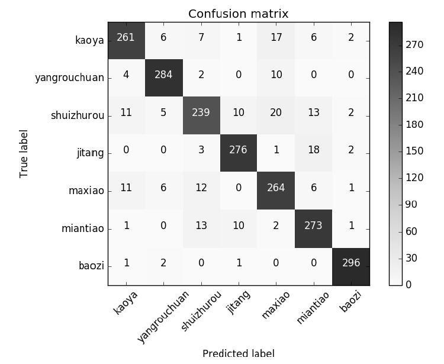
图10-2 四菜一汤两主食模型在测试集上的混淆矩阵
混淆矩阵中横轴是模型预测的类别数量统计，纵轴是数据真实标签的数量统计，所以每行数字的和都是300。首先来看对角线，表示的是模型预测和数据标签一致的数目，所以对角线之和除以测试集总数就是准确率。对角线上数字越大越好，在可视化结果中颜色就越深，说明模型在该类别的预测准确率越高。比如我们看到包子的预测值和真实值一致的有296个，说明该类别模型结果的可靠性最高。然后来按行查看，每行不在对角线位置上的就是错误预测的类别，比如非对角线上的最大值20对应的是水煮肉，但是被模型预测成了麻辣小龙虾。一般来说如果一个值很高，则沿对角线对称的位置上的值通常也很高，比如麻辣小龙虾中被预测成水煮肉的也有12个，是麻辣小龙虾这一行中被误判类别中最高的。说明这两类属于较难区分的，也就是容易混淆，混淆矩阵很直观地帮助我们分析出了这一结论。从视觉上来说这也合理，麻辣小龙虾和水煮肉看起来都是红汤加一堆辣椒，视觉相似度较高，而包子和其他所有类别的视觉相似程度都较低。总体而言，我们希望一个模型的混淆矩阵对角线越高越好，非对角线部分越低越好。另外注意可视化混淆矩阵的时候有个normalize的选项，其是每类别数量归一化的选项，如果每个类别数量不一样则用这个选项会更加直观。
10.2.4 P-R曲线和ROC曲线
1.二分类混淆矩阵
虽然例子中的四菜一汤两主食模型处理是个多标签分类问题，在很多场景更关注的可能是某一个类别对错与否的指标，相当于一个二分类。比如我们接了烤鸭店的委托，要做人工智能找烤鸭照片的任务。这个时候，精度-召回曲线（Precision-Recall，PR）和受试者工作特征曲线（Receiver Operating Characteristic curve，ROC）是更为常见的评估方式。
理解什么是PR和ROC，还要先从混淆矩阵说起，如例子中把是否为烤鸭的混淆矩阵的值表示在表10-1所示的表格中。
表10-1 评估模型预测是否为烤鸭的混淆矩阵
表10-1是衡量二分类模型的一个常用表格。首先来看类别的定义，通常会定义一个正（Positive）类别和一个负（Negative）类别，真实的类别用True来表示。比如定义是烤鸭为正，则模型预测对的“是烤鸭”的个数就是True Positive（TP）；模型预测是烤鸭，然而实际却不是烤鸭的，是False Positive（FP）。相应地，模型预测正确的“非烤鸭”为True Negative（TN），模型预测为非烤鸭，然而确实是烤鸭的为False Negative（FN）。
有了这4个基本的数字，就可以计算指标了，首先是最常见的准确率（Accuracy），在10.2.3节也提到了，对角线之和除以所有样本和。不过这并不能详细了解两个类别分别的准确率，尤其是当两个类别样本数量不等的时候，很难反映出模型的分类能力。在烤鸭的例子中已经能看出一些，虽然准确率96.81%，但是预测为烤鸭的精度并不高。接下来再来考虑更极端的情况，比如10个正样本和990个负样本，哪怕模型把1000个样本全都预测为负样本，正确率也有99%。可这显然是有问题的，所以我们来考虑一些其他的指标。
首先是敏感度（Sensitivity），又称为召回 （Recall）或者TPR（True Positive Rate）是预测为Positive的样本中正确的数量除以真正的Positive的数量。
把分子换一换就是FNR和TPR互补：
相应地预测为Negative中正确的数量除以真正的Negative的总数得到特指度（Specificity），又称为TNR（True Negative Rate），与之互补的是FPR（False Positive Rate）
前面这4个指标中分母项都是真实类别的数量，以模型预测的数量为分母也有两个常见指标，第一个是衡量Positive预测精度
（Precision）的PPV（Positive Predictive Value），其实就是看看模型预测为Positive的里面有多少是准的；相应的指标是NPV（Negative Predictive Value），其实也是一种精度，预测为Negative的精度.
这么一个小小的二维矩阵就有这么多指标，但其实常用的就两对，分别是Precision和Recall；FPR和FPR。这两对指标的形象理解在wikipedia上有个非常好的图示，如图10-3所示。
图10-3中的实心圆点是正样本，分布在方框的左侧；空心小圆圈是负样本，全都分布在方框右侧。大圆圈是模型预测为正样本的，可以看到左半部分是模型预测正确的部分，也就是True Positive，右半部份是模型预测错误的部分，即False Positive。所以当提到TP、FP、TN和FN这4个指标时，里面的Positive和Negative说的是模型预测的结果。整个大圆内的结果就是TP+FP，所以精度就是TP/（TP+FP），意义是预测为正的样本中真正正样本的占比，图示对应图10-3左下角的小图。如果想知道真正的正样本中有多少被模型正确预测出来了，那就是用大圆左半边的部分除以方框左半边的部分，这就是召回和TPR。定性理解这个指标对应的是模型的预测能覆盖多少正样本，所以这个指标还有个名字叫做敏感度，也就是对真正的正样本是否足够敏感。和TPR相对的就是FPR了，代表着错误预测为正样本数量在真实负样本中的“覆盖”占比。所以一个越好的分类器，TPR就越高，同时FPR越低。
图10-3 通过图示形象理解Precision-Recall和TPR-FPR
2.精度-召回曲线（Precision-Recall curve）和F分数（F-Measure）
在上面的结果分析中，一直隐含了一个假设，就是类别的判断是根据每个类别的概率最大值确定的。比如是否是烤鸭，是看Softmax层后，模型对烤鸭预测的概率值是不是最大值。这在多分类的时候是个很自然的想法，然而具体到二分类问题却未必是最合适的。比如把模型预测为烤鸭的概率从高到低排个序，并和真实的标签对应，会得到如下输出
代码详情
1 | 1 0.999988 |
概率值高的部分几乎都是1（是烤鸭），低的部分则几乎都是0（不是烤鸭）。如果是理想的分类器，所有的1都会排在前面，0排在后面，当然这一般不太可能，所以中间会有一定区域0和1混合出现。如果选定一个阈值，比如对上面这个例子，用0.413作为分类阈值，大于等于阈值是模型预测的正样本，小于阈值则是模型预测的负样本。那么所有大于等于0.413的样本中1的数量就是TP，除以大于0.413的样本总数（TP+FP）就是精度，而召回则是TP除以所有真正的正样本数量。也就是说，随着选取阈值的不同，混淆矩阵中的4个值和基于这4个值衍生出来的指标，包括精度和召回是不一样的。把选取不同阈值时对应的精度和召回画出来，就得到了P-R曲线，通过例子的排列样本分数画P-R曲线的代码如下
代码详情
1 | from operator import itemgetter |
其中绘制P-R曲线和计算平均精度用到了sklearn.metrics中的precision_recall_curve（）和average_precision_score（）函数。执行程序后，得到P-R曲线如图10-4所示。
从图10-4中可以看到，总体趋势精度越高召回越低，当召回达到1的时候，对应的是概率分数最低的正样本，这个时候正样本数量除以所有大于等于该阈值的样本数量就是最低的精度值。通过P-R曲线衡量模型的一个指标是平均精度（Average-Precision，AP），也可以理解为P-R曲线围起来的面积。通常来说一个越好的分类器，AP值越高。
图10-4 精度-召回曲线
在实际用到分类任务的时候，需要综合考虑精度和召回，选取一个分类阈值。F-Measure是选取这个阈值的常用手段，F-Measure的公式如下：
其中β是个关于召回的权重，β大于1的时候说明更看重召回的影响，β小于1则更看重精度，β等于1的时候相当于两个值的调和平均，这是一个更常用的指标F1
-Measure：

当我们想用F1 -Measure的时候，只需选取F1 -Measure最大时对应的阈值就可以。
3.受试者工作特征曲线（Receiver Operating Characteristic curve）
通过选取不同阈值还可以得到另一种常见的曲线叫做受试者工作特征曲线，简称ROC曲线，方法和P-R曲线很像，就是根据不同阈值，横轴为FPR，纵轴为TPR的曲线。sklearn.metrics中同样提供了很方便的接口分别是roc_curve（）和auc（）函数，为了方便对比，我们画出烤鸭和水煮肉分别作为正样本时的ROC曲线，代码如下
代码详情
1 | import matplotlib.pyplot as plt |
代码中还包含了产生表10-1中4个值的代码，执行代码可以得到烤鸭混淆矩阵的4个值和烤鸭+水煮肉的ROC曲线如图10-5所示。
在ROC曲线中，左下到右上的对角线代表一个完全没有效果的分类器，如果曲线在对角线左上，说明分类器有效果，在对角线右下说明是负效果。曲线越“靠近”左上角说明分类器越好，理想的分类器对应的ROC曲线是和（0，0）-（0，1）-（1，1）所在的折线重合。ROC曲线围住的面积被称为AUC（Area Under Curve），和P-R曲线中的AP类似，是一个可以直接拿来量化比较的简单指标，越大说明分类器效果越好。回想前面提到过的准确率的例子，ROC和AUC因为是基于FPR和TPR，因为这两个指标都是一种相对的比例，所以当要检验的样本数量不相等时，结果比准确率可靠很多。
通过图10-5可以看到判断是否是烤鸭的ROC曲线，整体比判断是否是烤肉的ROC曲线更接近左上角，AUC也更高，说明模型对于是否是烤鸭的判断整体优于对是否是水煮肉的判断，这和10.2.3节中的结论是一致的。
图10-5 烤鸭和水煮肉分类的ROC和AUC
在P-R曲线中可以通过F-measure选定一个合适的分类阈值，在ROC曲线中也有类似的方法叫做EER（Equal Error Rate），指的是FNR=FPR的情况，因为FNR=1-TPR，所以在ROC中就是曲线和（0，1）-（1，0）对角线的交点。从漏检和误检的角度，可以把FPR理解为对正样本的漏检率，FNR则是预测为正样本的误检率。EER是均衡考虑漏检率和误检率时的阈值选定标准。
10.2.5 全局平均池化和激活响应图
第4章已经提到过全局平均池化，本节来讲讲如何利用这种池化后的全连接层得到一个类别的激活响应图。首先再来回顾一下全局平均池化，如图10-6所示。
图10-6 全局平均池化和激活响应图示意
图10-6a是全局平均池化示意图。在最后一层的响应图上，相比传统的直接上全连接，先经过全局平均池化得到每个响应图的平均值，再接全连接，使得全连接的复杂性一下子下降了，因为池化后每个通道只剩下一个值，所以对于某一个特定类别而言，全连接就相当于简单的加权相加。这样做的好处是，在响应图和类别之间建立了一种对应。比如图10-6a，只画出模型预测的类别对应的权重，这个时候把池化后每个通道的值看作是一个函数的话，对特定类别全连接就相当于一个广义线性模型，泛化的性能也会比参数多很多的直接全连接好很多。
全局平均池化的另一个好处是，因为响应图和类别之间建立了一种线性的对应，所以如果不经过池化，而是如图10-6b所示，直接把这种权重和每个通道的响应图相乘再相加的话，得到的就是该类别的激活响应图。因为不池化的响应图带有一定程度的位置信息，所以加权相加之后得到的该类别的激活响应图应该也会带有非常直观的位置信息。下面通过代码来对这种响应图进行可视化
代码详情
1 | import sys |
默认图像都是先缩放到224×224，最后得到的响应图大小是7×7，如果希望得到分辨率更高的响应图，可以按照代码中的指示把执行transformer.preprocess（）函数之前的两行语句注释掉，这样就可以按照原图大小读取图片并得到响应图。我们从烤鸭、羊肉串和面条类中各找一张试一试，得到结果如图10-7所示。
图10-7 烤鸭、羊肉串、面条样本和对应的响应图
可以看到，在食物自身特征最明显的区域都出现了高的响应。第4章讲到过卷积有个性质叫做同变性，其实就是原图中物体移动到哪里，响应图中的响应也移动到哪里。这种位置信息通过池化层后也能够得到一定程度的保留，所以能通过分类学习得到这样的响应图。从弱监督学习的角度来理解，这是通过分类的弱监督数据，得到了更强的物体位置的信息。有了位置信息，岂不是就可以进行目标检测了？这正是第11章要讲的内容。
第11章 目标检测
本章简要介绍基于卷积神经网络的目标检测（Object Detection）算法，并运行一个基于SSD（Single Shot Detection）算法的目标检测例子。
11.1 目标检测算法简介
本节介绍常见的目标检测算法背后的基本思想，并简要回顾基于深度学习的目标检测算法发展历史。本章介绍的所有主要方法的文献下载链接可以在本书的github仓库中找到。
11.1.1 滑窗法
滑窗（Sliding Window）法的思路极其简单，首先需要一个已经训练好的分类器，然后把图像按照一定间隔和不同的大小分成一个个窗口，在这些窗口上执行分类器，如果得到较高的分类分数，就认为是检测到了物体。把每个窗口都用分类器执行一遍之后，再对得到的分数做一些后处理如非极大值抑制（Non-Maximum Suppression，NMS）等，最后就得到了物体类别和对应区域，其方法示意图如图11-1所示。
图11-1 滑窗法检测物体示意图
滑窗法非常简单，但是效率极其低下，尤其是还要考虑物体长宽比。如果是执行比较耗时的分类器，用滑窗法就不太现实。常见的都是一些小型分类网络和滑窗法结合的应用，如Dalle Molle人工智能研究所（IDSIA）的高级研究员Dan Claudiu Cirean就做过用卷积神经网络结合滑窗法，检测胸腔切片图像中的有丝分裂用于辅助癌症诊断，论文《Mitosis Detection in Breast Cancer Histology Images with Deep Neural Networks》于2013年发表在医学影像处理领域最顶级的刊物MICCAI上。
11.1.2 PASCAL VOC、mAP和IOU简介
在继续介绍目标检测算法演进历史之前，有必要先介绍一下最常用的目标检测算法数据集，以及评估一个目标检测算法的最常见指标。
PASCAL VOC，全称是Pattern Analysis Statistical Modelling and Computational Learning，Visual Object Classes，是一套用于评估图像分类、检测、分割和人体姿势动作等的数据集，当然被用到最多的，还是物体检测。PASCAL VOC包含4大类共20个细分类别，分别是人、动物（鸟、猫、牛、狗、马、羊）、交通工具（飞机、自行车、船、大巴、轿车、摩托车、火车）、室内（瓶子、椅子、餐桌、盆栽、沙发、电视/显示器）。
直观上讲，评价一个检测算法的时候，主要看两个标准，即是否正确预测了框内的物体类别；预测的框和人工标注框的重合程度。这两个标准的量化指标分别是mAP（mean Average Precision）和IOU（Intersection Over Union）。
mAP中文翻译过来叫做平均精度均值，其中AP的概念在第10章已经讲解过。mAP是把每个类别的AP都单独“拎”出来，然后计算所有类别AP的平均值，代表着对检测到的目标平均精度的一个综合评价。
IOU用来衡量预测的物体框和真实框的重合程度，计算方法如图11-2所示。
图11-2 计算IOU（交并比）的示意图
图11-2中实线是人工标注的框，虚线是模型预测的框。重合度的计算方法如图11-2最右边的灰色区域所示，是用两个框重合的面积，除以两个框并集所占的面积，所以叫做交并比。评价一个算法的时候，一种常见的方法是先设定一个IOU的阈值，只要算法找到的框的IOU大于这个阈值，就是一个有效的检测，把结果拿来计算mAP作为最终的评价指标。在PASCAL VOC中，这个阈值设定为0.5。需要提示的是，物体检测的评价方法仍在不断演化中，如IOU，虽然简单易懂，不过很多时候未必合理，视觉上重合度差不多的两个框，实际应用中很可能因为分辨率不同得到差异很大的值。
11.1.3 Selective Search和R-CNN简介
滑窗法相当于对一张图像上的子区域进行类似穷举式的搜索，一般情况下这种低效率搜索到的区域里大部分都是没有任何物体的。所以一个很自然的想法就是只对图像中最有可能包含物体的区域进行搜索，进而提升物体检测的效率。在这种思路的方法中，最为熟知的是Selective Search。
Selective Search的思路是，可能存在物体的区域都应该是有某种相似性的或连续的区域。针对这两个特点，Selective Search采用的是超像素合并的思路，首先用分割算法在图像上产生很多的小区域，这些区域就是最基础的子区域，或者可以看作是超像素。然后根据这些区域之间的相似性进行区域合并，成为大一点的区域。衡量相似性的标准可以是颜色、纹理和大小等。不断迭加这种小区域合并为大区域的过程，最后整张图会合并成为一个区域。这个过程中，给每个区域做一个外切的矩形，就得到了许许多多的可能是物体的区域方框。其实无论是滑窗还是Selective Search，这种找出可能包含物体的区域的方法，统称为Region Proposal。算法执行过程的示意图如图11-3所示。

图11-3 Selective Search进行Region Proposal示意图
可以看到Selective Search和滑窗法相比第一个优点就是高效，因为不再是漫无目的的穷举式搜索。另外，在Selective Search中，一开始的区域是小区域，合并过程中不断产生大区域，所以天然能够包含各种大小不同的疑似物体框。另外计算相似度采用了多样的指标，提升了找到物体的可靠性。至于算法本身当然也不能太慢，否则和滑窗法相比的优势就体现不出来了。算法的具体细节这里就不展开了，有兴趣的读者可以参考作者J.R.R.Uijlings的论文《Selective Search for Object Recognition》。
有了Selective Search高效地寻找到可能包含物体的方框（实际中常进行一定像素的外扩包含一定背景），那么接下来只要接个CNN提取特征，然后做个分类不就相当于检测吗？这正是Ross B.Girshick的基于深度学习做物体检测的开山之作R-CNN（Region-based Convolutional Neural Networks），当然直接用Selective Search选出的框未必精确，所以还加入了一些改进，如和物体标注框的位置的回归来修正Selective Search提出的原始物体框。R-CNN就像Alexnet一样，让物体检测的指标跃上了新台阶（PASCAL VOC，mAP：40.1%→53.3%）。R-CNN的更多细节可以参考发表在2014年CVPR上的论文《Rich Feature Hierarchies for Accurate Object Detection and Semantic Segmentation》。
11.1.4 SPP、ROI Pooling和Fast R-CNN简介
R-CNN虽然比起滑窗法已经快了很多，但可用性还是很差，因为一个稍微“靠谱”的识别任务需要用Selective Search提出上千个框（R-CNN中是2000个）。这上千个图像区域都需要单独过一遍卷积神经网络进行前向计算，速度自然快不了。
1.SPP和ROI Pooling简介
在第4章中已经讲过了卷积的同变性质（equivariance）。第10章的最后通过每类别对应物体的激活响应图的例子，定性理解了物体通过卷积网络之后，会在语义层的响应图上的对应位置有特别的响应。所以一个思路就是，对整张图片执行一次卷积神经网络的前向计算，到了最后一层的激活响应图的时候，通过某种方式把目标物体所在区域部分的响应图拿出来作为特征给分类器。这样做对画面内所有可能物体的检测就可以共享一次卷积神经网络的前向计算，大大节省了时间。第一个在物体检测中实现这个思路的就是当时还在MSRA的Kaiming He提出的SPP，全称为空间金字塔池化（Spatial Pyramid Pooling），示意图如图11-4所示。
图11-4 金字塔池化和ROI池化
如图11-4所示，假设输入图片中框住小马和摄影师的两个框是Selective Search选出来的框，那么经过了（没有全连接层的）卷积神经网络，到了最后一层输出的n个通道的响应图时，原图像上的两个框也会对应两个区域。这样的区域称为感兴趣区域（Region Of Interest，ROI）。一般常用的分类器，无论是SVM还是称浅层神经网络，都需要输入固定的维度。所以如果可以有一种方式把ROI的信息都转化成固定维度的向量，那么就能把每个ROI都给分类器去计算获得结果，并且在进入分类器之前，只需要运行一次卷积神经网络的前向计算，所有的ROI都共享同样的响应图。
SPP就是这样一种方法，对于每一个ROI，如图11-4中所示，SPP分层将指定区域划分为不同数目，图中分为3个层次，最底层划分为4×4=16个子区域，中间层是2×2=4个子区域，最顶层则直接整个区域进行池化，对于每个通道，每个ROI变成了一个21维的向量，因为有个n个通道，所以每个ROI都生成了一个21n维的向量。因为越是底层划分的数目越多，SPP是通过像金字塔一样的结构来获得感兴趣区域不同尺度的信息，所以叫空间金字塔池化。借助SPP，不仅实现了对ROI的分类，而且对于整张图像只需要进行一次卷积神经网络的前向计算，大幅降低了算法执行的时间。另外需要提的是，这里只讲了将SPP用于检测的思路，其实SPP把任意大小的向量转化为固定大小的向量的方法还有另一个意义，就是让输入神经网络的图像大小不再固定，在执行分类任务的时候，这种做法的优点是不需要再对图像进行裁剪或者缩放。SPP的论文《Spatial Pyramid Pooling in Deep Convolutional Networks for Visual Recognition》发表在2014的ECCV上，有兴趣的读者可以自行搜索原文参考。
在SPP中，包含信息最多的其实就是最底层，所以另一个思路是直接把ROI划分为固定的大小，并不分层。如把所有ROI区域池化到7×7的大小，再送入分类器，这就是ROI Pooling，如图11-4的右下部分所示。
2.Fast R-CNN简介
SPP用于物体检测相比R-CNN获得了速度上的巨大提升，但仍然继承了一些R-CNN的缺点。最明显的是分阶段训练，不仅麻烦，而且物体框回归训练过程和卷积神经网络的训练过程是割裂的，整个参数优化的过程不是一体的，限制了达到更高精度的可能性。
针对SPP的缺点，R-CNN的作者Ross B.Girshick再度发力，在SPP检测的基础上提出了两个主要的改进/变化：第一点是ROI提取特征后，把物体框的回归和分类这两个任务的loss融合一起训练，相当于端到端的多任务训练（end-to-end with a multi-task loss）。这让整个训练过程不再是多个步骤分别进行，训练效率也更高；第二点是把SPP换成了ROI Pooling，这就是Fast R-CNN。在计算预测的框和标注框的loss时，Ross B.Girshick并没有像在R-CNN和SPP中那样采用常见的L2方法，而是采用了一种叫做SmoothL1的loss计算方法：
其中，
其实就是把L2和L1拼一块了，其中小的偏差利用L2计算，大的偏差利用L1计算。SmoothL1对偏差很大的值没有那么敏感，好处是提高了loss计算的稳定性。
在这种框架下，因为卷积神经网络计算对每张图像只执行了一次，所以重复计算大都在ROI Pooling之后，于是Ross B.Girshick又提出用SVD分解然后忽略次要成分，把全连接层的计算量减小，达到精度损失极其微小的情况下，获得较大幅度的计算速度提高，这也是算是论文中的一个小的优点。Fast R-CNN的更多细节可以参考2015年ICCV的论文《Fast R-CNN》。
11.1.5 RPN和Faster R-CNN简介
Fast R-CNN主要改进的是卷积神经网络开始往后面的计算，这部分的计算速度大幅提升，Selective Search反倒成为了限制计算效率的瓶颈。所以是不是可以考虑用神经网络的办法取代Selective Search呢？这次Ross B.Girshick联合Kaiming He一起提出了Faster R-CNN。
在第10章末尾激活响应图的例子中了解到，响应图中是可以包含粗略的位置信息的，所以Region Proposal的这一步也完全可以放到最后一层响应图上来做。所以在Faster R-CNN中，Region Proposal Networks（RPN）就被提出来替代Selective Search。这样做的一个重要意义是算法的所有步骤都被包含到一个完整的框架中了，实现了端到端的训练。
RPN首先对基础网络的最后一层卷积响应图，按照执行一次n×n卷积，输出指定通道数（原文中为256，github代码中为512）的响应图。这步相当于用滑窗法对响应图进行特征提取，在论文中n的大小是3，也就是3×3的窗口大小。然后对得到的响应图的每个像素分别进入两个全连接层：一个计算该像素对应位置是否有物体的分数，输出是或否的分数，所以有两个输出；另一个计算物体框的二维坐标和大小，所以有4个输出。其中对于每一个n×n卷积输出的响应图像素，都尝试用中心在该像素位置，不同大小和不同长宽比的窗口作为anchor box，回归物体框坐标和大小的网络是在anchor box基础上做offset。所以假设有k个anchor box，则计算是否有物体分数的输出实际有2k个，计算物体框坐标和大小的输出实际有4k个。因为是对每个像素计算，所以其实RPN就是在前面章节中讲过的NIN，使用1×1卷积实现。在论文中采用的是3种尺寸和3种长宽比，每个像素对应9个anchor box，于是每个像素对应的物体分数有2×9=18个，对应的物体框的输出有4×9=36个。一个RPN的示意图如图11-5所示。
图11-5 Region Proposal Networks的例子
图11-5中最左边的响应图是基础的卷积神经网络得到的最后一层卷积响应。经过256通道的3×3卷积得到了每个位置对应的256维特征，然后以一个1×1的卷积层用于得到每个位置对应的k个anchor box是否物体的得分，另一个1×1的卷积层用于得到每个位置对应k个anchor box的位置和大小。
基于RPN的物体分数和物体框得到可能的物体框之后，训练时经过NMS和分数从大到小排序筛选出有效的物体框，从中随机选取作为一个batch。然后通过ROI Pooling进行分类的同时，会进一步对物体框的位置及大小进行回归，ROI Pooling之后的这两个任务对应两个loss，再和RPN的两个loss放一起就实现了端到端的训练。Faster R-CNN无论是训练/测试的速度，还是物体检测精度都超过了Fast R-CNN，达到了这一系算法的巅峰。这个方法的论文正式版本发表在2015的NIPS上《Faster R-CNN：Towards Real-Time Object Detection with Region Proposal Networks》，有兴趣了解更多的读者可以查找并阅读原文。
11.1.6 YOLO和SSD简介
从R-CNN到Faster R-CNN，这一系列的方法始终都是基于Region Proposal的。不用Region Proposal的方法其实也有很多的研究，其中最有代表性的是YOLO和SSD。
YOLO全称You Only Look Once，取这个名字的意思是源于人眼看东西时，只需要一瞥就能感知出认识的物体，YOLO也希望能达到这种简单高效的检测。执行速度快，是YOLO提出时最大的特点，达到非常高效的检测，其背后是YOLO原理和实现上的简单。YOLO的基本思想是，把一幅图片划分为一个S×S的格子，以每个格子所在位置和对应内容为基础，来预测：
1）物体框，包含物体框中心相对格子中心的坐标（x，y）和物体框的宽w和高h，每个格子预测B个物体框；
2）每个物体框是否有物体的置信度，其中当前这个格子中如果包含物体，则置信度的分数为当前预测的物体框和标注物体框的IOU，否则置信度分数为0；
3）每个格子预测一共C个类别的概率分数，并且这个分数和物体框是不相关的，只是基于这个格子。
综上所述，每个格子需要输出的信息维度是B×（4+1）+C=B×5+C。在YOLO的论文中，B为2，C是PASCAL VOC的类别数20，所以每个格子预测的信息维度是2×5+20=30。格子数S为7，所以最后得到的关于物体预测的信息是一个7×7×30的张量。实现这个过程的原理示意图如图11-6所示。
一幅图片首先缩放为一个正方形的图片，论文中采用的是448×448，然后送进一个卷积神经网络，到最后一层卷积响应图的时候，接两层全连接，输出（并Reshape）是7×7×30，对应前面提到的7×7×30的张量。最后从这7×7×30张量中提取出来的物体框和类别的预测信息经过NMS，就得到了最终的物体检测结果。和基于Region Proposal方法的不同之处在于，YOLO就是一个单纯的卷积神经网络，把物体检测转化成了个单纯的回归问题，端到端的味道比R-CNN系列更加纯正。没有了Region Proposal和对每个ROI的单独计算，再加上利用GPU对计算响应图的并行处理，执行效率得到了极大提升。
YOLO在速度上获得了很大的提升，但是精度上比RCNN系还是逊色一些。其中一个原因是基于格子回归物体框的方式也在一定程度上限制了物体框位置和大小的灵活性。另外7×7的格子并不能将画面划分为足够精细的区域，如在一个格子对应的区域内如果同时出现多个小物体就比较麻烦了。YOLO的论文最终发表在2016的CVPR上《You Only Look Once：Unified，Real-Time Object Detection》。
图11-6 YOLO原理示意图
SSD全称是Single Shot multibox Detector，算是同时借鉴了YOLO和Faster R-CNN思想的方法。可以在达到实时的检测速度水平下，仍然保持很高的检测精度。和YOLO相近的地方是，SSD也会在卷积神经网络的最后阶段，得到S×S的响应图。然后是和Faster R-CNN相近的地方，SSD会基于每个格子的位置借鉴anchor box的思想生成默认的物体框。
本节一开始也提到过，相对于Faster R-CNN，SSD并没有Region Proposal+对ROI分类的两步框架，所以叫做Single Shot，其实从这个角度来说YOLO也是一种Single Shot的检测方法。相比YOLO，SSD的主要改进是从一个分辨率较大的响应图开始，逐渐得到分辨率更低的响应图，每个分辨率下的响应图都作为产生物体类别分数和物体框的格子，这样就得到了不同大小感受野对应的局部图像信息。如图11-7所示为SSD的一个示意图。
图11-7 SSD原理示意
图11-7中的例子是一幅输入图像经过基础网络后，得到了8×8的响应图，然后这组响应图的每个像素位置会产生类似anchor box那样k个默认物体框，其中每个框的大小和位置的修正量对应4个数值，每个框内物体所属类别对应C个数值，所以用一个通道数为（C+4）k的卷积得到预测的框和结果。8×8的响应图进一步卷积可以得到4×4的响应图，这个响应图中的每个像素对应更大的感受野，如图11-7右下的两个图所示。对于这个4×4的响应图也可以用同样办法得到（C+4）k通道的卷积响应作为预测结果，注意不同的响应图上，k的取值可以不同。在SSD中k的取值策略也是不同大小和不同长宽比，最常见的配置是如图11-7左下角所示，取4个默认物体框，或者让长宽比更夸张一些多取两个，即一共6个。
在SSD论文中，基于VGG-16的基础模型在300×300输入分辨率下，得到的conv5是38×38的响应图，每个像素上取k=4，经过进一步降低采样分别得到19×19、10×10和5×5的响应图，对这3个响应图取k=6，最后继续降低采样得到3×3和1×1的响应图，取k=4，则每个类别一共得到38×38×4+（19×19+10×10+5×5）×6+（3×3+1×1）×4=8732个默认物体框。而YOLO默认配置448×448的分辨率，最后7×7的格子上每个格子默认预测2个物体框，每个类别一共是7×7×2=98个物体框。SSD-300比起YOLO输入的分辨率更低，但是感受野的精细程度更高，而且默认物体框的数量高出了快两个量级，结果就是执行速度和精度的双双提升。
训练SSD的思路就和其他流行方法一样，两种loss，一种用来分类，一种用来定位。不过SSD是一个细节非常多的方法，就像SSD的作者在2016的ECCV上讲的那样“The Devil is in the Details”，对SSD做了非常详尽的实验，从训练样本的选取，到数据增加、默认框的长宽比策略、输入图像分辨率，甚至是卷积核的类型等都做了不同尝试，这些细节这里就不一一讲解了，有兴趣的读者可以参考发表在2016年ECCV的原文《SSD：Single Shot MultiBox Detector》来了解这篇实验完备且细节丰富的文章。
11.2 基于PASCAL VOC数据集训练SSD模型
本节一起来了解MXNet下的训练/测试SSD的官方例子，并试试SSD的效果。
11.2.1 MXNet的SSD实现
MXNet的SSD的实现其实就是把SSD作者Wei Liu基于Caffe的官方实现（网址为https://github.com/weiliu89/caffe/tree/ssd
）。在MXNet上的重新实现，原作者是Missouri-Columbia大学的博士生Zhi（Joshua）Zhang。具体实现是在mxnet根目录中的example\ssd目录下，如图11-8所示。
其中config下是训练相关的一些设置，如随机镜像和检测及每个epoch的随机设置等；data是默认存放数据或者数据软链接的地方；dataset是数据迭代的实现，默认是支持PASCAL VOC的数据格式。另外，训练的物体类别定义也是在dataset/pascal_voc.py中实现，所以如果需要训练自己的数据，就要在这个文件中做相应修改；detect中包含执行目标检测的代码和接口；evaludate是封装目标检测代码并评估模型指标的脚本；model文件夹默认用来存储模型结构和参数值；operator是个比较关键的文件夹，里面是对MXNet默认不包含的底层操作的实现，如Faster R-CNN中的Region Proposal，SSD中的默认物体框和标注框的匹配，正负样本的选取，还有NMS等操作的实现代码都是在operator中；symbol里是默认网络结构的定义；tools里定义了一些其他的常用基本操作如随机裁剪和随机补边的实现等；train文件夹则是定义了训练网络的基本操作，由根目录下的train.py调用。根目录下的其他文件后面再介绍。
图11-8 MXNet中SSD的目录结构
11.2.2 下载PASCAL VOC数据集
PASCAL VOC数据集已经简要介绍过了，下载地址如下。
·http://host.robots.ox.ac.uk/pascal/VOC/voc2012/VOCtrainval_11-May-2012.tar
；
·http://host.robots.ox.ac.uk/pascal/VOC/voc2007/VOCtrainval_06-Nov-2007.tar
；
·http://host.robots.ox.ac.uk/pascal/VOC/voc2007/VOCtrainval_06-Nov-2007.tarhttp://host.robots.ox.ac.uk/pascal/VOC/voc2007/VOCtrainval_06-Nov-2007.tar 。
其中前两个分别是2012年和2007年的训练验证集下载地址，第3个是2007年版本的测试集下载地址，通常的用法是前两个数据作为训练验证数据，最后一个用来测试指标。下载完毕后，分别对三个文件执行tar–xvf，就可以得到一个VOCdevkit的文件夹。VOCdevkit包含两个文件夹VOC2007和VOC2012，这两个文件夹下的文件结构基本一致，一共是5个子文件夹，分别是Annotations、ImageSets、JPEGImages、SegmentationClass和SegmentationObject。
对于目标检测任务，主要关心的是前3个文件夹：Annotations下是所有的标注信息，格式为XML，每个XML里的
如果想要自己制作数据，如用本书第6章的小工具标注的数据来训练模型。最简单的方式是按照这里说的规则，把所有标注信息放到Annotations里，图片做成JPG格式放到JPEGImages中，然后训练/验证/测试集的列表放到ImageSets/Main下，再修改dataset/pascal_voc.py下的相应代码并另存，其他步骤与训练PASCAL VOC区别不大了。
执行本书github代码仓库中的prepare_voc_data.sh可以自动完成下载到解压的步骤。
11.2.3 训练SSD模型
第7章已经讲过如何安装和配置MXNet，不过默认下载并编译好的MXNet无法直接训练SSD，原因就是SSD中有些操作是默认不被MXNet支持的。这些操作定义在operator文件夹下，所以我们需要做的是，找到根目录下的make文件夹，打开里面的config.mk，找到EXTRA_OPERATORS =这一行，修改为ssd中operator的路径
1 | EXTRA_OPERATORS = example/ssd/operator |
如果使用的MXNet已经加入了自定义的operator，则用下面语句
1 | EXTRA_OPERATORS += example/ssd/operator |
然后到MXNet的根目录下，输入make命令，就得到了支持SSD的MXNet版本。当然用Python调用前别忘了再到mxnet\python目录下执行以下语句来更新python接口。
1 | >> python setup.py install |
训练SSD并不是从头训起，而是从一个ImageNet数据集预训练好的简化版VGG-16模型开始，按照官网的说明，该模型可以从下面链接下载https://dl.dropboxusercontent.com/u/39265872/vgg16_reduced.zip ，国内的读者也可以选择到本书的github代码仓下找到：
https://github.com/frombeijingwithlove/dlcv_for_beginners/tree/master/chap11 链接下载。
下载后解压得到定义网络结构的文件vgg16_reduced-symbol.json和对应的参数文件vgg16_reduced-0001.params。把这两个文件放到example\ssd\model下，基础模型就准备好了。接下来把11.2.2节中准备好的VOCdevkit文件复制到example\ssd\data下，或者通过ln–s在example｜ssd｜data下建立一个链接。现在万事俱备，直接到ssd目录下执行train.py就可以开始训练了，考虑到硬件配置的不同及训练效果等，可以通过修改train.py的参数执行训练，如笔者修改了batch-size和epoch
1 | >> python train.py --batch-size=24 --epoch=20 |
训练过程中会得到实时的训练精度和loss的输出，每个epoch结束会在验证集上测试模型，输出例子如下
代码详情
1 | INFO::Epoch[0] Batch [20] Speed: 18.31 samples/sec Train-Acc=0.453572 |
11.2.4 测试和评估模型效果
因为训练比较耗时，笔者象征性地训练了一个epoch，此外官网也很贴心地提供了训练好的模型（从原作者提供的模型转换而来），地址为https://dl.dropboxusercontent.com/u/39265872/ssd_300_vgg16_reduced_voc0712_trainval.zip 。
如果无法下载，本书的github代码第11章的目录下有国内下载的链接。下载后解压得到ssd_300-0000.params和ssd_300-symbol.json两个文件，放到example/ssd/model下。然后执行
1 | >> python evaluate.py |
就会默认执行vgg16_reduced，epoch为0的模型在VOC2007测试集上的评估，输出每个类别的AP和最后的mAP。
代码详情
1 | INFO:root:Start evaluation with 4952 images, be patient... |
如果要评估别的模型可以在输入参数中指定，如下面命令评估训练完3个epoch得到的模型，并且batch-size指定为24。
1 | >> python evaluate.py --batch-size 24 --epoch 3 |
上段代码评估的模型文件实际上是用来训练和验证的模型，实际部署的时候，和训练相关的如loss等都是不需要的，对默认的vgg16训练出的模型，可以用下面脚本生成用于部署的模型和参数文件。
1 | >> python deploy --num-class 20 |
执行完该脚本，在model文件夹下生成的两个deploy_前缀的文件就是用来部署的模型结构和对应参数值，其中.params文件其实就复制了一遍而已。
11.2.5 物体检测结果可视化
现在万事俱备，可以使用训练好（或是下载好）的模型执行检测任务了。MXNet的SSD自带demo，首先到data/demo下运行
1 | >> python download_demo_images.py |
这个脚本会下载几张用于演示的图片，其中包括根目录下demo.py的默认演示图片dog.jpg。回到ssd目录下，执行
代码详情
1 | >> python demo.py |
得到图11-9所示的结果。
图11-9 默认的demo图片dog.jpg的检测结果
如果要指定图片就用—image选项，下面用前面也用过的照片来试试
1 | >> python demo.py --images beihong_village.jpg |
得到结果如图11-10所示。
图11-10 beihong_village.jpg的检测结果
下面来简单看一下demo.py到底做了什么，demo.py中主要就是一个交互的总逻辑，通过get_detector（）获取了一个定义在detect文件夹下的Detector对象。在detect/detector.py中，定义了Detector的类。首先Detector的初始化阶段，和之前讲的MXNet做分类的代码没有什么不同，就是把一个symbol读进来，并进行bind用于后续计算。成员函数中的detect（）用于执行前向计算，用mod.predict（）执行前向计算之后，得到的结果detections是一个三维的张量。其中第一个维度和batch相关，因为demo.py中默认batch-size为1，所以所有结果都在detections[0]里，这个结果如看做是一个二维矩阵的话，每行就是一个检测到的物体框。第一列是物体框的类别下标，如果为-1说明是背景。第2列是类别的分数，第3～6列分别是xmin、ymin、xmax和ymax相对于画面宽高的百分比，所以物体框在画面中左上角的坐标就是（xmin×宽度，ymin×高度），右下角坐标是（xmax×宽度，ymax×高度）。im_detect（）函数是调用detect对读取的数据进行前向计算。detect_and_visualize（）函数会调用im_detect（）函数返回的结果，然后在visualize_detection（）函数中进行可视化，可视化的规则是取类别得分大于给定阈值的框进行可视化，detector.py中，相关部分代码和注释如下（代码中的省略号表示省略了部分代码）
代码详情
1 | ... |
11.2.6 制作自己的标注数据
本书第6章最后曾实现了一个简单的标注小工具，考虑到灵活性，该小工具是用自定义的格式保存了标注信息。但其实基本上现在的物体检测算法大都是默认支持PASCAL VOC的格式，本节提供一个进行转换的小脚本，可以把小工具标注好的数据转换为PASCAL VOC支持的XML格式，方便各种主流框架下训练自己标注的数据。
标注信息其实就是个XML，对于目标检测而言，需要的最小信息是
代码详情
1 | import os |
保存为detection_anno_bbox2voc.py，用Python执行时第一个参数是包含图片和标注信息的文件夹，就可以根据第6章定义的后缀为bbox的标注信息，生成相应的XML标注信息并保存在同一文件夹下。
第12章 度量学习
本章介绍度量学习（Metric Learning）的基本概念，并通过MNIST训练Siamese网络的例子来加深理解。
12.1 距离和度量学习
在机器学习中，有一类算法如K近邻/K-means、SVM、相似比对/搜索相关的算法等，非常依赖距离这个度量来对数据执行分类/聚类/搜索等任务。所以有一个方向专门研究如何让一个算法更好地学习到一种度量，比如欧式距离，提升特定任务的算法性能，这就是度量学习。
12.1.1 欧氏距离和马氏距离
本节首先来考虑图12-1所示的例子。
图12-1 欧式距离和马氏距离
图12-1中左下角是在二维空间中由一个分布产生的方块样本，这个分布的一条等高线如虚线的椭圆框所示。图12-1中还有一个不属于该分布的圆圈样本，在做聚类一类的任务时，通常会用欧式距离判断是否属于同一类，如果对于本例用欧式（Euclidean）距离则会出现问题。如图12-1左上角图所示，从方块分布中抽出中央和右上角边缘的两个样本，和圆圈样本单独画出来，可以看到圆圈样本更加靠近方块样本的中心，而那个离得远的方块样本到中心样本的欧氏距离反而更远，这是因为产生样本的分布本身形状导致的。这种情况下，马氏（Mahalanobis）距离则是更加合适的一种度量。马氏距离是由印度统计学家Mahalanobis提出的一种用于表示数据的协方差距离的度量，定义如下：
其中x，y分别是两个空间中的坐标，Σ是产生方块的分布的协方差矩阵。在这种距离的度量下，方块分布的等高线到分布中心的距离都是相等的，如图12-1右上角图所示。在第2章讨论PCA的时候已经讲过，协方差矩阵包含着方差在不同轴上投影的信息，所以如果把马氏距离看作是如下的形式的话：
其中AT =LT UT ，对角矩阵LT 的对角线分别为协方差矩阵本征值的倒数开方，UT 的行向量就是协方差矩阵的本征向量。通过AT 对原来的样本进行变换，就得到图12-1右下角图，对于方块的分布而言，计算马氏距离就等效于在变换后的空间里计算欧式距离。
通过前面的讨论知道了马氏距离就是对一个可以用协方差矩阵描述的分布，计算等效距离的一种方式，不过对于很多机器学习任务，得到描述某一类样本的分布的协方差矩阵往往意义不大，或是有时候样本数量相对于维度都不足以得到一个有效的协方差矩阵。所以在机器学习中，马氏距离的意义可以拓展一下，如果用：
来表示想要最终使用的度量，其中M可以是任意满足条件的半正定矩阵，那么如何找到一个合适的M就是最早的度量学习关心的问题。
12.1.2 欧式距离和余弦距离
除了马氏距离，第2章中讲过用来计算相似性的余弦距离也是一种常用的度量方式，如图12-2所示的样本。
图12-2 余弦距离和等效计算
如图12-2a所示，两种样本在距离上展现出的区分度并不特别明显。但在以原点为中心和坐标轴成的角度来看，区分反而显得更清晰，这种情况就可以考虑用余弦距离。第2章讲过计算余弦距离的公式，通过公式可以知道，余弦距离其实本质上还是在计算角度之间的差，因为直接计算余弦距离的运算量并不小，所以更常用的一种计算方式是用归一化之后的坐标（或者特征）相减，降低计算量，公式如下：
形象的理解如图12-2b和12-2c所示，假设图12-2b中的虚线圆弧是单位圆所在，那么归一化就相当于把每个样本沿着半径投影到单位圆上，投影后的样本就是空心的方框和小圆圈，如图12-2c所示。投影之后再计算欧式距离，这个距离就等于距离和半径比值。因为单位圆半径是1，当两个样本距离较近时，这个值可以很好地近似样本的夹角，当两个样本距离远时，虽不能很好近似，但也能大致反映出夹角大小。
12.1.3 非线性度量学习和Siamese网络
12.1.1中计算马氏距离相当于是线性变换，不少很有代表性度量学习的方法都是基于线性变换去做的，比如Large Margin Nearest Neighbor，Information Theoretic Metric Learning等。线性变换的优点是学习出来的metric不容易过拟合，求解很快，泛化性也相对好一些。但是缺点也很明显，拟合能力往往不够，对输入样本特征的可分性要求也高。
在12.1.2节中计算余弦距离就已经不是线性变换了。所以广义来看，度量学习要解决的就是找到一种好的度量方式，不管是非线性还是线性的。对于非线性的情况，概括为公式如下：
其中f是非线性变换。既然可以有非线性变换，那么神经网络当然也是一个选项。考虑一个卷积神经网络用f=G（x）表示对输入进行的非线性变换。对于来自于同一类的样本，让同类别的样本之间的距离经过G变换后距离更近，而不同类别之间的样本经过G变换后距离更远。训练阶段可以考虑训练的时候每次都输入两个样本，用两个参数完全一样的网络对这两个样本进行变换，最后设计一个loss函数来实现让相同样本对之间的距离更近，不同样本对之间的距离更远，如图12-3所示。
图12-3 Siamese网络示意图
这种网络结构被称为Siamese Architecture，是1993年LeCun在贝尔实验室时和同事合作发表的文章《Signature Verification using a”Siamese”Time Delay Neural Network》中提出的结构。Siamese的名字源于著名的连体双胞胎恩（Eng）和昌（Chang）。19世纪的时候，这对连体双胞胎兄弟因为跟随马戏团在全世界巡演而名噪一时，因为二人的出生地是泰国的暹罗（Siam），所以被称为Siamese Twins，后来Siamese Twins就成了连体人的代名词。2005年的时候LeCun用这种结构的卷积神经网络来训练人脸比对（Face Verification）模型，获得了不错的结果，论文《Learning a Similarity Metric Discriminatively，with Application to Face Verification》发表在CVPR上，一举成为了用卷积神经网络做Metric Learning的基础方法。
12.1.4 Contrastive Loss：对比损失函数
基于LeCun的工作，Caffe对Siamese训练提供了很好的支持，Caffe中内置了用于训练Siamese网络的Contrastive Loss层，这种loss的计算公式如下：
其中N是每个batch的大小，y是标签，1代表相同样本，0代表不同样本，margin是人为设定的一个值，d是每对样本的欧式距离。
其中a和b分别是要比较距离的两个样本最后计算出来的特征（一个向量）。利用Contrastive Loss层的时候，需要3个输入：两个输入分别是一对样本对应的特征a和b，欧式距离在层内自动计算，另一个输入为是否相似的标签y。
根据Contrastive Loss的定义，当两个样本一样的时候，y=1，优化的目标是让d2 尽量小，是让相同样本尽量靠近；当两个样本不同时，y=0，是让max（margin-d，0）2 尽量小，也就是d尽量大以接近margin，让不同的样本尽量远离。
12.2 用MNIST训练Siamese网络
本节还是通过最简单的MNIST的例子，通过训练Siamese网络让相同数字变换后的距离尽量靠近，不同数字变换后尽量远离。
12.2.1 数据准备
Caffe中也有用MNIST训练Siamese的例子，不过和MNIST分类的例子一样，细节全都隐藏在C++和shell代码里了，所以本节从头开始，方便读者举一反三。
第一步当然是准备MNIST的数据，可以参考第8章，下载MNIST压缩包并生成图片，然后在当前文件夹下建立一个指向mnist文件夹的链接
1 | >> ln –s /path/to/mnist mnist |
Caffe官方的例子使用的leveldb，本节中不打算介绍这种方式，而是用另一种思路，利用之前用过的lmdb来实现Siamese训练。具体办法是：生成两个lmdb，其中数据的顺序一一对应，如果是相同数字，则标签为1，否则标签为0。对训练时用到的prototxt也做相应修改，用两个data layer分别读取两个数据，按照图12-3所示的思路经过CNN之后最后再计算转换后特征的距离。
在Caffe和其他一些流行框架如Keras中，产生样本方式就是随机配对，这种情况下，假设每类数字的样本数量相等，均为n，则相同样本的占比是：
对于n>>1的情况，近似就是0.1，这个比例对于MNIST这样简单的数据效果还不错，本节也用这个简单的策略进行训练。不过需要提一句的是，在做一些其他的训练的时候，相同样本和不同样本的比例往往是经验值，需要一定的尝试。用来生成MNIST文件列表的脚本如下
代码详情
1 | import os |
执行脚本，得到train.txt、train_p.txt、val.txt、val_p.txt这4个文件。然后像在第8章中一样生成4个lmdb
代码详情
1 | >> /path/to/caffe/build/tools/convert_imageset ./ train.txt train_ lmdb --gray |
因为文件对本身就是随机挑选的，再加上每行的文件和标签要一一对应，所以不能再使用—shuffle这个选项。另外需要注意的是，因为两个lmdb一一对应，所以在使用其他数据的情况下，比如自己采集的人脸比对的数据，如果其中有任何文件图片是损坏的，则对应的两个路径都不应该写到列表文件里，否则在生成lmdb的时候可能出现错位。
12.2.2 参数共享训练
训练的solver就是/path/to/caffe/examples/siamese下的mnist_siamese_solver.prototxt，只不过把网络结构文件指向我们自己定义的文件路径。网络结构定义和Caffe自带例子主要的不同在data layer，基础网络结构就是LeNet-5，具体如下
代码详情
1 | name: "mnist_siamese_train_test" |
需要注意的有两点：第一点，对应的data layer参数要完全一致，每对中只要一个datalayer读取标签就可以了，另一个可以忽略读取标签；第二点，参数共享通过制定参数名称实现，一定要保证名称相同。网络结构的可视化如图12-4所示。
图12-4 用多个lmdb训练Siamese的网络结构可视化
完整的solver和网络结构定义可以在本书的github代码仓中查看。接下来训练的过程与第8章类似。
1 | >> /path/to/caffe/build/tools/caffe train -solver mnist_siamese_ solver.prototxt -log_dir ./ |
得到的训练曲线如图12-5所示。
图12-5 用MNIST训练Siamese模型的收敛曲线
由图12-5可知后期显然过拟合了，最小的验证集loss是在迭代22000次附近。
12.2.3 结果和可视化
本节选取20000次时保存的模型来试一试，部署的文件就是Caffe自带的mnist_siamese.prototxt，这个文件和一般的LeNet-5区别不大，只是最后一层换成了一个二维输出。Caffe自带的例子选择二维输出，一方面可能是因为MNIST确实比较简单，另一方面也容易可视化，所以这里直接用下面脚本把所有test集中的样本最后的输出画在二维平面上。
代码详情
1 | import os |
因为样本量较大，本段代码推荐在GPU上运行，运行后得到的结果可以清楚看到相同的数字会“聚”在一起，如图12-6所示。
图12-6 对图片提取二维特征的可视化
12.2.4 用τ-SNE可视化高维特征
MNIST的例子非常简单，所以二维的特征就足够了。然而在实际的应用中，比如人脸比对或场景搜索，特征的维数可能是上千维。这时候如果还要可视化，就需要借助降维手段。第2章讲降维的时候提到过τ-SNE，基本上算是高维度特征在低维度下可视化的最常用方法了。这种算法的基本思想是，高维空间中样本距离的相对远近，在降维后的空间中也要体现出来。不过本书不打算探讨该方法的细节，只是讲一下如何通过Python的sklearn工具包调用该算法进行可视化。因为我们的例子中没有专门训练一个高维度的特征，所以用训练好的模型的倒数第二层全连接层ip2代替进行测试。接上段代码，可视化ip2输出特征的代码如下
代码详情
1 | from sklearn.manifold import TSNE |
如果是配置比较低的计算机，可以考虑只用一部分样本进行可视化。执行上面代码得到的图像如图12-7所示。
图12-7 τ-SNE在二维空间中可视化倒数第二层的10维特征
图12-7虽然效果不如最后的二维特征，但也能看出已经有了比较明显的区分性。可视化的完整代码和预训练好的模型在本书的github代码仓中也可以找到。
第13章 图像风格迁移
本章简要介绍一种实现图像风格迁移的算法，并介绍MXNet中对照片风格化处理的有趣例子。
13.1 风格迁移算法简介
本节简要介绍通过基于卷积神经网络的图像重建，实现风格迁移的方法。
13.1.1 通过梯度下降法进行图像重建
前面已经讲过，神经网络可以看作是一种变换，输入在每一层变换后都可以看作是一个向量，这个向量经过下一层继续变换成为新的向量。因为是变换，很自然会想到是否可以做逆变换，也就是根据提取的特征进行图像重建的问题。对于一般的卷积神经网络，严格的逆变换常常是不行的，不过这个问题有不少人研究过，其中一种比较有代表性的方法是VGG组在2015年CVPR上发表的《Understanding Deep Image Representations by Inverting Them》。方法的基本思路是原始图片经过变换后会得到一个向量作为特征，这时候保持提取特征的网络的参数不变，用任意输入（比如白噪声）经过网络变换可以得到一个特征，然后定义一种损失函数来计算这个特征和原图得到特征的差异，并利用梯度下降法进行优化，同时加入规范化的项对要重建的图像进行约束。这就转换成了一个优化问题：
其中，ximg 是目标图像，x是迭代过程中的图像，所以维度是图像的宽（W）乘以高（H）再乘以通道数（C）。优化的目标函数是要让目标图像经过一个卷积神经网络G得到的特征，和要重建的图像经过G得到的特征尽量一致。采用欧式距离作为损失函数，另外，因为通常是个不可逆问题，所以需加上规范化的项。规范项有很多选项，原文中采用的是图像的梯度，外加考虑了图像分辨率大小的取值幅度。
求解这个问题就可以得到重建的图像，如图13-1a所示。至于变换G，可以是不同的网络，也可以是同一个网络中任何层得到的特征。第4章中已经讨论过，对于一般的分类/检测网络等，越靠近输入的特征越底层，比如纹理，或是简单形状等；越靠近输出的特征则包含越多的语义信息，比如不同种类的物体或是某类物体的明显特点。在图像重建中，特征所处的位置则反映在重建的完整性上。对于底层的卷积核，如果数量足够，是能够很好保存原始图像中的信息的。另一方面因为低层的特征响应图的维度通常远高于输入的图像，这时候只要特征足够多样化，几乎是可以完美重建输入图像。随着特征的不断传播，丢失的信息越来越多，尤其是到了很高的层之后，特征的维度也降下来，这时候通过梯度下降重建输入图像成了典型的病态问题，重建的效果就不会很好，最后的结果受到规范化项的影响也比较大。体现在视觉上就是低层特征重建的图像和原图更像包括线条等细节，都能够得到很好的还原，而高层特征重建的图像则丢失较多内容，尤其是细节部分。比如用MXNet的neural-style自带的VGG-19模型为例，https://github.com/dmlc/mxnet/blob/master/example/neural-style/model_vgg19.py ，分别基于relu1_1、relu2_1、relu3_1、relu4_1和relu5_1的特征进行图像重建，就会发现随着特征层数的不断变高，丢失的信息从细节边缘到颜色，再到整个画面，如图13-1b所示。
图13-1 通过梯度下降的方法重建图像示意图
13.1.2 图像风格重建和Gram矩阵
提到图像风格，其实是个很主观的概念，每个人都有不同的理解，比如绘画的表现形式有写实、印象、浪漫等。稍微具体一些的比如以画的类型区分，有油画、水彩、国画或素描，到这个层级就已经偏向客观一些了，从纹理上就能很明显地区分。更细致具体的就是绘画的笔触了，比如素描中不同的笔触会留下不同的线条和变化。计算机视觉中，谈到图像风格一般指的都是偏于客观的成分，也就是纹理、线条等特点。图像风格学习基于的早期研究都属于计算机视觉中纹理合成（Texture Synthesis）的范畴，这在第1章中也介绍过。所以在本章中说到图像风格的学习，其实具体一些可以理解为基于卷积神经网络的纹理合成。
通过13.1.1节我们知道了如何通过图像特征重建图像内容的一种方法，本节介绍基于同样套路来重建图像纹理风格的方法。既然是纹理，其中的一个特点就是和图像中的具体位置无关（比如第1章图1-12a），基于此常见的思路有两大类：一类是参数化方法，把图像中的某种统计信息拿出来作为一种代表纹理的特征；另一类是非参数化方法，大体思路是随机采样图像中的区域，然后通过某种自然的方式合成新的纹理。本节介绍的方法属于第一类，利用卷积神经网络不同层响应图的Gram矩阵代表纹理的信息：
其中Gl 代表第l层响应图对应的Gram矩阵， 代表该层第i个卷积核对应的响应图。通常一个响应图是二维的，这里把响应图展开为一个一维向量，其中 代表该层第i个响应图的第k个元素。所以Gram矩阵中每个元素就是该层响应图对应的两个通道的点积，代表了这两个通道的特征之间的相关性。接下来就和13.1.1节一样了，把每层Gram矩阵作为特征，让重建图像的Gram矩阵尽量接近原图的Gram矩阵，也是个优化问题：
其中El 是每一层的loss，wl 是该层loss的权重。El 的形式是考虑到每层响应图大小后的Gram矩阵差异。
其中 是输入图像每层的Gram矩阵。从第4章中知道，不同层响应图的像素对应着原画面上不同大小的感受野，同时越高层相应包含的信息越抽象，这种特性一定程度上也体现在重建的纹理中。下面以梵高的《星夜》作为输入，来看看分别以relu1_1、relu2_1、relu3_1、relu4_1和relu5_1，还有把这些层综合考虑一起的Gram矩阵作为优化目标得到的纹理。采用的模型同样是mxnet/example/neural-style自带的VGG-19，结果如图13-2所示。
是输入图像每层的Gram矩阵。从第4章中知道，不同层响应图的像素对应着原画面上不同大小的感受野，同时越高层相应包含的信息越抽象，这种特性一定程度上也体现在重建的纹理中。下面以梵高的《星夜》作为输入，来看看分别以relu1_1、relu2_1、relu3_1、relu4_1和relu5_1，还有把这些层综合考虑一起的Gram矩阵作为优化目标得到的纹理。采用的模型同样是mxnet/example/neural-style自带的VGG-19，结果如图13-2所示。
图13-2 不同层Gram矩阵重建纹理的结果
通过图13-2可以观察出不同层的Gram矩阵对重建图像的贡献，比如relu1_1只能得到很高频的纹理特征，差不多是画面中最基本的色块，无序程度也最高。而随着层数的增加，得到的重建纹理中渐渐出现了类似于线条走向的信息，甚至能勉强看出一点梵高特有的漩涡状线条。然后把所有5个层对应的loss平均加在一起，就综合考虑了各种不同尺度和层次的纹理。得到的重建如图13-2中的all图所示，感觉夜空、小镇、星月和松树像是都溶进了一幅随手涂的油画里。
13.1.3 图像风格迁移
图像内容和图像风格（纹理）的重建方法都有了，那么图像风格迁移的思路就很自然了，就是把两种loss考虑在一起，重建的图像会融合一张图像的内容和另一张图像的风格，所以仍然是个优化问题。
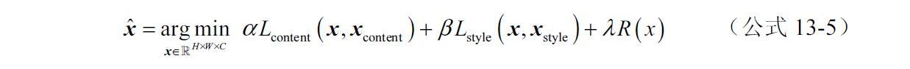
其中xcontent 和Lcontent 分别是内容图像和对应的loss，xstyle 和Lstyle 分别是风格图像和对应的loss，R（x）是规范项。α，β和λ分别是权重系数，用来决定重建的图像更偏重内容还是风格。这个方法算是基于卷积神经网络进行风格迁移的开山之作，最早由德国Tubingen大学的Leon A.Gatys发表在arxiv上的预印版论文《A Neural Algorithm of Artistic Style》中，后来完善版的论文《Image Style Transfer Using Convolutional Neural Networks》发表在2016年的CVPR上。
这种直接基于优化的方法优点是简单清晰，发表之后就陆续出现改进风格loss的各种办法。比如德国Mainz大学一个研究组，用基于图像patch的马尔科夫随机场loss替换Gram矩阵的《Combining Markov Random Fields and Convolutional Neural Networks for Image Synthesis》，对于很多图片的效果要自然很多。
从图像直接优化的过程其缺点在于很慢，所以另一个方向是针对慢的问题进行研究。比如Stanford的Li Fei-Fei组发表在2016年ECCV上的论文《Perceptual Losses for Real-Time Style Transfer and Super-Resolution》，把内容图像经过一个变换网络，再送入计算内容加风格loss的网络，这样再生成新图片的时候就不需要经过漫长的优化过程了，达到了实时。在MXNet中的官方例子里，有个end_to_end的文件夹，其中的方法就和这个思路类似但又不完全一样，有兴趣的读者可以参考http://dmlc.ml/mxnet/2016/06/20/end-to-end-neural-style.html 。
2017年1月，在arXiv上出现了一篇叫《Bringing Impressionism to Life with Neural Style Transfer in Come Swim》的论文，这篇论文用风格迁移的方法对影片《Come Swin》的画面进行了风格转换和调参，提出了风格迁移和艺术结合的研究方向。
13.2 MXNet中的图像风格迁移例子
本节一起来了解MXNet下实现图像风格迁移的官方例子，并试试效果。
13.2.1 MXNet的风格迁移实现
MXNet中风格迁移的实现在mxnet/example/neural-style下，实现的是最原始的Gatys版的算法，文件列表如图13-3所示。
图13-3 MXNet中neural-style例子的主要文件
其中download.sh用于下载VGG-19模型的参数；model_vgg19.py为模型结构的定义；其他大部分实现都在nstyle.py里；find_mxnet.py是用来自动导入MXNet的脚本；两个ipynb是ipython notebook文件，主要演示如何运行和查看优化过程中的结果，在控制台执行
1 | >> jupyter notebook |
然后在浏览器中找到这两个ipynb文件就可以打开。因为方法本身非常简单，所以主要关注的几乎都在nstyle.py中，下面通过注释的方式结合代码一起来看看这个文件的具体实现。
代码详情
1 | import find_mxnet |
model_vgg19.py文件这里也简单看一下，主要值得关注的是get_symbol（）函数的最后几行
代码详情
1 | # 定义用来提取风格和内容特征的层 |
可以看到风格训练有用到从高层到低层的特征，而训练图像内容只使用了relu4_2这一比较高层的特征，这样可以让纹理更充分地替代图像内容中的细节。
13.2.2 对图片进行风格迁移
首先来试试自带的例子，第一步下载预训练好的VGG-19模型参数和示例图片。
1 | >> sh download.sh |
之后会在input文件夹下得到两幅演示的图像，model文件夹下得到VGG-19的模型参数vgg19.params。然后直接运行
1 | >> python nstyle.py |
即能得到把《星夜》风格迁移到建筑物上的图片了，输出在output文件夹下。作为演示，用下面命令运行脚本，每隔30次迭代获取一幅重建中的图像。
1 | >> python nstyle.py --save-epochs 30 |
训练中重建图像的变化过程如图13-4所示。
图13-4 重建图片随训练进行的变化过程
可以看到随着迭代次数的增加，图片渐渐从一团乱糟变成了带有《星夜》味道的图像。下面再来试试其他的照片和风格，通过—content-image和—style-image参数可以分别指定内容和风格图像，通过—content-weight和—style-weight可以调整相应loss的比重。下面用海边拍摄的照片分别加上莫奈的《帆船，夜晚印象》，以及19世纪德国浪漫主义画家Caspar David Friedrich的《云端的旅行者》，并把风格的权重系数增加到2来测试，结果如图13-5所示。
图13-5 图像风格迁移的例子
从图13-5中看效果还不错，从《帆船，夜晚印象》的例子来看，得到的照片甚至暗部细节也提升了，相当于实现了HDR（High Dynamic Range）效果，也就是说连图像的动态范围也作为风格学习到了。通过调整风格比重，甚至改变用来提取特征的层，还可以获得更多不同的变化，这些变化就留给读者自己探索了。